data/ include the 0.2.0 run (*-v020-20261111.csv).ab (IP literal + Host header); HTTP/2 by h2load. The "light" vhost has
~no rewrite rules; the "heavy" vhost runs the production ~130-rule .htaccess front controller.
PHP is served through httpjet's native LSAPI to an isolated lsphp pool. Static file-size
fixtures are random blobs. RPS = requests/sec (higher is better); latency in ms.
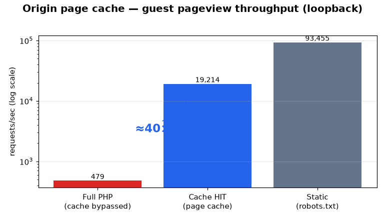
hj-pagecache crate — a clean-room LSCache equivalent. The app opts pages in via
X-LiteSpeed-Cache-Control; entries are keyed by the original request URI + a public
style/language cookie vary and are identity-guarded (served only for the exact URL they were built
for). Logged-in users bypass; Set-Cookie and the internal X-LiteSpeed-* headers are
stripped from shared copies; tag purge (X-LiteSpeed-Purge) is honored. A cacheable guest
pageview is served from memory instead of re-rendering through PHP/MySQL.
| workload (loopback HTTPS, isolated 8-worker instance) | concurrency | rps | p50 ms | p90 ms | p99 ms |
|---|---|---|---|---|---|
| guest-page-cache-hit | 1 | 4,862 | 0 | 0 | 0 |
| guest-page-cache-hit | 1 | 6,056 | 0 | 0 | 0 |
| guest-page-cache-hit | 50 | 18,211 | 1 | 0 | 0 |
| guest-page-cache-hit | 50 | 19,215 | 2 | 3 | 5 |
| guest-page-cache-hit | 200 | 17,782 | 6 | 0 | 0 |
| guest-page-cache-hit | 200 | 18,929 | 10 | 11 | 19 |
| guest-page-full-php | 20 | 218 | 7 | 27 | 5539 |
| guest-page-full-php | 20 | 499 | 14 | 17 | 25 |
| guest-page-full-php | 40 | 136 | 11 | 25 | 7963 |
| guest-page-full-php | 40 | 480 | 34 | 39 | 166 |
| static-robots-txt | 50 | 93,455 | 0 | 1 | 1 |
| static-robots-txt | 50 | 86,527 | 0 | 1 | 1 |
| static-robots-txt | 200 | 74,537 | 2 | 2 | 4 |
| static-robots-txt | 200 | 71,047 | 2 | 3 | 26 |
lsphp children); under real
production contention the offload is larger still, since uncached PHP degrades under load while cache hits do
not. Deployed to the active-active production pair (PGO build).
-C target-cpu=native (AVX-512 on x86_64, Neoverse-N1 on aarch64), the
mimalloc global allocator, and profile-guided optimization — was the first above-noise
raw-serving win. Same-session A/B (loopback ab -k, production live): heavy
.htaccess vhost +11.8% (≈75k → 84k RPS), light vhost +5.2%. The PGO
profile was later retrained to cover HTTP/2 + page-cache hits (the dominant prod workload the
first profile missed), which nearly doubled h2 static throughput. The
httpjet columns in the tables/charts below are this current PGO build (2026-06-07, post-optimization); the
LiteSpeed columns are the 2026-06-01 A/B (LiteSpeed no longer runs here — production is httpjet —
so it was not re-measured).
/robots.txt, which the app never marks cacheable — concurrent requests for
the same URL serialized one-at-a-time and blocked up to the 10 s single-flight timeout. On the real
Cloudflare→origin shape (few connections, many concurrent same-URL requests) the heavy vhost fell
off a cliff above ~10 concurrent.
heavy .htaccess vhost — /robots.txt @ c=50 (live prod loopback) | before | after |
|---|---|---|
| HTTP/1.1 | 298 RPS · p100 10,002 ms | 72,371 RPS · p99 1 ms |
| HTTP/2 | 2,939 RPS · p100 10.01 s | 165,939 RPS · mean 2.2 ms |
.htaccess-loading) pre-wait cache lookup, so the leader’s wake reliably
releases every parked follower instead of one. Single-key static + PHP paths and the cacheable
hit path are unchanged. It is a CPU-invisible fix (a blocking bug — parked threads at
near-zero CPU), so it does not appear in the flamegraphs below; its entire effect is in throughput and
tail latency. It also supersedes the earlier “heavy-vhost ~3k RPS gap vs LiteSpeed”
diagnosis: that collapse was this bug, not .htaccess CPU or memory pressure.
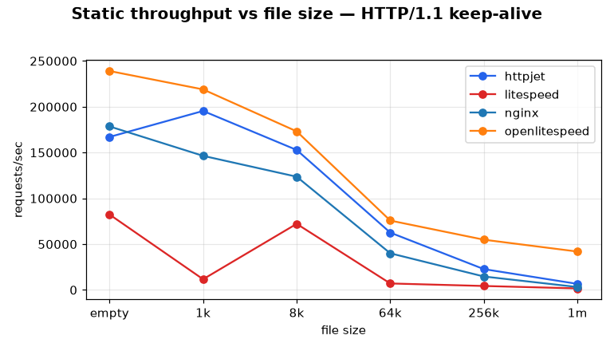
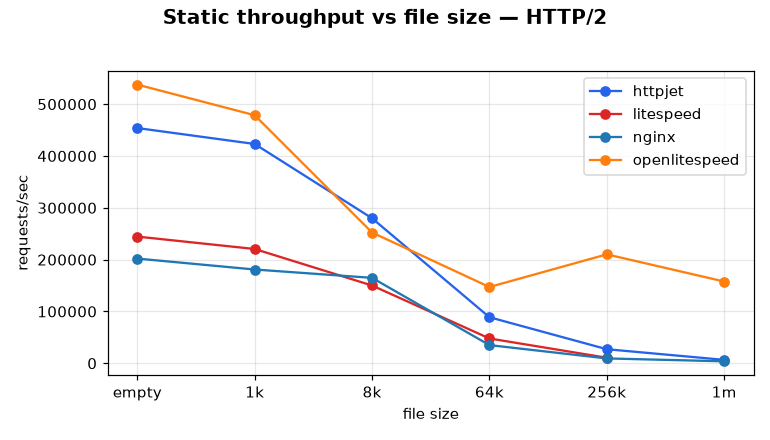
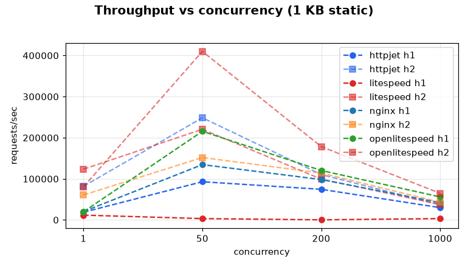
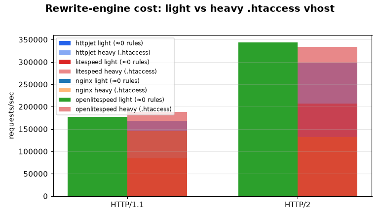
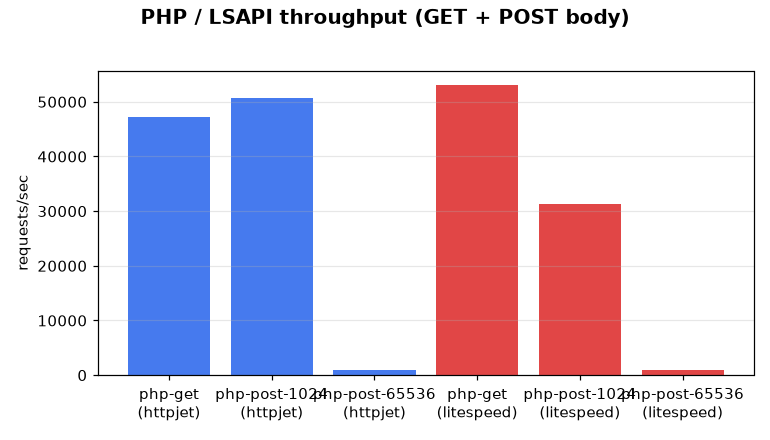
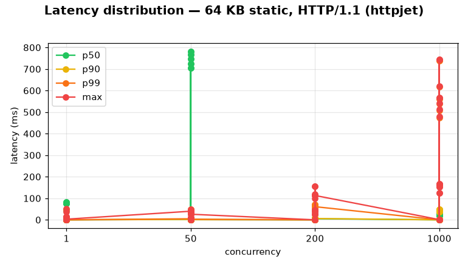
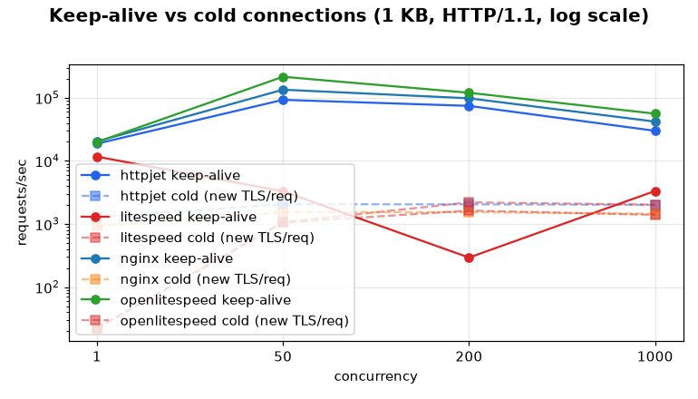
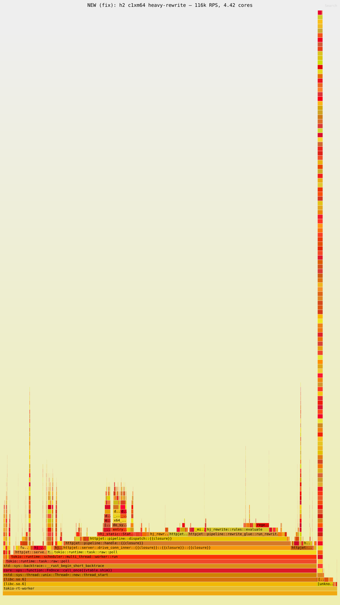
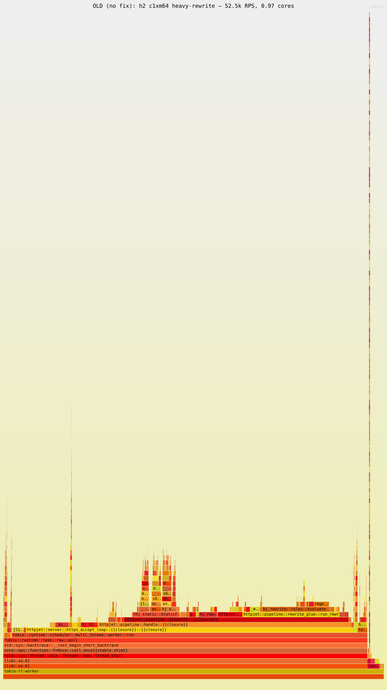
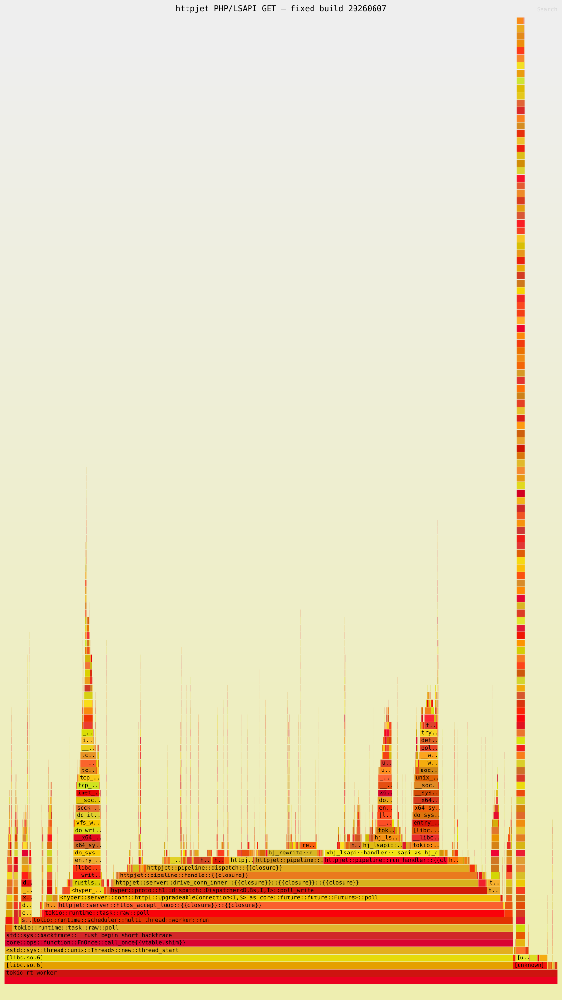
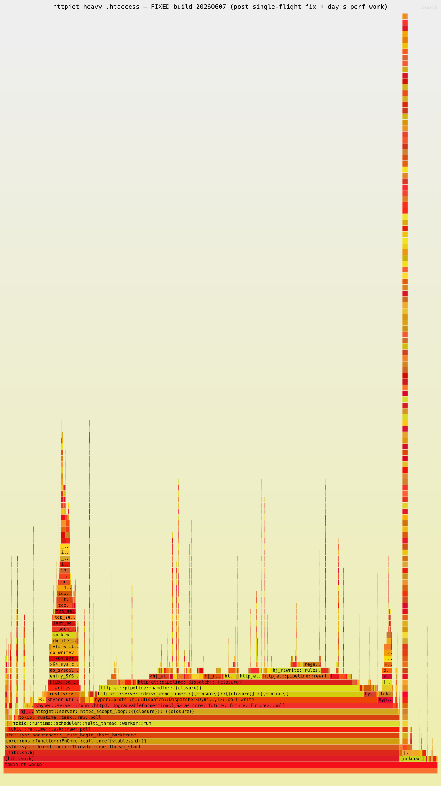
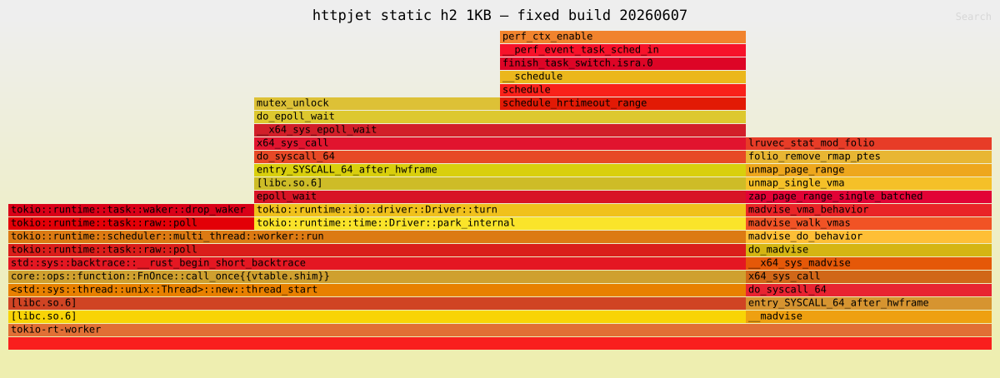
.htaccess +11.8%, light +5.2%, bringing the heavy vhost to ≈ the LiteSpeed baseline..htaccess h2 rewrite (≈161k vs 207k, ~0.8×) — but that is now an achievable rate: under real concurrency it used to collapse (see the single-flight section above), and for cacheable guest traffic the page cache makes it moot anyway..htaccess pipeline is the remaining raw-serving cost — on the current build it is ≈16% cumulative CPU (run_rewrite), with hj_rewrite::evaluate ~11% and the DFA prefilter (find_overlapping_fwd) ~4%; the rest of httpjet’s own CPU is allocation (~20%) and the hyper h1 transport. See the heavy-rewrite flamegraph below./robots.txt) serialize with 10 s tails under
concurrency; the follower now registers on the leader’s notify before its pre-wait lookup.
Live prod heavy vhost @ c=50: 298→72k RPS h1, 2,939→166k RPS h2.hj-h2 polled every stream's handler inline on
one connection task, so a single multiplexed h2 connection was pinned to ~1 CPU core — exactly the
Cloudflare→origin shape (few connections, many streams). When live connections are fewer than worker
threads, handlers now spawn and work-steal across idle cores. On one connection
multiplexing 64 streams of heavy rewrite: 52.5k → 116k RPS (2.2×), 0.97 → 4.42 cores used (see
the h2-confined-OLD-nofix vs -NEW-fix flamegraphs below). Many-connection
traffic runs the identical inline path — unchanged by construction.open/fstat/close beneath the doc-root fd) every request. A 1s
TTL memo now skips it: openat per request 20,000 → 0 within the window, for +11%
heavy-rewrite and +12% static serving throughput. Visible in the current flamegraphs —
open_beneath fell from ~8.5% of CPU to ~0%.Vec per matched rule and condition; these are now fixed-size stack arrays, removing up to
~130 heap allocations per request (byte-identical rewrite output).regex::Regex, whose one internal cache pool takes a cross-thread mutex slow path
(Pool::get_slow) under work-stealing. Switching to regex_automata::meta::Regex
with an explicit per-thread Cache removed that contention: ~+3-4% heavy-rewrite h2,
the per-rule get_slow gone, evaluate ~24%→~19% (153 tests byte-identical).HTTP_* key into its dedup map on every header; keying the map by the borrowed header name
removes ~15 String allocations per PHP request (107 tests pass).find_overlapping_fwd, ~6%) and the rule loop itself; PHP is lsphp-bound (the box
saturates on the render, so httpjet's own CPU is a minority).
regex::RegexSet keeps a small residual Pool::get_slow that is internal to regex_automata's set search even with an explicit cache — eliminating it needs a lower-level dfa/hybrid engine with full cache control..htaccess h1 ≈87k vs 84k. The only axis LiteSpeed still leads is heavy-.htaccess h2: ≈207k vs httpjet ≈161k (~0.8×). This is the path that previously collapsed to ~3k under real concurrency (the single-flight bug); the fix restores it to its achievable rate, and the page cache covers cacheable guest traffic regardless.| target | protocol | vhost | size | concurrency | keepalive | rps | p50 | p90 | p99 | max | failed |
|---|---|---|---|---|---|---|---|---|---|---|---|
| httpjet | h1 | mcp.windowsforum.com | empty | 1 | 1 | 16046.60 | 0 | 0 | 0 | 3 | 0 |
| httpjet | h1 | mcp.windowsforum.com | empty | 1 | 1 | 16266.72 | 0 | 0 | 0 | 3 | 0 |
| httpjet | h1 | mcp.windowsforum.com | empty | 1 | 1 | 29539.26 | 33us | NA | NA | 2.96ms | 0 |
| httpjet | h1 | mcp.windowsforum.com | empty | 1 | 1 | 20563.80 | 47us | NA | NA | 3.30ms | 0 |
| httpjet | h1 | mcp.windowsforum.com | empty | 1 | 1 | 31539.03 | 30us | NA | NA | 1.75ms | 0 |
| httpjet | h1 | mcp.windowsforum.com | empty | 1 | 1 | 30395.83 | 32us | NA | NA | 497us | 0 |
| httpjet | h1 | mcp.windowsforum.com | empty | 1 | 1 | 30386.92 | 32us | NA | NA | 826us | 0 |
| httpjet | h1 | mcp.windowsforum.com | empty | 1 | 1 | 16046.60 | 0 | 0 | 0 | 3 | 0 |
| httpjet | h1 | mcp.windowsforum.com | empty | 1 | 1 | 16266.72 | 0 | 0 | 0 | 3 | 0 |
| httpjet | h1 | mcp.windowsforum.com | empty | 1 | 1 | 29539.26 | 33us | NA | NA | 2.96ms | 0 |
| httpjet | h1 | mcp.windowsforum.com | empty | 1 | 1 | 20563.80 | 47us | NA | NA | 3.30ms | 0 |
| httpjet | h1 | mcp.windowsforum.com | empty | 1 | 1 | 31539.03 | 30us | NA | NA | 1.75ms | 0 |
| httpjet | h1 | mcp.windowsforum.com | empty | 1 | 1 | 30395.83 | 32us | NA | NA | 497us | 0 |
| httpjet | h1 | mcp.windowsforum.com | empty | 1 | 1 | 30386.92 | 32us | NA | NA | 826us | 0 |
| httpjet | h1 | mcp.windowsforum.com | empty | 1 | 1 | 18551.93 | 0 | 0 | 0 | 2 | 0 |
| httpjet | h1 | mcp.windowsforum.com | empty | 1 | 1 | 19808.18 | 0 | 0 | 0 | 2 | 0 |
| httpjet | h1 | mcp.windowsforum.com | empty | 1 | 1 | 20355.12 | 0 | 0 | 0 | 2 | 0 |
| httpjet | h1 | mcp.windowsforum.com | empty | 1 | 1 | 18665.79 | 0 | 0 | 0 | 2 | 0 |
| httpjet | h1 | mcp.windowsforum.com | empty | 1 | 1 | 19194.21 | 0 | 0 | 0 | 4 | 0 |
| httpjet | h1 | mcp.windowsforum.com | empty | 50 | 1 | 74192.23 | 0 | 1 | 3 | 37 | 0 |
| httpjet | h1 | mcp.windowsforum.com | empty | 50 | 1 | 78882.71 | 0 | 1 | 2 | 35 | 0 |
| httpjet | h1 | mcp.windowsforum.com | empty | 50 | 1 | 156786.50 | 247us | NA | NA | 8.32ms | 0 |
| httpjet | h1 | mcp.windowsforum.com | empty | 50 | 1 | 82391.33 | 484us | NA | NA | 16.31ms | 0 |
| httpjet | h1 | mcp.windowsforum.com | empty | 50 | 1 | 164978.39 | 250us | NA | NA | 12.32ms | 0 |
| httpjet | h1 | mcp.windowsforum.com | empty | 50 | 1 | 159058.37 | 256us | NA | NA | 12.06ms | 0 |
| httpjet | h1 | mcp.windowsforum.com | empty | 50 | 1 | 167043.91 | 259us | NA | NA | 5.76ms | 0 |
| httpjet | h1 | mcp.windowsforum.com | empty | 50 | 1 | 74192.23 | 0 | 1 | 3 | 37 | 0 |
| httpjet | h1 | mcp.windowsforum.com | empty | 50 | 1 | 78882.71 | 0 | 1 | 2 | 35 | 0 |
| httpjet | h1 | mcp.windowsforum.com | empty | 50 | 1 | 156786.50 | 247us | NA | NA | 8.32ms | 0 |
| httpjet | h1 | mcp.windowsforum.com | empty | 50 | 1 | 82391.33 | 484us | NA | NA | 16.31ms | 0 |
| httpjet | h1 | mcp.windowsforum.com | empty | 50 | 1 | 164978.39 | 250us | NA | NA | 12.32ms | 0 |
| httpjet | h1 | mcp.windowsforum.com | empty | 50 | 1 | 159058.37 | 256us | NA | NA | 12.06ms | 0 |
| httpjet | h1 | mcp.windowsforum.com | empty | 50 | 1 | 167043.91 | 259us | NA | NA | 5.76ms | 0 |
| httpjet | h1 | mcp.windowsforum.com | empty | 50 | 1 | 96940.09 | 0 | 1 | 1 | 22 | 0 |
| httpjet | h1 | mcp.windowsforum.com | empty | 50 | 1 | 102863.73 | 0 | 0 | 1 | 36 | 0 |
| httpjet | h1 | mcp.windowsforum.com | empty | 50 | 1 | 90063.72 | 0 | 1 | 1 | 32 | 0 |
| httpjet | h1 | mcp.windowsforum.com | empty | 50 | 1 | 87836.41 | 0 | 0 | 1 | 48 | 0 |
| httpjet | h1 | mcp.windowsforum.com | empty | 50 | 1 | 87750.86 | 0 | 1 | 1 | 47 | 0 |
| httpjet | h1 | mcp.windowsforum.com | empty | 200 | 1 | 54112.11 | 2 | 4 | 84 | 131 | 0 |
| httpjet | h1 | mcp.windowsforum.com | empty | 200 | 1 | 52902.50 | 2 | 4 | 78 | 140 | 0 |
| httpjet | h1 | mcp.windowsforum.com | empty | 200 | 1 | 88351.32 | 1.15ms | NA | NA | 42.80ms | 0 |
| httpjet | h1 | mcp.windowsforum.com | empty | 200 | 1 | 58030.22 | 1.70ms | NA | NA | 94.46ms | 0 |
| httpjet | h1 | mcp.windowsforum.com | empty | 200 | 1 | 106919.85 | 1.06ms | NA | NA | 25.68ms | 0 |
| httpjet | h1 | mcp.windowsforum.com | empty | 200 | 1 | 128088.53 | 848us | NA | NA | 27.60ms | 0 |
| httpjet | h1 | mcp.windowsforum.com | empty | 200 | 1 | 92746.31 | 1.09ms | NA | NA | 31.26ms | 0 |
| httpjet | h1 | mcp.windowsforum.com | empty | 200 | 1 | 54112.11 | 2 | 4 | 84 | 131 | 0 |
| httpjet | h1 | mcp.windowsforum.com | empty | 200 | 1 | 52902.50 | 2 | 4 | 78 | 140 | 0 |
| httpjet | h1 | mcp.windowsforum.com | empty | 200 | 1 | 88351.32 | 1.15ms | NA | NA | 42.80ms | 0 |
| httpjet | h1 | mcp.windowsforum.com | empty | 200 | 1 | 58030.22 | 1.70ms | NA | NA | 94.46ms | 0 |
| httpjet | h1 | mcp.windowsforum.com | empty | 200 | 1 | 106919.85 | 1.06ms | NA | NA | 25.68ms | 0 |
| httpjet | h1 | mcp.windowsforum.com | empty | 200 | 1 | 128088.53 | 848us | NA | NA | 27.60ms | 0 |
| httpjet | h1 | mcp.windowsforum.com | empty | 200 | 1 | 92746.31 | 1.09ms | NA | NA | 31.26ms | 0 |
| httpjet | h1 | mcp.windowsforum.com | empty | 200 | 1 | 74559.26 | 2 | 2 | 43 | 91 | 0 |
| httpjet | h1 | mcp.windowsforum.com | empty | 200 | 1 | 75080.15 | 2 | 2 | 60 | 103 | 0 |
| httpjet | h1 | mcp.windowsforum.com | empty | 200 | 1 | 70155.01 | 2 | 2 | 66 | 109 | 0 |
| httpjet | h1 | mcp.windowsforum.com | empty | 200 | 1 | 64951.51 | 1 | 2 | 56 | 104 | 0 |
| httpjet | h1 | mcp.windowsforum.com | empty | 200 | 1 | 74207.65 | 2 | 2 | 42 | 89 | 0 |
| httpjet | h1 | mcp.windowsforum.com | empty | 1000 | 1 | 21753.98 | 11 | 20 | 679 | 683 | 0 |
| httpjet | h1 | mcp.windowsforum.com | empty | 1000 | 1 | 20805.85 | 12 | 21 | 711 | 713 | 0 |
| httpjet | h1 | mcp.windowsforum.com | empty | 1000 | 1 | 47865.33 | 9.06ms | NA | NA | 148.21ms | 0 |
| httpjet | h1 | mcp.windowsforum.com | empty | 1000 | 1 | 41155.65 | 10.43ms | NA | NA | 178.85ms | 0 |
| httpjet | h1 | mcp.windowsforum.com | empty | 1000 | 1 | 49055.08 | 7.51ms | NA | NA | 148.78ms | 0 |
| httpjet | h1 | mcp.windowsforum.com | empty | 1000 | 1 | 49174.97 | 7.51ms | NA | NA | 150.26ms | 0 |
| httpjet | h1 | mcp.windowsforum.com | empty | 1000 | 1 | 54233.46 | 7.62ms | NA | NA | 121.22ms | 0 |
| httpjet | h1 | mcp.windowsforum.com | empty | 1000 | 1 | 21753.98 | 11 | 20 | 679 | 683 | 0 |
| httpjet | h1 | mcp.windowsforum.com | empty | 1000 | 1 | 20805.85 | 12 | 21 | 711 | 713 | 0 |
| httpjet | h1 | mcp.windowsforum.com | empty | 1000 | 1 | 47865.33 | 9.06ms | NA | NA | 148.21ms | 0 |
| httpjet | h1 | mcp.windowsforum.com | empty | 1000 | 1 | 41155.65 | 10.43ms | NA | NA | 178.85ms | 0 |
| httpjet | h1 | mcp.windowsforum.com | empty | 1000 | 1 | 49055.08 | 7.51ms | NA | NA | 148.78ms | 0 |
| httpjet | h1 | mcp.windowsforum.com | empty | 1000 | 1 | 49174.97 | 7.51ms | NA | NA | 150.26ms | 0 |
| httpjet | h1 | mcp.windowsforum.com | empty | 1000 | 1 | 54233.46 | 7.62ms | NA | NA | 121.22ms | 0 |
| httpjet | h1 | mcp.windowsforum.com | empty | 1000 | 1 | 26128.52 | 12 | 29 | 483 | 487 | 0 |
| httpjet | h1 | mcp.windowsforum.com | empty | 1000 | 1 | 28655.43 | 8 | 10 | 518 | 520 | 0 |
| httpjet | h1 | mcp.windowsforum.com | empty | 1000 | 1 | 24792.79 | 9 | 17 | 602 | 604 | 0 |
| httpjet | h1 | mcp.windowsforum.com | empty | 1000 | 1 | 27495.53 | 8 | 12 | 515 | 518 | 0 |
| httpjet | h1 | mcp.windowsforum.com | empty | 1000 | 1 | 30871.87 | 9 | 17 | 452 | 455 | 0 |
| httpjet | h1 | mcp.windowsforum.com | 1k | 1 | 1 | 6516.57 | 0 | 0 | 0 | 14 | 10000 |
| httpjet | h1 | mcp.windowsforum.com | 1k | 1 | 0 | 6693.75 | 0 | 0 | 0 | 1 | 2500 |
| httpjet | h1 | mcp.windowsforum.com | 1k | 1 | 1 | 15711.57 | 0 | 0 | 0 | 16 | 0 |
| httpjet | h1 | mcp.windowsforum.com | 1k | 1 | 0 | 928.51 | 1 | 1 | 3 | 7 | 0 |
| httpjet | h1 | mcp.windowsforum.com | 1k | 1 | 1 | 31682.97 | 30us | NA | NA | 13.12ms | 0 |
| httpjet | h1 | mcp.windowsforum.com | 1k | 1 | 0 | 913.78 | 1 | 1 | 3 | 6 | 0 |
| httpjet | h1 | mcp.windowsforum.com | 1k | 1 | 1 | 27411.72 | 35us | NA | NA | 16.05ms | 0 |
| httpjet | h1 | mcp.windowsforum.com | 1k | 1 | 0 | 856.63 | 1 | 1 | 4 | 7 | 0 |
| httpjet | h1 | mcp.windowsforum.com | 1k | 1 | 1 | 29497.13 | 33us | NA | NA | 12.80ms | 0 |
| httpjet | h1 | mcp.windowsforum.com | 1k | 1 | 0 | 958.82 | 1 | 1 | 2 | 4 | 0 |
| httpjet | h1 | mcp.windowsforum.com | 1k | 1 | 1 | 30649.42 | 31us | NA | NA | 373us | 0 |
| httpjet | h1 | mcp.windowsforum.com | 1k | 1 | 0 | 938.05 | 1 | 1 | 3 | 4 | 0 |
| httpjet | h1 | mcp.windowsforum.com | 1k | 1 | 1 | 30587.68 | 31us | NA | NA | 8.78ms | 0 |
| httpjet | h1 | mcp.windowsforum.com | 1k | 1 | 0 | 984.97 | 1 | 1 | 3 | 6 | 0 |
| httpjet | h1 | mcp.windowsforum.com | 1k | 1 | 1 | 6516.57 | 0 | 0 | 0 | 14 | 10000 |
| httpjet | h1 | mcp.windowsforum.com | 1k | 1 | 0 | 6693.75 | 0 | 0 | 0 | 1 | 2500 |
| httpjet | h1 | mcp.windowsforum.com | 1k | 1 | 1 | 15711.57 | 0 | 0 | 0 | 16 | 0 |
| httpjet | h1 | mcp.windowsforum.com | 1k | 1 | 0 | 928.51 | 1 | 1 | 3 | 7 | 0 |
| httpjet | h1 | mcp.windowsforum.com | 1k | 1 | 1 | 31682.97 | 30us | NA | NA | 13.12ms | 0 |
| httpjet | h1 | mcp.windowsforum.com | 1k | 1 | 0 | 913.78 | 1 | 1 | 3 | 6 | 0 |
| httpjet | h1 | mcp.windowsforum.com | 1k | 1 | 1 | 27411.72 | 35us | NA | NA | 16.05ms | 0 |
| httpjet | h1 | mcp.windowsforum.com | 1k | 1 | 0 | 856.63 | 1 | 1 | 4 | 7 | 0 |
| httpjet | h1 | mcp.windowsforum.com | 1k | 1 | 1 | 29497.13 | 33us | NA | NA | 12.80ms | 0 |
| httpjet | h1 | mcp.windowsforum.com | 1k | 1 | 0 | 958.82 | 1 | 1 | 2 | 4 | 0 |
| httpjet | h1 | mcp.windowsforum.com | 1k | 1 | 1 | 30649.42 | 31us | NA | NA | 373us | 0 |
| httpjet | h1 | mcp.windowsforum.com | 1k | 1 | 0 | 938.05 | 1 | 1 | 3 | 4 | 0 |
| httpjet | h1 | mcp.windowsforum.com | 1k | 1 | 1 | 30587.68 | 31us | NA | NA | 8.78ms | 0 |
| httpjet | h1 | mcp.windowsforum.com | 1k | 1 | 0 | 984.97 | 1 | 1 | 3 | 6 | 0 |
| httpjet | h1 | mcp.windowsforum.com | 1k | 1 | 1 | 17674.90 | 0 | 0 | 0 | 2 | 0 |
| httpjet | h1 | mcp.windowsforum.com | 1k | 1 | 0 | 1153.12 | 1 | 1 | 1 | 5 | 0 |
| httpjet | h1 | mcp.windowsforum.com | 1k | 1 | 1 | 17955.72 | 0 | 0 | 0 | 36 | 0 |
| httpjet | h1 | mcp.windowsforum.com | 1k | 1 | 0 | 1142.69 | 1 | 1 | 1 | 2 | 0 |
| httpjet | h1 | mcp.windowsforum.com | 1k | 1 | 1 | 19856.65 | 0 | 0 | 0 | 4 | 0 |
| httpjet | h1 | mcp.windowsforum.com | 1k | 1 | 0 | 1109.23 | 1 | 1 | 1 | 3 | 0 |
| httpjet | h1 | mcp.windowsforum.com | 1k | 1 | 1 | 18264.92 | 0 | 0 | 0 | 6 | 0 |
| httpjet | h1 | mcp.windowsforum.com | 1k | 1 | 0 | 1152.41 | 1 | 1 | 1 | 3 | 5000 |
| httpjet | h1 | mcp.windowsforum.com | 1k | 1 | 1 | 18721.68 | 0 | 0 | 0 | 2 | 0 |
| httpjet | h1 | mcp.windowsforum.com | 1k | 1 | 0 | 1286.07 | 1 | 1 | 1 | 2 | 0 |
| httpjet | h1 | mcp.windowsforum.com | 1k | 50 | 1 | 77472.54 | 0 | 1 | 3 | 36 | 0 |
| httpjet | h1 | mcp.windowsforum.com | 1k | 50 | 0 | 1377.46 | 36 | 40 | 48 | 58 | 0 |
| httpjet | h1 | mcp.windowsforum.com | 1k | 50 | 1 | 6617.68 | 0 | 0 | 0 | 10 | 10000 |
| httpjet | h1 | mcp.windowsforum.com | 1k | 50 | 0 | 6555.35 | 0 | 0 | 0 | 0 | 2500 |
| httpjet | h1 | mcp.windowsforum.com | 1k | 50 | 1 | 72483.20 | 0 | 1 | 3 | 34 | 0 |
| httpjet | h1 | mcp.windowsforum.com | 1k | 50 | 0 | 1398.55 | 35 | 38 | 47 | 55 | 0 |
| httpjet | h1 | mcp.windowsforum.com | 1k | 50 | 1 | 145519.10 | 282us | NA | NA | 9.80ms | 0 |
| httpjet | h1 | mcp.windowsforum.com | 1k | 50 | 0 | 1352.95 | 36 | 40 | 49 | 55 | 0 |
| httpjet | h1 | mcp.windowsforum.com | 1k | 50 | 1 | 128241.30 | 295us | NA | NA | 11.31ms | 0 |
| httpjet | h1 | mcp.windowsforum.com | 1k | 50 | 0 | 1362.87 | 36 | 40 | 49 | 57 | 0 |
| httpjet | h1 | mcp.windowsforum.com | 1k | 50 | 1 | 176556.79 | 242us | NA | NA | 7.47ms | 0 |
| httpjet | h1 | mcp.windowsforum.com | 1k | 50 | 0 | 1354.81 | 36 | 40 | 50 | 58 | 0 |
| httpjet | h1 | mcp.windowsforum.com | 1k | 50 | 1 | 171497.17 | 244us | NA | NA | 7.35ms | 0 |
| httpjet | h1 | mcp.windowsforum.com | 1k | 50 | 0 | 1395.48 | 36 | 38 | 48 | 56 | 0 |
| httpjet | h1 | mcp.windowsforum.com | 1k | 50 | 1 | 168010.75 | 251us | NA | NA | 9.65ms | 0 |
| httpjet | h1 | mcp.windowsforum.com | 1k | 50 | 0 | 1452.40 | 34 | 37 | 46 | 52 | 0 |
| httpjet | h1 | mcp.windowsforum.com | 1k | 50 | 1 | 77472.54 | 0 | 1 | 3 | 36 | 0 |
| httpjet | h1 | mcp.windowsforum.com | 1k | 50 | 0 | 1377.46 | 36 | 40 | 48 | 58 | 0 |
| httpjet | h1 | mcp.windowsforum.com | 1k | 50 | 1 | 146921.62 | 267us | NA | NA | 5.06ms | 0 |
| httpjet | h1 | mcp.windowsforum.com | 1k | 50 | 0 | 1585.21 | 31 | 33 | 39 | 52 | 0 |
| httpjet | h1 | mcp.windowsforum.com | 1k | 50 | 1 | 195446.11 | 0.173ms | 0.319ms | 1.203ms | 6.695ms | 0 |
| httpjet | h1 | mcp.windowsforum.com | 1k | 50 | 0 | 1228.14 | 39 | 46 | 79 | 111 | 0 |
| httpjet | h1 | mcp.windowsforum.com | 1k | 50 | 1 | 172387.04 | 0.191ms | 0.319ms | 0.607ms | 7.515ms | 0 |
| httpjet | h1 | mcp.windowsforum.com | 1k | 50 | 0 | 1302.35 | 38 | 43 | 53 | 60 | 0 |
| httpjet | h1 | mcp.windowsforum.com | 1k | 50 | 1 | 6617.68 | 0 | 0 | 0 | 10 | 10000 |
| httpjet | h1 | mcp.windowsforum.com | 1k | 50 | 0 | 6555.35 | 0 | 0 | 0 | 0 | 2500 |
| httpjet | h1 | mcp.windowsforum.com | 1k | 50 | 1 | 72483.20 | 0 | 1 | 3 | 34 | 0 |
| httpjet | h1 | mcp.windowsforum.com | 1k | 50 | 0 | 1398.55 | 35 | 38 | 47 | 55 | 0 |
| httpjet | h1 | mcp.windowsforum.com | 1k | 50 | 1 | 145519.10 | 282us | NA | NA | 9.80ms | 0 |
| httpjet | h1 | mcp.windowsforum.com | 1k | 50 | 0 | 1352.95 | 36 | 40 | 49 | 55 | 0 |
| httpjet | h1 | mcp.windowsforum.com | 1k | 50 | 1 | 128241.30 | 295us | NA | NA | 11.31ms | 0 |
| httpjet | h1 | mcp.windowsforum.com | 1k | 50 | 0 | 1362.87 | 36 | 40 | 49 | 57 | 0 |
| httpjet | h1 | mcp.windowsforum.com | 1k | 50 | 1 | 176556.79 | 242us | NA | NA | 7.47ms | 0 |
| httpjet | h1 | mcp.windowsforum.com | 1k | 50 | 0 | 1354.81 | 36 | 40 | 50 | 58 | 0 |
| httpjet | h1 | mcp.windowsforum.com | 1k | 50 | 1 | 171497.17 | 244us | NA | NA | 7.35ms | 0 |
| httpjet | h1 | mcp.windowsforum.com | 1k | 50 | 0 | 1395.48 | 36 | 38 | 48 | 56 | 0 |
| httpjet | h1 | mcp.windowsforum.com | 1k | 50 | 1 | 168010.75 | 251us | NA | NA | 9.65ms | 0 |
| httpjet | h1 | mcp.windowsforum.com | 1k | 50 | 0 | 1452.40 | 34 | 37 | 46 | 52 | 0 |
| httpjet | h1 | mcp.windowsforum.com | 1k | 50 | 1 | 94663.80 | 0 | 1 | 1 | 24 | 0 |
| httpjet | h1 | mcp.windowsforum.com | 1k | 50 | 0 | 2108.98 | 22 | 27 | 35 | 43 | 0 |
| httpjet | h1 | mcp.windowsforum.com | 1k | 50 | 1 | 106399.96 | 0 | 0 | 1 | 26 | 0 |
| httpjet | h1 | mcp.windowsforum.com | 1k | 50 | 0 | 1840.26 | 26 | 29 | 33 | 44 | 0 |
| httpjet | h1 | mcp.windowsforum.com | 1k | 50 | 1 | 96246.85 | 0 | 1 | 1 | 27 | 0 |
| httpjet | h1 | mcp.windowsforum.com | 1k | 50 | 0 | 1737.61 | 28 | 31 | 41 | 54 | 0 |
| httpjet | h1 | mcp.windowsforum.com | 1k | 50 | 1 | 36681.57 | 0 | 0 | 43 | 48 | 0 |
| httpjet | h1 | mcp.windowsforum.com | 1k | 50 | 0 | 1852.43 | 26 | 29 | 33 | 40 | 5000 |
| httpjet | h1 | mcp.windowsforum.com | 1k | 50 | 1 | 92923.42 | 0 | 1 | 1 | 24 | 0 |
| httpjet | h1 | mcp.windowsforum.com | 1k | 50 | 0 | 2062.15 | 24 | 28 | 35 | 48 | 0 |
| httpjet | h1 | mcp.windowsforum.com | 1k | 200 | 1 | 6603.35 | 0 | 0 | 0 | 1 | 10000 |
| httpjet | h1 | mcp.windowsforum.com | 1k | 200 | 0 | 6612.05 | 0 | 0 | 0 | 0 | 2500 |
| httpjet | h1 | mcp.windowsforum.com | 1k | 200 | 1 | 54437.03 | 2 | 4 | 68 | 136 | 0 |
| httpjet | h1 | mcp.windowsforum.com | 1k | 200 | 0 | 1378.61 | 144 | 150 | 169 | 219 | 0 |
| httpjet | h1 | mcp.windowsforum.com | 1k | 200 | 1 | 86636.34 | 1.09ms | NA | NA | 38.07ms | 0 |
| httpjet | h1 | mcp.windowsforum.com | 1k | 200 | 0 | 1305.07 | 152 | 158 | 183 | 232 | 0 |
| httpjet | h1 | mcp.windowsforum.com | 1k | 200 | 1 | 113409.54 | 1.01ms | NA | NA | 23.58ms | 0 |
| httpjet | h1 | mcp.windowsforum.com | 1k | 200 | 0 | 1353.57 | 146 | 153 | 159 | 224 | 0 |
| httpjet | h1 | mcp.windowsforum.com | 1k | 200 | 1 | 104457.73 | 1.03ms | NA | NA | 36.83ms | 0 |
| httpjet | h1 | mcp.windowsforum.com | 1k | 200 | 0 | 1331.35 | 149 | 154 | 179 | 216 | 0 |
| httpjet | h1 | mcp.windowsforum.com | 1k | 200 | 1 | 104069.10 | 1.03ms | NA | NA | 37.24ms | 0 |
| httpjet | h1 | mcp.windowsforum.com | 1k | 200 | 0 | 1389.32 | 142 | 148 | 155 | 211 | 0 |
| httpjet | h1 | mcp.windowsforum.com | 1k | 200 | 1 | 95259.87 | 1.01ms | NA | NA | 42.60ms | 0 |
| httpjet | h1 | mcp.windowsforum.com | 1k | 200 | 0 | 1465.14 | 136 | 142 | 144 | 203 | 0 |
| httpjet | h1 | mcp.windowsforum.com | 1k | 200 | 1 | 6603.35 | 0 | 0 | 0 | 1 | 10000 |
| httpjet | h1 | mcp.windowsforum.com | 1k | 200 | 0 | 6612.05 | 0 | 0 | 0 | 0 | 2500 |
| httpjet | h1 | mcp.windowsforum.com | 1k | 200 | 1 | 54437.03 | 2 | 4 | 68 | 136 | 0 |
| httpjet | h1 | mcp.windowsforum.com | 1k | 200 | 0 | 1378.61 | 144 | 150 | 169 | 219 | 0 |
| httpjet | h1 | mcp.windowsforum.com | 1k | 200 | 1 | 86636.34 | 1.09ms | NA | NA | 38.07ms | 0 |
| httpjet | h1 | mcp.windowsforum.com | 1k | 200 | 0 | 1305.07 | 152 | 158 | 183 | 232 | 0 |
| httpjet | h1 | mcp.windowsforum.com | 1k | 200 | 1 | 113409.54 | 1.01ms | NA | NA | 23.58ms | 0 |
| httpjet | h1 | mcp.windowsforum.com | 1k | 200 | 0 | 1353.57 | 146 | 153 | 159 | 224 | 0 |
| httpjet | h1 | mcp.windowsforum.com | 1k | 200 | 1 | 104457.73 | 1.03ms | NA | NA | 36.83ms | 0 |
| httpjet | h1 | mcp.windowsforum.com | 1k | 200 | 0 | 1331.35 | 149 | 154 | 179 | 216 | 0 |
| httpjet | h1 | mcp.windowsforum.com | 1k | 200 | 1 | 104069.10 | 1.03ms | NA | NA | 37.24ms | 0 |
| httpjet | h1 | mcp.windowsforum.com | 1k | 200 | 0 | 1389.32 | 142 | 148 | 155 | 211 | 0 |
| httpjet | h1 | mcp.windowsforum.com | 1k | 200 | 1 | 95259.87 | 1.01ms | NA | NA | 42.60ms | 0 |
| httpjet | h1 | mcp.windowsforum.com | 1k | 200 | 0 | 1465.14 | 136 | 142 | 144 | 203 | 0 |
| httpjet | h1 | mcp.windowsforum.com | 1k | 200 | 1 | 71216.96 | 2 | 2 | 54 | 97 | 0 |
| httpjet | h1 | mcp.windowsforum.com | 1k | 200 | 0 | 2054.98 | 92 | 101 | 104 | 148 | 0 |
| httpjet | h1 | mcp.windowsforum.com | 1k | 200 | 1 | 73189.30 | 2 | 2 | 68 | 106 | 0 |
| httpjet | h1 | mcp.windowsforum.com | 1k | 200 | 0 | 1719.91 | 111 | 131 | 191 | 192 | 0 |
| httpjet | h1 | mcp.windowsforum.com | 1k | 200 | 1 | 65463.23 | 2 | 3 | 73 | 114 | 0 |
| httpjet | h1 | mcp.windowsforum.com | 1k | 200 | 0 | 1543.69 | 120 | 147 | 198 | 255 | 0 |
| httpjet | h1 | mcp.windowsforum.com | 1k | 200 | 1 | 59523.99 | 0 | 1 | 68 | 142 | 0 |
| httpjet | h1 | mcp.windowsforum.com | 1k | 200 | 0 | 1893.50 | 105 | 108 | 115 | 115 | 5000 |
| httpjet | h1 | mcp.windowsforum.com | 1k | 200 | 1 | 74489.56 | 2 | 2 | 53 | 94 | 0 |
| httpjet | h1 | mcp.windowsforum.com | 1k | 200 | 0 | 2049.49 | 95 | 110 | 113 | 146 | 0 |
| httpjet | h1 | mcp.windowsforum.com | 1k | 1000 | 1 | 6540.18 | 0 | 0 | 0 | 13 | 10001 |
| httpjet | h1 | mcp.windowsforum.com | 1k | 1000 | 0 | 6618.59 | 0 | 0 | 0 | 1 | 2500 |
| httpjet | h1 | mcp.windowsforum.com | 1k | 1000 | 1 | 20962.82 | 12 | 21 | 695 | 695 | 0 |
| httpjet | h1 | mcp.windowsforum.com | 1k | 1000 | 0 | 1295.50 | 747 | 761 | 765 | 1123 | 0 |
| httpjet | h1 | mcp.windowsforum.com | 1k | 1000 | 1 | 45610.66 | 10.05ms | NA | NA | 150.49ms | 0 |
| httpjet | h1 | mcp.windowsforum.com | 1k | 1000 | 0 | 1246.05 | 774 | 785 | 790 | 1157 | 0 |
| httpjet | h1 | mcp.windowsforum.com | 1k | 1000 | 1 | 48185.11 | 8.66ms | NA | NA | 160.36ms | 0 |
| httpjet | h1 | mcp.windowsforum.com | 1k | 1000 | 0 | 1248.04 | 776 | 792 | 803 | 1156 | 0 |
| httpjet | h1 | mcp.windowsforum.com | 1k | 1000 | 1 | 49554.75 | 8.57ms | NA | NA | 139.64ms | 0 |
| httpjet | h1 | mcp.windowsforum.com | 1k | 1000 | 0 | 1283.02 | 769 | 792 | 797 | 1156 | 0 |
| httpjet | h1 | mcp.windowsforum.com | 1k | 1000 | 1 | 50159.63 | 7.95ms | NA | NA | 160.82ms | 0 |
| httpjet | h1 | mcp.windowsforum.com | 1k | 1000 | 0 | 1286.14 | 754 | 770 | 777 | 1122 | 0 |
| httpjet | h1 | mcp.windowsforum.com | 1k | 1000 | 1 | 46591.92 | 8.07ms | NA | NA | 171.17ms | 0 |
| httpjet | h1 | mcp.windowsforum.com | 1k | 1000 | 0 | 1359.82 | 709 | 721 | 730 | 1056 | 0 |
| httpjet | h1 | mcp.windowsforum.com | 1k | 1000 | 1 | 6540.18 | 0 | 0 | 0 | 13 | 10001 |
| httpjet | h1 | mcp.windowsforum.com | 1k | 1000 | 0 | 6618.59 | 0 | 0 | 0 | 1 | 2500 |
| httpjet | h1 | mcp.windowsforum.com | 1k | 1000 | 1 | 20962.82 | 12 | 21 | 695 | 695 | 0 |
| httpjet | h1 | mcp.windowsforum.com | 1k | 1000 | 0 | 1295.50 | 747 | 761 | 765 | 1123 | 0 |
| httpjet | h1 | mcp.windowsforum.com | 1k | 1000 | 1 | 45610.66 | 10.05ms | NA | NA | 150.49ms | 0 |
| httpjet | h1 | mcp.windowsforum.com | 1k | 1000 | 0 | 1246.05 | 774 | 785 | 790 | 1157 | 0 |
| httpjet | h1 | mcp.windowsforum.com | 1k | 1000 | 1 | 48185.11 | 8.66ms | NA | NA | 160.36ms | 0 |
| httpjet | h1 | mcp.windowsforum.com | 1k | 1000 | 0 | 1248.04 | 776 | 792 | 803 | 1156 | 0 |
| httpjet | h1 | mcp.windowsforum.com | 1k | 1000 | 1 | 49554.75 | 8.57ms | NA | NA | 139.64ms | 0 |
| httpjet | h1 | mcp.windowsforum.com | 1k | 1000 | 0 | 1283.02 | 769 | 792 | 797 | 1156 | 0 |
| httpjet | h1 | mcp.windowsforum.com | 1k | 1000 | 1 | 50159.63 | 7.95ms | NA | NA | 160.82ms | 0 |
| httpjet | h1 | mcp.windowsforum.com | 1k | 1000 | 0 | 1286.14 | 754 | 770 | 777 | 1122 | 0 |
| httpjet | h1 | mcp.windowsforum.com | 1k | 1000 | 1 | 46591.92 | 8.07ms | NA | NA | 171.17ms | 0 |
| httpjet | h1 | mcp.windowsforum.com | 1k | 1000 | 0 | 1359.82 | 709 | 721 | 730 | 1056 | 0 |
| httpjet | h1 | mcp.windowsforum.com | 1k | 1000 | 1 | 30006.38 | 9 | 13 | 463 | 465 | 0 |
| httpjet | h1 | mcp.windowsforum.com | 1k | 1000 | 0 | 1954.85 | 507 | 527 | 529 | 537 | 0 |
| httpjet | h1 | mcp.windowsforum.com | 1k | 1000 | 1 | 26655.29 | 9 | 14 | 551 | 551 | 0 |
| httpjet | h1 | mcp.windowsforum.com | 1k | 1000 | 0 | 1665.54 | 579 | 629 | 630 | 631 | 0 |
| httpjet | h1 | mcp.windowsforum.com | 1k | 1000 | 1 | 26030.65 | 9 | 17 | 571 | 573 | 0 |
| httpjet | h1 | mcp.windowsforum.com | 1k | 1000 | 0 | 1578.74 | 627 | 649 | 653 | 654 | 0 |
| httpjet | h1 | mcp.windowsforum.com | 1k | 1000 | 1 | 25700.40 | 7 | 23 | 553 | 580 | 0 |
| httpjet | h1 | mcp.windowsforum.com | 1k | 1000 | 0 | 1742.01 | 567 | 591 | 592 | 592 | 5000 |
| httpjet | h1 | mcp.windowsforum.com | 1k | 1000 | 1 | 29988.65 | 9 | 16 | 468 | 469 | 0 |
| httpjet | h1 | mcp.windowsforum.com | 1k | 1000 | 0 | 2012.98 | 486 | 510 | 510 | 510 | 0 |
| httpjet | h1 | mcp.windowsforum.com | 8k | 1 | 1 | 6513.91 | 0 | 0 | 0 | 0 | 10000 |
| httpjet | h1 | mcp.windowsforum.com | 8k | 1 | 1 | 14662.44 | 0 | 0 | 0 | 4 | 0 |
| httpjet | h1 | mcp.windowsforum.com | 8k | 1 | 1 | 29864.52 | 32us | NA | NA | 1.28ms | 0 |
| httpjet | h1 | mcp.windowsforum.com | 8k | 1 | 1 | 25748.97 | 37us | NA | NA | 4.85ms | 0 |
| httpjet | h1 | mcp.windowsforum.com | 8k | 1 | 1 | 27545.21 | 35us | NA | NA | 3.73ms | 0 |
| httpjet | h1 | mcp.windowsforum.com | 8k | 1 | 1 | 25292.06 | 38us | NA | NA | 3.32ms | 0 |
| httpjet | h1 | mcp.windowsforum.com | 8k | 1 | 1 | 26040.68 | 37us | NA | NA | 5.42ms | 0 |
| httpjet | h1 | mcp.windowsforum.com | 8k | 1 | 1 | 6513.91 | 0 | 0 | 0 | 0 | 10000 |
| httpjet | h1 | mcp.windowsforum.com | 8k | 1 | 1 | 14662.44 | 0 | 0 | 0 | 4 | 0 |
| httpjet | h1 | mcp.windowsforum.com | 8k | 1 | 1 | 29864.52 | 32us | NA | NA | 1.28ms | 0 |
| httpjet | h1 | mcp.windowsforum.com | 8k | 1 | 1 | 25748.97 | 37us | NA | NA | 4.85ms | 0 |
| httpjet | h1 | mcp.windowsforum.com | 8k | 1 | 1 | 27545.21 | 35us | NA | NA | 3.73ms | 0 |
| httpjet | h1 | mcp.windowsforum.com | 8k | 1 | 1 | 25292.06 | 38us | NA | NA | 3.32ms | 0 |
| httpjet | h1 | mcp.windowsforum.com | 8k | 1 | 1 | 26040.68 | 37us | NA | NA | 5.42ms | 0 |
| httpjet | h1 | mcp.windowsforum.com | 8k | 1 | 1 | 15500.37 | 0 | 0 | 0 | 2 | 0 |
| httpjet | h1 | mcp.windowsforum.com | 8k | 1 | 1 | 15745.99 | 0 | 0 | 0 | 8 | 0 |
| httpjet | h1 | mcp.windowsforum.com | 8k | 1 | 1 | 17520.04 | 0 | 0 | 0 | 3 | 0 |
| httpjet | h1 | mcp.windowsforum.com | 8k | 1 | 1 | 17217.17 | 0 | 0 | 0 | 2 | 0 |
| httpjet | h1 | mcp.windowsforum.com | 8k | 1 | 1 | 15846.01 | 0 | 0 | 0 | 2 | 0 |
| httpjet | h1 | mcp.windowsforum.com | 8k | 50 | 1 | 6562.55 | 0 | 0 | 0 | 1 | 10000 |
| httpjet | h1 | mcp.windowsforum.com | 8k | 50 | 1 | 66116.80 | 1 | 1 | 3 | 36 | 0 |
| httpjet | h1 | mcp.windowsforum.com | 8k | 50 | 1 | 140462.26 | 298us | NA | NA | 8.23ms | 0 |
| httpjet | h1 | mcp.windowsforum.com | 8k | 50 | 1 | 149396.44 | 281us | NA | NA | 6.22ms | 0 |
| httpjet | h1 | mcp.windowsforum.com | 8k | 50 | 1 | 149943.02 | 285us | NA | NA | 10.24ms | 0 |
| httpjet | h1 | mcp.windowsforum.com | 8k | 50 | 1 | 152837.43 | 283us | NA | NA | 11.23ms | 0 |
| httpjet | h1 | mcp.windowsforum.com | 8k | 50 | 1 | 143524.53 | 270us | NA | NA | 7.84ms | 0 |
| httpjet | h1 | mcp.windowsforum.com | 8k | 50 | 1 | 6562.55 | 0 | 0 | 0 | 1 | 10000 |
| httpjet | h1 | mcp.windowsforum.com | 8k | 50 | 1 | 66116.80 | 1 | 1 | 3 | 36 | 0 |
| httpjet | h1 | mcp.windowsforum.com | 8k | 50 | 1 | 140462.26 | 298us | NA | NA | 8.23ms | 0 |
| httpjet | h1 | mcp.windowsforum.com | 8k | 50 | 1 | 149396.44 | 281us | NA | NA | 6.22ms | 0 |
| httpjet | h1 | mcp.windowsforum.com | 8k | 50 | 1 | 149943.02 | 285us | NA | NA | 10.24ms | 0 |
| httpjet | h1 | mcp.windowsforum.com | 8k | 50 | 1 | 152837.43 | 283us | NA | NA | 11.23ms | 0 |
| httpjet | h1 | mcp.windowsforum.com | 8k | 50 | 1 | 143524.53 | 270us | NA | NA | 7.84ms | 0 |
| httpjet | h1 | mcp.windowsforum.com | 8k | 50 | 1 | 84350.82 | 0 | 1 | 1 | 22 | 0 |
| httpjet | h1 | mcp.windowsforum.com | 8k | 50 | 1 | 65641.13 | 0 | 1 | 4 | 31 | 0 |
| httpjet | h1 | mcp.windowsforum.com | 8k | 50 | 1 | 84034.67 | 0 | 1 | 1 | 26 | 0 |
| httpjet | h1 | mcp.windowsforum.com | 8k | 50 | 1 | 4374.99 | 0 | 44 | 48 | 65 | 0 |
| httpjet | h1 | mcp.windowsforum.com | 8k | 50 | 1 | 85121.96 | 0 | 1 | 1 | 26 | 0 |
| httpjet | h1 | mcp.windowsforum.com | 8k | 200 | 1 | 6569.15 | 0 | 0 | 0 | 1 | 10000 |
| httpjet | h1 | mcp.windowsforum.com | 8k | 200 | 1 | 49676.48 | 2 | 4 | 72 | 142 | 0 |
| httpjet | h1 | mcp.windowsforum.com | 8k | 200 | 1 | 84816.56 | 1.37ms | NA | NA | 31.25ms | 0 |
| httpjet | h1 | mcp.windowsforum.com | 8k | 200 | 1 | 89829.10 | 1.17ms | NA | NA | 36.77ms | 0 |
| httpjet | h1 | mcp.windowsforum.com | 8k | 200 | 1 | 102700.51 | 1.07ms | NA | NA | 38.65ms | 0 |
| httpjet | h1 | mcp.windowsforum.com | 8k | 200 | 1 | 88495.18 | 1.35ms | NA | NA | 36.46ms | 0 |
| httpjet | h1 | mcp.windowsforum.com | 8k | 200 | 1 | 93983.64 | 1.08ms | NA | NA | 38.29ms | 0 |
| httpjet | h1 | mcp.windowsforum.com | 8k | 200 | 1 | 6569.15 | 0 | 0 | 0 | 1 | 10000 |
| httpjet | h1 | mcp.windowsforum.com | 8k | 200 | 1 | 49676.48 | 2 | 4 | 72 | 142 | 0 |
| httpjet | h1 | mcp.windowsforum.com | 8k | 200 | 1 | 84816.56 | 1.37ms | NA | NA | 31.25ms | 0 |
| httpjet | h1 | mcp.windowsforum.com | 8k | 200 | 1 | 89829.10 | 1.17ms | NA | NA | 36.77ms | 0 |
| httpjet | h1 | mcp.windowsforum.com | 8k | 200 | 1 | 102700.51 | 1.07ms | NA | NA | 38.65ms | 0 |
| httpjet | h1 | mcp.windowsforum.com | 8k | 200 | 1 | 88495.18 | 1.35ms | NA | NA | 36.46ms | 0 |
| httpjet | h1 | mcp.windowsforum.com | 8k | 200 | 1 | 93983.64 | 1.08ms | NA | NA | 38.29ms | 0 |
| httpjet | h1 | mcp.windowsforum.com | 8k | 200 | 1 | 67370.69 | 2 | 2 | 54 | 92 | 0 |
| httpjet | h1 | mcp.windowsforum.com | 8k | 200 | 1 | 63200.94 | 2 | 2 | 71 | 114 | 0 |
| httpjet | h1 | mcp.windowsforum.com | 8k | 200 | 1 | 63812.95 | 2 | 2 | 68 | 104 | 0 |
| httpjet | h1 | mcp.windowsforum.com | 8k | 200 | 1 | 16505.86 | 0 | 45 | 73 | 146 | 0 |
| httpjet | h1 | mcp.windowsforum.com | 8k | 200 | 1 | 68193.52 | 2 | 2 | 53 | 90 | 0 |
| httpjet | h1 | mcp.windowsforum.com | 8k | 1000 | 1 | 6598.06 | 0 | 0 | 0 | 1 | 10000 |
| httpjet | h1 | mcp.windowsforum.com | 8k | 1000 | 1 | 20358.04 | 14 | 22 | 694 | 695 | 0 |
| httpjet | h1 | mcp.windowsforum.com | 8k | 1000 | 1 | 44227.63 | 9.85ms | NA | NA | 153.46ms | 0 |
| httpjet | h1 | mcp.windowsforum.com | 8k | 1000 | 1 | 51640.62 | 8.56ms | NA | NA | 125.67ms | 0 |
| httpjet | h1 | mcp.windowsforum.com | 8k | 1000 | 1 | 48274.55 | 8.72ms | NA | NA | 136.27ms | 0 |
| httpjet | h1 | mcp.windowsforum.com | 8k | 1000 | 1 | 48367.01 | 8.59ms | NA | NA | 132.80ms | 0 |
| httpjet | h1 | mcp.windowsforum.com | 8k | 1000 | 1 | 49826.60 | 8.75ms | NA | NA | 147.80ms | 0 |
| httpjet | h1 | mcp.windowsforum.com | 8k | 1000 | 1 | 6598.06 | 0 | 0 | 0 | 1 | 10000 |
| httpjet | h1 | mcp.windowsforum.com | 8k | 1000 | 1 | 20358.04 | 14 | 22 | 694 | 695 | 0 |
| httpjet | h1 | mcp.windowsforum.com | 8k | 1000 | 1 | 44227.63 | 9.85ms | NA | NA | 153.46ms | 0 |
| httpjet | h1 | mcp.windowsforum.com | 8k | 1000 | 1 | 51640.62 | 8.56ms | NA | NA | 125.67ms | 0 |
| httpjet | h1 | mcp.windowsforum.com | 8k | 1000 | 1 | 48274.55 | 8.72ms | NA | NA | 136.27ms | 0 |
| httpjet | h1 | mcp.windowsforum.com | 8k | 1000 | 1 | 48367.01 | 8.59ms | NA | NA | 132.80ms | 0 |
| httpjet | h1 | mcp.windowsforum.com | 8k | 1000 | 1 | 49826.60 | 8.75ms | NA | NA | 147.80ms | 0 |
| httpjet | h1 | mcp.windowsforum.com | 8k | 1000 | 1 | 29446.67 | 10 | 15 | 454 | 456 | 0 |
| httpjet | h1 | mcp.windowsforum.com | 8k | 1000 | 1 | 26123.85 | 9 | 11 | 564 | 564 | 0 |
| httpjet | h1 | mcp.windowsforum.com | 8k | 1000 | 1 | 24673.26 | 11 | 16 | 579 | 581 | 0 |
| httpjet | h1 | mcp.windowsforum.com | 8k | 1000 | 1 | 24789.35 | 2 | 46 | 522 | 548 | 0 |
| httpjet | h1 | mcp.windowsforum.com | 8k | 1000 | 1 | 29502.62 | 10 | 12 | 467 | 468 | 0 |
| httpjet | h1 | mcp.windowsforum.com | 64k | 1 | 1 | 6616.76 | 0 | 0 | 0 | 1 | 10000 |
| httpjet | h1 | mcp.windowsforum.com | 64k | 1 | 1 | 9504.76 | 0 | 0 | 0 | 13 | 0 |
| httpjet | h1 | mcp.windowsforum.com | 64k | 1 | 1 | 11737.26 | 83us | NA | NA | 13.77ms | 0 |
| httpjet | h1 | mcp.windowsforum.com | 64k | 1 | 1 | 12581.53 | 78us | NA | NA | 8.08ms | 0 |
| httpjet | h1 | mcp.windowsforum.com | 64k | 1 | 1 | 12545.90 | 78us | NA | NA | 11.90ms | 0 |
| httpjet | h1 | mcp.windowsforum.com | 64k | 1 | 1 | 12585.49 | 78us | NA | NA | 11.58ms | 0 |
| httpjet | h1 | mcp.windowsforum.com | 64k | 1 | 1 | 12756.40 | 77us | NA | NA | 9.72ms | 0 |
| httpjet | h1 | mcp.windowsforum.com | 64k | 1 | 1 | 6616.76 | 0 | 0 | 0 | 1 | 10000 |
| httpjet | h1 | mcp.windowsforum.com | 64k | 1 | 1 | 9504.76 | 0 | 0 | 0 | 13 | 0 |
| httpjet | h1 | mcp.windowsforum.com | 64k | 1 | 1 | 11737.26 | 83us | NA | NA | 13.77ms | 0 |
| httpjet | h1 | mcp.windowsforum.com | 64k | 1 | 1 | 12581.53 | 78us | NA | NA | 8.08ms | 0 |
| httpjet | h1 | mcp.windowsforum.com | 64k | 1 | 1 | 12545.90 | 78us | NA | NA | 11.90ms | 0 |
| httpjet | h1 | mcp.windowsforum.com | 64k | 1 | 1 | 12585.49 | 78us | NA | NA | 11.58ms | 0 |
| httpjet | h1 | mcp.windowsforum.com | 64k | 1 | 1 | 12756.40 | 77us | NA | NA | 9.72ms | 0 |
| httpjet | h1 | mcp.windowsforum.com | 64k | 1 | 1 | 8486.68 | 0 | 0 | 0 | 7 | 0 |
| httpjet | h1 | mcp.windowsforum.com | 64k | 1 | 1 | 8692.60 | 0 | 0 | 0 | 38 | 0 |
| httpjet | h1 | mcp.windowsforum.com | 64k | 1 | 1 | 9281.76 | 0 | 0 | 0 | 3 | 0 |
| httpjet | h1 | mcp.windowsforum.com | 64k | 1 | 1 | 22.26 | 44 | 48 | 48 | 52 | 0 |
| httpjet | h1 | mcp.windowsforum.com | 64k | 1 | 1 | 8771.54 | 0 | 0 | 0 | 3 | 0 |
| httpjet | h1 | mcp.windowsforum.com | 64k | 50 | 1 | 24412.99 | 2 | 2 | 5 | 40 | 0 |
| httpjet | h1 | mcp.windowsforum.com | 64k | 50 | 1 | 6604.83 | 0 | 0 | 0 | 1 | 10000 |
| httpjet | h1 | mcp.windowsforum.com | 64k | 50 | 1 | 25749.84 | 2 | 2 | 5 | 40 | 0 |
| httpjet | h1 | mcp.windowsforum.com | 64k | 50 | 1 | 56957.18 | 782us | NA | NA | 7.46ms | 0 |
| httpjet | h1 | mcp.windowsforum.com | 64k | 50 | 1 | 62593.50 | 706us | NA | NA | 9.78ms | 0 |
| httpjet | h1 | mcp.windowsforum.com | 64k | 50 | 1 | 60230.62 | 746us | NA | NA | 10.10ms | 0 |
| httpjet | h1 | mcp.windowsforum.com | 64k | 50 | 1 | 61716.78 | 724us | NA | NA | 10.13ms | 0 |
| httpjet | h1 | mcp.windowsforum.com | 64k | 50 | 1 | 57289.52 | 767us | NA | NA | 8.72ms | 0 |
| httpjet | h1 | mcp.windowsforum.com | 64k | 50 | 1 | 24412.99 | 2 | 2 | 5 | 40 | 0 |
| httpjet | h1 | mcp.windowsforum.com | 64k | 50 | 1 | 36000.36 | 1.18ms | NA | NA | 6.51ms | 0 |
| httpjet | h1 | mcp.windowsforum.com | 64k | 50 | 1 | 60811.71 | 0.593ms | 1.156ms | 3.137ms | 10.071ms | 0 |
| httpjet | h1 | mcp.windowsforum.com | 64k | 50 | 1 | 61008.72 | 0.559ms | 0.983ms | 2.841ms | 10.447ms | 0 |
| httpjet | h1 | mcp.windowsforum.com | 64k | 50 | 1 | 6604.83 | 0 | 0 | 0 | 1 | 10000 |
| httpjet | h1 | mcp.windowsforum.com | 64k | 50 | 1 | 25749.84 | 2 | 2 | 5 | 40 | 0 |
| httpjet | h1 | mcp.windowsforum.com | 64k | 50 | 1 | 56957.18 | 782us | NA | NA | 7.46ms | 0 |
| httpjet | h1 | mcp.windowsforum.com | 64k | 50 | 1 | 62593.50 | 706us | NA | NA | 9.78ms | 0 |
| httpjet | h1 | mcp.windowsforum.com | 64k | 50 | 1 | 60230.62 | 746us | NA | NA | 10.10ms | 0 |
| httpjet | h1 | mcp.windowsforum.com | 64k | 50 | 1 | 61716.78 | 724us | NA | NA | 10.13ms | 0 |
| httpjet | h1 | mcp.windowsforum.com | 64k | 50 | 1 | 57289.52 | 767us | NA | NA | 8.72ms | 0 |
| httpjet | h1 | mcp.windowsforum.com | 64k | 50 | 1 | 33728.92 | 1 | 2 | 3 | 25 | 0 |
| httpjet | h1 | mcp.windowsforum.com | 64k | 50 | 1 | 34289.67 | 1 | 2 | 3 | 31 | 0 |
| httpjet | h1 | mcp.windowsforum.com | 64k | 50 | 1 | 32931.62 | 1 | 2 | 3 | 30 | 0 |
| httpjet | h1 | mcp.windowsforum.com | 64k | 50 | 1 | 1250.98 | 44 | 48 | 49 | 49 | 0 |
| httpjet | h1 | mcp.windowsforum.com | 64k | 50 | 1 | 35419.92 | 1 | 1 | 3 | 26 | 0 |
| httpjet | h1 | mcp.windowsforum.com | 64k | 200 | 1 | 6569.18 | 0 | 0 | 0 | 0 | 10000 |
| httpjet | h1 | mcp.windowsforum.com | 64k | 200 | 1 | 21859.07 | 8 | 8 | 71 | 155 | 0 |
| httpjet | h1 | mcp.windowsforum.com | 64k | 200 | 1 | 45794.05 | 3.32ms | NA | NA | 38.99ms | 0 |
| httpjet | h1 | mcp.windowsforum.com | 64k | 200 | 1 | 47648.54 | 3.23ms | NA | NA | 46.66ms | 0 |
| httpjet | h1 | mcp.windowsforum.com | 64k | 200 | 1 | 47762.11 | 3.12ms | NA | NA | 26.08ms | 0 |
| httpjet | h1 | mcp.windowsforum.com | 64k | 200 | 1 | 47972.90 | 3.14ms | NA | NA | 40.64ms | 0 |
| httpjet | h1 | mcp.windowsforum.com | 64k | 200 | 1 | 48748.03 | 3.14ms | NA | NA | 26.85ms | 0 |
| httpjet | h1 | mcp.windowsforum.com | 64k | 200 | 1 | 6569.18 | 0 | 0 | 0 | 0 | 10000 |
| httpjet | h1 | mcp.windowsforum.com | 64k | 200 | 1 | 21859.07 | 8 | 8 | 71 | 155 | 0 |
| httpjet | h1 | mcp.windowsforum.com | 64k | 200 | 1 | 45794.05 | 3.32ms | NA | NA | 38.99ms | 0 |
| httpjet | h1 | mcp.windowsforum.com | 64k | 200 | 1 | 47648.54 | 3.23ms | NA | NA | 46.66ms | 0 |
| httpjet | h1 | mcp.windowsforum.com | 64k | 200 | 1 | 47762.11 | 3.12ms | NA | NA | 26.08ms | 0 |
| httpjet | h1 | mcp.windowsforum.com | 64k | 200 | 1 | 47972.90 | 3.14ms | NA | NA | 40.64ms | 0 |
| httpjet | h1 | mcp.windowsforum.com | 64k | 200 | 1 | 48748.03 | 3.14ms | NA | NA | 26.85ms | 0 |
| httpjet | h1 | mcp.windowsforum.com | 64k | 200 | 1 | 30321.36 | 6 | 6 | 54 | 99 | 0 |
| httpjet | h1 | mcp.windowsforum.com | 64k | 200 | 1 | 29215.97 | 6 | 7 | 68 | 120 | 0 |
| httpjet | h1 | mcp.windowsforum.com | 64k | 200 | 1 | 30161.91 | 5 | 6 | 68 | 114 | 0 |
| httpjet | h1 | mcp.windowsforum.com | 64k | 200 | 1 | 4556.28 | 45 | 49 | 67 | 117 | 0 |
| httpjet | h1 | mcp.windowsforum.com | 64k | 200 | 1 | 30796.24 | 5 | 6 | 61 | 113 | 0 |
| httpjet | h1 | mcp.windowsforum.com | 64k | 1000 | 1 | 6359.00 | 0 | 0 | 0 | 1 | 10000 |
| httpjet | h1 | mcp.windowsforum.com | 64k | 1000 | 1 | 12429.63 | 45 | 48 | 740 | 744 | 0 |
| httpjet | h1 | mcp.windowsforum.com | 64k | 1000 | 1 | 31069.84 | 20.80ms | NA | NA | 167.16ms | 0 |
| httpjet | h1 | mcp.windowsforum.com | 64k | 1000 | 1 | 31729.97 | 20.85ms | NA | NA | 124.73ms | 0 |
| httpjet | h1 | mcp.windowsforum.com | 64k | 1000 | 1 | 29574.56 | 21.77ms | NA | NA | 164.84ms | 0 |
| httpjet | h1 | mcp.windowsforum.com | 64k | 1000 | 1 | 33190.28 | 19.45ms | NA | NA | 152.25ms | 0 |
| httpjet | h1 | mcp.windowsforum.com | 64k | 1000 | 1 | 31166.92 | 20.63ms | NA | NA | 163.47ms | 0 |
| httpjet | h1 | mcp.windowsforum.com | 64k | 1000 | 1 | 6359.00 | 0 | 0 | 0 | 1 | 10000 |
| httpjet | h1 | mcp.windowsforum.com | 64k | 1000 | 1 | 12429.63 | 45 | 48 | 740 | 744 | 0 |
| httpjet | h1 | mcp.windowsforum.com | 64k | 1000 | 1 | 31069.84 | 20.80ms | NA | NA | 167.16ms | 0 |
| httpjet | h1 | mcp.windowsforum.com | 64k | 1000 | 1 | 31729.97 | 20.85ms | NA | NA | 124.73ms | 0 |
| httpjet | h1 | mcp.windowsforum.com | 64k | 1000 | 1 | 29574.56 | 21.77ms | NA | NA | 164.84ms | 0 |
| httpjet | h1 | mcp.windowsforum.com | 64k | 1000 | 1 | 33190.28 | 19.45ms | NA | NA | 152.25ms | 0 |
| httpjet | h1 | mcp.windowsforum.com | 64k | 1000 | 1 | 31166.92 | 20.63ms | NA | NA | 163.47ms | 0 |
| httpjet | h1 | mcp.windowsforum.com | 64k | 1000 | 1 | 17184.63 | 33 | 38 | 509 | 514 | 0 |
| httpjet | h1 | mcp.windowsforum.com | 64k | 1000 | 1 | 15897.54 | 31 | 41 | 618 | 621 | 0 |
| httpjet | h1 | mcp.windowsforum.com | 64k | 1000 | 1 | 16358.90 | 33 | 38 | 562 | 567 | 0 |
| httpjet | h1 | mcp.windowsforum.com | 64k | 1000 | 1 | 14293.65 | 45 | 50 | 538 | 542 | 0 |
| httpjet | h1 | mcp.windowsforum.com | 64k | 1000 | 1 | 17850.88 | 33 | 37 | 474 | 479 | 0 |
| httpjet | h1 | mcp.windowsforum.com | 256k | 1 | 1 | 6589.01 | 0 | 0 | 0 | 1 | 10000 |
| httpjet | h1 | mcp.windowsforum.com | 256k | 1 | 1 | 3136.87 | 0 | 0 | 3 | 10 | 0 |
| httpjet | h1 | mcp.windowsforum.com | 256k | 1 | 1 | 5611.32 | 176us | NA | NA | 7.78ms | 0 |
| httpjet | h1 | mcp.windowsforum.com | 256k | 1 | 1 | 5795.32 | 171us | NA | NA | 3.79ms | 0 |
| httpjet | h1 | mcp.windowsforum.com | 256k | 1 | 1 | 5170.28 | 191us | NA | NA | 9.03ms | 0 |
| httpjet | h1 | mcp.windowsforum.com | 256k | 1 | 1 | 5838.59 | 170us | NA | NA | 6.94ms | 0 |
| httpjet | h1 | mcp.windowsforum.com | 256k | 1 | 1 | 5820.09 | 170us | NA | NA | 7.30ms | 0 |
| httpjet | h1 | mcp.windowsforum.com | 256k | 1 | 1 | 6589.01 | 0 | 0 | 0 | 1 | 10000 |
| httpjet | h1 | mcp.windowsforum.com | 256k | 1 | 1 | 3136.87 | 0 | 0 | 3 | 10 | 0 |
| httpjet | h1 | mcp.windowsforum.com | 256k | 1 | 1 | 5611.32 | 176us | NA | NA | 7.78ms | 0 |
| httpjet | h1 | mcp.windowsforum.com | 256k | 1 | 1 | 5795.32 | 171us | NA | NA | 3.79ms | 0 |
| httpjet | h1 | mcp.windowsforum.com | 256k | 1 | 1 | 5170.28 | 191us | NA | NA | 9.03ms | 0 |
| httpjet | h1 | mcp.windowsforum.com | 256k | 1 | 1 | 5838.59 | 170us | NA | NA | 6.94ms | 0 |
| httpjet | h1 | mcp.windowsforum.com | 256k | 1 | 1 | 5820.09 | 170us | NA | NA | 7.30ms | 0 |
| httpjet | h1 | mcp.windowsforum.com | 256k | 1 | 1 | 4707.74 | 0 | 0 | 0 | 4 | 0 |
| httpjet | h1 | mcp.windowsforum.com | 256k | 1 | 1 | 4251.42 | 0 | 0 | 0 | 34 | 0 |
| httpjet | h1 | mcp.windowsforum.com | 256k | 1 | 1 | 4866.28 | 0 | 0 | 0 | 6 | 0 |
| httpjet | h1 | mcp.windowsforum.com | 256k | 1 | 1 | 5318.04 | 0 | 0 | 0 | 12 | 0 |
| httpjet | h1 | mcp.windowsforum.com | 256k | 1 | 1 | 4685.19 | 0 | 0 | 0 | 4 | 0 |
| httpjet | h1 | mcp.windowsforum.com | 256k | 50 | 1 | 6520.91 | 0 | 0 | 0 | 1 | 10000 |
| httpjet | h1 | mcp.windowsforum.com | 256k | 50 | 1 | 8318.87 | 5 | 9 | 13 | 67 | 0 |
| httpjet | h1 | mcp.windowsforum.com | 256k | 50 | 1 | 21169.89 | 2.28ms | NA | NA | 19.50ms | 0 |
| httpjet | h1 | mcp.windowsforum.com | 256k | 50 | 1 | 22524.22 | 2.14ms | NA | NA | 19.37ms | 0 |
| httpjet | h1 | mcp.windowsforum.com | 256k | 50 | 1 | 22533.46 | 2.04ms | NA | NA | 20.74ms | 0 |
| httpjet | h1 | mcp.windowsforum.com | 256k | 50 | 1 | 19609.15 | 2.34ms | NA | NA | 18.50ms | 0 |
| httpjet | h1 | mcp.windowsforum.com | 256k | 50 | 1 | 22734.12 | 2.10ms | NA | NA | 16.51ms | 0 |
| httpjet | h1 | mcp.windowsforum.com | 256k | 50 | 1 | 6520.91 | 0 | 0 | 0 | 1 | 10000 |
| httpjet | h1 | mcp.windowsforum.com | 256k | 50 | 1 | 8318.87 | 5 | 9 | 13 | 67 | 0 |
| httpjet | h1 | mcp.windowsforum.com | 256k | 50 | 1 | 21169.89 | 2.28ms | NA | NA | 19.50ms | 0 |
| httpjet | h1 | mcp.windowsforum.com | 256k | 50 | 1 | 22524.22 | 2.14ms | NA | NA | 19.37ms | 0 |
| httpjet | h1 | mcp.windowsforum.com | 256k | 50 | 1 | 22533.46 | 2.04ms | NA | NA | 20.74ms | 0 |
| httpjet | h1 | mcp.windowsforum.com | 256k | 50 | 1 | 19609.15 | 2.34ms | NA | NA | 18.50ms | 0 |
| httpjet | h1 | mcp.windowsforum.com | 256k | 50 | 1 | 22734.12 | 2.10ms | NA | NA | 16.51ms | 0 |
| httpjet | h1 | mcp.windowsforum.com | 256k | 50 | 1 | 12987.91 | 4 | 4 | 8 | 36 | 0 |
| httpjet | h1 | mcp.windowsforum.com | 256k | 50 | 1 | 13012.25 | 3 | 4 | 14 | 45 | 0 |
| httpjet | h1 | mcp.windowsforum.com | 256k | 50 | 1 | 12616.33 | 4 | 4 | 8 | 42 | 0 |
| httpjet | h1 | mcp.windowsforum.com | 256k | 50 | 1 | 13672.28 | 3 | 4 | 8 | 58 | 0 |
| httpjet | h1 | mcp.windowsforum.com | 256k | 50 | 1 | 12992.93 | 4 | 4 | 8 | 39 | 0 |
| httpjet | h1 | mcp.windowsforum.com | 256k | 200 | 1 | 6621.69 | 0 | 0 | 0 | 1 | 10000 |
| httpjet | h1 | mcp.windowsforum.com | 256k | 200 | 1 | 6275.26 | 27 | 34 | 138 | 284 | 0 |
| httpjet | h1 | mcp.windowsforum.com | 256k | 200 | 1 | 20144.64 | 8.80ms | NA | NA | 44.61ms | 0 |
| httpjet | h1 | mcp.windowsforum.com | 256k | 200 | 1 | 19799.57 | 8.87ms | NA | NA | 46.42ms | 0 |
| httpjet | h1 | mcp.windowsforum.com | 256k | 200 | 1 | 21120.06 | 8.63ms | NA | NA | 40.48ms | 0 |
| httpjet | h1 | mcp.windowsforum.com | 256k | 200 | 1 | 19559.29 | 8.91ms | NA | NA | 51.21ms | 0 |
| httpjet | h1 | mcp.windowsforum.com | 256k | 200 | 1 | 20687.32 | 8.77ms | NA | NA | 46.07ms | 0 |
| httpjet | h1 | mcp.windowsforum.com | 256k | 200 | 1 | 6621.69 | 0 | 0 | 0 | 1 | 10000 |
| httpjet | h1 | mcp.windowsforum.com | 256k | 200 | 1 | 6275.26 | 27 | 34 | 138 | 284 | 0 |
| httpjet | h1 | mcp.windowsforum.com | 256k | 200 | 1 | 20144.64 | 8.80ms | NA | NA | 44.61ms | 0 |
| httpjet | h1 | mcp.windowsforum.com | 256k | 200 | 1 | 19799.57 | 8.87ms | NA | NA | 46.42ms | 0 |
| httpjet | h1 | mcp.windowsforum.com | 256k | 200 | 1 | 21120.06 | 8.63ms | NA | NA | 40.48ms | 0 |
| httpjet | h1 | mcp.windowsforum.com | 256k | 200 | 1 | 19559.29 | 8.91ms | NA | NA | 51.21ms | 0 |
| httpjet | h1 | mcp.windowsforum.com | 256k | 200 | 1 | 20687.32 | 8.77ms | NA | NA | 46.07ms | 0 |
| httpjet | h1 | mcp.windowsforum.com | 256k | 200 | 1 | 10845.03 | 17 | 20 | 102 | 136 | 0 |
| httpjet | h1 | mcp.windowsforum.com | 256k | 200 | 1 | 11451.85 | 14 | 16 | 115 | 161 | 0 |
| httpjet | h1 | mcp.windowsforum.com | 256k | 200 | 1 | 10409.16 | 18 | 20 | 103 | 161 | 0 |
| httpjet | h1 | mcp.windowsforum.com | 256k | 200 | 1 | 11875.85 | 15 | 17 | 105 | 157 | 0 |
| httpjet | h1 | mcp.windowsforum.com | 256k | 200 | 1 | 10991.35 | 17 | 19 | 99 | 148 | 0 |
| httpjet | h1 | mcp.windowsforum.com | 256k | 1000 | 1 | 6569.70 | 0 | 0 | 0 | 1 | 10000 |
| httpjet | h1 | mcp.windowsforum.com | 256k | 1000 | 1 | 4828.77 | 152 | 171 | 1146 | 1293 | 0 |
| httpjet | h1 | mcp.windowsforum.com | 256k | 1000 | 1 | 15021.42 | 50.29ms | NA | NA | 197.47ms | 0 |
| httpjet | h1 | mcp.windowsforum.com | 256k | 1000 | 1 | 15470.30 | 49.78ms | NA | NA | 224.54ms | 0 |
| httpjet | h1 | mcp.windowsforum.com | 256k | 1000 | 1 | 15399.34 | 50.06ms | NA | NA | 228.19ms | 0 |
| httpjet | h1 | mcp.windowsforum.com | 256k | 1000 | 1 | 16378.81 | 48.94ms | NA | NA | 200.18ms | 0 |
| httpjet | h1 | mcp.windowsforum.com | 256k | 1000 | 1 | 15206.56 | 49.62ms | NA | NA | 255.33ms | 0 |
| httpjet | h1 | mcp.windowsforum.com | 256k | 1000 | 1 | 6569.70 | 0 | 0 | 0 | 1 | 10000 |
| httpjet | h1 | mcp.windowsforum.com | 256k | 1000 | 1 | 4828.77 | 152 | 171 | 1146 | 1293 | 0 |
| httpjet | h1 | mcp.windowsforum.com | 256k | 1000 | 1 | 15021.42 | 50.29ms | NA | NA | 197.47ms | 0 |
| httpjet | h1 | mcp.windowsforum.com | 256k | 1000 | 1 | 15470.30 | 49.78ms | NA | NA | 224.54ms | 0 |
| httpjet | h1 | mcp.windowsforum.com | 256k | 1000 | 1 | 15399.34 | 50.06ms | NA | NA | 228.19ms | 0 |
| httpjet | h1 | mcp.windowsforum.com | 256k | 1000 | 1 | 16378.81 | 48.94ms | NA | NA | 200.18ms | 0 |
| httpjet | h1 | mcp.windowsforum.com | 256k | 1000 | 1 | 15206.56 | 49.62ms | NA | NA | 255.33ms | 0 |
| httpjet | h1 | mcp.windowsforum.com | 256k | 1000 | 1 | 7738.44 | 103 | 112 | 598 | 713 | 0 |
| httpjet | h1 | mcp.windowsforum.com | 256k | 1000 | 1 | 7287.33 | 110 | 117 | 640 | 760 | 0 |
| httpjet | h1 | mcp.windowsforum.com | 256k | 1000 | 1 | 7436.24 | 103 | 117 | 689 | 795 | 0 |
| httpjet | h1 | mcp.windowsforum.com | 256k | 1000 | 1 | 7802.68 | 94 | 103 | 763 | 813 | 0 |
| httpjet | h1 | mcp.windowsforum.com | 256k | 1000 | 1 | 7717.49 | 100 | 115 | 665 | 750 | 0 |
| httpjet | h1 | mcp.windowsforum.com | 1m | 1 | 1 | 6599.59 | 0 | 0 | 0 | 1 | 10000 |
| httpjet | h1 | mcp.windowsforum.com | 1m | 1 | 1 | 1317.85 | 1 | 1 | 3 | 15 | 0 |
| httpjet | h1 | mcp.windowsforum.com | 1m | 1 | 1 | 1748.59 | 570us | NA | NA | 10.45ms | 0 |
| httpjet | h1 | mcp.windowsforum.com | 1m | 1 | 1 | 1794.25 | 555us | NA | NA | 6.49ms | 0 |
| httpjet | h1 | mcp.windowsforum.com | 1m | 1 | 1 | 1682.28 | 592us | NA | NA | 8.45ms | 0 |
| httpjet | h1 | mcp.windowsforum.com | 1m | 1 | 1 | 1712.44 | 582us | NA | NA | 10.16ms | 0 |
| httpjet | h1 | mcp.windowsforum.com | 1m | 1 | 1 | 1787.63 | 558us | NA | NA | 8.06ms | 0 |
| httpjet | h1 | mcp.windowsforum.com | 1m | 1 | 1 | 6599.59 | 0 | 0 | 0 | 1 | 10000 |
| httpjet | h1 | mcp.windowsforum.com | 1m | 1 | 1 | 1317.85 | 1 | 1 | 3 | 15 | 0 |
| httpjet | h1 | mcp.windowsforum.com | 1m | 1 | 1 | 1748.59 | 570us | NA | NA | 10.45ms | 0 |
| httpjet | h1 | mcp.windowsforum.com | 1m | 1 | 1 | 1794.25 | 555us | NA | NA | 6.49ms | 0 |
| httpjet | h1 | mcp.windowsforum.com | 1m | 1 | 1 | 1682.28 | 592us | NA | NA | 8.45ms | 0 |
| httpjet | h1 | mcp.windowsforum.com | 1m | 1 | 1 | 1712.44 | 582us | NA | NA | 10.16ms | 0 |
| httpjet | h1 | mcp.windowsforum.com | 1m | 1 | 1 | 1787.63 | 558us | NA | NA | 8.06ms | 0 |
| httpjet | h1 | mcp.windowsforum.com | 1m | 1 | 1 | 1973.16 | 0 | 1 | 1 | 4 | 0 |
| httpjet | h1 | mcp.windowsforum.com | 1m | 1 | 1 | 1454.27 | 1 | 1 | 1 | 37 | 0 |
| httpjet | h1 | mcp.windowsforum.com | 1m | 1 | 1 | 1977.00 | 0 | 1 | 1 | 5 | 0 |
| httpjet | h1 | mcp.windowsforum.com | 1m | 1 | 1 | 1538.44 | 1 | 1 | 1 | 4 | 0 |
| httpjet | h1 | mcp.windowsforum.com | 1m | 1 | 1 | 1998.27 | 0 | 1 | 1 | 5 | 0 |
| httpjet | h1 | mcp.windowsforum.com | 1m | 50 | 1 | 6559.78 | 0 | 0 | 0 | 1 | 10000 |
| httpjet | h1 | mcp.windowsforum.com | 1m | 50 | 1 | 2404.81 | 19 | 22 | 50 | 240 | 0 |
| httpjet | h1 | mcp.windowsforum.com | 1m | 50 | 1 | 6143.26 | 7.73ms | NA | NA | 53.62ms | 0 |
| httpjet | h1 | mcp.windowsforum.com | 1m | 50 | 1 | 6253.17 | 7.68ms | NA | NA | 36.84ms | 0 |
| httpjet | h1 | mcp.windowsforum.com | 1m | 50 | 1 | 5746.69 | 8.08ms | NA | NA | 55.14ms | 0 |
| httpjet | h1 | mcp.windowsforum.com | 1m | 50 | 1 | 5772.12 | 7.87ms | NA | NA | 66.62ms | 0 |
| httpjet | h1 | mcp.windowsforum.com | 1m | 50 | 1 | 4651.98 | 9.20ms | NA | NA | 69.16ms | 0 |
| httpjet | h1 | mcp.windowsforum.com | 1m | 50 | 1 | 6559.78 | 0 | 0 | 0 | 1 | 10000 |
| httpjet | h1 | mcp.windowsforum.com | 1m | 50 | 1 | 2404.81 | 19 | 22 | 50 | 240 | 0 |
| httpjet | h1 | mcp.windowsforum.com | 1m | 50 | 1 | 6143.26 | 7.73ms | NA | NA | 53.62ms | 0 |
| httpjet | h1 | mcp.windowsforum.com | 1m | 50 | 1 | 6253.17 | 7.68ms | NA | NA | 36.84ms | 0 |
| httpjet | h1 | mcp.windowsforum.com | 1m | 50 | 1 | 5746.69 | 8.08ms | NA | NA | 55.14ms | 0 |
| httpjet | h1 | mcp.windowsforum.com | 1m | 50 | 1 | 5772.12 | 7.87ms | NA | NA | 66.62ms | 0 |
| httpjet | h1 | mcp.windowsforum.com | 1m | 50 | 1 | 4651.98 | 9.20ms | NA | NA | 69.16ms | 0 |
| httpjet | h1 | mcp.windowsforum.com | 1m | 50 | 1 | 3157.12 | 15 | 18 | 33 | 186 | 0 |
| httpjet | h1 | mcp.windowsforum.com | 1m | 50 | 1 | 2958.10 | 15 | 21 | 50 | 395 | 0 |
| httpjet | h1 | mcp.windowsforum.com | 1m | 50 | 1 | 3100.55 | 16 | 18 | 32 | 249 | 0 |
| httpjet | h1 | mcp.windowsforum.com | 1m | 50 | 1 | 3375.31 | 14 | 16 | 30 | 132 | 0 |
| httpjet | h1 | mcp.windowsforum.com | 1m | 50 | 1 | 2750.27 | 17 | 20 | 46 | 171 | 0 |
| httpjet | h1 | mcp.windowsforum.com | 1m | 200 | 1 | 6508.80 | 0 | 0 | 0 | 1 | 10000 |
| httpjet | h1 | mcp.windowsforum.com | 1m | 200 | 1 | 2339.17 | 73 | 80 | 524 | 1084 | 0 |
| httpjet | h1 | mcp.windowsforum.com | 1m | 200 | 1 | 5068.26 | 36.46ms | NA | NA | 196.57ms | 0 |
| httpjet | h1 | mcp.windowsforum.com | 1m | 200 | 1 | 5468.69 | 33.30ms | NA | NA | 199.72ms | 0 |
| httpjet | h1 | mcp.windowsforum.com | 1m | 200 | 1 | 4558.67 | 38.11ms | NA | NA | 268.91ms | 0 |
| httpjet | h1 | mcp.windowsforum.com | 1m | 200 | 1 | 5651.88 | 32.88ms | NA | NA | 216.73ms | 0 |
| httpjet | h1 | mcp.windowsforum.com | 1m | 200 | 1 | 5161.02 | 35.85ms | NA | NA | 205.71ms | 0 |
| httpjet | h1 | mcp.windowsforum.com | 1m | 200 | 1 | 6508.80 | 0 | 0 | 0 | 1 | 10000 |
| httpjet | h1 | mcp.windowsforum.com | 1m | 200 | 1 | 2339.17 | 73 | 80 | 524 | 1084 | 0 |
| httpjet | h1 | mcp.windowsforum.com | 1m | 200 | 1 | 5068.26 | 36.46ms | NA | NA | 196.57ms | 0 |
| httpjet | h1 | mcp.windowsforum.com | 1m | 200 | 1 | 5468.69 | 33.30ms | NA | NA | 199.72ms | 0 |
| httpjet | h1 | mcp.windowsforum.com | 1m | 200 | 1 | 4558.67 | 38.11ms | NA | NA | 268.91ms | 0 |
| httpjet | h1 | mcp.windowsforum.com | 1m | 200 | 1 | 5651.88 | 32.88ms | NA | NA | 216.73ms | 0 |
| httpjet | h1 | mcp.windowsforum.com | 1m | 200 | 1 | 5161.02 | 35.85ms | NA | NA | 205.71ms | 0 |
| httpjet | h1 | mcp.windowsforum.com | 1m | 200 | 1 | 2688.01 | 66 | 76 | 312 | 1016 | 0 |
| httpjet | h1 | mcp.windowsforum.com | 1m | 200 | 1 | 2958.00 | 64 | 70 | 185 | 883 | 0 |
| httpjet | h1 | mcp.windowsforum.com | 1m | 200 | 1 | 2658.15 | 70 | 79 | 520 | 1162 | 0 |
| httpjet | h1 | mcp.windowsforum.com | 1m | 200 | 1 | 2909.02 | 61 | 73 | 207 | 783 | 0 |
| httpjet | h1 | mcp.windowsforum.com | 1m | 200 | 1 | 2666.17 | 70 | 80 | 252 | 1099 | 0 |
| httpjet | h1 | mcp.windowsforum.com | 1m | 1000 | 1 | 6521.79 | 0 | 0 | 0 | 1 | 10000 |
| httpjet | h1 | mcp.windowsforum.com | 1m | 1000 | 1 | 2111.76 | 372 | 396 | 2680 | 5230 | 0 |
| httpjet | h1 | mcp.windowsforum.com | 1m | 1000 | 1 | 5327.90 | 146.39ms | NA | NA | 1.10s | 0 |
| httpjet | h1 | mcp.windowsforum.com | 1m | 1000 | 1 | 5170.32 | 149.74ms | NA | NA | 1.10s | 0 |
| httpjet | h1 | mcp.windowsforum.com | 1m | 1000 | 1 | 3852.20 | 198.50ms | NA | NA | 1.54s | 0 |
| httpjet | h1 | mcp.windowsforum.com | 1m | 1000 | 1 | 5168.35 | 150.43ms | NA | NA | 1.18s | 0 |
| httpjet | h1 | mcp.windowsforum.com | 1m | 1000 | 1 | 4681.39 | 166.60ms | NA | NA | 1.30s | 0 |
| httpjet | h1 | mcp.windowsforum.com | 1m | 1000 | 1 | 6521.79 | 0 | 0 | 0 | 1 | 10000 |
| httpjet | h1 | mcp.windowsforum.com | 1m | 1000 | 1 | 2111.76 | 372 | 396 | 2680 | 5230 | 0 |
| httpjet | h1 | mcp.windowsforum.com | 1m | 1000 | 1 | 5327.90 | 146.39ms | NA | NA | 1.10s | 0 |
| httpjet | h1 | mcp.windowsforum.com | 1m | 1000 | 1 | 5170.32 | 149.74ms | NA | NA | 1.10s | 0 |
| httpjet | h1 | mcp.windowsforum.com | 1m | 1000 | 1 | 3852.20 | 198.50ms | NA | NA | 1.54s | 0 |
| httpjet | h1 | mcp.windowsforum.com | 1m | 1000 | 1 | 5168.35 | 150.43ms | NA | NA | 1.18s | 0 |
| httpjet | h1 | mcp.windowsforum.com | 1m | 1000 | 1 | 4681.39 | 166.60ms | NA | NA | 1.30s | 0 |
| httpjet | h1 | mcp.windowsforum.com | 1m | 1000 | 1 | 2488.68 | 330 | 373 | 1992 | 4706 | 0 |
| httpjet | h1 | mcp.windowsforum.com | 1m | 1000 | 1 | 2554.19 | 341 | 375 | 1355 | 4809 | 0 |
| httpjet | h1 | mcp.windowsforum.com | 1m | 1000 | 1 | 2338.29 | 338 | 544 | 2499 | 4758 | 0 |
| httpjet | h1 | mcp.windowsforum.com | 1m | 1000 | 1 | 2493.10 | 341 | 361 | 1378 | 5069 | 0 |
| httpjet | h1 | mcp.windowsforum.com | 1m | 1000 | 1 | 2524.54 | 336 | 372 | 1599 | 4729 | 0 |
| httpjet | h1 | windowsforum.com | php-get | 20 | 1 | 43400.27 | 0 | 1 | 1 | 11 | 0 |
| httpjet | h1 | windowsforum.com | php-get | 20 | 1 | 34215.52 | 0 | 1 | 2 | 50 | 0 |
| httpjet | h1 | windowsforum.com | php-get | 20 | 1 | 13608.33 | 1.42ms | NA | NA | 28.00ms | 0 |
| httpjet | h1 | windowsforum.com | php-get | 40 | 1 | 44765.76 | 1 | 1 | 2 | 18 | 0 |
| httpjet | h1 | windowsforum.com | php-post-1024 | 40 | 1 | 50786.34 | 1 | 1 | 2 | 20 | 0 |
| httpjet | h1 | windowsforum.com | php-post-65536 | 40 | 1 | 889.24 | 44 | 48 | 48 | 60 | 0 |
| httpjet | h1 | windowsforum.com | php-get | 40 | 1 | 39165.00 | 1 | 1 | 3 | 30 | 0 |
| httpjet | h1 | windowsforum.com | php-post-1024 | 40 | 1 | 43379.09 | 1 | 1 | 2 | 21 | 0 |
| httpjet | h1 | windowsforum.com | php-post-65536 | 40 | 1 | 889.73 | 44 | 48 | 50 | 61 | 0 |
| httpjet | h1 | windowsforum.com | php-get | 40 | 1 | 16550.90 | 2.26ms | NA | NA | 16.52ms | 0 |
| httpjet | h1 | windowsforum.com | php-post-1024 | 40 | 1 | 19484.54 | 2 | 3 | 6 | 38 | 0 |
| httpjet | h1 | windowsforum.com | php-post-65536 | 40 | 1 | 789.07 | 45 | 49 | 51 | 89 | 8 |
| httpjet | h1 | windowsforum.com | php-get | 60 | 1 | 39853.87 | 1 | 2 | 4 | 44 | 0 |
| httpjet | h1 | windowsforum.com | php-get | 60 | 1 | 16957.73 | 3.20ms | NA | NA | 32.90ms | 0 |
| httpjet | h1 | mcp.windowsforum.com | small | 100 | 1 | 156489.62 | 441us | NA | NA | 16.95ms | 0 |
| httpjet | h1 | windowsforum.com | small | 100 | 1 | 168701.39 | 424us | NA | NA | 14.82ms | 0 |
| httpjet | h1 | mcp.windowsforum.com | small | 100 | 1 | 158556.50 | 0.344ms | 0.627ms | 2.191ms | 15.153ms | 0 |
| httpjet | h1 | windowsforum.com | small | 100 | 1 | 31147.83 | 0.275ms | 0.443ms | 0.911ms | 850.317ms | 0 |
| httpjet | h1 | mcp.windowsforum.com | small | 100 | 1 | 164530.51 | 0.329ms | 0.660ms | 2.883ms | 17.931ms | 0 |
| httpjet | h1 | windowsforum.com | small | 100 | 1 | 146047.23 | 0.371ms | 0.782ms | 2.535ms | 16.939ms | 0 |
| httpjet | h1 | windowsforum.com | cache-hit | 100 | 1 | 8275.65 | 12 | 13 | 16 | 81 | 0 |
| httpjet | h1 | windowsforum.com | cache-hit | 100 | 1 | 5164.61 | 19 | 28 | 33 | 94 | 0 |
| httpjet | h1 | windowsforum.com | cache-hit | 100 | 1 | 6744.43 | 13 | 23 | 49 | 148 | 0 |
| httpjet | h1 | windowsforum.com | cache-hit | 100 | 1 | 4009.41 | 22 | 39 | 71 | 152 | 0 |
| httpjet | h1 | windowsforum.com | cache-hit | 100 | 1 | 80024.65 | 0.821ms | 1.498ms | 3.377ms | 16.232ms | 0 |
| httpjet | h1 | windowsforum.com | cache-hit | 100 | 1 | 78408.93 | 0.928ms | 1.395ms | 3.302ms | 18.916ms | 0 |
| httpjet | h1 | windowsforum.com | cache-hit | 100 | 1 | 90565.76 | 0.839ms | 1.134ms | 2.174ms | 15.564ms | 0 |
| httpjet | h1 | windowsforum.com | cache-hit | 100 | 1 | 84641.40 | 0.904ms | 1.155ms | 2.519ms | 17.989ms | 0 |
| httpjet | h1 | mcp.windowsforum.com | small | 100 | 1 | 95521.32 | 1 | 1 | 2 | 45 | 0 |
| httpjet | h1 | windowsforum.com | small | 100 | 1 | 87253.44 | 1 | 2 | 2 | 48 | 0 |
| httpjet | h1 | mcp.windowsforum.com | small | 100 | 1 | 87726.74 | 1 | 1 | 2 | 58 | 0 |
| httpjet | h1 | windowsforum.com | small | 100 | 1 | 68659.16 | 1 | 2 | 2 | 82 | 0 |
| httpjet | h1 | mcp.windowsforum.com | small | 100 | 1 | 156489.62 | 441us | NA | NA | 16.95ms | 0 |
| httpjet | h1 | windowsforum.com | small | 100 | 1 | 168701.39 | 424us | NA | NA | 14.82ms | 0 |
| httpjet | h1 | mcp.windowsforum.com | small | 100 | 1 | 158556.50 | 0.344ms | 0.627ms | 2.191ms | 15.153ms | 0 |
| httpjet | h1 | windowsforum.com | small | 100 | 1 | 31147.83 | 0.275ms | 0.443ms | 0.911ms | 850.317ms | 0 |
| httpjet | h1 | mcp.windowsforum.com | small | 100 | 1 | 164530.51 | 0.329ms | 0.660ms | 2.883ms | 17.931ms | 0 |
| httpjet | h1 | windowsforum.com | small | 100 | 1 | 146047.23 | 0.371ms | 0.782ms | 2.535ms | 16.939ms | 0 |
| httpjet | h1-plain | mcp.windowsforum.com | 1m | 50 | 1 | 4852.50 | 10.08ms | NA | NA | 17.42ms | 0 |
| httpjet | h1-tls | mcp.windowsforum.com | 1m | 50 | 1 | 2999.72 | 15.21ms | NA | NA | 22.78ms | 0 |
| httpjet | h1-tls | mcp.windowsforum.com | 1m | 50 | 1 | 2944.94 | 13.86ms | NA | NA | 26.12ms | 0 |
| httpjet | h2 | mcp.windowsforum.com | empty | 1 | 1 | 78014.38 | 114us | NA | NA | 2.91ms | 0 |
| httpjet | h2 | mcp.windowsforum.com | empty | 1 | 1 | 76992.07 | 115us | NA | NA | 2.14ms | 0 |
| httpjet | h2 | mcp.windowsforum.com | empty | 1 | 1 | 76438.57 | 121us | NA | NA | 1.43ms | 0 |
| httpjet | h2 | mcp.windowsforum.com | empty | 1 | 1 | 60982.12 | 150us | NA | NA | 2.86ms | 0 |
| httpjet | h2 | mcp.windowsforum.com | empty | 1 | 1 | 90695.96 | 101us | NA | NA | 576us | 0 |
| httpjet | h2 | mcp.windowsforum.com | empty | 1 | 1 | 95465.39 | 96us | NA | NA | 313us | 0 |
| httpjet | h2 | mcp.windowsforum.com | empty | 1 | 1 | 87503.23 | 105us | NA | NA | 284us | 0 |
| httpjet | h2 | mcp.windowsforum.com | empty | 1 | 1 | 78014.38 | 114us | NA | NA | 2.91ms | 0 |
| httpjet | h2 | mcp.windowsforum.com | empty | 1 | 1 | 76992.07 | 115us | NA | NA | 2.14ms | 0 |
| httpjet | h2 | mcp.windowsforum.com | empty | 1 | 1 | 76438.57 | 121us | NA | NA | 1.43ms | 0 |
| httpjet | h2 | mcp.windowsforum.com | empty | 1 | 1 | 60982.12 | 150us | NA | NA | 2.86ms | 0 |
| httpjet | h2 | mcp.windowsforum.com | empty | 1 | 1 | 90695.96 | 101us | NA | NA | 576us | 0 |
| httpjet | h2 | mcp.windowsforum.com | empty | 1 | 1 | 95465.39 | 96us | NA | NA | 313us | 0 |
| httpjet | h2 | mcp.windowsforum.com | empty | 1 | 1 | 87503.23 | 105us | NA | NA | 284us | 0 |
| httpjet | h2 | mcp.windowsforum.com | empty | 1 | 1 | 83779.11 | 107us | NA | NA | 1.44ms | 0 |
| httpjet | h2 | mcp.windowsforum.com | empty | 1 | 1 | 78044.21 | 120us | NA | NA | 456us | 0 |
| httpjet | h2 | mcp.windowsforum.com | empty | 1 | 1 | 82463.69 | 108us | NA | NA | 3.43ms | 0 |
| httpjet | h2 | mcp.windowsforum.com | empty | 1 | 1 | 66607.61 | 142us | NA | NA | 47.29ms | 0 |
| httpjet | h2 | mcp.windowsforum.com | empty | 1 | 1 | 91260.03 | 97us | NA | NA | 1.02ms | 0 |
| httpjet | h2 | mcp.windowsforum.com | empty | 50 | 1 | 176559.91 | 2.25ms | NA | NA | 11.45ms | 0 |
| httpjet | h2 | mcp.windowsforum.com | empty | 50 | 1 | 170748.99 | 2.33ms | NA | NA | 11.17ms | 0 |
| httpjet | h2 | mcp.windowsforum.com | empty | 50 | 1 | 289880.28 | 1.07ms | NA | NA | 5.88ms | 0 |
| httpjet | h2 | mcp.windowsforum.com | empty | 50 | 1 | 135984.12 | 2.02ms | NA | NA | 12.17ms | 0 |
| httpjet | h2 | mcp.windowsforum.com | empty | 50 | 1 | 283603.47 | 1.04ms | NA | NA | 5.27ms | 0 |
| httpjet | h2 | mcp.windowsforum.com | empty | 50 | 1 | 319442.89 | 995us | NA | NA | 3.70ms | 0 |
| httpjet | h2 | mcp.windowsforum.com | empty | 50 | 1 | 294152.25 | 986us | NA | NA | 4.78ms | 0 |
| httpjet | h2 | mcp.windowsforum.com | empty | 50 | 1 | 176559.91 | 2.25ms | NA | NA | 11.45ms | 0 |
| httpjet | h2 | mcp.windowsforum.com | empty | 50 | 1 | 170748.99 | 2.33ms | NA | NA | 11.17ms | 0 |
| httpjet | h2 | mcp.windowsforum.com | empty | 50 | 1 | 289880.28 | 1.07ms | NA | NA | 5.88ms | 0 |
| httpjet | h2 | mcp.windowsforum.com | empty | 50 | 1 | 135984.12 | 2.02ms | NA | NA | 12.17ms | 0 |
| httpjet | h2 | mcp.windowsforum.com | empty | 50 | 1 | 283603.47 | 1.04ms | NA | NA | 5.27ms | 0 |
| httpjet | h2 | mcp.windowsforum.com | empty | 50 | 1 | 319442.89 | 995us | NA | NA | 3.70ms | 0 |
| httpjet | h2 | mcp.windowsforum.com | empty | 50 | 1 | 294152.25 | 986us | NA | NA | 4.78ms | 0 |
| httpjet | h2 | mcp.windowsforum.com | empty | 50 | 1 | 266873.05 | 942us | NA | NA | 8.77ms | 0 |
| httpjet | h2 | mcp.windowsforum.com | empty | 50 | 1 | 453926.46 | 688us | NA | NA | 4.92ms | 0 |
| httpjet | h2 | mcp.windowsforum.com | empty | 50 | 1 | 330966.92 | 1.10ms | NA | NA | 7.37ms | 0 |
| httpjet | h2 | mcp.windowsforum.com | empty | 50 | 1 | 403958.80 | 705us | NA | NA | 4.73ms | 0 |
| httpjet | h2 | mcp.windowsforum.com | empty | 50 | 1 | 282857.43 | 1.01ms | NA | NA | 9.85ms | 0 |
| httpjet | h2 | mcp.windowsforum.com | empty | 200 | 1 | 103389.09 | 8.55ms | NA | NA | 24.42ms | 0 |
| httpjet | h2 | mcp.windowsforum.com | empty | 200 | 1 | 98649.49 | 8.50ms | NA | NA | 32.13ms | 0 |
| httpjet | h2 | mcp.windowsforum.com | empty | 200 | 1 | 134037.48 | 5.66ms | NA | NA | 23.95ms | 0 |
| httpjet | h2 | mcp.windowsforum.com | empty | 200 | 1 | 92332.69 | 3.48ms | NA | NA | 27.71ms | 0 |
| httpjet | h2 | mcp.windowsforum.com | empty | 200 | 1 | 147587.32 | 3.04ms | NA | NA | 12.54ms | 0 |
| httpjet | h2 | mcp.windowsforum.com | empty | 200 | 1 | 147036.12 | 3.18ms | NA | NA | 17.62ms | 0 |
| httpjet | h2 | mcp.windowsforum.com | empty | 200 | 1 | 149508.12 | 2.86ms | NA | NA | 24.85ms | 0 |
| httpjet | h2 | mcp.windowsforum.com | empty | 200 | 1 | 103389.09 | 8.55ms | NA | NA | 24.42ms | 0 |
| httpjet | h2 | mcp.windowsforum.com | empty | 200 | 1 | 98649.49 | 8.50ms | NA | NA | 32.13ms | 0 |
| httpjet | h2 | mcp.windowsforum.com | empty | 200 | 1 | 134037.48 | 5.66ms | NA | NA | 23.95ms | 0 |
| httpjet | h2 | mcp.windowsforum.com | empty | 200 | 1 | 92332.69 | 3.48ms | NA | NA | 27.71ms | 0 |
| httpjet | h2 | mcp.windowsforum.com | empty | 200 | 1 | 147587.32 | 3.04ms | NA | NA | 12.54ms | 0 |
| httpjet | h2 | mcp.windowsforum.com | empty | 200 | 1 | 147036.12 | 3.18ms | NA | NA | 17.62ms | 0 |
| httpjet | h2 | mcp.windowsforum.com | empty | 200 | 1 | 149508.12 | 2.86ms | NA | NA | 24.85ms | 0 |
| httpjet | h2 | mcp.windowsforum.com | empty | 200 | 1 | 107520.52 | 3.10ms | NA | NA | 7.06ms | 0 |
| httpjet | h2 | mcp.windowsforum.com | empty | 200 | 1 | 179492.93 | 2.75ms | NA | NA | 12.52ms | 0 |
| httpjet | h2 | mcp.windowsforum.com | empty | 200 | 1 | 172464.34 | 3.79ms | NA | NA | 15.18ms | 0 |
| httpjet | h2 | mcp.windowsforum.com | empty | 200 | 1 | 166604.19 | 2.64ms | NA | NA | 48.22ms | 0 |
| httpjet | h2 | mcp.windowsforum.com | empty | 200 | 1 | 129392.05 | 2.95ms | NA | NA | 6.70ms | 0 |
| httpjet | h2 | mcp.windowsforum.com | empty | 1000 | 1 | 24532.46 | 50.89ms | NA | NA | 113.10ms | 11686 |
| httpjet | h2 | mcp.windowsforum.com | empty | 1000 | 1 | 51097.18 | 39.66ms | NA | NA | 94.07ms | 0 |
| httpjet | h2 | mcp.windowsforum.com | empty | 1000 | 1 | 51876.37 | 25.85ms | NA | NA | 132.38ms | 0 |
| httpjet | h2 | mcp.windowsforum.com | empty | 1000 | 1 | 53033.80 | 28.29ms | NA | NA | 91.23ms | 0 |
| httpjet | h2 | mcp.windowsforum.com | empty | 1000 | 1 | 54517.01 | 27.50ms | NA | NA | 124.21ms | 0 |
| httpjet | h2 | mcp.windowsforum.com | empty | 1000 | 1 | 59966.24 | 23.18ms | NA | NA | 118.85ms | 0 |
| httpjet | h2 | mcp.windowsforum.com | empty | 1000 | 1 | 55065.17 | 24.90ms | NA | NA | 128.58ms | 0 |
| httpjet | h2 | mcp.windowsforum.com | empty | 1000 | 1 | 24532.46 | 50.89ms | NA | NA | 113.10ms | 11686 |
| httpjet | h2 | mcp.windowsforum.com | empty | 1000 | 1 | 51097.18 | 39.66ms | NA | NA | 94.07ms | 0 |
| httpjet | h2 | mcp.windowsforum.com | empty | 1000 | 1 | 51876.37 | 25.85ms | NA | NA | 132.38ms | 0 |
| httpjet | h2 | mcp.windowsforum.com | empty | 1000 | 1 | 53033.80 | 28.29ms | NA | NA | 91.23ms | 0 |
| httpjet | h2 | mcp.windowsforum.com | empty | 1000 | 1 | 54517.01 | 27.50ms | NA | NA | 124.21ms | 0 |
| httpjet | h2 | mcp.windowsforum.com | empty | 1000 | 1 | 59966.24 | 23.18ms | NA | NA | 118.85ms | 0 |
| httpjet | h2 | mcp.windowsforum.com | empty | 1000 | 1 | 55065.17 | 24.90ms | NA | NA | 128.58ms | 0 |
| httpjet | h2 | mcp.windowsforum.com | empty | 1000 | 1 | 35631.76 | 34.48ms | NA | NA | 213.41ms | 0 |
| httpjet | h2 | mcp.windowsforum.com | empty | 1000 | 1 | 73790.66 | 17.16ms | NA | NA | 69.41ms | 0 |
| httpjet | h2 | mcp.windowsforum.com | empty | 1000 | 1 | 69113.52 | 18.32ms | NA | NA | 37.88ms | 0 |
| httpjet | h2 | mcp.windowsforum.com | empty | 1000 | 1 | 56629.47 | 14.91ms | NA | NA | 74.44ms | 0 |
| httpjet | h2 | mcp.windowsforum.com | empty | 1000 | 1 | 39137.49 | 31.96ms | NA | NA | 200.01ms | 0 |
| httpjet | h2 | mcp.windowsforum.com | 1k | 1 | 1 | 0.00 | 0us | NA | NA | 0us | 20000 |
| httpjet | h2 | mcp.windowsforum.com | 1k | 1 | 1 | 76571.14 | 118us | NA | NA | 2.87ms | 0 |
| httpjet | h2 | mcp.windowsforum.com | 1k | 1 | 1 | 83482.91 | 113us | NA | NA | 441us | 0 |
| httpjet | h2 | mcp.windowsforum.com | 1k | 1 | 1 | 86303.24 | 109us | NA | NA | 504us | 0 |
| httpjet | h2 | mcp.windowsforum.com | 1k | 1 | 1 | 85725.06 | 110us | NA | NA | 556us | 0 |
| httpjet | h2 | mcp.windowsforum.com | 1k | 1 | 1 | 88262.42 | 107us | NA | NA | 8.58ms | 0 |
| httpjet | h2 | mcp.windowsforum.com | 1k | 1 | 1 | 93494.21 | 101us | NA | NA | 787us | 0 |
| httpjet | h2 | mcp.windowsforum.com | 1k | 1 | 1 | 0.00 | 0us | NA | NA | 0us | 20000 |
| httpjet | h2 | mcp.windowsforum.com | 1k | 1 | 1 | 76571.14 | 118us | NA | NA | 2.87ms | 0 |
| httpjet | h2 | mcp.windowsforum.com | 1k | 1 | 1 | 83482.91 | 113us | NA | NA | 441us | 0 |
| httpjet | h2 | mcp.windowsforum.com | 1k | 1 | 1 | 86303.24 | 109us | NA | NA | 504us | 0 |
| httpjet | h2 | mcp.windowsforum.com | 1k | 1 | 1 | 85725.06 | 110us | NA | NA | 556us | 0 |
| httpjet | h2 | mcp.windowsforum.com | 1k | 1 | 1 | 88262.42 | 107us | NA | NA | 8.58ms | 0 |
| httpjet | h2 | mcp.windowsforum.com | 1k | 1 | 1 | 93494.21 | 101us | NA | NA | 787us | 0 |
| httpjet | h2 | mcp.windowsforum.com | 1k | 1 | 1 | 68155.41 | 135us | NA | NA | 1.78ms | 0 |
| httpjet | h2 | mcp.windowsforum.com | 1k | 1 | 1 | 67440.66 | 142us | NA | NA | 1.01ms | 0 |
| httpjet | h2 | mcp.windowsforum.com | 1k | 1 | 1 | 80604.86 | 113us | NA | NA | 2.10ms | 0 |
| httpjet | h2 | mcp.windowsforum.com | 1k | 1 | 1 | 63740.96 | 150us | NA | NA | 292us | 0 |
| httpjet | h2 | mcp.windowsforum.com | 1k | 1 | 1 | 81848.13 | 112us | NA | NA | 917us | 0 |
| httpjet | h2 | mcp.windowsforum.com | 1k | 50 | 1 | 181443.75 | 2.25ms | NA | NA | 9.26ms | 0 |
| httpjet | h2 | mcp.windowsforum.com | 1k | 50 | 1 | 0.00 | 0us | NA | NA | 0us | 20000 |
| httpjet | h2 | mcp.windowsforum.com | 1k | 50 | 1 | 176240.96 | 2.34ms | NA | NA | 8.61ms | 0 |
| httpjet | h2 | mcp.windowsforum.com | 1k | 50 | 1 | 266109.61 | 1.20ms | NA | NA | 9.05ms | 0 |
| httpjet | h2 | mcp.windowsforum.com | 1k | 50 | 1 | 217143.48 | 1.15ms | NA | NA | 37.59ms | 0 |
| httpjet | h2 | mcp.windowsforum.com | 1k | 50 | 1 | 240176.77 | 1.37ms | NA | NA | 10.65ms | 0 |
| httpjet | h2 | mcp.windowsforum.com | 1k | 50 | 1 | 309023.49 | 1.06ms | NA | NA | 4.44ms | 0 |
| httpjet | h2 | mcp.windowsforum.com | 1k | 50 | 1 | 240952.24 | 1.19ms | NA | NA | 25.51ms | 0 |
| httpjet | h2 | mcp.windowsforum.com | 1k | 50 | 1 | 181443.75 | 2.25ms | NA | NA | 9.26ms | 0 |
| httpjet | h2 | mcp.windowsforum.com | 1k | 50 | 1 | 250730.25 | 1.68ms | NA | NA | 4.28ms | 0 |
| httpjet | h2 | mcp.windowsforum.com | 1k | 50 | 1 | 371540.03 | 0.503ms | 1.070ms | 1.541ms | 8.733ms | 0 |
| httpjet | h2 | mcp.windowsforum.com | 1k | 50 | 1 | 423164.00 | 0.417ms | 0.926ms | 1.636ms | 8.252ms | 0 |
| httpjet | h2 | mcp.windowsforum.com | 1k | 50 | 1 | 0.00 | 0us | NA | NA | 0us | 20000 |
| httpjet | h2 | mcp.windowsforum.com | 1k | 50 | 1 | 176240.96 | 2.34ms | NA | NA | 8.61ms | 0 |
| httpjet | h2 | mcp.windowsforum.com | 1k | 50 | 1 | 266109.61 | 1.20ms | NA | NA | 9.05ms | 0 |
| httpjet | h2 | mcp.windowsforum.com | 1k | 50 | 1 | 217143.48 | 1.15ms | NA | NA | 37.59ms | 0 |
| httpjet | h2 | mcp.windowsforum.com | 1k | 50 | 1 | 240176.77 | 1.37ms | NA | NA | 10.65ms | 0 |
| httpjet | h2 | mcp.windowsforum.com | 1k | 50 | 1 | 309023.49 | 1.06ms | NA | NA | 4.44ms | 0 |
| httpjet | h2 | mcp.windowsforum.com | 1k | 50 | 1 | 240952.24 | 1.19ms | NA | NA | 25.51ms | 0 |
| httpjet | h2 | mcp.windowsforum.com | 1k | 50 | 1 | 250802.57 | 989us | NA | NA | 5.73ms | 0 |
| httpjet | h2 | mcp.windowsforum.com | 1k | 50 | 1 | 353007.62 | 828us | NA | NA | 12.18ms | 0 |
| httpjet | h2 | mcp.windowsforum.com | 1k | 50 | 1 | 351074.29 | 1.05ms | NA | NA | 5.73ms | 0 |
| httpjet | h2 | mcp.windowsforum.com | 1k | 50 | 1 | 30730.89 | 7.89ms | NA | NA | 48.05ms | 0 |
| httpjet | h2 | mcp.windowsforum.com | 1k | 50 | 1 | 248536.74 | 993us | NA | NA | 6.95ms | 0 |
| httpjet | h2 | mcp.windowsforum.com | 1k | 200 | 1 | 0.00 | 0us | NA | NA | 0us | 20000 |
| httpjet | h2 | mcp.windowsforum.com | 1k | 200 | 1 | 109734.55 | 8.76ms | NA | NA | 23.63ms | 0 |
| httpjet | h2 | mcp.windowsforum.com | 1k | 200 | 1 | 146824.55 | 3.82ms | NA | NA | 19.20ms | 0 |
| httpjet | h2 | mcp.windowsforum.com | 1k | 200 | 1 | 141002.95 | 4.03ms | NA | NA | 25.94ms | 0 |
| httpjet | h2 | mcp.windowsforum.com | 1k | 200 | 1 | 145072.61 | 3.78ms | NA | NA | 23.42ms | 0 |
| httpjet | h2 | mcp.windowsforum.com | 1k | 200 | 1 | 142674.72 | 3.49ms | NA | NA | 28.73ms | 0 |
| httpjet | h2 | mcp.windowsforum.com | 1k | 200 | 1 | 134768.17 | 3.32ms | NA | NA | 29.53ms | 0 |
| httpjet | h2 | mcp.windowsforum.com | 1k | 200 | 1 | 0.00 | 0us | NA | NA | 0us | 20000 |
| httpjet | h2 | mcp.windowsforum.com | 1k | 200 | 1 | 109734.55 | 8.76ms | NA | NA | 23.63ms | 0 |
| httpjet | h2 | mcp.windowsforum.com | 1k | 200 | 1 | 146824.55 | 3.82ms | NA | NA | 19.20ms | 0 |
| httpjet | h2 | mcp.windowsforum.com | 1k | 200 | 1 | 141002.95 | 4.03ms | NA | NA | 25.94ms | 0 |
| httpjet | h2 | mcp.windowsforum.com | 1k | 200 | 1 | 145072.61 | 3.78ms | NA | NA | 23.42ms | 0 |
| httpjet | h2 | mcp.windowsforum.com | 1k | 200 | 1 | 142674.72 | 3.49ms | NA | NA | 28.73ms | 0 |
| httpjet | h2 | mcp.windowsforum.com | 1k | 200 | 1 | 134768.17 | 3.32ms | NA | NA | 29.53ms | 0 |
| httpjet | h2 | mcp.windowsforum.com | 1k | 200 | 1 | 100468.18 | 3.34ms | NA | NA | 9.51ms | 0 |
| httpjet | h2 | mcp.windowsforum.com | 1k | 200 | 1 | 192379.83 | 2.80ms | NA | NA | 13.37ms | 0 |
| httpjet | h2 | mcp.windowsforum.com | 1k | 200 | 1 | 153002.29 | 3.83ms | NA | NA | 17.42ms | 0 |
| httpjet | h2 | mcp.windowsforum.com | 1k | 200 | 1 | 54146.98 | 14.37ms | NA | NA | 52.33ms | 0 |
| httpjet | h2 | mcp.windowsforum.com | 1k | 200 | 1 | 110458.79 | 3.21ms | NA | NA | 7.67ms | 0 |
| httpjet | h2 | mcp.windowsforum.com | 1k | 1000 | 1 | 0.00 | 0us | NA | NA | 0us | 20000 |
| httpjet | h2 | mcp.windowsforum.com | 1k | 1000 | 1 | 45558.29 | 30.32ms | NA | NA | 132.81ms | 0 |
| httpjet | h2 | mcp.windowsforum.com | 1k | 1000 | 1 | 52655.00 | 27.97ms | NA | NA | 105.44ms | 0 |
| httpjet | h2 | mcp.windowsforum.com | 1k | 1000 | 1 | 56420.83 | 26.39ms | NA | NA | 118.44ms | 0 |
| httpjet | h2 | mcp.windowsforum.com | 1k | 1000 | 1 | 55037.14 | 27.55ms | NA | NA | 97.26ms | 0 |
| httpjet | h2 | mcp.windowsforum.com | 1k | 1000 | 1 | 51412.16 | 26.27ms | NA | NA | 109.85ms | 0 |
| httpjet | h2 | mcp.windowsforum.com | 1k | 1000 | 1 | 56460.97 | 25.99ms | NA | NA | 72.68ms | 0 |
| httpjet | h2 | mcp.windowsforum.com | 1k | 1000 | 1 | 0.00 | 0us | NA | NA | 0us | 20000 |
| httpjet | h2 | mcp.windowsforum.com | 1k | 1000 | 1 | 45558.29 | 30.32ms | NA | NA | 132.81ms | 0 |
| httpjet | h2 | mcp.windowsforum.com | 1k | 1000 | 1 | 52655.00 | 27.97ms | NA | NA | 105.44ms | 0 |
| httpjet | h2 | mcp.windowsforum.com | 1k | 1000 | 1 | 56420.83 | 26.39ms | NA | NA | 118.44ms | 0 |
| httpjet | h2 | mcp.windowsforum.com | 1k | 1000 | 1 | 55037.14 | 27.55ms | NA | NA | 97.26ms | 0 |
| httpjet | h2 | mcp.windowsforum.com | 1k | 1000 | 1 | 51412.16 | 26.27ms | NA | NA | 109.85ms | 0 |
| httpjet | h2 | mcp.windowsforum.com | 1k | 1000 | 1 | 56460.97 | 25.99ms | NA | NA | 72.68ms | 0 |
| httpjet | h2 | mcp.windowsforum.com | 1k | 1000 | 1 | 38532.16 | 34.00ms | NA | NA | 204.72ms | 0 |
| httpjet | h2 | mcp.windowsforum.com | 1k | 1000 | 1 | 64012.50 | 18.02ms | NA | NA | 74.29ms | 0 |
| httpjet | h2 | mcp.windowsforum.com | 1k | 1000 | 1 | 66860.56 | 24.64ms | NA | NA | 79.62ms | 0 |
| httpjet | h2 | mcp.windowsforum.com | 1k | 1000 | 1 | 54759.86 | 24.21ms | NA | NA | 66.34ms | 0 |
| httpjet | h2 | mcp.windowsforum.com | 1k | 1000 | 1 | 36965.02 | 31.76ms | NA | NA | 200.94ms | 0 |
| httpjet | h2 | mcp.windowsforum.com | 8k | 1 | 1 | 0.00 | 0us | NA | NA | 0us | 20000 |
| httpjet | h2 | mcp.windowsforum.com | 8k | 1 | 1 | 61580.90 | 142us | NA | NA | 609us | 0 |
| httpjet | h2 | mcp.windowsforum.com | 8k | 1 | 1 | 51725.43 | 175us | NA | NA | 1.79ms | 0 |
| httpjet | h2 | mcp.windowsforum.com | 8k | 1 | 1 | 59294.05 | 153us | NA | NA | 924us | 0 |
| httpjet | h2 | mcp.windowsforum.com | 8k | 1 | 1 | 57314.14 | 157us | NA | NA | 565us | 0 |
| httpjet | h2 | mcp.windowsforum.com | 8k | 1 | 1 | 60854.83 | 149us | NA | NA | 503us | 0 |
| httpjet | h2 | mcp.windowsforum.com | 8k | 1 | 1 | 64661.72 | 141us | NA | NA | 343us | 0 |
| httpjet | h2 | mcp.windowsforum.com | 8k | 1 | 1 | 0.00 | 0us | NA | NA | 0us | 20000 |
| httpjet | h2 | mcp.windowsforum.com | 8k | 1 | 1 | 61580.90 | 142us | NA | NA | 609us | 0 |
| httpjet | h2 | mcp.windowsforum.com | 8k | 1 | 1 | 51725.43 | 175us | NA | NA | 1.79ms | 0 |
| httpjet | h2 | mcp.windowsforum.com | 8k | 1 | 1 | 59294.05 | 153us | NA | NA | 924us | 0 |
| httpjet | h2 | mcp.windowsforum.com | 8k | 1 | 1 | 57314.14 | 157us | NA | NA | 565us | 0 |
| httpjet | h2 | mcp.windowsforum.com | 8k | 1 | 1 | 60854.83 | 149us | NA | NA | 503us | 0 |
| httpjet | h2 | mcp.windowsforum.com | 8k | 1 | 1 | 64661.72 | 141us | NA | NA | 343us | 0 |
| httpjet | h2 | mcp.windowsforum.com | 8k | 1 | 1 | 67454.99 | 132us | NA | NA | 839us | 0 |
| httpjet | h2 | mcp.windowsforum.com | 8k | 1 | 1 | 50853.84 | 182us | NA | NA | 487us | 0 |
| httpjet | h2 | mcp.windowsforum.com | 8k | 1 | 1 | 67917.71 | 131us | NA | NA | 2.61ms | 0 |
| httpjet | h2 | mcp.windowsforum.com | 8k | 1 | 1 | 44948.06 | 198us | NA | NA | 41.39ms | 0 |
| httpjet | h2 | mcp.windowsforum.com | 8k | 1 | 1 | 74414.73 | 119us | NA | NA | 645us | 0 |
| httpjet | h2 | mcp.windowsforum.com | 8k | 50 | 1 | 0.00 | 0us | NA | NA | 0us | 20000 |
| httpjet | h2 | mcp.windowsforum.com | 8k | 50 | 1 | 158609.31 | 2.37ms | NA | NA | 11.13ms | 0 |
| httpjet | h2 | mcp.windowsforum.com | 8k | 50 | 1 | 192418.70 | 1.67ms | NA | NA | 8.56ms | 0 |
| httpjet | h2 | mcp.windowsforum.com | 8k | 50 | 1 | 218092.99 | 1.54ms | NA | NA | 8.11ms | 0 |
| httpjet | h2 | mcp.windowsforum.com | 8k | 50 | 1 | 214041.10 | 1.55ms | NA | NA | 11.69ms | 0 |
| httpjet | h2 | mcp.windowsforum.com | 8k | 50 | 1 | 210997.17 | 1.50ms | NA | NA | 14.44ms | 0 |
| httpjet | h2 | mcp.windowsforum.com | 8k | 50 | 1 | 209095.66 | 1.47ms | NA | NA | 6.02ms | 0 |
| httpjet | h2 | mcp.windowsforum.com | 8k | 50 | 1 | 0.00 | 0us | NA | NA | 0us | 20000 |
| httpjet | h2 | mcp.windowsforum.com | 8k | 50 | 1 | 158609.31 | 2.37ms | NA | NA | 11.13ms | 0 |
| httpjet | h2 | mcp.windowsforum.com | 8k | 50 | 1 | 192418.70 | 1.67ms | NA | NA | 8.56ms | 0 |
| httpjet | h2 | mcp.windowsforum.com | 8k | 50 | 1 | 218092.99 | 1.54ms | NA | NA | 8.11ms | 0 |
| httpjet | h2 | mcp.windowsforum.com | 8k | 50 | 1 | 214041.10 | 1.55ms | NA | NA | 11.69ms | 0 |
| httpjet | h2 | mcp.windowsforum.com | 8k | 50 | 1 | 210997.17 | 1.50ms | NA | NA | 14.44ms | 0 |
| httpjet | h2 | mcp.windowsforum.com | 8k | 50 | 1 | 209095.66 | 1.47ms | NA | NA | 6.02ms | 0 |
| httpjet | h2 | mcp.windowsforum.com | 8k | 50 | 1 | 170357.75 | 1.34ms | NA | NA | 3.70ms | 0 |
| httpjet | h2 | mcp.windowsforum.com | 8k | 50 | 1 | 164964.78 | 1.73ms | NA | NA | 10.96ms | 0 |
| httpjet | h2 | mcp.windowsforum.com | 8k | 50 | 1 | 279818.12 | 1.28ms | NA | NA | 11.85ms | 0 |
| httpjet | h2 | mcp.windowsforum.com | 8k | 50 | 1 | 178531.58 | 1.53ms | NA | NA | 48.21ms | 0 |
| httpjet | h2 | mcp.windowsforum.com | 8k | 50 | 1 | 159053.31 | 1.47ms | NA | NA | 3.51ms | 0 |
| httpjet | h2 | mcp.windowsforum.com | 8k | 200 | 1 | 0.00 | 0us | NA | NA | 0us | 20000 |
| httpjet | h2 | mcp.windowsforum.com | 8k | 200 | 1 | 102653.07 | 9.53ms | NA | NA | 24.18ms | 0 |
| httpjet | h2 | mcp.windowsforum.com | 8k | 200 | 1 | 109523.63 | 5.69ms | NA | NA | 30.01ms | 0 |
| httpjet | h2 | mcp.windowsforum.com | 8k | 200 | 1 | 118828.35 | 5.34ms | NA | NA | 21.97ms | 0 |
| httpjet | h2 | mcp.windowsforum.com | 8k | 200 | 1 | 113508.67 | 4.50ms | NA | NA | 15.90ms | 0 |
| httpjet | h2 | mcp.windowsforum.com | 8k | 200 | 1 | 116089.41 | 5.05ms | NA | NA | 28.53ms | 0 |
| httpjet | h2 | mcp.windowsforum.com | 8k | 200 | 1 | 108426.35 | 6.27ms | NA | NA | 36.29ms | 0 |
| httpjet | h2 | mcp.windowsforum.com | 8k | 200 | 1 | 0.00 | 0us | NA | NA | 0us | 20000 |
| httpjet | h2 | mcp.windowsforum.com | 8k | 200 | 1 | 102653.07 | 9.53ms | NA | NA | 24.18ms | 0 |
| httpjet | h2 | mcp.windowsforum.com | 8k | 200 | 1 | 109523.63 | 5.69ms | NA | NA | 30.01ms | 0 |
| httpjet | h2 | mcp.windowsforum.com | 8k | 200 | 1 | 118828.35 | 5.34ms | NA | NA | 21.97ms | 0 |
| httpjet | h2 | mcp.windowsforum.com | 8k | 200 | 1 | 113508.67 | 4.50ms | NA | NA | 15.90ms | 0 |
| httpjet | h2 | mcp.windowsforum.com | 8k | 200 | 1 | 116089.41 | 5.05ms | NA | NA | 28.53ms | 0 |
| httpjet | h2 | mcp.windowsforum.com | 8k | 200 | 1 | 108426.35 | 6.27ms | NA | NA | 36.29ms | 0 |
| httpjet | h2 | mcp.windowsforum.com | 8k | 200 | 1 | 91543.65 | 6.34ms | NA | NA | 15.40ms | 0 |
| httpjet | h2 | mcp.windowsforum.com | 8k | 200 | 1 | 130883.20 | 4.59ms | NA | NA | 16.75ms | 0 |
| httpjet | h2 | mcp.windowsforum.com | 8k | 200 | 1 | 120986.28 | 7.04ms | NA | NA | 39.07ms | 0 |
| httpjet | h2 | mcp.windowsforum.com | 8k | 200 | 1 | 118614.82 | 4.24ms | NA | NA | 49.40ms | 0 |
| httpjet | h2 | mcp.windowsforum.com | 8k | 200 | 1 | 89842.01 | 5.89ms | NA | NA | 17.16ms | 0 |
| httpjet | h2 | mcp.windowsforum.com | 8k | 1000 | 1 | 0.00 | 0us | NA | NA | 0us | 20000 |
| httpjet | h2 | mcp.windowsforum.com | 8k | 1000 | 1 | 49163.00 | 39.51ms | NA | NA | 124.96ms | 0 |
| httpjet | h2 | mcp.windowsforum.com | 8k | 1000 | 1 | 46182.12 | 39.67ms | NA | NA | 87.81ms | 0 |
| httpjet | h2 | mcp.windowsforum.com | 8k | 1000 | 1 | 52298.52 | 32.95ms | NA | NA | 91.09ms | 0 |
| httpjet | h2 | mcp.windowsforum.com | 8k | 1000 | 1 | 52290.86 | 35.51ms | NA | NA | 90.88ms | 0 |
| httpjet | h2 | mcp.windowsforum.com | 8k | 1000 | 1 | 52048.36 | 33.22ms | NA | NA | 100.69ms | 0 |
| httpjet | h2 | mcp.windowsforum.com | 8k | 1000 | 1 | 55370.99 | 31.90ms | NA | NA | 83.03ms | 0 |
| httpjet | h2 | mcp.windowsforum.com | 8k | 1000 | 1 | 0.00 | 0us | NA | NA | 0us | 20000 |
| httpjet | h2 | mcp.windowsforum.com | 8k | 1000 | 1 | 49163.00 | 39.51ms | NA | NA | 124.96ms | 0 |
| httpjet | h2 | mcp.windowsforum.com | 8k | 1000 | 1 | 46182.12 | 39.67ms | NA | NA | 87.81ms | 0 |
| httpjet | h2 | mcp.windowsforum.com | 8k | 1000 | 1 | 52298.52 | 32.95ms | NA | NA | 91.09ms | 0 |
| httpjet | h2 | mcp.windowsforum.com | 8k | 1000 | 1 | 52290.86 | 35.51ms | NA | NA | 90.88ms | 0 |
| httpjet | h2 | mcp.windowsforum.com | 8k | 1000 | 1 | 52048.36 | 33.22ms | NA | NA | 100.69ms | 0 |
| httpjet | h2 | mcp.windowsforum.com | 8k | 1000 | 1 | 55370.99 | 31.90ms | NA | NA | 83.03ms | 0 |
| httpjet | h2 | mcp.windowsforum.com | 8k | 1000 | 1 | 34515.01 | 47.18ms | NA | NA | 202.89ms | 0 |
| httpjet | h2 | mcp.windowsforum.com | 8k | 1000 | 1 | 61126.56 | 25.71ms | NA | NA | 44.23ms | 0 |
| httpjet | h2 | mcp.windowsforum.com | 8k | 1000 | 1 | 53571.33 | 33.06ms | NA | NA | 82.09ms | 0 |
| httpjet | h2 | mcp.windowsforum.com | 8k | 1000 | 1 | 61379.06 | 23.09ms | NA | NA | 47.39ms | 0 |
| httpjet | h2 | mcp.windowsforum.com | 8k | 1000 | 1 | 32706.94 | 47.77ms | NA | NA | 204.61ms | 0 |
| httpjet | h2 | mcp.windowsforum.com | 64k | 1 | 1 | 0.00 | 0us | NA | NA | 0us | 20000 |
| httpjet | h2 | mcp.windowsforum.com | 64k | 1 | 1 | 22553.02 | 398us | NA | NA | 2.43ms | 0 |
| httpjet | h2 | mcp.windowsforum.com | 64k | 1 | 1 | 21942.12 | 438us | NA | NA | 1.48ms | 0 |
| httpjet | h2 | mcp.windowsforum.com | 64k | 1 | 1 | 22707.43 | 421us | NA | NA | 1.70ms | 0 |
| httpjet | h2 | mcp.windowsforum.com | 64k | 1 | 1 | 22347.94 | 426us | NA | NA | 1.58ms | 0 |
| httpjet | h2 | mcp.windowsforum.com | 64k | 1 | 1 | 22591.80 | 421us | NA | NA | 1.31ms | 0 |
| httpjet | h2 | mcp.windowsforum.com | 64k | 1 | 1 | 23404.08 | 409us | NA | NA | 1.18ms | 0 |
| httpjet | h2 | mcp.windowsforum.com | 64k | 1 | 1 | 0.00 | 0us | NA | NA | 0us | 20000 |
| httpjet | h2 | mcp.windowsforum.com | 64k | 1 | 1 | 22553.02 | 398us | NA | NA | 2.43ms | 0 |
| httpjet | h2 | mcp.windowsforum.com | 64k | 1 | 1 | 21942.12 | 438us | NA | NA | 1.48ms | 0 |
| httpjet | h2 | mcp.windowsforum.com | 64k | 1 | 1 | 22707.43 | 421us | NA | NA | 1.70ms | 0 |
| httpjet | h2 | mcp.windowsforum.com | 64k | 1 | 1 | 22347.94 | 426us | NA | NA | 1.58ms | 0 |
| httpjet | h2 | mcp.windowsforum.com | 64k | 1 | 1 | 22591.80 | 421us | NA | NA | 1.31ms | 0 |
| httpjet | h2 | mcp.windowsforum.com | 64k | 1 | 1 | 23404.08 | 409us | NA | NA | 1.18ms | 0 |
| httpjet | h2 | mcp.windowsforum.com | 64k | 1 | 1 | 30742.04 | 257us | NA | NA | 795us | 0 |
| httpjet | h2 | mcp.windowsforum.com | 64k | 1 | 1 | 25366.45 | 342us | NA | NA | 908us | 0 |
| httpjet | h2 | mcp.windowsforum.com | 64k | 1 | 1 | 30596.81 | 268us | NA | NA | 2.41ms | 0 |
| httpjet | h2 | mcp.windowsforum.com | 64k | 1 | 1 | 23939.82 | 389us | NA | NA | 3.33ms | 0 |
| httpjet | h2 | mcp.windowsforum.com | 64k | 1 | 1 | 30954.96 | 253us | NA | NA | 827us | 0 |
| httpjet | h2 | mcp.windowsforum.com | 64k | 50 | 1 | 64929.16 | 4.87ms | NA | NA | 30.43ms | 0 |
| httpjet | h2 | mcp.windowsforum.com | 64k | 50 | 1 | 0.00 | 0us | NA | NA | 0us | 20000 |
| httpjet | h2 | mcp.windowsforum.com | 64k | 50 | 1 | 68580.52 | 4.93ms | NA | NA | 23.54ms | 0 |
| httpjet | h2 | mcp.windowsforum.com | 64k | 50 | 1 | 68532.11 | 4.54ms | NA | NA | 30.72ms | 0 |
| httpjet | h2 | mcp.windowsforum.com | 64k | 50 | 1 | 69536.68 | 4.57ms | NA | NA | 28.81ms | 0 |
| httpjet | h2 | mcp.windowsforum.com | 64k | 50 | 1 | 74481.79 | 4.36ms | NA | NA | 25.63ms | 0 |
| httpjet | h2 | mcp.windowsforum.com | 64k | 50 | 1 | 77605.41 | 4.00ms | NA | NA | 27.96ms | 0 |
| httpjet | h2 | mcp.windowsforum.com | 64k | 50 | 1 | 74946.23 | 4.35ms | NA | NA | 20.21ms | 0 |
| httpjet | h2 | mcp.windowsforum.com | 64k | 50 | 1 | 64929.16 | 4.87ms | NA | NA | 30.43ms | 0 |
| httpjet | h2 | mcp.windowsforum.com | 64k | 50 | 1 | 43695.41 | 9.63ms | NA | NA | 31.76ms | 0 |
| httpjet | h2 | mcp.windowsforum.com | 64k | 50 | 1 | 68689.34 | 4.276ms | 8.799ms | 14.182ms | 27.807ms | 0 |
| httpjet | h2 | mcp.windowsforum.com | 64k | 50 | 1 | 60314.36 | 5.121ms | 8.570ms | 14.256ms | 23.458ms | 0 |
| httpjet | h2 | mcp.windowsforum.com | 64k | 50 | 1 | 0.00 | 0us | NA | NA | 0us | 20000 |
| httpjet | h2 | mcp.windowsforum.com | 64k | 50 | 1 | 68580.52 | 4.93ms | NA | NA | 23.54ms | 0 |
| httpjet | h2 | mcp.windowsforum.com | 64k | 50 | 1 | 68532.11 | 4.54ms | NA | NA | 30.72ms | 0 |
| httpjet | h2 | mcp.windowsforum.com | 64k | 50 | 1 | 69536.68 | 4.57ms | NA | NA | 28.81ms | 0 |
| httpjet | h2 | mcp.windowsforum.com | 64k | 50 | 1 | 74481.79 | 4.36ms | NA | NA | 25.63ms | 0 |
| httpjet | h2 | mcp.windowsforum.com | 64k | 50 | 1 | 77605.41 | 4.00ms | NA | NA | 27.96ms | 0 |
| httpjet | h2 | mcp.windowsforum.com | 64k | 50 | 1 | 74946.23 | 4.35ms | NA | NA | 20.21ms | 0 |
| httpjet | h2 | mcp.windowsforum.com | 64k | 50 | 1 | 46307.02 | 7.31ms | NA | NA | 29.80ms | 0 |
| httpjet | h2 | mcp.windowsforum.com | 64k | 50 | 1 | 85035.10 | 3.63ms | NA | NA | 23.26ms | 0 |
| httpjet | h2 | mcp.windowsforum.com | 64k | 50 | 1 | 88869.54 | 3.73ms | NA | NA | 19.86ms | 0 |
| httpjet | h2 | mcp.windowsforum.com | 64k | 50 | 1 | 67241.58 | 4.13ms | NA | NA | 49.46ms | 0 |
| httpjet | h2 | mcp.windowsforum.com | 64k | 50 | 1 | 45553.52 | 7.62ms | NA | NA | 26.84ms | 0 |
| httpjet | h2 | mcp.windowsforum.com | 64k | 200 | 1 | 0.00 | 0us | NA | NA | 0us | 20000 |
| httpjet | h2 | mcp.windowsforum.com | 64k | 200 | 1 | 52411.86 | 17.75ms | NA | NA | 102.67ms | 0 |
| httpjet | h2 | mcp.windowsforum.com | 64k | 200 | 1 | 55761.25 | 16.78ms | NA | NA | 103.03ms | 0 |
| httpjet | h2 | mcp.windowsforum.com | 64k | 200 | 1 | 53850.30 | 16.97ms | NA | NA | 103.78ms | 0 |
| httpjet | h2 | mcp.windowsforum.com | 64k | 200 | 1 | 54620.04 | 16.36ms | NA | NA | 114.10ms | 0 |
| httpjet | h2 | mcp.windowsforum.com | 64k | 200 | 1 | 59297.39 | 16.23ms | NA | NA | 99.32ms | 0 |
| httpjet | h2 | mcp.windowsforum.com | 64k | 200 | 1 | 55744.78 | 16.71ms | NA | NA | 106.43ms | 0 |
| httpjet | h2 | mcp.windowsforum.com | 64k | 200 | 1 | 0.00 | 0us | NA | NA | 0us | 20000 |
| httpjet | h2 | mcp.windowsforum.com | 64k | 200 | 1 | 52411.86 | 17.75ms | NA | NA | 102.67ms | 0 |
| httpjet | h2 | mcp.windowsforum.com | 64k | 200 | 1 | 55761.25 | 16.78ms | NA | NA | 103.03ms | 0 |
| httpjet | h2 | mcp.windowsforum.com | 64k | 200 | 1 | 53850.30 | 16.97ms | NA | NA | 103.78ms | 0 |
| httpjet | h2 | mcp.windowsforum.com | 64k | 200 | 1 | 54620.04 | 16.36ms | NA | NA | 114.10ms | 0 |
| httpjet | h2 | mcp.windowsforum.com | 64k | 200 | 1 | 59297.39 | 16.23ms | NA | NA | 99.32ms | 0 |
| httpjet | h2 | mcp.windowsforum.com | 64k | 200 | 1 | 55744.78 | 16.71ms | NA | NA | 106.43ms | 0 |
| httpjet | h2 | mcp.windowsforum.com | 64k | 200 | 1 | 32320.67 | 37.57ms | NA | NA | 88.95ms | 0 |
| httpjet | h2 | mcp.windowsforum.com | 64k | 200 | 1 | 61728.20 | 15.92ms | NA | NA | 124.43ms | 0 |
| httpjet | h2 | mcp.windowsforum.com | 64k | 200 | 1 | 67378.86 | 14.01ms | NA | NA | 62.20ms | 0 |
| httpjet | h2 | mcp.windowsforum.com | 64k | 200 | 1 | 57678.28 | 16.12ms | NA | NA | 68.53ms | 0 |
| httpjet | h2 | mcp.windowsforum.com | 64k | 200 | 1 | 31737.72 | 38.10ms | NA | NA | 85.68ms | 0 |
| httpjet | h2 | mcp.windowsforum.com | 64k | 1000 | 1 | 0.00 | 0us | NA | NA | 0us | 20000 |
| httpjet | h2 | mcp.windowsforum.com | 64k | 1000 | 1 | 30624.03 | 112.45ms | NA | NA | 431.97ms | 0 |
| httpjet | h2 | mcp.windowsforum.com | 64k | 1000 | 1 | 32776.51 | 109.26ms | NA | NA | 391.68ms | 0 |
| httpjet | h2 | mcp.windowsforum.com | 64k | 1000 | 1 | 32373.46 | 103.47ms | NA | NA | 349.96ms | 0 |
| httpjet | h2 | mcp.windowsforum.com | 64k | 1000 | 1 | 30859.20 | 102.96ms | NA | NA | 434.85ms | 0 |
| httpjet | h2 | mcp.windowsforum.com | 64k | 1000 | 1 | 34228.70 | 103.15ms | NA | NA | 345.77ms | 0 |
| httpjet | h2 | mcp.windowsforum.com | 64k | 1000 | 1 | 32491.74 | 103.65ms | NA | NA | 368.04ms | 0 |
| httpjet | h2 | mcp.windowsforum.com | 64k | 1000 | 1 | 0.00 | 0us | NA | NA | 0us | 20000 |
| httpjet | h2 | mcp.windowsforum.com | 64k | 1000 | 1 | 30624.03 | 112.45ms | NA | NA | 431.97ms | 0 |
| httpjet | h2 | mcp.windowsforum.com | 64k | 1000 | 1 | 32776.51 | 109.26ms | NA | NA | 391.68ms | 0 |
| httpjet | h2 | mcp.windowsforum.com | 64k | 1000 | 1 | 32373.46 | 103.47ms | NA | NA | 349.96ms | 0 |
| httpjet | h2 | mcp.windowsforum.com | 64k | 1000 | 1 | 30859.20 | 102.96ms | NA | NA | 434.85ms | 0 |
| httpjet | h2 | mcp.windowsforum.com | 64k | 1000 | 1 | 34228.70 | 103.15ms | NA | NA | 345.77ms | 0 |
| httpjet | h2 | mcp.windowsforum.com | 64k | 1000 | 1 | 32491.74 | 103.65ms | NA | NA | 368.04ms | 0 |
| httpjet | h2 | mcp.windowsforum.com | 64k | 1000 | 1 | 19808.53 | 198.58ms | NA | NA | 670.96ms | 0 |
| httpjet | h2 | mcp.windowsforum.com | 64k | 1000 | 1 | 35665.75 | 87.36ms | NA | NA | 317.38ms | 0 |
| httpjet | h2 | mcp.windowsforum.com | 64k | 1000 | 1 | 38664.23 | 91.84ms | NA | NA | 282.01ms | 0 |
| httpjet | h2 | mcp.windowsforum.com | 64k | 1000 | 1 | 34720.59 | 93.48ms | NA | NA | 234.14ms | 0 |
| httpjet | h2 | mcp.windowsforum.com | 64k | 1000 | 1 | 19917.34 | 192.85ms | NA | NA | 701.67ms | 0 |
| httpjet | h2 | mcp.windowsforum.com | 256k | 1 | 1 | 0.00 | 0us | NA | NA | 0us | 20000 |
| httpjet | h2 | mcp.windowsforum.com | 256k | 1 | 1 | 5073.08 | 1.84ms | NA | NA | 9.28ms | 0 |
| httpjet | h2 | mcp.windowsforum.com | 256k | 1 | 1 | 6913.29 | 1.42ms | NA | NA | 2.68ms | 0 |
| httpjet | h2 | mcp.windowsforum.com | 256k | 1 | 1 | 7039.37 | 1.39ms | NA | NA | 3.01ms | 0 |
| httpjet | h2 | mcp.windowsforum.com | 256k | 1 | 1 | 7109.04 | 1.38ms | NA | NA | 3.08ms | 0 |
| httpjet | h2 | mcp.windowsforum.com | 256k | 1 | 1 | 7177.58 | 1.37ms | NA | NA | 2.76ms | 0 |
| httpjet | h2 | mcp.windowsforum.com | 256k | 1 | 1 | 7066.93 | 1.39ms | NA | NA | 2.44ms | 0 |
| httpjet | h2 | mcp.windowsforum.com | 256k | 1 | 1 | 0.00 | 0us | NA | NA | 0us | 20000 |
| httpjet | h2 | mcp.windowsforum.com | 256k | 1 | 1 | 5073.08 | 1.84ms | NA | NA | 9.28ms | 0 |
| httpjet | h2 | mcp.windowsforum.com | 256k | 1 | 1 | 6913.29 | 1.42ms | NA | NA | 2.68ms | 0 |
| httpjet | h2 | mcp.windowsforum.com | 256k | 1 | 1 | 7039.37 | 1.39ms | NA | NA | 3.01ms | 0 |
| httpjet | h2 | mcp.windowsforum.com | 256k | 1 | 1 | 7109.04 | 1.38ms | NA | NA | 3.08ms | 0 |
| httpjet | h2 | mcp.windowsforum.com | 256k | 1 | 1 | 7177.58 | 1.37ms | NA | NA | 2.76ms | 0 |
| httpjet | h2 | mcp.windowsforum.com | 256k | 1 | 1 | 7066.93 | 1.39ms | NA | NA | 2.44ms | 0 |
| httpjet | h2 | mcp.windowsforum.com | 256k | 1 | 1 | 7078.41 | 1.39ms | NA | NA | 3.25ms | 0 |
| httpjet | h2 | mcp.windowsforum.com | 256k | 1 | 1 | 7274.83 | 1.28ms | NA | NA | 3.75ms | 0 |
| httpjet | h2 | mcp.windowsforum.com | 256k | 1 | 1 | 10660.92 | 694us | NA | NA | 4.90ms | 0 |
| httpjet | h2 | mcp.windowsforum.com | 256k | 1 | 1 | 6519.60 | 1.37ms | NA | NA | 4.91ms | 0 |
| httpjet | h2 | mcp.windowsforum.com | 256k | 1 | 1 | 8430.04 | 1.03ms | NA | NA | 3.43ms | 0 |
| httpjet | h2 | mcp.windowsforum.com | 256k | 50 | 1 | 0.00 | 0us | NA | NA | 0us | 20000 |
| httpjet | h2 | mcp.windowsforum.com | 256k | 50 | 1 | 16211.20 | 19.34ms | NA | NA | 189.47ms | 0 |
| httpjet | h2 | mcp.windowsforum.com | 256k | 50 | 1 | 23141.05 | 12.23ms | NA | NA | 213.26ms | 0 |
| httpjet | h2 | mcp.windowsforum.com | 256k | 50 | 1 | 23189.43 | 11.96ms | NA | NA | 179.16ms | 0 |
| httpjet | h2 | mcp.windowsforum.com | 256k | 50 | 1 | 21919.54 | 13.11ms | NA | NA | 342.31ms | 0 |
| httpjet | h2 | mcp.windowsforum.com | 256k | 50 | 1 | 22333.87 | 12.56ms | NA | NA | 201.84ms | 0 |
| httpjet | h2 | mcp.windowsforum.com | 256k | 50 | 1 | 25052.14 | 11.34ms | NA | NA | 197.56ms | 0 |
| httpjet | h2 | mcp.windowsforum.com | 256k | 50 | 1 | 0.00 | 0us | NA | NA | 0us | 20000 |
| httpjet | h2 | mcp.windowsforum.com | 256k | 50 | 1 | 16211.20 | 19.34ms | NA | NA | 189.47ms | 0 |
| httpjet | h2 | mcp.windowsforum.com | 256k | 50 | 1 | 23141.05 | 12.23ms | NA | NA | 213.26ms | 0 |
| httpjet | h2 | mcp.windowsforum.com | 256k | 50 | 1 | 23189.43 | 11.96ms | NA | NA | 179.16ms | 0 |
| httpjet | h2 | mcp.windowsforum.com | 256k | 50 | 1 | 21919.54 | 13.11ms | NA | NA | 342.31ms | 0 |
| httpjet | h2 | mcp.windowsforum.com | 256k | 50 | 1 | 22333.87 | 12.56ms | NA | NA | 201.84ms | 0 |
| httpjet | h2 | mcp.windowsforum.com | 256k | 50 | 1 | 25052.14 | 11.34ms | NA | NA | 197.56ms | 0 |
| httpjet | h2 | mcp.windowsforum.com | 256k | 50 | 1 | 13275.09 | 22.78ms | NA | NA | 276.86ms | 0 |
| httpjet | h2 | mcp.windowsforum.com | 256k | 50 | 1 | 27136.27 | 11.42ms | NA | NA | 150.91ms | 0 |
| httpjet | h2 | mcp.windowsforum.com | 256k | 50 | 1 | 26896.29 | 11.48ms | NA | NA | 105.21ms | 0 |
| httpjet | h2 | mcp.windowsforum.com | 256k | 50 | 1 | 19942.70 | 15.05ms | NA | NA | 96.23ms | 0 |
| httpjet | h2 | mcp.windowsforum.com | 256k | 50 | 1 | 13240.38 | 23.86ms | NA | NA | 254.25ms | 0 |
| httpjet | h2 | mcp.windowsforum.com | 256k | 200 | 1 | 0.00 | 0us | NA | NA | 0us | 20000 |
| httpjet | h2 | mcp.windowsforum.com | 256k | 200 | 1 | 12415.37 | 82.04ms | NA | NA | 1.26s | 0 |
| httpjet | h2 | mcp.windowsforum.com | 256k | 200 | 1 | 20664.25 | 49.69ms | NA | NA | 731.41ms | 0 |
| httpjet | h2 | mcp.windowsforum.com | 256k | 200 | 1 | 21262.55 | 49.80ms | NA | NA | 715.81ms | 0 |
| httpjet | h2 | mcp.windowsforum.com | 256k | 200 | 1 | 21101.03 | 51.17ms | NA | NA | 717.48ms | 0 |
| httpjet | h2 | mcp.windowsforum.com | 256k | 200 | 1 | 20307.72 | 52.01ms | NA | NA | 740.62ms | 0 |
| httpjet | h2 | mcp.windowsforum.com | 256k | 200 | 1 | 21088.64 | 49.22ms | NA | NA | 708.44ms | 0 |
| httpjet | h2 | mcp.windowsforum.com | 256k | 200 | 1 | 0.00 | 0us | NA | NA | 0us | 20000 |
| httpjet | h2 | mcp.windowsforum.com | 256k | 200 | 1 | 12415.37 | 82.04ms | NA | NA | 1.26s | 0 |
| httpjet | h2 | mcp.windowsforum.com | 256k | 200 | 1 | 20664.25 | 49.69ms | NA | NA | 731.41ms | 0 |
| httpjet | h2 | mcp.windowsforum.com | 256k | 200 | 1 | 21262.55 | 49.80ms | NA | NA | 715.81ms | 0 |
| httpjet | h2 | mcp.windowsforum.com | 256k | 200 | 1 | 21101.03 | 51.17ms | NA | NA | 717.48ms | 0 |
| httpjet | h2 | mcp.windowsforum.com | 256k | 200 | 1 | 20307.72 | 52.01ms | NA | NA | 740.62ms | 0 |
| httpjet | h2 | mcp.windowsforum.com | 256k | 200 | 1 | 21088.64 | 49.22ms | NA | NA | 708.44ms | 0 |
| httpjet | h2 | mcp.windowsforum.com | 256k | 200 | 1 | 10480.82 | 124.75ms | NA | NA | 604.54ms | 0 |
| httpjet | h2 | mcp.windowsforum.com | 256k | 200 | 1 | 23900.15 | 52.02ms | NA | NA | 444.59ms | 0 |
| httpjet | h2 | mcp.windowsforum.com | 256k | 200 | 1 | 23138.77 | 51.29ms | NA | NA | 363.95ms | 0 |
| httpjet | h2 | mcp.windowsforum.com | 256k | 200 | 1 | 17431.78 | 61.40ms | NA | NA | 446.88ms | 0 |
| httpjet | h2 | mcp.windowsforum.com | 256k | 200 | 1 | 10856.70 | 124.63ms | NA | NA | 497.99ms | 0 |
| httpjet | h2 | mcp.windowsforum.com | 256k | 1000 | 1 | 0.00 | 0us | NA | NA | 0us | 20000 |
| httpjet | h2 | mcp.windowsforum.com | 256k | 1000 | 1 | 11226.39 | 426.22ms | NA | NA | 1.41s | 0 |
| httpjet | h2 | mcp.windowsforum.com | 256k | 1000 | 1 | 15110.03 | 332.52ms | NA | NA | 1.04s | 0 |
| httpjet | h2 | mcp.windowsforum.com | 256k | 1000 | 1 | 15946.28 | 315.02ms | NA | NA | 986.42ms | 0 |
| httpjet | h2 | mcp.windowsforum.com | 256k | 1000 | 1 | 15986.98 | 315.93ms | NA | NA | 963.31ms | 0 |
| httpjet | h2 | mcp.windowsforum.com | 256k | 1000 | 1 | 16337.24 | 299.65ms | NA | NA | 959.47ms | 0 |
| httpjet | h2 | mcp.windowsforum.com | 256k | 1000 | 1 | 16196.10 | 313.15ms | NA | NA | 985.64ms | 0 |
| httpjet | h2 | mcp.windowsforum.com | 256k | 1000 | 1 | 0.00 | 0us | NA | NA | 0us | 20000 |
| httpjet | h2 | mcp.windowsforum.com | 256k | 1000 | 1 | 11226.39 | 426.22ms | NA | NA | 1.41s | 0 |
| httpjet | h2 | mcp.windowsforum.com | 256k | 1000 | 1 | 15110.03 | 332.52ms | NA | NA | 1.04s | 0 |
| httpjet | h2 | mcp.windowsforum.com | 256k | 1000 | 1 | 15946.28 | 315.02ms | NA | NA | 986.42ms | 0 |
| httpjet | h2 | mcp.windowsforum.com | 256k | 1000 | 1 | 15986.98 | 315.93ms | NA | NA | 963.31ms | 0 |
| httpjet | h2 | mcp.windowsforum.com | 256k | 1000 | 1 | 16337.24 | 299.65ms | NA | NA | 959.47ms | 0 |
| httpjet | h2 | mcp.windowsforum.com | 256k | 1000 | 1 | 16196.10 | 313.15ms | NA | NA | 985.64ms | 0 |
| httpjet | h2 | mcp.windowsforum.com | 256k | 1000 | 1 | 7376.05 | 784.09ms | NA | NA | 2.33s | 0 |
| httpjet | h2 | mcp.windowsforum.com | 256k | 1000 | 1 | 13860.82 | 366.67ms | NA | NA | 1.19s | 0 |
| httpjet | h2 | mcp.windowsforum.com | 256k | 1000 | 1 | 16785.04 | 314.11ms | NA | NA | 926.07ms | 0 |
| httpjet | h2 | mcp.windowsforum.com | 256k | 1000 | 1 | 13641.41 | 368.61ms | NA | NA | 1.23s | 0 |
| httpjet | h2 | mcp.windowsforum.com | 256k | 1000 | 1 | 7536.27 | 733.58ms | NA | NA | 2.32s | 0 |
| httpjet | h2 | mcp.windowsforum.com | 1m | 1 | 1 | 0.00 | 0us | NA | NA | 0us | 20000 |
| httpjet | h2 | mcp.windowsforum.com | 1m | 1 | 1 | 1784.83 | 5.39ms | NA | NA | 15.60ms | 0 |
| httpjet | h2 | mcp.windowsforum.com | 1m | 1 | 1 | 1779.26 | 5.55ms | NA | NA | 14.80ms | 0 |
| httpjet | h2 | mcp.windowsforum.com | 1m | 1 | 1 | 1797.29 | 5.50ms | NA | NA | 11.57ms | 0 |
| httpjet | h2 | mcp.windowsforum.com | 1m | 1 | 1 | 1806.18 | 5.49ms | NA | NA | 9.10ms | 0 |
| httpjet | h2 | mcp.windowsforum.com | 1m | 1 | 1 | 1797.44 | 5.50ms | NA | NA | 11.08ms | 0 |
| httpjet | h2 | mcp.windowsforum.com | 1m | 1 | 1 | 1827.55 | 5.41ms | NA | NA | 9.89ms | 0 |
| httpjet | h2 | mcp.windowsforum.com | 1m | 1 | 1 | 0.00 | 0us | NA | NA | 0us | 20000 |
| httpjet | h2 | mcp.windowsforum.com | 1m | 1 | 1 | 1784.83 | 5.39ms | NA | NA | 15.60ms | 0 |
| httpjet | h2 | mcp.windowsforum.com | 1m | 1 | 1 | 1779.26 | 5.55ms | NA | NA | 14.80ms | 0 |
| httpjet | h2 | mcp.windowsforum.com | 1m | 1 | 1 | 1797.29 | 5.50ms | NA | NA | 11.57ms | 0 |
| httpjet | h2 | mcp.windowsforum.com | 1m | 1 | 1 | 1806.18 | 5.49ms | NA | NA | 9.10ms | 0 |
| httpjet | h2 | mcp.windowsforum.com | 1m | 1 | 1 | 1797.44 | 5.50ms | NA | NA | 11.08ms | 0 |
| httpjet | h2 | mcp.windowsforum.com | 1m | 1 | 1 | 1827.55 | 5.41ms | NA | NA | 9.89ms | 0 |
| httpjet | h2 | mcp.windowsforum.com | 1m | 1 | 1 | 1831.34 | 5.44ms | NA | NA | 10.73ms | 0 |
| httpjet | h2 | mcp.windowsforum.com | 1m | 1 | 1 | 1869.05 | 5.26ms | NA | NA | 12.21ms | 0 |
| httpjet | h2 | mcp.windowsforum.com | 1m | 1 | 1 | 2958.04 | 2.72ms | NA | NA | 12.36ms | 0 |
| httpjet | h2 | mcp.windowsforum.com | 1m | 1 | 1 | 1939.41 | 4.85ms | NA | NA | 12.92ms | 0 |
| httpjet | h2 | mcp.windowsforum.com | 1m | 1 | 1 | 1801.48 | 5.52ms | NA | NA | 16.32ms | 0 |
| httpjet | h2 | mcp.windowsforum.com | 1m | 50 | 1 | 0.00 | 0us | NA | NA | 0us | 20000 |
| httpjet | h2 | mcp.windowsforum.com | 1m | 50 | 1 | 5452.97 | 51.19ms | NA | NA | 1.75s | 0 |
| httpjet | h2 | mcp.windowsforum.com | 1m | 50 | 1 | 5874.78 | 49.95ms | NA | NA | 2.04s | 0 |
| httpjet | h2 | mcp.windowsforum.com | 1m | 50 | 1 | 5870.85 | 48.74ms | NA | NA | 2.52s | 0 |
| httpjet | h2 | mcp.windowsforum.com | 1m | 50 | 1 | 4910.22 | 59.80ms | NA | NA | 2.26s | 0 |
| httpjet | h2 | mcp.windowsforum.com | 1m | 50 | 1 | 5551.30 | 52.82ms | NA | NA | 2.42s | 0 |
| httpjet | h2 | mcp.windowsforum.com | 1m | 50 | 1 | 4570.42 | 63.21ms | NA | NA | 2.40s | 0 |
| httpjet | h2 | mcp.windowsforum.com | 1m | 50 | 1 | 0.00 | 0us | NA | NA | 0us | 20000 |
| httpjet | h2 | mcp.windowsforum.com | 1m | 50 | 1 | 5452.97 | 51.19ms | NA | NA | 1.75s | 0 |
| httpjet | h2 | mcp.windowsforum.com | 1m | 50 | 1 | 5874.78 | 49.95ms | NA | NA | 2.04s | 0 |
| httpjet | h2 | mcp.windowsforum.com | 1m | 50 | 1 | 5870.85 | 48.74ms | NA | NA | 2.52s | 0 |
| httpjet | h2 | mcp.windowsforum.com | 1m | 50 | 1 | 4910.22 | 59.80ms | NA | NA | 2.26s | 0 |
| httpjet | h2 | mcp.windowsforum.com | 1m | 50 | 1 | 5551.30 | 52.82ms | NA | NA | 2.42s | 0 |
| httpjet | h2 | mcp.windowsforum.com | 1m | 50 | 1 | 4570.42 | 63.21ms | NA | NA | 2.40s | 0 |
| httpjet | h2 | mcp.windowsforum.com | 1m | 50 | 1 | 3401.51 | 81.74ms | NA | NA | 2.23s | 0 |
| httpjet | h2 | mcp.windowsforum.com | 1m | 50 | 1 | 6393.06 | 49.85ms | NA | NA | 739.27ms | 0 |
| httpjet | h2 | mcp.windowsforum.com | 1m | 50 | 1 | 6496.97 | 49.72ms | NA | NA | 375.59ms | 0 |
| httpjet | h2 | mcp.windowsforum.com | 1m | 50 | 1 | 5075.34 | 63.77ms | NA | NA | 1.24s | 0 |
| httpjet | h2 | mcp.windowsforum.com | 1m | 50 | 1 | 3423.53 | 78.87ms | NA | NA | 2.81s | 0 |
| httpjet | h2 | mcp.windowsforum.com | 1m | 200 | 1 | 0.00 | 0us | NA | NA | 0us | 20000 |
| httpjet | h2 | mcp.windowsforum.com | 1m | 200 | 1 | 5623.51 | 197.16ms | NA | NA | 3.12s | 0 |
| httpjet | h2 | mcp.windowsforum.com | 1m | 200 | 1 | 5282.27 | 201.29ms | NA | NA | 3.11s | 0 |
| httpjet | h2 | mcp.windowsforum.com | 1m | 200 | 1 | 5511.65 | 203.56ms | NA | NA | 3.15s | 0 |
| httpjet | h2 | mcp.windowsforum.com | 1m | 200 | 1 | 3947.39 | 285.08ms | NA | NA | 4.35s | 0 |
| httpjet | h2 | mcp.windowsforum.com | 1m | 200 | 1 | 5605.88 | 197.37ms | NA | NA | 2.82s | 0 |
| httpjet | h2 | mcp.windowsforum.com | 1m | 200 | 1 | 4810.22 | 231.08ms | NA | NA | 3.87s | 0 |
| httpjet | h2 | mcp.windowsforum.com | 1m | 200 | 1 | 0.00 | 0us | NA | NA | 0us | 20000 |
| httpjet | h2 | mcp.windowsforum.com | 1m | 200 | 1 | 5623.51 | 197.16ms | NA | NA | 3.12s | 0 |
| httpjet | h2 | mcp.windowsforum.com | 1m | 200 | 1 | 5282.27 | 201.29ms | NA | NA | 3.11s | 0 |
| httpjet | h2 | mcp.windowsforum.com | 1m | 200 | 1 | 5511.65 | 203.56ms | NA | NA | 3.15s | 0 |
| httpjet | h2 | mcp.windowsforum.com | 1m | 200 | 1 | 3947.39 | 285.08ms | NA | NA | 4.35s | 0 |
| httpjet | h2 | mcp.windowsforum.com | 1m | 200 | 1 | 5605.88 | 197.37ms | NA | NA | 2.82s | 0 |
| httpjet | h2 | mcp.windowsforum.com | 1m | 200 | 1 | 4810.22 | 231.08ms | NA | NA | 3.87s | 0 |
| httpjet | h2 | mcp.windowsforum.com | 1m | 200 | 1 | 3119.80 | 390.83ms | NA | NA | 3.09s | 0 |
| httpjet | h2 | mcp.windowsforum.com | 1m | 200 | 1 | 5468.24 | 222.81ms | NA | NA | 3.06s | 0 |
| httpjet | h2 | mcp.windowsforum.com | 1m | 200 | 1 | 6620.88 | 177.47ms | NA | NA | 2.42s | 0 |
| httpjet | h2 | mcp.windowsforum.com | 1m | 200 | 1 | 4895.82 | 258.56ms | NA | NA | 3.48s | 0 |
| httpjet | h2 | mcp.windowsforum.com | 1m | 200 | 1 | 3175.74 | 367.66ms | NA | NA | 4.05s | 0 |
| httpjet | h2 | mcp.windowsforum.com | 1m | 1000 | 1 | 0.00 | 0us | NA | NA | 0us | 20000 |
| httpjet | h2 | mcp.windowsforum.com | 1m | 1000 | 1 | 4365.57 | 1.32s | NA | NA | 4.32s | 0 |
| httpjet | h2 | mcp.windowsforum.com | 1m | 1000 | 1 | 4231.50 | 1.50s | NA | NA | 4.36s | 0 |
| httpjet | h2 | mcp.windowsforum.com | 1m | 1000 | 1 | 4090.58 | 1.54s | NA | NA | 4.60s | 0 |
| httpjet | h2 | mcp.windowsforum.com | 1m | 1000 | 1 | 3584.56 | 1.71s | NA | NA | 5.24s | 0 |
| httpjet | h2 | mcp.windowsforum.com | 1m | 1000 | 1 | 4483.92 | 1.32s | NA | NA | 4.18s | 0 |
| httpjet | h2 | mcp.windowsforum.com | 1m | 1000 | 1 | 4445.72 | 1.36s | NA | NA | 4.21s | 0 |
| httpjet | h2 | mcp.windowsforum.com | 1m | 1000 | 1 | 0.00 | 0us | NA | NA | 0us | 20000 |
| httpjet | h2 | mcp.windowsforum.com | 1m | 1000 | 1 | 4365.57 | 1.32s | NA | NA | 4.32s | 0 |
| httpjet | h2 | mcp.windowsforum.com | 1m | 1000 | 1 | 4231.50 | 1.50s | NA | NA | 4.36s | 0 |
| httpjet | h2 | mcp.windowsforum.com | 1m | 1000 | 1 | 4090.58 | 1.54s | NA | NA | 4.60s | 0 |
| httpjet | h2 | mcp.windowsforum.com | 1m | 1000 | 1 | 3584.56 | 1.71s | NA | NA | 5.24s | 0 |
| httpjet | h2 | mcp.windowsforum.com | 1m | 1000 | 1 | 4483.92 | 1.32s | NA | NA | 4.18s | 0 |
| httpjet | h2 | mcp.windowsforum.com | 1m | 1000 | 1 | 4445.72 | 1.36s | NA | NA | 4.21s | 0 |
| httpjet | h2 | mcp.windowsforum.com | 1m | 1000 | 1 | 2302.96 | 2.95s | NA | NA | 7.90s | 0 |
| httpjet | h2 | mcp.windowsforum.com | 1m | 1000 | 1 | 4605.71 | 1.27s | NA | NA | 4.06s | 0 |
| httpjet | h2 | mcp.windowsforum.com | 1m | 1000 | 1 | 3845.53 | 1.70s | NA | NA | 4.89s | 0 |
| httpjet | h2 | mcp.windowsforum.com | 1m | 1000 | 1 | 3621.76 | 1.69s | NA | NA | 5.29s | 0 |
| httpjet | h2 | mcp.windowsforum.com | 1m | 1000 | 1 | 2347.36 | 2.77s | NA | NA | 7.77s | 0 |
| httpjet | h2 | windowsforum.com | php-get | 30 | 1 | 39842.49 | 635us | NA | NA | 4.24ms | 0 |
| httpjet | h2 | windowsforum.com | php-get | 30 | 2 | 47202.84 | 1.15ms | NA | NA | 7.22ms | 0 |
| httpjet | h2 | windowsforum.com | php-get | 30 | 2 | 18425.37 | 2.99ms | NA | NA | 14.39ms | 0 |
| httpjet | h2 | windowsforum.com | cache-hit | 32 | 32 | 5816.99 | 137.82ms | NA | NA | 435.27ms | 0 |
| httpjet | h2 | windowsforum.com | cache-hit | 32 | 32 | 4019.01 | 194.44ms | NA | NA | 578.27ms | 0 |
| httpjet | h2 | windowsforum.com | cache-hit | 32 | 32 | 5426.74 | 124.43ms | NA | NA | 649.28ms | 0 |
| httpjet | h2 | windowsforum.com | cache-hit | 32 | 32 | 3806.76 | 206.29ms | NA | NA | 770.37ms | 0 |
| httpjet | h2 | windowsforum.com | cache-hit | 32 | 32 | 110157.64 | 6.413ms | 9.331ms | 13.606ms | 19.139ms | 0 |
| httpjet | h2 | windowsforum.com | cache-hit | 32 | 32 | 99719.79 | 4.739ms | 10.765ms | 26.010ms | 47.700ms | 0 |
| httpjet | h2 | windowsforum.com | cache-hit | 32 | 32 | 123590.55 | 5.469ms | 8.681ms | 14.875ms | 19.704ms | 0 |
| httpjet | h2 | windowsforum.com | cache-hit | 32 | 32 | 99104.43 | 5.292ms | 11.429ms | 25.656ms | 60.013ms | 0 |
| httpjet | h2 | mcp.windowsforum.com | small | 100 | 10 | 326882.85 | 819us | NA | NA | 12.55ms | 0 |
| httpjet | h2 | windowsforum.com | small | 100 | 10 | 297982.66 | 1.32ms | NA | NA | 14.53ms | 0 |
| httpjet | h2 | mcp.windowsforum.com | small | 100 | 10 | 342590.90 | 0.821ms | 1.341ms | 3.296ms | 5.797ms | 0 |
| httpjet | h2 | windowsforum.com | small | 100 | 10 | 271117.82 | 1.137ms | 2.246ms | 3.729ms | 6.639ms | 0 |
| httpjet | h2 | mcp.windowsforum.com | small | 100 | 10 | 340560.79 | 0.793ms | 1.181ms | 3.712ms | 17.478ms | 0 |
| httpjet | h2 | windowsforum.com | small | 100 | 10 | 310055.09 | 0.980ms | 1.509ms | 2.330ms | 17.478ms | 0 |
| httpjet | h2 | mcp.windowsforum.com | small | 100 | 10 | 230342.21 | 1.68ms | NA | NA | 11.30ms | 0 |
| httpjet | h2 | windowsforum.com | small | 100 | 10 | 160978.75 | 3.63ms | NA | NA | 13.64ms | 0 |
| httpjet | h2 | mcp.windowsforum.com | small | 100 | 10 | 201235.59 | 2.60ms | NA | NA | 19.28ms | 0 |
| httpjet | h2 | windowsforum.com | small | 100 | 10 | 191277.74 | 3.48ms | NA | NA | 14.38ms | 0 |
| httpjet | h2 | mcp.windowsforum.com | small | 100 | 10 | 326882.85 | 819us | NA | NA | 12.55ms | 0 |
| httpjet | h2 | windowsforum.com | small | 100 | 10 | 297982.66 | 1.32ms | NA | NA | 14.53ms | 0 |
| httpjet | h2 | mcp.windowsforum.com | small | 100 | 10 | 342590.90 | 0.821ms | 1.341ms | 3.296ms | 5.797ms | 0 |
| httpjet | h2 | windowsforum.com | small | 100 | 10 | 271117.82 | 1.137ms | 2.246ms | 3.729ms | 6.639ms | 0 |
| httpjet | h2 | mcp.windowsforum.com | small | 100 | 10 | 340560.79 | 0.793ms | 1.181ms | 3.712ms | 17.478ms | 0 |
| httpjet | h2 | windowsforum.com | small | 100 | 10 | 310055.09 | 0.980ms | 1.509ms | 2.330ms | 17.478ms | 0 |
| httpjet | h3 | mcp.windowsforum.com | 1k | 50 | 1 | 0.00 | 0us | NA | NA | 0us | 20000 |
| httpjet | h3 | mcp.windowsforum.com | 1k | 50 | 1 | 0.00 | 0us | NA | NA | 0us | 20000 |
| httpjet | h3 | mcp.windowsforum.com | 1k | 50 | 1 | 25741.13 | 8.624ms | 12.808ms | 50.295ms | 62.091ms | 0 |
| httpjet | h3 | mcp.windowsforum.com | 1k | 50 | 1 | 26397.28 | 8.360ms | 10.855ms | 54.152ms | 62.893ms | 0 |
| httpjet | h3 | mcp.windowsforum.com | 64k | 50 | 1 | 0.00 | 0us | NA | NA | 0us | 20000 |
| httpjet | h3 | mcp.windowsforum.com | 64k | 50 | 1 | 0.00 | 0us | NA | NA | 0us | 20000 |
| httpjet | h3 | mcp.windowsforum.com | 64k | 50 | 1 | 6446.11 | 35.239ms | 51.655ms | 111.817ms | 123.111ms | 0 |
| httpjet | h3 | mcp.windowsforum.com | 64k | 50 | 1 | 7130.23 | 32.305ms | 45.127ms | 99.613ms | 114.524ms | 0 |
| litespeed | h1 | mcp.windowsforum.com | empty | 1 | 1 | 12107.27 | 0 | 0 | 0 | 47 | 0 |
| litespeed | h1 | mcp.windowsforum.com | empty | 50 | 1 | 82380.81 | 0 | 0 | 1 | 63 | 1 |
| litespeed | h1 | mcp.windowsforum.com | empty | 200 | 1 | 63728.57 | 2 | 2 | 64 | 149 | 0 |
| litespeed | h1 | mcp.windowsforum.com | empty | 1000 | 1 | 27003.56 | 9 | 11 | 505 | 538 | 0 |
| litespeed | h1 | mcp.windowsforum.com | 1k | 1 | 1 | 11688.38 | 0 | 0 | 0 | 49 | 19 |
| litespeed | h1 | mcp.windowsforum.com | 1k | 1 | 0 | 22.06 | 44 | 48 | 48 | 52 | 0 |
| litespeed | h1 | mcp.windowsforum.com | 1k | 50 | 1 | 3300.62 | 0 | 0 | 0 | 6014 | 6 |
| litespeed | h1 | mcp.windowsforum.com | 1k | 50 | 0 | 1067.88 | 45 | 48 | 56 | 68 | 0 |
| litespeed | h1 | mcp.windowsforum.com | 1k | 200 | 1 | 293.77 | 0 | 5937 | 6057 | 6986 | 15 |
| litespeed | h1 | mcp.windowsforum.com | 1k | 200 | 0 | 2202.98 | 87 | 95 | 121 | 133 | 0 |
| litespeed | h1 | mcp.windowsforum.com | 1k | 1000 | 1 | 3337.42 | 8 | 9 | 404 | 5993 | 0 |
| litespeed | h1 | mcp.windowsforum.com | 1k | 1000 | 0 | 2029.15 | 434 | 529 | 589 | 772 | 0 |
| litespeed | h1 | mcp.windowsforum.com | 8k | 1 | 1 | 10729.46 | 0 | 0 | 0 | 49 | 19 |
| litespeed | h1 | mcp.windowsforum.com | 8k | 50 | 1 | 72177.67 | 0 | 0 | 1 | 64 | 2 |
| litespeed | h1 | mcp.windowsforum.com | 8k | 200 | 1 | 64064.58 | 2 | 2 | 50 | 123 | 0 |
| litespeed | h1 | mcp.windowsforum.com | 8k | 1000 | 1 | 646.42 | 0 | 5997 | 6145 | 6901 | 14 |
| litespeed | h1 | mcp.windowsforum.com | 64k | 1 | 1 | 7066.47 | 0 | 0 | 0 | 48 | 19 |
| litespeed | h1 | mcp.windowsforum.com | 64k | 50 | 1 | 3346.48 | 1 | 1 | 2 | 5384 | 9 |
| litespeed | h1 | mcp.windowsforum.com | 64k | 200 | 1 | 3310.92 | 4 | 5 | 78 | 5997 | 0 |
| litespeed | h1 | mcp.windowsforum.com | 64k | 1000 | 1 | 220.40 | 5988 | 6033 | 6145 | 6968 | 4 |
| litespeed | h1 | mcp.windowsforum.com | 256k | 1 | 1 | 4319.34 | 0 | 0 | 0 | 51 | 19 |
| litespeed | h1 | mcp.windowsforum.com | 256k | 50 | 1 | 3310.84 | 3 | 3 | 6 | 5995 | 0 |
| litespeed | h1 | mcp.windowsforum.com | 256k | 200 | 1 | 329.19 | 4 | 57 | 6019 | 7015 | 8 |
| litespeed | h1 | mcp.windowsforum.com | 256k | 1000 | 1 | 2505.62 | 100 | 134 | 556 | 7982 | 0 |
| litespeed | h1 | mcp.windowsforum.com | 1m | 1 | 1 | 1675.82 | 1 | 1 | 1 | 53 | 19 |
| litespeed | h1 | windowsforum.com | php-get | 20 | 1 | 33951.73 | 0 | 1 | 2 | 55 | 0 |
| litespeed | h1 | windowsforum.com | php-get | 40 | 1 | 38523.27 | 1 | 1 | 4 | 64 | 0 |
| litespeed | h1 | windowsforum.com | php-post-1024 | 40 | 1 | 31219.84 | 1 | 2 | 8 | 63 | 0 |
| litespeed | h1 | windowsforum.com | php-post-65536 | 40 | 1 | 882.86 | 44 | 48 | 49 | 65 | 0 |
| litespeed | h1 | windowsforum.com | php-get | 60 | 1 | 41231.02 | 1 | 2 | 5 | 75 | 0 |
| litespeed | h1 | mcp.windowsforum.com | small | 100 | 1 | 87814.82 | 1 | 1 | 2 | 86 | 0 |
| litespeed | h1 | windowsforum.com | small | 100 | 1 | 84321.06 | 1 | 1 | 2 | 80 | 0 |
| litespeed | h2 | mcp.windowsforum.com | empty | 1 | 1 | 99088.88 | 88us | NA | NA | 677us | 0 |
| litespeed | h2 | mcp.windowsforum.com | empty | 50 | 1 | 244465.90 | 766us | NA | NA | 1.89ms | 0 |
| litespeed | h2 | mcp.windowsforum.com | empty | 200 | 1 | 109633.50 | 3.68ms | NA | NA | 11.78ms | 0 |
| litespeed | h2 | mcp.windowsforum.com | empty | 1000 | 1 | 38243.84 | 31.52ms | NA | NA | 192.19ms | 0 |
| litespeed | h2 | mcp.windowsforum.com | 1k | 1 | 1 | 123492.62 | 72us | NA | NA | 280us | 0 |
| litespeed | h2 | mcp.windowsforum.com | 1k | 50 | 1 | 220516.89 | 904us | NA | NA | 1.89ms | 0 |
| litespeed | h2 | mcp.windowsforum.com | 1k | 200 | 1 | 99295.99 | 3.49ms | NA | NA | 7.21ms | 0 |
| litespeed | h2 | mcp.windowsforum.com | 1k | 1000 | 1 | 37346.25 | 31.48ms | NA | NA | 189.98ms | 0 |
| litespeed | h2 | mcp.windowsforum.com | 8k | 1 | 1 | 71717.23 | 121us | NA | NA | 251us | 0 |
| litespeed | h2 | mcp.windowsforum.com | 8k | 50 | 1 | 150097.19 | 1.50ms | NA | NA | 4.05ms | 0 |
| litespeed | h2 | mcp.windowsforum.com | 8k | 200 | 1 | 81436.87 | 5.77ms | NA | NA | 14.71ms | 0 |
| litespeed | h2 | mcp.windowsforum.com | 8k | 1000 | 1 | 32288.01 | 48.85ms | NA | NA | 194.85ms | 0 |
| litespeed | h2 | mcp.windowsforum.com | 64k | 1 | 1 | 31607.96 | 285us | NA | NA | 1.34ms | 0 |
| litespeed | h2 | mcp.windowsforum.com | 64k | 50 | 1 | 47873.35 | 5.85ms | NA | NA | 44.68ms | 0 |
| litespeed | h2 | mcp.windowsforum.com | 64k | 200 | 1 | 34070.80 | 31.77ms | NA | NA | 200.48ms | 0 |
| litespeed | h2 | mcp.windowsforum.com | 64k | 1000 | 1 | 19405.41 | 214.97ms | NA | NA | 803.33ms | 5 |
| litespeed | h2 | mcp.windowsforum.com | 256k | 1 | 1 | 8192.78 | 1.21ms | NA | NA | 3.77ms | 0 |
| litespeed | h2 | mcp.windowsforum.com | 256k | 50 | 1 | 160.45 | 27.84ms | NA | NA | 250.25ms | 257 |
| litespeed | h2 | mcp.windowsforum.com | 256k | 200 | 1 | 10678.13 | 123.72ms | NA | NA | 706.62ms | 176 |
| litespeed | h2 | mcp.windowsforum.com | 256k | 1000 | 1 | 7806.77 | 863.44ms | NA | NA | 1.93s | 0 |
| litespeed | h2 | windowsforum.com | php-get | 30 | 2 | 53031.17 | 813us | NA | NA | 9.62ms | 0 |
| litespeed | h2 | mcp.windowsforum.com | small | 100 | 10 | 193744.63 | 1.71ms | NA | NA | 10.68ms | 0 |
| litespeed | h2 | windowsforum.com | small | 100 | 10 | 206761.09 | 1.76ms | NA | NA | 9.42ms | 0 |
| nginx | h1 | mcp.windowsforum.com | empty | 1 | 1 | 22084.81 | 0 | 0 | 0 | 2 | 0 |
| nginx | h1 | mcp.windowsforum.com | empty | 1 | 1 | 22543.80 | 0 | 0 | 0 | 3 | 0 |
| nginx | h1 | mcp.windowsforum.com | empty | 1 | 1 | 21397.26 | 45us | NA | NA | 389us | 0 |
| nginx | h1 | mcp.windowsforum.com | empty | 1 | 1 | 21820.72 | 44us | NA | NA | 1.70ms | 0 |
| nginx | h1 | mcp.windowsforum.com | empty | 1 | 1 | 28286.06 | 33us | NA | NA | 756us | 0 |
| nginx | h1 | mcp.windowsforum.com | empty | 1 | 1 | 21402.85 | 45us | NA | NA | 360us | 0 |
| nginx | h1 | mcp.windowsforum.com | empty | 1 | 1 | 22653.80 | 42us | NA | NA | 959us | 0 |
| nginx | h1 | mcp.windowsforum.com | empty | 1 | 1 | 22084.81 | 0 | 0 | 0 | 2 | 0 |
| nginx | h1 | mcp.windowsforum.com | empty | 1 | 1 | 22543.80 | 0 | 0 | 0 | 3 | 0 |
| nginx | h1 | mcp.windowsforum.com | empty | 1 | 1 | 21397.26 | 45us | NA | NA | 389us | 0 |
| nginx | h1 | mcp.windowsforum.com | empty | 1 | 1 | 21820.72 | 44us | NA | NA | 1.70ms | 0 |
| nginx | h1 | mcp.windowsforum.com | empty | 1 | 1 | 28286.06 | 33us | NA | NA | 756us | 0 |
| nginx | h1 | mcp.windowsforum.com | empty | 1 | 1 | 21402.85 | 45us | NA | NA | 360us | 0 |
| nginx | h1 | mcp.windowsforum.com | empty | 1 | 1 | 22653.80 | 42us | NA | NA | 959us | 0 |
| nginx | h1 | mcp.windowsforum.com | empty | 50 | 1 | 90259.22 | 0 | 1 | 1 | 30 | 0 |
| nginx | h1 | mcp.windowsforum.com | empty | 50 | 1 | 91188.04 | 0 | 1 | 1 | 31 | 0 |
| nginx | h1 | mcp.windowsforum.com | empty | 50 | 1 | 129946.07 | 284us | NA | NA | 7.20ms | 0 |
| nginx | h1 | mcp.windowsforum.com | empty | 50 | 1 | 178560.27 | 218us | NA | NA | 8.22ms | 0 |
| nginx | h1 | mcp.windowsforum.com | empty | 50 | 1 | 98039.70 | 358us | NA | NA | 15.02ms | 0 |
| nginx | h1 | mcp.windowsforum.com | empty | 50 | 1 | 146183.87 | 248us | NA | NA | 6.40ms | 0 |
| nginx | h1 | mcp.windowsforum.com | empty | 50 | 1 | 156531.27 | 224us | NA | NA | 8.49ms | 0 |
| nginx | h1 | mcp.windowsforum.com | empty | 50 | 1 | 90259.22 | 0 | 1 | 1 | 30 | 0 |
| nginx | h1 | mcp.windowsforum.com | empty | 50 | 1 | 91188.04 | 0 | 1 | 1 | 31 | 0 |
| nginx | h1 | mcp.windowsforum.com | empty | 50 | 1 | 129946.07 | 284us | NA | NA | 7.20ms | 0 |
| nginx | h1 | mcp.windowsforum.com | empty | 50 | 1 | 178560.27 | 218us | NA | NA | 8.22ms | 0 |
| nginx | h1 | mcp.windowsforum.com | empty | 50 | 1 | 98039.70 | 358us | NA | NA | 15.02ms | 0 |
| nginx | h1 | mcp.windowsforum.com | empty | 50 | 1 | 146183.87 | 248us | NA | NA | 6.40ms | 0 |
| nginx | h1 | mcp.windowsforum.com | empty | 50 | 1 | 156531.27 | 224us | NA | NA | 8.49ms | 0 |
| nginx | h1 | mcp.windowsforum.com | empty | 200 | 1 | 59314.97 | 2 | 2 | 61 | 148 | 0 |
| nginx | h1 | mcp.windowsforum.com | empty | 200 | 1 | 63736.89 | 2 | 2 | 52 | 129 | 0 |
| nginx | h1 | mcp.windowsforum.com | empty | 200 | 1 | 101647.19 | 1.08ms | NA | NA | 23.57ms | 0 |
| nginx | h1 | mcp.windowsforum.com | empty | 200 | 1 | 99083.97 | 1.13ms | NA | NA | 27.11ms | 0 |
| nginx | h1 | mcp.windowsforum.com | empty | 200 | 1 | 89135.30 | 1.25ms | NA | NA | 42.02ms | 0 |
| nginx | h1 | mcp.windowsforum.com | empty | 200 | 1 | 92415.89 | 1.17ms | NA | NA | 41.53ms | 0 |
| nginx | h1 | mcp.windowsforum.com | empty | 200 | 1 | 79837.77 | 1.21ms | NA | NA | 38.89ms | 0 |
| nginx | h1 | mcp.windowsforum.com | empty | 200 | 1 | 59314.97 | 2 | 2 | 61 | 148 | 0 |
| nginx | h1 | mcp.windowsforum.com | empty | 200 | 1 | 63736.89 | 2 | 2 | 52 | 129 | 0 |
| nginx | h1 | mcp.windowsforum.com | empty | 200 | 1 | 101647.19 | 1.08ms | NA | NA | 23.57ms | 0 |
| nginx | h1 | mcp.windowsforum.com | empty | 200 | 1 | 99083.97 | 1.13ms | NA | NA | 27.11ms | 0 |
| nginx | h1 | mcp.windowsforum.com | empty | 200 | 1 | 89135.30 | 1.25ms | NA | NA | 42.02ms | 0 |
| nginx | h1 | mcp.windowsforum.com | empty | 200 | 1 | 92415.89 | 1.17ms | NA | NA | 41.53ms | 0 |
| nginx | h1 | mcp.windowsforum.com | empty | 200 | 1 | 79837.77 | 1.21ms | NA | NA | 38.89ms | 0 |
| nginx | h1 | mcp.windowsforum.com | empty | 1000 | 1 | 22807.96 | 12 | 22 | 633 | 634 | 0 |
| nginx | h1 | mcp.windowsforum.com | empty | 1000 | 1 | 23442.34 | 9 | 19 | 656 | 656 | 0 |
| nginx | h1 | mcp.windowsforum.com | empty | 1000 | 1 | 48139.30 | 8.64ms | NA | NA | 115.29ms | 0 |
| nginx | h1 | mcp.windowsforum.com | empty | 1000 | 1 | 47155.91 | 8.94ms | NA | NA | 124.45ms | 0 |
| nginx | h1 | mcp.windowsforum.com | empty | 1000 | 1 | 38889.62 | 9.71ms | NA | NA | 213.51ms | 0 |
| nginx | h1 | mcp.windowsforum.com | empty | 1000 | 1 | 52686.48 | 7.82ms | NA | NA | 135.43ms | 0 |
| nginx | h1 | mcp.windowsforum.com | empty | 1000 | 1 | 45783.98 | 8.86ms | NA | NA | 148.84ms | 0 |
| nginx | h1 | mcp.windowsforum.com | empty | 1000 | 1 | 22807.96 | 12 | 22 | 633 | 634 | 0 |
| nginx | h1 | mcp.windowsforum.com | empty | 1000 | 1 | 23442.34 | 9 | 19 | 656 | 656 | 0 |
| nginx | h1 | mcp.windowsforum.com | empty | 1000 | 1 | 48139.30 | 8.64ms | NA | NA | 115.29ms | 0 |
| nginx | h1 | mcp.windowsforum.com | empty | 1000 | 1 | 47155.91 | 8.94ms | NA | NA | 124.45ms | 0 |
| nginx | h1 | mcp.windowsforum.com | empty | 1000 | 1 | 38889.62 | 9.71ms | NA | NA | 213.51ms | 0 |
| nginx | h1 | mcp.windowsforum.com | empty | 1000 | 1 | 52686.48 | 7.82ms | NA | NA | 135.43ms | 0 |
| nginx | h1 | mcp.windowsforum.com | empty | 1000 | 1 | 45783.98 | 8.86ms | NA | NA | 148.84ms | 0 |
| nginx | h1 | mcp.windowsforum.com | 1k | 1 | 1 | 20988.10 | 0 | 0 | 0 | 2 | 0 |
| nginx | h1 | mcp.windowsforum.com | 1k | 1 | 0 | 952.95 | 1 | 1 | 1 | 2 | 0 |
| nginx | h1 | mcp.windowsforum.com | 1k | 1 | 1 | 20523.56 | 0 | 0 | 0 | 2 | 0 |
| nginx | h1 | mcp.windowsforum.com | 1k | 1 | 0 | 968.64 | 1 | 1 | 1 | 4 | 0 |
| nginx | h1 | mcp.windowsforum.com | 1k | 1 | 1 | 19867.39 | 48us | NA | NA | 216us | 0 |
| nginx | h1 | mcp.windowsforum.com | 1k | 1 | 0 | 970.27 | 1 | 1 | 1 | 2 | 0 |
| nginx | h1 | mcp.windowsforum.com | 1k | 1 | 1 | 20003.34 | 48us | NA | NA | 473us | 0 |
| nginx | h1 | mcp.windowsforum.com | 1k | 1 | 0 | 968.06 | 1 | 1 | 1 | 2 | 0 |
| nginx | h1 | mcp.windowsforum.com | 1k | 1 | 1 | 26946.70 | 35us | NA | NA | 1.80ms | 0 |
| nginx | h1 | mcp.windowsforum.com | 1k | 1 | 0 | 939.90 | 1 | 1 | 2 | 4 | 0 |
| nginx | h1 | mcp.windowsforum.com | 1k | 1 | 1 | 19480.66 | 50us | NA | NA | 579us | 0 |
| nginx | h1 | mcp.windowsforum.com | 1k | 1 | 0 | 980.34 | 1 | 1 | 1 | 2 | 0 |
| nginx | h1 | mcp.windowsforum.com | 1k | 1 | 1 | 20348.84 | 47us | NA | NA | 179us | 0 |
| nginx | h1 | mcp.windowsforum.com | 1k | 1 | 0 | 925.13 | 1 | 1 | 1 | 2 | 0 |
| nginx | h1 | mcp.windowsforum.com | 1k | 1 | 1 | 20988.10 | 0 | 0 | 0 | 2 | 0 |
| nginx | h1 | mcp.windowsforum.com | 1k | 1 | 0 | 952.95 | 1 | 1 | 1 | 2 | 0 |
| nginx | h1 | mcp.windowsforum.com | 1k | 1 | 1 | 20523.56 | 0 | 0 | 0 | 2 | 0 |
| nginx | h1 | mcp.windowsforum.com | 1k | 1 | 0 | 968.64 | 1 | 1 | 1 | 4 | 0 |
| nginx | h1 | mcp.windowsforum.com | 1k | 1 | 1 | 19867.39 | 48us | NA | NA | 216us | 0 |
| nginx | h1 | mcp.windowsforum.com | 1k | 1 | 0 | 970.27 | 1 | 1 | 1 | 2 | 0 |
| nginx | h1 | mcp.windowsforum.com | 1k | 1 | 1 | 20003.34 | 48us | NA | NA | 473us | 0 |
| nginx | h1 | mcp.windowsforum.com | 1k | 1 | 0 | 968.06 | 1 | 1 | 1 | 2 | 0 |
| nginx | h1 | mcp.windowsforum.com | 1k | 1 | 1 | 26946.70 | 35us | NA | NA | 1.80ms | 0 |
| nginx | h1 | mcp.windowsforum.com | 1k | 1 | 0 | 939.90 | 1 | 1 | 2 | 4 | 0 |
| nginx | h1 | mcp.windowsforum.com | 1k | 1 | 1 | 19480.66 | 50us | NA | NA | 579us | 0 |
| nginx | h1 | mcp.windowsforum.com | 1k | 1 | 0 | 980.34 | 1 | 1 | 1 | 2 | 0 |
| nginx | h1 | mcp.windowsforum.com | 1k | 1 | 1 | 20348.84 | 47us | NA | NA | 179us | 0 |
| nginx | h1 | mcp.windowsforum.com | 1k | 1 | 0 | 925.13 | 1 | 1 | 1 | 2 | 0 |
| nginx | h1 | mcp.windowsforum.com | 1k | 50 | 1 | 88923.67 | 0 | 1 | 1 | 31 | 0 |
| nginx | h1 | mcp.windowsforum.com | 1k | 50 | 0 | 1544.87 | 32 | 34 | 40 | 47 | 0 |
| nginx | h1 | mcp.windowsforum.com | 1k | 50 | 1 | 88040.57 | 0 | 1 | 1 | 39 | 0 |
| nginx | h1 | mcp.windowsforum.com | 1k | 50 | 0 | 1532.20 | 31 | 36 | 40 | 43 | 0 |
| nginx | h1 | mcp.windowsforum.com | 1k | 50 | 1 | 82899.15 | 0 | 1 | 1 | 30 | 0 |
| nginx | h1 | mcp.windowsforum.com | 1k | 50 | 0 | 1540.50 | 31 | 34 | 40 | 43 | 0 |
| nginx | h1 | mcp.windowsforum.com | 1k | 50 | 1 | 129855.80 | 290us | NA | NA | 7.22ms | 0 |
| nginx | h1 | mcp.windowsforum.com | 1k | 50 | 0 | 1548.35 | 31 | 34 | 40 | 46 | 0 |
| nginx | h1 | mcp.windowsforum.com | 1k | 50 | 1 | 146423.60 | 248us | NA | NA | 7.48ms | 0 |
| nginx | h1 | mcp.windowsforum.com | 1k | 50 | 0 | 1514.67 | 32 | 35 | 41 | 44 | 0 |
| nginx | h1 | mcp.windowsforum.com | 1k | 50 | 1 | 133771.21 | 265us | NA | NA | 6.88ms | 0 |
| nginx | h1 | mcp.windowsforum.com | 1k | 50 | 0 | 1506.01 | 32 | 36 | 45 | 51 | 0 |
| nginx | h1 | mcp.windowsforum.com | 1k | 50 | 1 | 122558.03 | 298us | NA | NA | 7.91ms | 0 |
| nginx | h1 | mcp.windowsforum.com | 1k | 50 | 0 | 1542.06 | 31 | 34 | 42 | 44 | 0 |
| nginx | h1 | mcp.windowsforum.com | 1k | 50 | 1 | 134571.39 | 276us | NA | NA | 5.68ms | 0 |
| nginx | h1 | mcp.windowsforum.com | 1k | 50 | 0 | 1532.06 | 31 | 35 | 40 | 49 | 0 |
| nginx | h1 | mcp.windowsforum.com | 1k | 50 | 1 | 88923.67 | 0 | 1 | 1 | 31 | 0 |
| nginx | h1 | mcp.windowsforum.com | 1k | 50 | 0 | 1544.87 | 32 | 34 | 40 | 47 | 0 |
| nginx | h1 | mcp.windowsforum.com | 1k | 50 | 1 | 117979.48 | 0.361ms | 0.439ms | 0.641ms | 6.364ms | 0 |
| nginx | h1 | mcp.windowsforum.com | 1k | 50 | 0 | 1470.91 | 33 | 40 | 45 | 49 | 0 |
| nginx | h1 | mcp.windowsforum.com | 1k | 50 | 1 | 110480.76 | 0.386ms | 0.480ms | 0.538ms | 6.169ms | 0 |
| nginx | h1 | mcp.windowsforum.com | 1k | 50 | 0 | 1530.16 | 32 | 34 | 51 | 53 | 0 |
| nginx | h1 | mcp.windowsforum.com | 1k | 50 | 1 | 88040.57 | 0 | 1 | 1 | 39 | 0 |
| nginx | h1 | mcp.windowsforum.com | 1k | 50 | 0 | 1532.20 | 31 | 36 | 40 | 43 | 0 |
| nginx | h1 | mcp.windowsforum.com | 1k | 50 | 1 | 82899.15 | 0 | 1 | 1 | 30 | 0 |
| nginx | h1 | mcp.windowsforum.com | 1k | 50 | 0 | 1540.50 | 31 | 34 | 40 | 43 | 0 |
| nginx | h1 | mcp.windowsforum.com | 1k | 50 | 1 | 129855.80 | 290us | NA | NA | 7.22ms | 0 |
| nginx | h1 | mcp.windowsforum.com | 1k | 50 | 0 | 1548.35 | 31 | 34 | 40 | 46 | 0 |
| nginx | h1 | mcp.windowsforum.com | 1k | 50 | 1 | 146423.60 | 248us | NA | NA | 7.48ms | 0 |
| nginx | h1 | mcp.windowsforum.com | 1k | 50 | 0 | 1514.67 | 32 | 35 | 41 | 44 | 0 |
| nginx | h1 | mcp.windowsforum.com | 1k | 50 | 1 | 133771.21 | 265us | NA | NA | 6.88ms | 0 |
| nginx | h1 | mcp.windowsforum.com | 1k | 50 | 0 | 1506.01 | 32 | 36 | 45 | 51 | 0 |
| nginx | h1 | mcp.windowsforum.com | 1k | 50 | 1 | 122558.03 | 298us | NA | NA | 7.91ms | 0 |
| nginx | h1 | mcp.windowsforum.com | 1k | 50 | 0 | 1542.06 | 31 | 34 | 42 | 44 | 0 |
| nginx | h1 | mcp.windowsforum.com | 1k | 50 | 1 | 134571.39 | 276us | NA | NA | 5.68ms | 0 |
| nginx | h1 | mcp.windowsforum.com | 1k | 50 | 0 | 1532.06 | 31 | 35 | 40 | 49 | 0 |
| nginx | h1 | mcp.windowsforum.com | 1k | 200 | 1 | 64231.23 | 2 | 2 | 53 | 119 | 0 |
| nginx | h1 | mcp.windowsforum.com | 1k | 200 | 0 | 1506.91 | 130 | 142 | 145 | 152 | 0 |
| nginx | h1 | mcp.windowsforum.com | 1k | 200 | 1 | 59914.86 | 2 | 3 | 57 | 131 | 0 |
| nginx | h1 | mcp.windowsforum.com | 1k | 200 | 0 | 1522.93 | 130 | 139 | 143 | 147 | 0 |
| nginx | h1 | mcp.windowsforum.com | 1k | 200 | 1 | 78771.17 | 1.35ms | NA | NA | 27.14ms | 0 |
| nginx | h1 | mcp.windowsforum.com | 1k | 200 | 0 | 1538.41 | 128 | 137 | 152 | 154 | 0 |
| nginx | h1 | mcp.windowsforum.com | 1k | 200 | 1 | 84823.40 | 1.30ms | NA | NA | 27.07ms | 0 |
| nginx | h1 | mcp.windowsforum.com | 1k | 200 | 0 | 1536.21 | 128 | 138 | 144 | 155 | 0 |
| nginx | h1 | mcp.windowsforum.com | 1k | 200 | 1 | 91143.58 | 1.11ms | NA | NA | 53.92ms | 0 |
| nginx | h1 | mcp.windowsforum.com | 1k | 200 | 0 | 1046.46 | 187 | 230 | 242 | 325 | 0 |
| nginx | h1 | mcp.windowsforum.com | 1k | 200 | 1 | 88173.31 | 1.29ms | NA | NA | 30.12ms | 0 |
| nginx | h1 | mcp.windowsforum.com | 1k | 200 | 0 | 1583.85 | 124 | 133 | 139 | 140 | 0 |
| nginx | h1 | mcp.windowsforum.com | 1k | 200 | 1 | 98261.75 | 1.14ms | NA | NA | 27.63ms | 0 |
| nginx | h1 | mcp.windowsforum.com | 1k | 200 | 0 | 1540.66 | 128 | 137 | 141 | 143 | 0 |
| nginx | h1 | mcp.windowsforum.com | 1k | 200 | 1 | 64231.23 | 2 | 2 | 53 | 119 | 0 |
| nginx | h1 | mcp.windowsforum.com | 1k | 200 | 0 | 1506.91 | 130 | 142 | 145 | 152 | 0 |
| nginx | h1 | mcp.windowsforum.com | 1k | 200 | 1 | 59914.86 | 2 | 3 | 57 | 131 | 0 |
| nginx | h1 | mcp.windowsforum.com | 1k | 200 | 0 | 1522.93 | 130 | 139 | 143 | 147 | 0 |
| nginx | h1 | mcp.windowsforum.com | 1k | 200 | 1 | 78771.17 | 1.35ms | NA | NA | 27.14ms | 0 |
| nginx | h1 | mcp.windowsforum.com | 1k | 200 | 0 | 1538.41 | 128 | 137 | 152 | 154 | 0 |
| nginx | h1 | mcp.windowsforum.com | 1k | 200 | 1 | 84823.40 | 1.30ms | NA | NA | 27.07ms | 0 |
| nginx | h1 | mcp.windowsforum.com | 1k | 200 | 0 | 1536.21 | 128 | 138 | 144 | 155 | 0 |
| nginx | h1 | mcp.windowsforum.com | 1k | 200 | 1 | 91143.58 | 1.11ms | NA | NA | 53.92ms | 0 |
| nginx | h1 | mcp.windowsforum.com | 1k | 200 | 0 | 1046.46 | 187 | 230 | 242 | 325 | 0 |
| nginx | h1 | mcp.windowsforum.com | 1k | 200 | 1 | 88173.31 | 1.29ms | NA | NA | 30.12ms | 0 |
| nginx | h1 | mcp.windowsforum.com | 1k | 200 | 0 | 1583.85 | 124 | 133 | 139 | 140 | 0 |
| nginx | h1 | mcp.windowsforum.com | 1k | 200 | 1 | 98261.75 | 1.14ms | NA | NA | 27.63ms | 0 |
| nginx | h1 | mcp.windowsforum.com | 1k | 200 | 0 | 1540.66 | 128 | 137 | 141 | 143 | 0 |
| nginx | h1 | mcp.windowsforum.com | 1k | 1000 | 1 | 22328.21 | 12 | 21 | 653 | 655 | 0 |
| nginx | h1 | mcp.windowsforum.com | 1k | 1000 | 0 | 1434.05 | 681 | 724 | 761 | 762 | 0 |
| nginx | h1 | mcp.windowsforum.com | 1k | 1000 | 1 | 23548.86 | 12 | 21 | 656 | 658 | 0 |
| nginx | h1 | mcp.windowsforum.com | 1k | 1000 | 0 | 1398.09 | 705 | 723 | 770 | 770 | 0 |
| nginx | h1 | mcp.windowsforum.com | 1k | 1000 | 1 | 46228.67 | 8.75ms | NA | NA | 122.14ms | 0 |
| nginx | h1 | mcp.windowsforum.com | 1k | 1000 | 0 | 1493.47 | 660 | 673 | 732 | 733 | 0 |
| nginx | h1 | mcp.windowsforum.com | 1k | 1000 | 1 | 45679.10 | 9.45ms | NA | NA | 127.83ms | 0 |
| nginx | h1 | mcp.windowsforum.com | 1k | 1000 | 0 | 1429.21 | 689 | 703 | 766 | 766 | 0 |
| nginx | h1 | mcp.windowsforum.com | 1k | 1000 | 1 | 38286.45 | 11.24ms | NA | NA | 251.52ms | 0 |
| nginx | h1 | mcp.windowsforum.com | 1k | 1000 | 0 | 1114.62 | 880 | 1071 | 1078 | 1274 | 0 |
| nginx | h1 | mcp.windowsforum.com | 1k | 1000 | 1 | 48107.45 | 8.46ms | NA | NA | 129.64ms | 0 |
| nginx | h1 | mcp.windowsforum.com | 1k | 1000 | 0 | 1420.77 | 676 | 791 | 801 | 801 | 0 |
| nginx | h1 | mcp.windowsforum.com | 1k | 1000 | 1 | 41985.41 | 9.69ms | NA | NA | 120.14ms | 0 |
| nginx | h1 | mcp.windowsforum.com | 1k | 1000 | 0 | 1448.15 | 677 | 704 | 748 | 748 | 0 |
| nginx | h1 | mcp.windowsforum.com | 1k | 1000 | 1 | 22328.21 | 12 | 21 | 653 | 655 | 0 |
| nginx | h1 | mcp.windowsforum.com | 1k | 1000 | 0 | 1434.05 | 681 | 724 | 761 | 762 | 0 |
| nginx | h1 | mcp.windowsforum.com | 1k | 1000 | 1 | 23548.86 | 12 | 21 | 656 | 658 | 0 |
| nginx | h1 | mcp.windowsforum.com | 1k | 1000 | 0 | 1398.09 | 705 | 723 | 770 | 770 | 0 |
| nginx | h1 | mcp.windowsforum.com | 1k | 1000 | 1 | 46228.67 | 8.75ms | NA | NA | 122.14ms | 0 |
| nginx | h1 | mcp.windowsforum.com | 1k | 1000 | 0 | 1493.47 | 660 | 673 | 732 | 733 | 0 |
| nginx | h1 | mcp.windowsforum.com | 1k | 1000 | 1 | 45679.10 | 9.45ms | NA | NA | 127.83ms | 0 |
| nginx | h1 | mcp.windowsforum.com | 1k | 1000 | 0 | 1429.21 | 689 | 703 | 766 | 766 | 0 |
| nginx | h1 | mcp.windowsforum.com | 1k | 1000 | 1 | 38286.45 | 11.24ms | NA | NA | 251.52ms | 0 |
| nginx | h1 | mcp.windowsforum.com | 1k | 1000 | 0 | 1114.62 | 880 | 1071 | 1078 | 1274 | 0 |
| nginx | h1 | mcp.windowsforum.com | 1k | 1000 | 1 | 48107.45 | 8.46ms | NA | NA | 129.64ms | 0 |
| nginx | h1 | mcp.windowsforum.com | 1k | 1000 | 0 | 1420.77 | 676 | 791 | 801 | 801 | 0 |
| nginx | h1 | mcp.windowsforum.com | 1k | 1000 | 1 | 41985.41 | 9.69ms | NA | NA | 120.14ms | 0 |
| nginx | h1 | mcp.windowsforum.com | 1k | 1000 | 0 | 1448.15 | 677 | 704 | 748 | 748 | 0 |
| nginx | h1 | mcp.windowsforum.com | 8k | 1 | 1 | 17005.11 | 0 | 0 | 0 | 3 | 0 |
| nginx | h1 | mcp.windowsforum.com | 8k | 1 | 1 | 16855.02 | 0 | 0 | 0 | 2 | 0 |
| nginx | h1 | mcp.windowsforum.com | 8k | 1 | 1 | 17277.39 | 56us | NA | NA | 613us | 0 |
| nginx | h1 | mcp.windowsforum.com | 8k | 1 | 1 | 17362.72 | 56us | NA | NA | 235us | 0 |
| nginx | h1 | mcp.windowsforum.com | 8k | 1 | 1 | 23436.58 | 40us | NA | NA | 1.18ms | 0 |
| nginx | h1 | mcp.windowsforum.com | 8k | 1 | 1 | 16772.64 | 58us | NA | NA | 495us | 0 |
| nginx | h1 | mcp.windowsforum.com | 8k | 1 | 1 | 17095.16 | 57us | NA | NA | 400us | 0 |
| nginx | h1 | mcp.windowsforum.com | 8k | 1 | 1 | 17005.11 | 0 | 0 | 0 | 3 | 0 |
| nginx | h1 | mcp.windowsforum.com | 8k | 1 | 1 | 16855.02 | 0 | 0 | 0 | 2 | 0 |
| nginx | h1 | mcp.windowsforum.com | 8k | 1 | 1 | 17277.39 | 56us | NA | NA | 613us | 0 |
| nginx | h1 | mcp.windowsforum.com | 8k | 1 | 1 | 17362.72 | 56us | NA | NA | 235us | 0 |
| nginx | h1 | mcp.windowsforum.com | 8k | 1 | 1 | 23436.58 | 40us | NA | NA | 1.18ms | 0 |
| nginx | h1 | mcp.windowsforum.com | 8k | 1 | 1 | 16772.64 | 58us | NA | NA | 495us | 0 |
| nginx | h1 | mcp.windowsforum.com | 8k | 1 | 1 | 17095.16 | 57us | NA | NA | 400us | 0 |
| nginx | h1 | mcp.windowsforum.com | 8k | 50 | 1 | 76765.12 | 1 | 1 | 1 | 30 | 0 |
| nginx | h1 | mcp.windowsforum.com | 8k | 50 | 1 | 77409.87 | 1 | 1 | 1 | 31 | 0 |
| nginx | h1 | mcp.windowsforum.com | 8k | 50 | 1 | 123642.25 | 286us | NA | NA | 6.14ms | 0 |
| nginx | h1 | mcp.windowsforum.com | 8k | 50 | 1 | 102380.87 | 364us | NA | NA | 6.99ms | 0 |
| nginx | h1 | mcp.windowsforum.com | 8k | 50 | 1 | 101862.04 | 409us | NA | NA | 15.43ms | 0 |
| nginx | h1 | mcp.windowsforum.com | 8k | 50 | 1 | 114760.49 | 347us | NA | NA | 6.62ms | 0 |
| nginx | h1 | mcp.windowsforum.com | 8k | 50 | 1 | 106174.02 | 366us | NA | NA | 7.39ms | 0 |
| nginx | h1 | mcp.windowsforum.com | 8k | 50 | 1 | 76765.12 | 1 | 1 | 1 | 30 | 0 |
| nginx | h1 | mcp.windowsforum.com | 8k | 50 | 1 | 77409.87 | 1 | 1 | 1 | 31 | 0 |
| nginx | h1 | mcp.windowsforum.com | 8k | 50 | 1 | 123642.25 | 286us | NA | NA | 6.14ms | 0 |
| nginx | h1 | mcp.windowsforum.com | 8k | 50 | 1 | 102380.87 | 364us | NA | NA | 6.99ms | 0 |
| nginx | h1 | mcp.windowsforum.com | 8k | 50 | 1 | 101862.04 | 409us | NA | NA | 15.43ms | 0 |
| nginx | h1 | mcp.windowsforum.com | 8k | 50 | 1 | 114760.49 | 347us | NA | NA | 6.62ms | 0 |
| nginx | h1 | mcp.windowsforum.com | 8k | 50 | 1 | 106174.02 | 366us | NA | NA | 7.39ms | 0 |
| nginx | h1 | mcp.windowsforum.com | 8k | 200 | 1 | 57494.23 | 2 | 3 | 51 | 123 | 0 |
| nginx | h1 | mcp.windowsforum.com | 8k | 200 | 1 | 55676.81 | 2 | 3 | 57 | 130 | 0 |
| nginx | h1 | mcp.windowsforum.com | 8k | 200 | 1 | 87444.31 | 1.31ms | NA | NA | 25.30ms | 0 |
| nginx | h1 | mcp.windowsforum.com | 8k | 200 | 1 | 75038.46 | 1.44ms | NA | NA | 28.57ms | 0 |
| nginx | h1 | mcp.windowsforum.com | 8k | 200 | 1 | 62498.24 | 1.72ms | NA | NA | 63.97ms | 0 |
| nginx | h1 | mcp.windowsforum.com | 8k | 200 | 1 | 74045.55 | 1.32ms | NA | NA | 26.40ms | 0 |
| nginx | h1 | mcp.windowsforum.com | 8k | 200 | 1 | 79493.78 | 1.43ms | NA | NA | 26.19ms | 0 |
| nginx | h1 | mcp.windowsforum.com | 8k | 200 | 1 | 57494.23 | 2 | 3 | 51 | 123 | 0 |
| nginx | h1 | mcp.windowsforum.com | 8k | 200 | 1 | 55676.81 | 2 | 3 | 57 | 130 | 0 |
| nginx | h1 | mcp.windowsforum.com | 8k | 200 | 1 | 87444.31 | 1.31ms | NA | NA | 25.30ms | 0 |
| nginx | h1 | mcp.windowsforum.com | 8k | 200 | 1 | 75038.46 | 1.44ms | NA | NA | 28.57ms | 0 |
| nginx | h1 | mcp.windowsforum.com | 8k | 200 | 1 | 62498.24 | 1.72ms | NA | NA | 63.97ms | 0 |
| nginx | h1 | mcp.windowsforum.com | 8k | 200 | 1 | 74045.55 | 1.32ms | NA | NA | 26.40ms | 0 |
| nginx | h1 | mcp.windowsforum.com | 8k | 200 | 1 | 79493.78 | 1.43ms | NA | NA | 26.19ms | 0 |
| nginx | h1 | mcp.windowsforum.com | 8k | 1000 | 1 | 22769.58 | 12 | 21 | 634 | 634 | 0 |
| nginx | h1 | mcp.windowsforum.com | 8k | 1000 | 1 | 22460.10 | 13 | 23 | 629 | 631 | 0 |
| nginx | h1 | mcp.windowsforum.com | 8k | 1000 | 1 | 43537.98 | 10.16ms | NA | NA | 175.34ms | 0 |
| nginx | h1 | mcp.windowsforum.com | 8k | 1000 | 1 | 48070.45 | 8.51ms | NA | NA | 135.04ms | 0 |
| nginx | h1 | mcp.windowsforum.com | 8k | 1000 | 1 | 38251.23 | 10.92ms | NA | NA | 242.34ms | 0 |
| nginx | h1 | mcp.windowsforum.com | 8k | 1000 | 1 | 43051.77 | 9.48ms | NA | NA | 130.58ms | 0 |
| nginx | h1 | mcp.windowsforum.com | 8k | 1000 | 1 | 43206.44 | 9.66ms | NA | NA | 131.53ms | 0 |
| nginx | h1 | mcp.windowsforum.com | 8k | 1000 | 1 | 22769.58 | 12 | 21 | 634 | 634 | 0 |
| nginx | h1 | mcp.windowsforum.com | 8k | 1000 | 1 | 22460.10 | 13 | 23 | 629 | 631 | 0 |
| nginx | h1 | mcp.windowsforum.com | 8k | 1000 | 1 | 43537.98 | 10.16ms | NA | NA | 175.34ms | 0 |
| nginx | h1 | mcp.windowsforum.com | 8k | 1000 | 1 | 48070.45 | 8.51ms | NA | NA | 135.04ms | 0 |
| nginx | h1 | mcp.windowsforum.com | 8k | 1000 | 1 | 38251.23 | 10.92ms | NA | NA | 242.34ms | 0 |
| nginx | h1 | mcp.windowsforum.com | 8k | 1000 | 1 | 43051.77 | 9.48ms | NA | NA | 130.58ms | 0 |
| nginx | h1 | mcp.windowsforum.com | 8k | 1000 | 1 | 43206.44 | 9.66ms | NA | NA | 131.53ms | 0 |
| nginx | h1 | mcp.windowsforum.com | 64k | 1 | 1 | 9783.69 | 0 | 0 | 0 | 3 | 0 |
| nginx | h1 | mcp.windowsforum.com | 64k | 1 | 1 | 9877.66 | 0 | 0 | 0 | 2 | 0 |
| nginx | h1 | mcp.windowsforum.com | 64k | 1 | 1 | 9699.34 | 101us | NA | NA | 404us | 0 |
| nginx | h1 | mcp.windowsforum.com | 64k | 1 | 1 | 9656.85 | 101us | NA | NA | 289us | 0 |
| nginx | h1 | mcp.windowsforum.com | 64k | 1 | 1 | 9772.36 | 100us | NA | NA | 1.23ms | 0 |
| nginx | h1 | mcp.windowsforum.com | 64k | 1 | 1 | 9719.59 | 101us | NA | NA | 404us | 0 |
| nginx | h1 | mcp.windowsforum.com | 64k | 1 | 1 | 9580.99 | 103us | NA | NA | 341us | 0 |
| nginx | h1 | mcp.windowsforum.com | 64k | 1 | 1 | 9783.69 | 0 | 0 | 0 | 3 | 0 |
| nginx | h1 | mcp.windowsforum.com | 64k | 1 | 1 | 9877.66 | 0 | 0 | 0 | 2 | 0 |
| nginx | h1 | mcp.windowsforum.com | 64k | 1 | 1 | 9699.34 | 101us | NA | NA | 404us | 0 |
| nginx | h1 | mcp.windowsforum.com | 64k | 1 | 1 | 9656.85 | 101us | NA | NA | 289us | 0 |
| nginx | h1 | mcp.windowsforum.com | 64k | 1 | 1 | 9772.36 | 100us | NA | NA | 1.23ms | 0 |
| nginx | h1 | mcp.windowsforum.com | 64k | 1 | 1 | 9719.59 | 101us | NA | NA | 404us | 0 |
| nginx | h1 | mcp.windowsforum.com | 64k | 1 | 1 | 9580.99 | 103us | NA | NA | 341us | 0 |
| nginx | h1 | mcp.windowsforum.com | 64k | 50 | 1 | 19568.63 | 2 | 3 | 3 | 36 | 0 |
| nginx | h1 | mcp.windowsforum.com | 64k | 50 | 1 | 20027.08 | 2 | 3 | 3 | 35 | 0 |
| nginx | h1 | mcp.windowsforum.com | 64k | 50 | 1 | 19997.38 | 2 | 2 | 3 | 42 | 0 |
| nginx | h1 | mcp.windowsforum.com | 64k | 50 | 1 | 40000.24 | 1.05ms | NA | NA | 7.12ms | 0 |
| nginx | h1 | mcp.windowsforum.com | 64k | 50 | 1 | 27291.50 | 1.40ms | NA | NA | 9.28ms | 0 |
| nginx | h1 | mcp.windowsforum.com | 64k | 50 | 1 | 24507.52 | 1.68ms | NA | NA | 8.19ms | 0 |
| nginx | h1 | mcp.windowsforum.com | 64k | 50 | 1 | 26054.15 | 1.49ms | NA | NA | 6.67ms | 0 |
| nginx | h1 | mcp.windowsforum.com | 64k | 50 | 1 | 25884.00 | 1.55ms | NA | NA | 6.83ms | 0 |
| nginx | h1 | mcp.windowsforum.com | 64k | 50 | 1 | 19568.63 | 2 | 3 | 3 | 36 | 0 |
| nginx | h1 | mcp.windowsforum.com | 64k | 50 | 1 | 33953.61 | 1.339ms | 1.591ms | 1.918ms | 8.291ms | 0 |
| nginx | h1 | mcp.windowsforum.com | 64k | 50 | 1 | 32793.18 | 1.287ms | 1.837ms | 2.037ms | 7.268ms | 0 |
| nginx | h1 | mcp.windowsforum.com | 64k | 50 | 1 | 20027.08 | 2 | 3 | 3 | 35 | 0 |
| nginx | h1 | mcp.windowsforum.com | 64k | 50 | 1 | 19997.38 | 2 | 2 | 3 | 42 | 0 |
| nginx | h1 | mcp.windowsforum.com | 64k | 50 | 1 | 40000.24 | 1.05ms | NA | NA | 7.12ms | 0 |
| nginx | h1 | mcp.windowsforum.com | 64k | 50 | 1 | 27291.50 | 1.40ms | NA | NA | 9.28ms | 0 |
| nginx | h1 | mcp.windowsforum.com | 64k | 50 | 1 | 24507.52 | 1.68ms | NA | NA | 8.19ms | 0 |
| nginx | h1 | mcp.windowsforum.com | 64k | 50 | 1 | 26054.15 | 1.49ms | NA | NA | 6.67ms | 0 |
| nginx | h1 | mcp.windowsforum.com | 64k | 50 | 1 | 25884.00 | 1.55ms | NA | NA | 6.83ms | 0 |
| nginx | h1 | mcp.windowsforum.com | 64k | 200 | 1 | 17668.69 | 10 | 11 | 60 | 149 | 0 |
| nginx | h1 | mcp.windowsforum.com | 64k | 200 | 1 | 18255.80 | 10 | 10 | 52 | 135 | 0 |
| nginx | h1 | mcp.windowsforum.com | 64k | 200 | 1 | 29787.84 | 4.62ms | NA | NA | 27.42ms | 0 |
| nginx | h1 | mcp.windowsforum.com | 64k | 200 | 1 | 28364.49 | 4.71ms | NA | NA | 34.17ms | 0 |
| nginx | h1 | mcp.windowsforum.com | 64k | 200 | 1 | 34766.40 | 3.65ms | NA | NA | 28.44ms | 0 |
| nginx | h1 | mcp.windowsforum.com | 64k | 200 | 1 | 28125.60 | 4.99ms | NA | NA | 29.60ms | 0 |
| nginx | h1 | mcp.windowsforum.com | 64k | 200 | 1 | 28456.14 | 4.77ms | NA | NA | 29.70ms | 0 |
| nginx | h1 | mcp.windowsforum.com | 64k | 200 | 1 | 17668.69 | 10 | 11 | 60 | 149 | 0 |
| nginx | h1 | mcp.windowsforum.com | 64k | 200 | 1 | 18255.80 | 10 | 10 | 52 | 135 | 0 |
| nginx | h1 | mcp.windowsforum.com | 64k | 200 | 1 | 29787.84 | 4.62ms | NA | NA | 27.42ms | 0 |
| nginx | h1 | mcp.windowsforum.com | 64k | 200 | 1 | 28364.49 | 4.71ms | NA | NA | 34.17ms | 0 |
| nginx | h1 | mcp.windowsforum.com | 64k | 200 | 1 | 34766.40 | 3.65ms | NA | NA | 28.44ms | 0 |
| nginx | h1 | mcp.windowsforum.com | 64k | 200 | 1 | 28125.60 | 4.99ms | NA | NA | 29.60ms | 0 |
| nginx | h1 | mcp.windowsforum.com | 64k | 200 | 1 | 28456.14 | 4.77ms | NA | NA | 29.70ms | 0 |
| nginx | h1 | mcp.windowsforum.com | 64k | 1000 | 1 | 13841.41 | 52 | 60 | 696 | 701 | 0 |
| nginx | h1 | mcp.windowsforum.com | 64k | 1000 | 1 | 13214.45 | 58 | 77 | 673 | 678 | 0 |
| nginx | h1 | mcp.windowsforum.com | 64k | 1000 | 1 | 15747.16 | 35.79ms | NA | NA | 393.37ms | 0 |
| nginx | h1 | mcp.windowsforum.com | 64k | 1000 | 1 | 29240.36 | 17.98ms | NA | NA | 172.28ms | 0 |
| nginx | h1 | mcp.windowsforum.com | 64k | 1000 | 1 | 22312.24 | 24.97ms | NA | NA | 181.92ms | 0 |
| nginx | h1 | mcp.windowsforum.com | 64k | 1000 | 1 | 21236.99 | 27.59ms | NA | NA | 142.94ms | 0 |
| nginx | h1 | mcp.windowsforum.com | 64k | 1000 | 1 | 24217.71 | 25.14ms | NA | NA | 135.31ms | 0 |
| nginx | h1 | mcp.windowsforum.com | 64k | 1000 | 1 | 13841.41 | 52 | 60 | 696 | 701 | 0 |
| nginx | h1 | mcp.windowsforum.com | 64k | 1000 | 1 | 13214.45 | 58 | 77 | 673 | 678 | 0 |
| nginx | h1 | mcp.windowsforum.com | 64k | 1000 | 1 | 15747.16 | 35.79ms | NA | NA | 393.37ms | 0 |
| nginx | h1 | mcp.windowsforum.com | 64k | 1000 | 1 | 29240.36 | 17.98ms | NA | NA | 172.28ms | 0 |
| nginx | h1 | mcp.windowsforum.com | 64k | 1000 | 1 | 22312.24 | 24.97ms | NA | NA | 181.92ms | 0 |
| nginx | h1 | mcp.windowsforum.com | 64k | 1000 | 1 | 21236.99 | 27.59ms | NA | NA | 142.94ms | 0 |
| nginx | h1 | mcp.windowsforum.com | 64k | 1000 | 1 | 24217.71 | 25.14ms | NA | NA | 135.31ms | 0 |
| nginx | h1 | mcp.windowsforum.com | 256k | 1 | 1 | 4182.86 | 0 | 0 | 0 | 4 | 0 |
| nginx | h1 | mcp.windowsforum.com | 256k | 1 | 1 | 4457.68 | 0 | 0 | 0 | 2 | 0 |
| nginx | h1 | mcp.windowsforum.com | 256k | 1 | 1 | 4021.71 | 246us | NA | NA | 4.98ms | 0 |
| nginx | h1 | mcp.windowsforum.com | 256k | 1 | 1 | 4435.72 | 223us | NA | NA | 2.93ms | 0 |
| nginx | h1 | mcp.windowsforum.com | 256k | 1 | 1 | 4389.64 | 226us | NA | NA | 1.35ms | 0 |
| nginx | h1 | mcp.windowsforum.com | 256k | 1 | 1 | 4415.51 | 225us | NA | NA | 839us | 0 |
| nginx | h1 | mcp.windowsforum.com | 256k | 1 | 1 | 4391.89 | 226us | NA | NA | 1.32ms | 0 |
| nginx | h1 | mcp.windowsforum.com | 256k | 1 | 1 | 4182.86 | 0 | 0 | 0 | 4 | 0 |
| nginx | h1 | mcp.windowsforum.com | 256k | 1 | 1 | 4457.68 | 0 | 0 | 0 | 2 | 0 |
| nginx | h1 | mcp.windowsforum.com | 256k | 1 | 1 | 4021.71 | 246us | NA | NA | 4.98ms | 0 |
| nginx | h1 | mcp.windowsforum.com | 256k | 1 | 1 | 4435.72 | 223us | NA | NA | 2.93ms | 0 |
| nginx | h1 | mcp.windowsforum.com | 256k | 1 | 1 | 4389.64 | 226us | NA | NA | 1.35ms | 0 |
| nginx | h1 | mcp.windowsforum.com | 256k | 1 | 1 | 4415.51 | 225us | NA | NA | 839us | 0 |
| nginx | h1 | mcp.windowsforum.com | 256k | 1 | 1 | 4391.89 | 226us | NA | NA | 1.32ms | 0 |
| nginx | h1 | mcp.windowsforum.com | 256k | 50 | 1 | 8319.79 | 8 | 10 | 11 | 51 | 0 |
| nginx | h1 | mcp.windowsforum.com | 256k | 50 | 1 | 9684.74 | 7 | 8 | 10 | 37 | 0 |
| nginx | h1 | mcp.windowsforum.com | 256k | 50 | 1 | 6478.26 | 6.48ms | NA | NA | 16.90ms | 0 |
| nginx | h1 | mcp.windowsforum.com | 256k | 50 | 1 | 7828.69 | 4.93ms | NA | NA | 12.26ms | 0 |
| nginx | h1 | mcp.windowsforum.com | 256k | 50 | 1 | 8635.07 | 4.12ms | NA | NA | 10.18ms | 0 |
| nginx | h1 | mcp.windowsforum.com | 256k | 50 | 1 | 7703.08 | 5.09ms | NA | NA | 9.96ms | 0 |
| nginx | h1 | mcp.windowsforum.com | 256k | 50 | 1 | 14671.17 | 2.76ms | NA | NA | 19.63ms | 0 |
| nginx | h1 | mcp.windowsforum.com | 256k | 50 | 1 | 8319.79 | 8 | 10 | 11 | 51 | 0 |
| nginx | h1 | mcp.windowsforum.com | 256k | 50 | 1 | 9684.74 | 7 | 8 | 10 | 37 | 0 |
| nginx | h1 | mcp.windowsforum.com | 256k | 50 | 1 | 6478.26 | 6.48ms | NA | NA | 16.90ms | 0 |
| nginx | h1 | mcp.windowsforum.com | 256k | 50 | 1 | 7828.69 | 4.93ms | NA | NA | 12.26ms | 0 |
| nginx | h1 | mcp.windowsforum.com | 256k | 50 | 1 | 8635.07 | 4.12ms | NA | NA | 10.18ms | 0 |
| nginx | h1 | mcp.windowsforum.com | 256k | 50 | 1 | 7703.08 | 5.09ms | NA | NA | 9.96ms | 0 |
| nginx | h1 | mcp.windowsforum.com | 256k | 50 | 1 | 14671.17 | 2.76ms | NA | NA | 19.63ms | 0 |
| nginx | h1 | mcp.windowsforum.com | 256k | 200 | 1 | 5316.00 | 36 | 40 | 157 | 174 | 0 |
| nginx | h1 | mcp.windowsforum.com | 256k | 200 | 1 | 9126.63 | 30 | 34 | 105 | 159 | 0 |
| nginx | h1 | mcp.windowsforum.com | 256k | 200 | 1 | 12057.36 | 12.70ms | NA | NA | 62.84ms | 0 |
| nginx | h1 | mcp.windowsforum.com | 256k | 200 | 1 | 10469.71 | 13.75ms | NA | NA | 41.96ms | 0 |
| nginx | h1 | mcp.windowsforum.com | 256k | 200 | 1 | 10637.22 | 12.67ms | NA | NA | 44.58ms | 0 |
| nginx | h1 | mcp.windowsforum.com | 256k | 200 | 1 | 8789.39 | 16.27ms | NA | NA | 43.37ms | 0 |
| nginx | h1 | mcp.windowsforum.com | 256k | 200 | 1 | 9457.30 | 15.01ms | NA | NA | 32.07ms | 0 |
| nginx | h1 | mcp.windowsforum.com | 256k | 200 | 1 | 5316.00 | 36 | 40 | 157 | 174 | 0 |
| nginx | h1 | mcp.windowsforum.com | 256k | 200 | 1 | 9126.63 | 30 | 34 | 105 | 159 | 0 |
| nginx | h1 | mcp.windowsforum.com | 256k | 200 | 1 | 12057.36 | 12.70ms | NA | NA | 62.84ms | 0 |
| nginx | h1 | mcp.windowsforum.com | 256k | 200 | 1 | 10469.71 | 13.75ms | NA | NA | 41.96ms | 0 |
| nginx | h1 | mcp.windowsforum.com | 256k | 200 | 1 | 10637.22 | 12.67ms | NA | NA | 44.58ms | 0 |
| nginx | h1 | mcp.windowsforum.com | 256k | 200 | 1 | 8789.39 | 16.27ms | NA | NA | 43.37ms | 0 |
| nginx | h1 | mcp.windowsforum.com | 256k | 200 | 1 | 9457.30 | 15.01ms | NA | NA | 32.07ms | 0 |
| nginx | h1 | mcp.windowsforum.com | 256k | 1000 | 1 | 4639.77 | 187 | 196 | 847 | 853 | 0 |
| nginx | h1 | mcp.windowsforum.com | 256k | 1000 | 1 | 7045.22 | 148 | 173 | 788 | 812 | 0 |
| nginx | h1 | mcp.windowsforum.com | 256k | 1000 | 1 | 8724.52 | 76.50ms | NA | NA | 235.98ms | 0 |
| nginx | h1 | mcp.windowsforum.com | 256k | 1000 | 1 | 9101.89 | 69.83ms | NA | NA | 209.79ms | 0 |
| nginx | h1 | mcp.windowsforum.com | 256k | 1000 | 1 | 8606.92 | 77.78ms | NA | NA | 217.92ms | 0 |
| nginx | h1 | mcp.windowsforum.com | 256k | 1000 | 1 | 8695.86 | 74.29ms | NA | NA | 220.13ms | 0 |
| nginx | h1 | mcp.windowsforum.com | 256k | 1000 | 1 | 8494.06 | 75.38ms | NA | NA | 201.90ms | 0 |
| nginx | h1 | mcp.windowsforum.com | 256k | 1000 | 1 | 4639.77 | 187 | 196 | 847 | 853 | 0 |
| nginx | h1 | mcp.windowsforum.com | 256k | 1000 | 1 | 7045.22 | 148 | 173 | 788 | 812 | 0 |
| nginx | h1 | mcp.windowsforum.com | 256k | 1000 | 1 | 8724.52 | 76.50ms | NA | NA | 235.98ms | 0 |
| nginx | h1 | mcp.windowsforum.com | 256k | 1000 | 1 | 9101.89 | 69.83ms | NA | NA | 209.79ms | 0 |
| nginx | h1 | mcp.windowsforum.com | 256k | 1000 | 1 | 8606.92 | 77.78ms | NA | NA | 217.92ms | 0 |
| nginx | h1 | mcp.windowsforum.com | 256k | 1000 | 1 | 8695.86 | 74.29ms | NA | NA | 220.13ms | 0 |
| nginx | h1 | mcp.windowsforum.com | 256k | 1000 | 1 | 8494.06 | 75.38ms | NA | NA | 201.90ms | 0 |
| nginx | h1 | mcp.windowsforum.com | 1m | 1 | 1 | 1356.28 | 1 | 1 | 1 | 3 | 0 |
| nginx | h1 | mcp.windowsforum.com | 1m | 1 | 1 | 1394.80 | 1 | 1 | 1 | 3 | 0 |
| nginx | h1 | mcp.windowsforum.com | 1m | 1 | 1 | 1377.99 | 724us | NA | NA | 3.27ms | 0 |
| nginx | h1 | mcp.windowsforum.com | 1m | 1 | 1 | 1394.59 | 715us | NA | NA | 3.52ms | 0 |
| nginx | h1 | mcp.windowsforum.com | 1m | 1 | 1 | 1406.47 | 709us | NA | NA | 1.58ms | 0 |
| nginx | h1 | mcp.windowsforum.com | 1m | 1 | 1 | 1380.46 | 722us | NA | NA | 2.11ms | 0 |
| nginx | h1 | mcp.windowsforum.com | 1m | 1 | 1 | 1389.96 | 717us | NA | NA | 1.67ms | 0 |
| nginx | h1 | mcp.windowsforum.com | 1m | 1 | 1 | 1356.28 | 1 | 1 | 1 | 3 | 0 |
| nginx | h1 | mcp.windowsforum.com | 1m | 1 | 1 | 1394.80 | 1 | 1 | 1 | 3 | 0 |
| nginx | h1 | mcp.windowsforum.com | 1m | 1 | 1 | 1377.99 | 724us | NA | NA | 3.27ms | 0 |
| nginx | h1 | mcp.windowsforum.com | 1m | 1 | 1 | 1394.59 | 715us | NA | NA | 3.52ms | 0 |
| nginx | h1 | mcp.windowsforum.com | 1m | 1 | 1 | 1406.47 | 709us | NA | NA | 1.58ms | 0 |
| nginx | h1 | mcp.windowsforum.com | 1m | 1 | 1 | 1380.46 | 722us | NA | NA | 2.11ms | 0 |
| nginx | h1 | mcp.windowsforum.com | 1m | 1 | 1 | 1389.96 | 717us | NA | NA | 1.67ms | 0 |
| nginx | h1 | mcp.windowsforum.com | 1m | 50 | 1 | 2642.03 | 20 | 28 | 35 | 157 | 0 |
| nginx | h1 | mcp.windowsforum.com | 1m | 50 | 1 | 2690.26 | 14 | 26 | 112 | 180 | 0 |
| nginx | h1 | mcp.windowsforum.com | 1m | 50 | 1 | 2221.56 | 16.83ms | NA | NA | 45.48ms | 0 |
| nginx | h1 | mcp.windowsforum.com | 1m | 50 | 1 | 2570.99 | 14.37ms | NA | NA | 30.17ms | 0 |
| nginx | h1 | mcp.windowsforum.com | 1m | 50 | 1 | 1860.08 | 20.96ms | NA | NA | 47.99ms | 0 |
| nginx | h1 | mcp.windowsforum.com | 1m | 50 | 1 | 2309.83 | 15.61ms | NA | NA | 28.41ms | 0 |
| nginx | h1 | mcp.windowsforum.com | 1m | 50 | 1 | 2641.56 | 15.31ms | NA | NA | 25.97ms | 0 |
| nginx | h1 | mcp.windowsforum.com | 1m | 50 | 1 | 2642.03 | 20 | 28 | 35 | 157 | 0 |
| nginx | h1 | mcp.windowsforum.com | 1m | 50 | 1 | 2690.26 | 14 | 26 | 112 | 180 | 0 |
| nginx | h1 | mcp.windowsforum.com | 1m | 50 | 1 | 2221.56 | 16.83ms | NA | NA | 45.48ms | 0 |
| nginx | h1 | mcp.windowsforum.com | 1m | 50 | 1 | 2570.99 | 14.37ms | NA | NA | 30.17ms | 0 |
| nginx | h1 | mcp.windowsforum.com | 1m | 50 | 1 | 1860.08 | 20.96ms | NA | NA | 47.99ms | 0 |
| nginx | h1 | mcp.windowsforum.com | 1m | 50 | 1 | 2309.83 | 15.61ms | NA | NA | 28.41ms | 0 |
| nginx | h1 | mcp.windowsforum.com | 1m | 50 | 1 | 2641.56 | 15.31ms | NA | NA | 25.97ms | 0 |
| nginx | h1 | mcp.windowsforum.com | 1m | 200 | 1 | 2540.17 | 96 | 119 | 260 | 448 | 0 |
| nginx | h1 | mcp.windowsforum.com | 1m | 200 | 1 | 2596.09 | 96 | 121 | 231 | 379 | 0 |
| nginx | h1 | mcp.windowsforum.com | 1m | 200 | 1 | 2477.37 | 58.01ms | NA | NA | 105.40ms | 0 |
| nginx | h1 | mcp.windowsforum.com | 1m | 200 | 1 | 2563.28 | 55.21ms | NA | NA | 129.84ms | 0 |
| nginx | h1 | mcp.windowsforum.com | 1m | 200 | 1 | 3078.23 | 47.88ms | NA | NA | 252.63ms | 0 |
| nginx | h1 | mcp.windowsforum.com | 1m | 200 | 1 | 2669.92 | 54.05ms | NA | NA | 109.85ms | 0 |
| nginx | h1 | mcp.windowsforum.com | 1m | 200 | 1 | 2487.00 | 60.74ms | NA | NA | 106.55ms | 0 |
| nginx | h1 | mcp.windowsforum.com | 1m | 200 | 1 | 2540.17 | 96 | 119 | 260 | 448 | 0 |
| nginx | h1 | mcp.windowsforum.com | 1m | 200 | 1 | 2596.09 | 96 | 121 | 231 | 379 | 0 |
| nginx | h1 | mcp.windowsforum.com | 1m | 200 | 1 | 2477.37 | 58.01ms | NA | NA | 105.40ms | 0 |
| nginx | h1 | mcp.windowsforum.com | 1m | 200 | 1 | 2563.28 | 55.21ms | NA | NA | 129.84ms | 0 |
| nginx | h1 | mcp.windowsforum.com | 1m | 200 | 1 | 3078.23 | 47.88ms | NA | NA | 252.63ms | 0 |
| nginx | h1 | mcp.windowsforum.com | 1m | 200 | 1 | 2669.92 | 54.05ms | NA | NA | 109.85ms | 0 |
| nginx | h1 | mcp.windowsforum.com | 1m | 200 | 1 | 2487.00 | 60.74ms | NA | NA | 106.55ms | 0 |
| nginx | h1 | mcp.windowsforum.com | 1m | 1000 | 1 | 2447.48 | 541 | 596 | 1323 | 1409 | 0 |
| nginx | h1 | mcp.windowsforum.com | 1m | 1000 | 1 | 2406.46 | 555 | 604 | 1047 | 1365 | 0 |
| nginx | h1 | mcp.windowsforum.com | 1m | 1000 | 1 | 2635.46 | 276.84ms | NA | NA | 522.84ms | 0 |
| nginx | h1 | mcp.windowsforum.com | 1m | 1000 | 1 | 2669.60 | 267.17ms | NA | NA | 482.48ms | 0 |
| nginx | h1 | mcp.windowsforum.com | 1m | 1000 | 1 | 3181.91 | 226.15ms | NA | NA | 1.65s | 0 |
| nginx | h1 | mcp.windowsforum.com | 1m | 1000 | 1 | 2740.65 | 250.99ms | NA | NA | 654.12ms | 0 |
| nginx | h1 | mcp.windowsforum.com | 1m | 1000 | 1 | 2560.28 | 280.89ms | NA | NA | 440.89ms | 0 |
| nginx | h1 | mcp.windowsforum.com | 1m | 1000 | 1 | 2447.48 | 541 | 596 | 1323 | 1409 | 0 |
| nginx | h1 | mcp.windowsforum.com | 1m | 1000 | 1 | 2406.46 | 555 | 604 | 1047 | 1365 | 0 |
| nginx | h1 | mcp.windowsforum.com | 1m | 1000 | 1 | 2635.46 | 276.84ms | NA | NA | 522.84ms | 0 |
| nginx | h1 | mcp.windowsforum.com | 1m | 1000 | 1 | 2669.60 | 267.17ms | NA | NA | 482.48ms | 0 |
| nginx | h1 | mcp.windowsforum.com | 1m | 1000 | 1 | 3181.91 | 226.15ms | NA | NA | 1.65s | 0 |
| nginx | h1 | mcp.windowsforum.com | 1m | 1000 | 1 | 2740.65 | 250.99ms | NA | NA | 654.12ms | 0 |
| nginx | h1 | mcp.windowsforum.com | 1m | 1000 | 1 | 2560.28 | 280.89ms | NA | NA | 440.89ms | 0 |
| nginx | h1 | mcp.windowsforum.com | small | 100 | 1 | 115482.78 | 613us | NA | NA | 16.15ms | 0 |
| nginx | h1 | windowsforum.com | small | 100 | 1 | 145616.93 | 427us | NA | NA | 14.15ms | 0 |
| nginx | h1 | mcp.windowsforum.com | small | 100 | 1 | 136896.29 | 0.459ms | 0.629ms | 0.938ms | 13.789ms | 0 |
| nginx | h1 | windowsforum.com | small | 100 | 1 | 125054.71 | 0.549ms | 0.714ms | 1.333ms | 14.126ms | 0 |
| nginx | h1 | mcp.windowsforum.com | small | 100 | 1 | 121343.52 | 0.562ms | 0.757ms | 1.470ms | 12.723ms | 0 |
| nginx | h1 | windowsforum.com | small | 100 | 1 | 118156.29 | 0.533ms | 0.739ms | 1.554ms | 15.200ms | 0 |
| nginx | h1 | mcp.windowsforum.com | small | 100 | 1 | 115482.78 | 613us | NA | NA | 16.15ms | 0 |
| nginx | h1 | windowsforum.com | small | 100 | 1 | 145616.93 | 427us | NA | NA | 14.15ms | 0 |
| nginx | h1 | mcp.windowsforum.com | small | 100 | 1 | 136896.29 | 0.459ms | 0.629ms | 0.938ms | 13.789ms | 0 |
| nginx | h1 | windowsforum.com | small | 100 | 1 | 125054.71 | 0.549ms | 0.714ms | 1.333ms | 14.126ms | 0 |
| nginx | h1 | mcp.windowsforum.com | small | 100 | 1 | 121343.52 | 0.562ms | 0.757ms | 1.470ms | 12.723ms | 0 |
| nginx | h1 | windowsforum.com | small | 100 | 1 | 118156.29 | 0.533ms | 0.739ms | 1.554ms | 15.200ms | 0 |
| nginx | h2 | mcp.windowsforum.com | empty | 1 | 1 | 84702.69 | 86us | NA | NA | 174us | 19000 |
| nginx | h2 | mcp.windowsforum.com | empty | 1 | 1 | 77905.89 | 101us | NA | NA | 285us | 19000 |
| nginx | h2 | mcp.windowsforum.com | empty | 1 | 1 | 84026.55 | 87us | NA | NA | 183us | 19000 |
| nginx | h2 | mcp.windowsforum.com | empty | 1 | 1 | 77718.19 | 99us | NA | NA | 386us | 19000 |
| nginx | h2 | mcp.windowsforum.com | empty | 1 | 1 | 61954.03 | 129us | NA | NA | 274us | 19000 |
| nginx | h2 | mcp.windowsforum.com | empty | 1 | 1 | 83675.01 | 90us | NA | NA | 224us | 19000 |
| nginx | h2 | mcp.windowsforum.com | empty | 1 | 1 | 69550.70 | 117us | NA | NA | 206us | 19000 |
| nginx | h2 | mcp.windowsforum.com | empty | 1 | 1 | 84702.69 | 86us | NA | NA | 174us | 19000 |
| nginx | h2 | mcp.windowsforum.com | empty | 1 | 1 | 77905.89 | 101us | NA | NA | 285us | 19000 |
| nginx | h2 | mcp.windowsforum.com | empty | 1 | 1 | 84026.55 | 87us | NA | NA | 183us | 19000 |
| nginx | h2 | mcp.windowsforum.com | empty | 1 | 1 | 77718.19 | 99us | NA | NA | 386us | 19000 |
| nginx | h2 | mcp.windowsforum.com | empty | 1 | 1 | 61954.03 | 129us | NA | NA | 274us | 19000 |
| nginx | h2 | mcp.windowsforum.com | empty | 1 | 1 | 83675.01 | 90us | NA | NA | 224us | 19000 |
| nginx | h2 | mcp.windowsforum.com | empty | 1 | 1 | 69550.70 | 117us | NA | NA | 206us | 19000 |
| nginx | h2 | mcp.windowsforum.com | empty | 50 | 1 | 166858.55 | 1.94ms | NA | NA | 5.51ms | 0 |
| nginx | h2 | mcp.windowsforum.com | empty | 50 | 1 | 176687.81 | 1.92ms | NA | NA | 6.15ms | 0 |
| nginx | h2 | mcp.windowsforum.com | empty | 50 | 1 | 143871.44 | 2.49ms | NA | NA | 4.08ms | 0 |
| nginx | h2 | mcp.windowsforum.com | empty | 50 | 1 | 202030.41 | 1.62ms | NA | NA | 4.16ms | 0 |
| nginx | h2 | mcp.windowsforum.com | empty | 50 | 1 | 140142.38 | 2.16ms | NA | NA | 9.96ms | 0 |
| nginx | h2 | mcp.windowsforum.com | empty | 50 | 1 | 154095.08 | 2.47ms | NA | NA | 6.78ms | 0 |
| nginx | h2 | mcp.windowsforum.com | empty | 50 | 1 | 161702.40 | 1.84ms | NA | NA | 6.63ms | 0 |
| nginx | h2 | mcp.windowsforum.com | empty | 50 | 1 | 166858.55 | 1.94ms | NA | NA | 5.51ms | 0 |
| nginx | h2 | mcp.windowsforum.com | empty | 50 | 1 | 176687.81 | 1.92ms | NA | NA | 6.15ms | 0 |
| nginx | h2 | mcp.windowsforum.com | empty | 50 | 1 | 143871.44 | 2.49ms | NA | NA | 4.08ms | 0 |
| nginx | h2 | mcp.windowsforum.com | empty | 50 | 1 | 202030.41 | 1.62ms | NA | NA | 4.16ms | 0 |
| nginx | h2 | mcp.windowsforum.com | empty | 50 | 1 | 140142.38 | 2.16ms | NA | NA | 9.96ms | 0 |
| nginx | h2 | mcp.windowsforum.com | empty | 50 | 1 | 154095.08 | 2.47ms | NA | NA | 6.78ms | 0 |
| nginx | h2 | mcp.windowsforum.com | empty | 50 | 1 | 161702.40 | 1.84ms | NA | NA | 6.63ms | 0 |
| nginx | h2 | mcp.windowsforum.com | empty | 200 | 1 | 106004.63 | 8.11ms | NA | NA | 19.68ms | 0 |
| nginx | h2 | mcp.windowsforum.com | empty | 200 | 1 | 90101.45 | 9.36ms | NA | NA | 26.67ms | 0 |
| nginx | h2 | mcp.windowsforum.com | empty | 200 | 1 | 93668.04 | 8.42ms | NA | NA | 14.49ms | 0 |
| nginx | h2 | mcp.windowsforum.com | empty | 200 | 1 | 111552.98 | 8.38ms | NA | NA | 18.82ms | 0 |
| nginx | h2 | mcp.windowsforum.com | empty | 200 | 1 | 97736.42 | 5.04ms | NA | NA | 24.55ms | 0 |
| nginx | h2 | mcp.windowsforum.com | empty | 200 | 1 | 97212.91 | 7.91ms | NA | NA | 15.08ms | 0 |
| nginx | h2 | mcp.windowsforum.com | empty | 200 | 1 | 82709.57 | 11.11ms | NA | NA | 25.07ms | 0 |
| nginx | h2 | mcp.windowsforum.com | empty | 200 | 1 | 106004.63 | 8.11ms | NA | NA | 19.68ms | 0 |
| nginx | h2 | mcp.windowsforum.com | empty | 200 | 1 | 90101.45 | 9.36ms | NA | NA | 26.67ms | 0 |
| nginx | h2 | mcp.windowsforum.com | empty | 200 | 1 | 93668.04 | 8.42ms | NA | NA | 14.49ms | 0 |
| nginx | h2 | mcp.windowsforum.com | empty | 200 | 1 | 111552.98 | 8.38ms | NA | NA | 18.82ms | 0 |
| nginx | h2 | mcp.windowsforum.com | empty | 200 | 1 | 97736.42 | 5.04ms | NA | NA | 24.55ms | 0 |
| nginx | h2 | mcp.windowsforum.com | empty | 200 | 1 | 97212.91 | 7.91ms | NA | NA | 15.08ms | 0 |
| nginx | h2 | mcp.windowsforum.com | empty | 200 | 1 | 82709.57 | 11.11ms | NA | NA | 25.07ms | 0 |
| nginx | h2 | mcp.windowsforum.com | empty | 1000 | 1 | 47957.72 | 45.84ms | NA | NA | 96.88ms | 0 |
| nginx | h2 | mcp.windowsforum.com | empty | 1000 | 1 | 53933.65 | 22.57ms | NA | NA | 69.04ms | 0 |
| nginx | h2 | mcp.windowsforum.com | empty | 1000 | 1 | 52209.10 | 31.53ms | NA | NA | 79.17ms | 0 |
| nginx | h2 | mcp.windowsforum.com | empty | 1000 | 1 | 50690.66 | 28.52ms | NA | NA | 70.82ms | 0 |
| nginx | h2 | mcp.windowsforum.com | empty | 1000 | 1 | 41364.19 | 34.53ms | NA | NA | 82.65ms | 0 |
| nginx | h2 | mcp.windowsforum.com | empty | 1000 | 1 | 46709.33 | 42.53ms | NA | NA | 100.94ms | 0 |
| nginx | h2 | mcp.windowsforum.com | empty | 1000 | 1 | 43483.84 | 51.12ms | NA | NA | 103.26ms | 0 |
| nginx | h2 | mcp.windowsforum.com | empty | 1000 | 1 | 47957.72 | 45.84ms | NA | NA | 96.88ms | 0 |
| nginx | h2 | mcp.windowsforum.com | empty | 1000 | 1 | 53933.65 | 22.57ms | NA | NA | 69.04ms | 0 |
| nginx | h2 | mcp.windowsforum.com | empty | 1000 | 1 | 52209.10 | 31.53ms | NA | NA | 79.17ms | 0 |
| nginx | h2 | mcp.windowsforum.com | empty | 1000 | 1 | 50690.66 | 28.52ms | NA | NA | 70.82ms | 0 |
| nginx | h2 | mcp.windowsforum.com | empty | 1000 | 1 | 41364.19 | 34.53ms | NA | NA | 82.65ms | 0 |
| nginx | h2 | mcp.windowsforum.com | empty | 1000 | 1 | 46709.33 | 42.53ms | NA | NA | 100.94ms | 0 |
| nginx | h2 | mcp.windowsforum.com | empty | 1000 | 1 | 43483.84 | 51.12ms | NA | NA | 103.26ms | 0 |
| nginx | h2 | mcp.windowsforum.com | 1k | 1 | 1 | 67517.39 | 120us | NA | NA | 192us | 19000 |
| nginx | h2 | mcp.windowsforum.com | 1k | 1 | 1 | 70942.11 | 113us | NA | NA | 191us | 19000 |
| nginx | h2 | mcp.windowsforum.com | 1k | 1 | 1 | 67001.68 | 120us | NA | NA | 343us | 19000 |
| nginx | h2 | mcp.windowsforum.com | 1k | 1 | 1 | 75574.37 | 106us | NA | NA | 205us | 19000 |
| nginx | h2 | mcp.windowsforum.com | 1k | 1 | 1 | 74194.98 | 104us | NA | NA | 210us | 19000 |
| nginx | h2 | mcp.windowsforum.com | 1k | 1 | 1 | 69487.87 | 116us | NA | NA | 301us | 19000 |
| nginx | h2 | mcp.windowsforum.com | 1k | 1 | 1 | 60609.73 | 142us | NA | NA | 224us | 19000 |
| nginx | h2 | mcp.windowsforum.com | 1k | 1 | 1 | 67517.39 | 120us | NA | NA | 192us | 19000 |
| nginx | h2 | mcp.windowsforum.com | 1k | 1 | 1 | 70942.11 | 113us | NA | NA | 191us | 19000 |
| nginx | h2 | mcp.windowsforum.com | 1k | 1 | 1 | 67001.68 | 120us | NA | NA | 343us | 19000 |
| nginx | h2 | mcp.windowsforum.com | 1k | 1 | 1 | 75574.37 | 106us | NA | NA | 205us | 19000 |
| nginx | h2 | mcp.windowsforum.com | 1k | 1 | 1 | 74194.98 | 104us | NA | NA | 210us | 19000 |
| nginx | h2 | mcp.windowsforum.com | 1k | 1 | 1 | 69487.87 | 116us | NA | NA | 301us | 19000 |
| nginx | h2 | mcp.windowsforum.com | 1k | 1 | 1 | 60609.73 | 142us | NA | NA | 224us | 19000 |
| nginx | h2 | mcp.windowsforum.com | 1k | 50 | 1 | 121285.63 | 2.80ms | NA | NA | 8.79ms | 0 |
| nginx | h2 | mcp.windowsforum.com | 1k | 50 | 1 | 122536.26 | 3.02ms | NA | NA | 7.39ms | 0 |
| nginx | h2 | mcp.windowsforum.com | 1k | 50 | 1 | 116109.63 | 3.10ms | NA | NA | 6.65ms | 0 |
| nginx | h2 | mcp.windowsforum.com | 1k | 50 | 1 | 109445.71 | 3.46ms | NA | NA | 9.38ms | 0 |
| nginx | h2 | mcp.windowsforum.com | 1k | 50 | 1 | 125845.52 | 2.82ms | NA | NA | 8.22ms | 0 |
| nginx | h2 | mcp.windowsforum.com | 1k | 50 | 1 | 135322.58 | 2.61ms | NA | NA | 6.51ms | 0 |
| nginx | h2 | mcp.windowsforum.com | 1k | 50 | 1 | 122880.31 | 2.96ms | NA | NA | 7.47ms | 0 |
| nginx | h2 | mcp.windowsforum.com | 1k | 50 | 1 | 151872.97 | 2.20ms | NA | NA | 5.25ms | 0 |
| nginx | h2 | mcp.windowsforum.com | 1k | 50 | 1 | 121285.63 | 2.80ms | NA | NA | 8.79ms | 0 |
| nginx | h2 | mcp.windowsforum.com | 1k | 50 | 1 | 180939.80 | 1.945ms | 2.553ms | 5.349ms | 9.189ms | 0 |
| nginx | h2 | mcp.windowsforum.com | 1k | 50 | 1 | 153484.87 | 2.653ms | 3.348ms | 4.397ms | 6.312ms | 0 |
| nginx | h2 | mcp.windowsforum.com | 1k | 50 | 1 | 122536.26 | 3.02ms | NA | NA | 7.39ms | 0 |
| nginx | h2 | mcp.windowsforum.com | 1k | 50 | 1 | 116109.63 | 3.10ms | NA | NA | 6.65ms | 0 |
| nginx | h2 | mcp.windowsforum.com | 1k | 50 | 1 | 109445.71 | 3.46ms | NA | NA | 9.38ms | 0 |
| nginx | h2 | mcp.windowsforum.com | 1k | 50 | 1 | 125845.52 | 2.82ms | NA | NA | 8.22ms | 0 |
| nginx | h2 | mcp.windowsforum.com | 1k | 50 | 1 | 135322.58 | 2.61ms | NA | NA | 6.51ms | 0 |
| nginx | h2 | mcp.windowsforum.com | 1k | 50 | 1 | 122880.31 | 2.96ms | NA | NA | 7.47ms | 0 |
| nginx | h2 | mcp.windowsforum.com | 1k | 50 | 1 | 151872.97 | 2.20ms | NA | NA | 5.25ms | 0 |
| nginx | h2 | mcp.windowsforum.com | 1k | 200 | 1 | 87402.66 | 9.77ms | NA | NA | 24.71ms | 0 |
| nginx | h2 | mcp.windowsforum.com | 1k | 200 | 1 | 86826.28 | 11.00ms | NA | NA | 30.60ms | 0 |
| nginx | h2 | mcp.windowsforum.com | 1k | 200 | 1 | 88640.69 | 11.14ms | NA | NA | 25.32ms | 0 |
| nginx | h2 | mcp.windowsforum.com | 1k | 200 | 1 | 99684.50 | 9.63ms | NA | NA | 20.96ms | 0 |
| nginx | h2 | mcp.windowsforum.com | 1k | 200 | 1 | 98500.82 | 7.86ms | NA | NA | 12.84ms | 0 |
| nginx | h2 | mcp.windowsforum.com | 1k | 200 | 1 | 96475.28 | 9.80ms | NA | NA | 22.61ms | 0 |
| nginx | h2 | mcp.windowsforum.com | 1k | 200 | 1 | 114110.31 | 6.90ms | NA | NA | 13.27ms | 0 |
| nginx | h2 | mcp.windowsforum.com | 1k | 200 | 1 | 87402.66 | 9.77ms | NA | NA | 24.71ms | 0 |
| nginx | h2 | mcp.windowsforum.com | 1k | 200 | 1 | 86826.28 | 11.00ms | NA | NA | 30.60ms | 0 |
| nginx | h2 | mcp.windowsforum.com | 1k | 200 | 1 | 88640.69 | 11.14ms | NA | NA | 25.32ms | 0 |
| nginx | h2 | mcp.windowsforum.com | 1k | 200 | 1 | 99684.50 | 9.63ms | NA | NA | 20.96ms | 0 |
| nginx | h2 | mcp.windowsforum.com | 1k | 200 | 1 | 98500.82 | 7.86ms | NA | NA | 12.84ms | 0 |
| nginx | h2 | mcp.windowsforum.com | 1k | 200 | 1 | 96475.28 | 9.80ms | NA | NA | 22.61ms | 0 |
| nginx | h2 | mcp.windowsforum.com | 1k | 200 | 1 | 114110.31 | 6.90ms | NA | NA | 13.27ms | 0 |
| nginx | h2 | mcp.windowsforum.com | 1k | 1000 | 1 | 51894.41 | 27.28ms | NA | NA | 69.49ms | 0 |
| nginx | h2 | mcp.windowsforum.com | 1k | 1000 | 1 | 50747.64 | 33.10ms | NA | NA | 76.32ms | 0 |
| nginx | h2 | mcp.windowsforum.com | 1k | 1000 | 1 | 53114.36 | 33.45ms | NA | NA | 86.24ms | 0 |
| nginx | h2 | mcp.windowsforum.com | 1k | 1000 | 1 | 49624.34 | 39.42ms | NA | NA | 94.57ms | 0 |
| nginx | h2 | mcp.windowsforum.com | 1k | 1000 | 1 | 40485.01 | 34.87ms | NA | NA | 160.17ms | 0 |
| nginx | h2 | mcp.windowsforum.com | 1k | 1000 | 1 | 47672.85 | 40.41ms | NA | NA | 92.01ms | 0 |
| nginx | h2 | mcp.windowsforum.com | 1k | 1000 | 1 | 42980.71 | 53.55ms | NA | NA | 110.77ms | 0 |
| nginx | h2 | mcp.windowsforum.com | 1k | 1000 | 1 | 51894.41 | 27.28ms | NA | NA | 69.49ms | 0 |
| nginx | h2 | mcp.windowsforum.com | 1k | 1000 | 1 | 50747.64 | 33.10ms | NA | NA | 76.32ms | 0 |
| nginx | h2 | mcp.windowsforum.com | 1k | 1000 | 1 | 53114.36 | 33.45ms | NA | NA | 86.24ms | 0 |
| nginx | h2 | mcp.windowsforum.com | 1k | 1000 | 1 | 49624.34 | 39.42ms | NA | NA | 94.57ms | 0 |
| nginx | h2 | mcp.windowsforum.com | 1k | 1000 | 1 | 40485.01 | 34.87ms | NA | NA | 160.17ms | 0 |
| nginx | h2 | mcp.windowsforum.com | 1k | 1000 | 1 | 47672.85 | 40.41ms | NA | NA | 92.01ms | 0 |
| nginx | h2 | mcp.windowsforum.com | 1k | 1000 | 1 | 42980.71 | 53.55ms | NA | NA | 110.77ms | 0 |
| nginx | h2 | mcp.windowsforum.com | 8k | 1 | 1 | 62766.76 | 133us | NA | NA | 188us | 19000 |
| nginx | h2 | mcp.windowsforum.com | 8k | 1 | 1 | 64771.03 | 123us | NA | NA | 409us | 19000 |
| nginx | h2 | mcp.windowsforum.com | 8k | 1 | 1 | 67285.70 | 120us | NA | NA | 252us | 19000 |
| nginx | h2 | mcp.windowsforum.com | 8k | 1 | 1 | 65832.78 | 117us | NA | NA | 211us | 19000 |
| nginx | h2 | mcp.windowsforum.com | 8k | 1 | 1 | 55069.11 | 148us | NA | NA | 847us | 19000 |
| nginx | h2 | mcp.windowsforum.com | 8k | 1 | 1 | 67581.27 | 121us | NA | NA | 219us | 19000 |
| nginx | h2 | mcp.windowsforum.com | 8k | 1 | 1 | 61583.94 | 132us | NA | NA | 237us | 19000 |
| nginx | h2 | mcp.windowsforum.com | 8k | 1 | 1 | 62766.76 | 133us | NA | NA | 188us | 19000 |
| nginx | h2 | mcp.windowsforum.com | 8k | 1 | 1 | 64771.03 | 123us | NA | NA | 409us | 19000 |
| nginx | h2 | mcp.windowsforum.com | 8k | 1 | 1 | 67285.70 | 120us | NA | NA | 252us | 19000 |
| nginx | h2 | mcp.windowsforum.com | 8k | 1 | 1 | 65832.78 | 117us | NA | NA | 211us | 19000 |
| nginx | h2 | mcp.windowsforum.com | 8k | 1 | 1 | 55069.11 | 148us | NA | NA | 847us | 19000 |
| nginx | h2 | mcp.windowsforum.com | 8k | 1 | 1 | 67581.27 | 121us | NA | NA | 219us | 19000 |
| nginx | h2 | mcp.windowsforum.com | 8k | 1 | 1 | 61583.94 | 132us | NA | NA | 237us | 19000 |
| nginx | h2 | mcp.windowsforum.com | 8k | 50 | 1 | 104420.65 | 3.60ms | NA | NA | 8.09ms | 0 |
| nginx | h2 | mcp.windowsforum.com | 8k | 50 | 1 | 109182.82 | 3.38ms | NA | NA | 7.80ms | 0 |
| nginx | h2 | mcp.windowsforum.com | 8k | 50 | 1 | 101111.21 | 3.75ms | NA | NA | 9.05ms | 0 |
| nginx | h2 | mcp.windowsforum.com | 8k | 50 | 1 | 127165.79 | 2.62ms | NA | NA | 7.42ms | 0 |
| nginx | h2 | mcp.windowsforum.com | 8k | 50 | 1 | 125826.52 | 2.79ms | NA | NA | 9.43ms | 0 |
| nginx | h2 | mcp.windowsforum.com | 8k | 50 | 1 | 164850.56 | 2.28ms | NA | NA | 5.14ms | 0 |
| nginx | h2 | mcp.windowsforum.com | 8k | 50 | 1 | 143398.99 | 2.24ms | NA | NA | 10.30ms | 0 |
| nginx | h2 | mcp.windowsforum.com | 8k | 50 | 1 | 104420.65 | 3.60ms | NA | NA | 8.09ms | 0 |
| nginx | h2 | mcp.windowsforum.com | 8k | 50 | 1 | 109182.82 | 3.38ms | NA | NA | 7.80ms | 0 |
| nginx | h2 | mcp.windowsforum.com | 8k | 50 | 1 | 101111.21 | 3.75ms | NA | NA | 9.05ms | 0 |
| nginx | h2 | mcp.windowsforum.com | 8k | 50 | 1 | 127165.79 | 2.62ms | NA | NA | 7.42ms | 0 |
| nginx | h2 | mcp.windowsforum.com | 8k | 50 | 1 | 125826.52 | 2.79ms | NA | NA | 9.43ms | 0 |
| nginx | h2 | mcp.windowsforum.com | 8k | 50 | 1 | 164850.56 | 2.28ms | NA | NA | 5.14ms | 0 |
| nginx | h2 | mcp.windowsforum.com | 8k | 50 | 1 | 143398.99 | 2.24ms | NA | NA | 10.30ms | 0 |
| nginx | h2 | mcp.windowsforum.com | 8k | 200 | 1 | 77215.31 | 11.85ms | NA | NA | 25.27ms | 0 |
| nginx | h2 | mcp.windowsforum.com | 8k | 200 | 1 | 74292.83 | 13.26ms | NA | NA | 27.94ms | 0 |
| nginx | h2 | mcp.windowsforum.com | 8k | 200 | 1 | 80383.59 | 10.08ms | NA | NA | 36.26ms | 0 |
| nginx | h2 | mcp.windowsforum.com | 8k | 200 | 1 | 77943.23 | 11.83ms | NA | NA | 27.51ms | 0 |
| nginx | h2 | mcp.windowsforum.com | 8k | 200 | 1 | 69873.15 | 10.84ms | NA | NA | 34.50ms | 0 |
| nginx | h2 | mcp.windowsforum.com | 8k | 200 | 1 | 80174.14 | 12.39ms | NA | NA | 26.39ms | 0 |
| nginx | h2 | mcp.windowsforum.com | 8k | 200 | 1 | 85691.27 | 11.73ms | NA | NA | 27.92ms | 0 |
| nginx | h2 | mcp.windowsforum.com | 8k | 200 | 1 | 77215.31 | 11.85ms | NA | NA | 25.27ms | 0 |
| nginx | h2 | mcp.windowsforum.com | 8k | 200 | 1 | 74292.83 | 13.26ms | NA | NA | 27.94ms | 0 |
| nginx | h2 | mcp.windowsforum.com | 8k | 200 | 1 | 80383.59 | 10.08ms | NA | NA | 36.26ms | 0 |
| nginx | h2 | mcp.windowsforum.com | 8k | 200 | 1 | 77943.23 | 11.83ms | NA | NA | 27.51ms | 0 |
| nginx | h2 | mcp.windowsforum.com | 8k | 200 | 1 | 69873.15 | 10.84ms | NA | NA | 34.50ms | 0 |
| nginx | h2 | mcp.windowsforum.com | 8k | 200 | 1 | 80174.14 | 12.39ms | NA | NA | 26.39ms | 0 |
| nginx | h2 | mcp.windowsforum.com | 8k | 200 | 1 | 85691.27 | 11.73ms | NA | NA | 27.92ms | 0 |
| nginx | h2 | mcp.windowsforum.com | 8k | 1000 | 1 | 44271.98 | 54.27ms | NA | NA | 120.63ms | 0 |
| nginx | h2 | mcp.windowsforum.com | 8k | 1000 | 1 | 45773.92 | 49.61ms | NA | NA | 112.38ms | 0 |
| nginx | h2 | mcp.windowsforum.com | 8k | 1000 | 1 | 45564.94 | 42.95ms | NA | NA | 105.04ms | 0 |
| nginx | h2 | mcp.windowsforum.com | 8k | 1000 | 1 | 39645.02 | 55.89ms | NA | NA | 119.59ms | 0 |
| nginx | h2 | mcp.windowsforum.com | 8k | 1000 | 1 | 35803.86 | 42.15ms | NA | NA | 196.16ms | 0 |
| nginx | h2 | mcp.windowsforum.com | 8k | 1000 | 1 | 41902.54 | 71.56ms | NA | NA | 126.70ms | 0 |
| nginx | h2 | mcp.windowsforum.com | 8k | 1000 | 1 | 44596.17 | 47.51ms | NA | NA | 118.46ms | 0 |
| nginx | h2 | mcp.windowsforum.com | 8k | 1000 | 1 | 44271.98 | 54.27ms | NA | NA | 120.63ms | 0 |
| nginx | h2 | mcp.windowsforum.com | 8k | 1000 | 1 | 45773.92 | 49.61ms | NA | NA | 112.38ms | 0 |
| nginx | h2 | mcp.windowsforum.com | 8k | 1000 | 1 | 45564.94 | 42.95ms | NA | NA | 105.04ms | 0 |
| nginx | h2 | mcp.windowsforum.com | 8k | 1000 | 1 | 39645.02 | 55.89ms | NA | NA | 119.59ms | 0 |
| nginx | h2 | mcp.windowsforum.com | 8k | 1000 | 1 | 35803.86 | 42.15ms | NA | NA | 196.16ms | 0 |
| nginx | h2 | mcp.windowsforum.com | 8k | 1000 | 1 | 41902.54 | 71.56ms | NA | NA | 126.70ms | 0 |
| nginx | h2 | mcp.windowsforum.com | 8k | 1000 | 1 | 44596.17 | 47.51ms | NA | NA | 118.46ms | 0 |
| nginx | h2 | mcp.windowsforum.com | 64k | 1 | 1 | 17295.95 | 548us | NA | NA | 796us | 19000 |
| nginx | h2 | mcp.windowsforum.com | 64k | 1 | 1 | 17272.95 | 552us | NA | NA | 653us | 19000 |
| nginx | h2 | mcp.windowsforum.com | 64k | 1 | 1 | 17249.71 | 551us | NA | NA | 690us | 19000 |
| nginx | h2 | mcp.windowsforum.com | 64k | 1 | 1 | 17120.36 | 555us | NA | NA | 650us | 19000 |
| nginx | h2 | mcp.windowsforum.com | 64k | 1 | 1 | 16719.33 | 549us | NA | NA | 1.11ms | 19000 |
| nginx | h2 | mcp.windowsforum.com | 64k | 1 | 1 | 17219.41 | 554us | NA | NA | 649us | 19000 |
| nginx | h2 | mcp.windowsforum.com | 64k | 1 | 1 | 17005.07 | 562us | NA | NA | 634us | 19000 |
| nginx | h2 | mcp.windowsforum.com | 64k | 1 | 1 | 17295.95 | 548us | NA | NA | 796us | 19000 |
| nginx | h2 | mcp.windowsforum.com | 64k | 1 | 1 | 17272.95 | 552us | NA | NA | 653us | 19000 |
| nginx | h2 | mcp.windowsforum.com | 64k | 1 | 1 | 17249.71 | 551us | NA | NA | 690us | 19000 |
| nginx | h2 | mcp.windowsforum.com | 64k | 1 | 1 | 17120.36 | 555us | NA | NA | 650us | 19000 |
| nginx | h2 | mcp.windowsforum.com | 64k | 1 | 1 | 16719.33 | 549us | NA | NA | 1.11ms | 19000 |
| nginx | h2 | mcp.windowsforum.com | 64k | 1 | 1 | 17219.41 | 554us | NA | NA | 649us | 19000 |
| nginx | h2 | mcp.windowsforum.com | 64k | 1 | 1 | 17005.07 | 562us | NA | NA | 634us | 19000 |
| nginx | h2 | mcp.windowsforum.com | 64k | 50 | 1 | 30701.97 | 11.28ms | NA | NA | 22.86ms | 0 |
| nginx | h2 | mcp.windowsforum.com | 64k | 50 | 1 | 28224.63 | 12.51ms | NA | NA | 23.41ms | 0 |
| nginx | h2 | mcp.windowsforum.com | 64k | 50 | 1 | 24604.33 | 14.42ms | NA | NA | 29.18ms | 0 |
| nginx | h2 | mcp.windowsforum.com | 64k | 50 | 1 | 24967.29 | 14.87ms | NA | NA | 26.09ms | 0 |
| nginx | h2 | mcp.windowsforum.com | 64k | 50 | 1 | 27342.46 | 12.19ms | NA | NA | 36.51ms | 0 |
| nginx | h2 | mcp.windowsforum.com | 64k | 50 | 1 | 20802.56 | 19.65ms | NA | NA | 32.65ms | 0 |
| nginx | h2 | mcp.windowsforum.com | 64k | 50 | 1 | 27094.21 | 13.01ms | NA | NA | 25.65ms | 0 |
| nginx | h2 | mcp.windowsforum.com | 64k | 50 | 1 | 30421.54 | 12.42ms | NA | NA | 19.92ms | 0 |
| nginx | h2 | mcp.windowsforum.com | 64k | 50 | 1 | 30701.97 | 11.28ms | NA | NA | 22.86ms | 0 |
| nginx | h2 | mcp.windowsforum.com | 64k | 50 | 1 | 35063.36 | 12.950ms | 15.052ms | 17.258ms | 20.488ms | 0 |
| nginx | h2 | mcp.windowsforum.com | 64k | 50 | 1 | 28666.68 | 14.102ms | 17.547ms | 36.569ms | 47.288ms | 0 |
| nginx | h2 | mcp.windowsforum.com | 64k | 50 | 1 | 28224.63 | 12.51ms | NA | NA | 23.41ms | 0 |
| nginx | h2 | mcp.windowsforum.com | 64k | 50 | 1 | 24604.33 | 14.42ms | NA | NA | 29.18ms | 0 |
| nginx | h2 | mcp.windowsforum.com | 64k | 50 | 1 | 24967.29 | 14.87ms | NA | NA | 26.09ms | 0 |
| nginx | h2 | mcp.windowsforum.com | 64k | 50 | 1 | 27342.46 | 12.19ms | NA | NA | 36.51ms | 0 |
| nginx | h2 | mcp.windowsforum.com | 64k | 50 | 1 | 20802.56 | 19.65ms | NA | NA | 32.65ms | 0 |
| nginx | h2 | mcp.windowsforum.com | 64k | 50 | 1 | 27094.21 | 13.01ms | NA | NA | 25.65ms | 0 |
| nginx | h2 | mcp.windowsforum.com | 64k | 50 | 1 | 30421.54 | 12.42ms | NA | NA | 19.92ms | 0 |
| nginx | h2 | mcp.windowsforum.com | 64k | 200 | 1 | 28826.17 | 41.24ms | NA | NA | 74.89ms | 0 |
| nginx | h2 | mcp.windowsforum.com | 64k | 200 | 1 | 26128.46 | 48.05ms | NA | NA | 81.05ms | 0 |
| nginx | h2 | mcp.windowsforum.com | 64k | 200 | 1 | 23889.47 | 50.19ms | NA | NA | 88.58ms | 0 |
| nginx | h2 | mcp.windowsforum.com | 64k | 200 | 1 | 25340.96 | 43.41ms | NA | NA | 133.37ms | 0 |
| nginx | h2 | mcp.windowsforum.com | 64k | 200 | 1 | 29801.06 | 41.55ms | NA | NA | 88.33ms | 0 |
| nginx | h2 | mcp.windowsforum.com | 64k | 200 | 1 | 26306.93 | 53.46ms | NA | NA | 90.81ms | 0 |
| nginx | h2 | mcp.windowsforum.com | 64k | 200 | 1 | 25248.16 | 50.73ms | NA | NA | 85.36ms | 0 |
| nginx | h2 | mcp.windowsforum.com | 64k | 200 | 1 | 28826.17 | 41.24ms | NA | NA | 74.89ms | 0 |
| nginx | h2 | mcp.windowsforum.com | 64k | 200 | 1 | 26128.46 | 48.05ms | NA | NA | 81.05ms | 0 |
| nginx | h2 | mcp.windowsforum.com | 64k | 200 | 1 | 23889.47 | 50.19ms | NA | NA | 88.58ms | 0 |
| nginx | h2 | mcp.windowsforum.com | 64k | 200 | 1 | 25340.96 | 43.41ms | NA | NA | 133.37ms | 0 |
| nginx | h2 | mcp.windowsforum.com | 64k | 200 | 1 | 29801.06 | 41.55ms | NA | NA | 88.33ms | 0 |
| nginx | h2 | mcp.windowsforum.com | 64k | 200 | 1 | 26306.93 | 53.46ms | NA | NA | 90.81ms | 0 |
| nginx | h2 | mcp.windowsforum.com | 64k | 200 | 1 | 25248.16 | 50.73ms | NA | NA | 85.36ms | 0 |
| nginx | h2 | mcp.windowsforum.com | 64k | 1000 | 1 | 17351.59 | 191.58ms | NA | NA | 439.30ms | 0 |
| nginx | h2 | mcp.windowsforum.com | 64k | 1000 | 1 | 20907.14 | 195.96ms | NA | NA | 374.62ms | 0 |
| nginx | h2 | mcp.windowsforum.com | 64k | 1000 | 1 | 18984.61 | 166.45ms | NA | NA | 412.96ms | 0 |
| nginx | h2 | mcp.windowsforum.com | 64k | 1000 | 1 | 21272.57 | 176.15ms | NA | NA | 421.27ms | 0 |
| nginx | h2 | mcp.windowsforum.com | 64k | 1000 | 1 | 21300.89 | 172.93ms | NA | NA | 422.83ms | 0 |
| nginx | h2 | mcp.windowsforum.com | 64k | 1000 | 1 | 23218.29 | 154.42ms | NA | NA | 350.96ms | 0 |
| nginx | h2 | mcp.windowsforum.com | 64k | 1000 | 1 | 22444.27 | 165.39ms | NA | NA | 400.25ms | 0 |
| nginx | h2 | mcp.windowsforum.com | 64k | 1000 | 1 | 17351.59 | 191.58ms | NA | NA | 439.30ms | 0 |
| nginx | h2 | mcp.windowsforum.com | 64k | 1000 | 1 | 20907.14 | 195.96ms | NA | NA | 374.62ms | 0 |
| nginx | h2 | mcp.windowsforum.com | 64k | 1000 | 1 | 18984.61 | 166.45ms | NA | NA | 412.96ms | 0 |
| nginx | h2 | mcp.windowsforum.com | 64k | 1000 | 1 | 21272.57 | 176.15ms | NA | NA | 421.27ms | 0 |
| nginx | h2 | mcp.windowsforum.com | 64k | 1000 | 1 | 21300.89 | 172.93ms | NA | NA | 422.83ms | 0 |
| nginx | h2 | mcp.windowsforum.com | 64k | 1000 | 1 | 23218.29 | 154.42ms | NA | NA | 350.96ms | 0 |
| nginx | h2 | mcp.windowsforum.com | 64k | 1000 | 1 | 22444.27 | 165.39ms | NA | NA | 400.25ms | 0 |
| nginx | h2 | mcp.windowsforum.com | 256k | 1 | 1 | 3913.82 | 2.41ms | NA | NA | 3.22ms | 19000 |
| nginx | h2 | mcp.windowsforum.com | 256k | 1 | 1 | 4320.18 | 2.27ms | NA | NA | 2.69ms | 19000 |
| nginx | h2 | mcp.windowsforum.com | 256k | 1 | 1 | 4293.45 | 2.29ms | NA | NA | 3.10ms | 19000 |
| nginx | h2 | mcp.windowsforum.com | 256k | 1 | 1 | 4898.81 | 1.99ms | NA | NA | 2.96ms | 19000 |
| nginx | h2 | mcp.windowsforum.com | 256k | 1 | 1 | 4809.33 | 2.03ms | NA | NA | 2.31ms | 19000 |
| nginx | h2 | mcp.windowsforum.com | 256k | 1 | 1 | 4734.53 | 2.08ms | NA | NA | 2.36ms | 19000 |
| nginx | h2 | mcp.windowsforum.com | 256k | 1 | 1 | 4797.29 | 2.04ms | NA | NA | 4.17ms | 19000 |
| nginx | h2 | mcp.windowsforum.com | 256k | 1 | 1 | 3913.82 | 2.41ms | NA | NA | 3.22ms | 19000 |
| nginx | h2 | mcp.windowsforum.com | 256k | 1 | 1 | 4320.18 | 2.27ms | NA | NA | 2.69ms | 19000 |
| nginx | h2 | mcp.windowsforum.com | 256k | 1 | 1 | 4293.45 | 2.29ms | NA | NA | 3.10ms | 19000 |
| nginx | h2 | mcp.windowsforum.com | 256k | 1 | 1 | 4898.81 | 1.99ms | NA | NA | 2.96ms | 19000 |
| nginx | h2 | mcp.windowsforum.com | 256k | 1 | 1 | 4809.33 | 2.03ms | NA | NA | 2.31ms | 19000 |
| nginx | h2 | mcp.windowsforum.com | 256k | 1 | 1 | 4734.53 | 2.08ms | NA | NA | 2.36ms | 19000 |
| nginx | h2 | mcp.windowsforum.com | 256k | 1 | 1 | 4797.29 | 2.04ms | NA | NA | 4.17ms | 19000 |
| nginx | h2 | mcp.windowsforum.com | 256k | 50 | 1 | 7424.49 | 44.22ms | NA | NA | 143.42ms | 0 |
| nginx | h2 | mcp.windowsforum.com | 256k | 50 | 1 | 6098.41 | 66.56ms | NA | NA | 89.74ms | 0 |
| nginx | h2 | mcp.windowsforum.com | 256k | 50 | 1 | 9360.89 | 34.22ms | NA | NA | 129.40ms | 0 |
| nginx | h2 | mcp.windowsforum.com | 256k | 50 | 1 | 7521.17 | 47.70ms | NA | NA | 81.19ms | 0 |
| nginx | h2 | mcp.windowsforum.com | 256k | 50 | 1 | 6548.76 | 57.87ms | NA | NA | 93.52ms | 0 |
| nginx | h2 | mcp.windowsforum.com | 256k | 50 | 1 | 7810.24 | 43.07ms | NA | NA | 91.45ms | 0 |
| nginx | h2 | mcp.windowsforum.com | 256k | 50 | 1 | 6863.05 | 56.81ms | NA | NA | 102.81ms | 0 |
| nginx | h2 | mcp.windowsforum.com | 256k | 50 | 1 | 7424.49 | 44.22ms | NA | NA | 143.42ms | 0 |
| nginx | h2 | mcp.windowsforum.com | 256k | 50 | 1 | 6098.41 | 66.56ms | NA | NA | 89.74ms | 0 |
| nginx | h2 | mcp.windowsforum.com | 256k | 50 | 1 | 9360.89 | 34.22ms | NA | NA | 129.40ms | 0 |
| nginx | h2 | mcp.windowsforum.com | 256k | 50 | 1 | 7521.17 | 47.70ms | NA | NA | 81.19ms | 0 |
| nginx | h2 | mcp.windowsforum.com | 256k | 50 | 1 | 6548.76 | 57.87ms | NA | NA | 93.52ms | 0 |
| nginx | h2 | mcp.windowsforum.com | 256k | 50 | 1 | 7810.24 | 43.07ms | NA | NA | 91.45ms | 0 |
| nginx | h2 | mcp.windowsforum.com | 256k | 50 | 1 | 6863.05 | 56.81ms | NA | NA | 102.81ms | 0 |
| nginx | h2 | mcp.windowsforum.com | 256k | 200 | 1 | 9090.33 | 123.85ms | NA | NA | 539.18ms | 0 |
| nginx | h2 | mcp.windowsforum.com | 256k | 200 | 1 | 8356.58 | 162.32ms | NA | NA | 309.76ms | 0 |
| nginx | h2 | mcp.windowsforum.com | 256k | 200 | 1 | 8375.83 | 159.44ms | NA | NA | 310.10ms | 0 |
| nginx | h2 | mcp.windowsforum.com | 256k | 200 | 1 | 7307.86 | 191.82ms | NA | NA | 304.63ms | 0 |
| nginx | h2 | mcp.windowsforum.com | 256k | 200 | 1 | 7493.66 | 191.99ms | NA | NA | 287.03ms | 0 |
| nginx | h2 | mcp.windowsforum.com | 256k | 200 | 1 | 7518.76 | 176.38ms | NA | NA | 331.90ms | 0 |
| nginx | h2 | mcp.windowsforum.com | 256k | 200 | 1 | 7727.98 | 177.72ms | NA | NA | 273.40ms | 0 |
| nginx | h2 | mcp.windowsforum.com | 256k | 200 | 1 | 9090.33 | 123.85ms | NA | NA | 539.18ms | 0 |
| nginx | h2 | mcp.windowsforum.com | 256k | 200 | 1 | 8356.58 | 162.32ms | NA | NA | 309.76ms | 0 |
| nginx | h2 | mcp.windowsforum.com | 256k | 200 | 1 | 8375.83 | 159.44ms | NA | NA | 310.10ms | 0 |
| nginx | h2 | mcp.windowsforum.com | 256k | 200 | 1 | 7307.86 | 191.82ms | NA | NA | 304.63ms | 0 |
| nginx | h2 | mcp.windowsforum.com | 256k | 200 | 1 | 7493.66 | 191.99ms | NA | NA | 287.03ms | 0 |
| nginx | h2 | mcp.windowsforum.com | 256k | 200 | 1 | 7518.76 | 176.38ms | NA | NA | 331.90ms | 0 |
| nginx | h2 | mcp.windowsforum.com | 256k | 200 | 1 | 7727.98 | 177.72ms | NA | NA | 273.40ms | 0 |
| nginx | h2 | mcp.windowsforum.com | 256k | 1000 | 1 | 6691.35 | 706.51ms | NA | NA | 1.37s | 0 |
| nginx | h2 | mcp.windowsforum.com | 256k | 1000 | 1 | 7305.58 | 616.27ms | NA | NA | 1.46s | 0 |
| nginx | h2 | mcp.windowsforum.com | 256k | 1000 | 1 | 7341.81 | 637.58ms | NA | NA | 1.64s | 0 |
| nginx | h2 | mcp.windowsforum.com | 256k | 1000 | 1 | 7774.57 | 578.88ms | NA | NA | 1.55s | 0 |
| nginx | h2 | mcp.windowsforum.com | 256k | 1000 | 1 | 6930.32 | 655.44ms | NA | NA | 1.51s | 0 |
| nginx | h2 | mcp.windowsforum.com | 256k | 1000 | 1 | 7896.35 | 591.79ms | NA | NA | 1.14s | 0 |
| nginx | h2 | mcp.windowsforum.com | 256k | 1000 | 1 | 7257.57 | 622.28ms | NA | NA | 1.69s | 0 |
| nginx | h2 | mcp.windowsforum.com | 256k | 1000 | 1 | 6691.35 | 706.51ms | NA | NA | 1.37s | 0 |
| nginx | h2 | mcp.windowsforum.com | 256k | 1000 | 1 | 7305.58 | 616.27ms | NA | NA | 1.46s | 0 |
| nginx | h2 | mcp.windowsforum.com | 256k | 1000 | 1 | 7341.81 | 637.58ms | NA | NA | 1.64s | 0 |
| nginx | h2 | mcp.windowsforum.com | 256k | 1000 | 1 | 7774.57 | 578.88ms | NA | NA | 1.55s | 0 |
| nginx | h2 | mcp.windowsforum.com | 256k | 1000 | 1 | 6930.32 | 655.44ms | NA | NA | 1.51s | 0 |
| nginx | h2 | mcp.windowsforum.com | 256k | 1000 | 1 | 7896.35 | 591.79ms | NA | NA | 1.14s | 0 |
| nginx | h2 | mcp.windowsforum.com | 256k | 1000 | 1 | 7257.57 | 622.28ms | NA | NA | 1.69s | 0 |
| nginx | h2 | mcp.windowsforum.com | 1m | 1 | 1 | 1222.68 | 7.98ms | NA | NA | 10.82ms | 19000 |
| nginx | h2 | mcp.windowsforum.com | 1m | 1 | 1 | 1211.88 | 8.10ms | NA | NA | 10.42ms | 19000 |
| nginx | h2 | mcp.windowsforum.com | 1m | 1 | 1 | 1225.19 | 7.91ms | NA | NA | 9.60ms | 19000 |
| nginx | h2 | mcp.windowsforum.com | 1m | 1 | 1 | 1219.69 | 8.07ms | NA | NA | 9.73ms | 19000 |
| nginx | h2 | mcp.windowsforum.com | 1m | 1 | 1 | 1220.94 | 8.01ms | NA | NA | 9.95ms | 19000 |
| nginx | h2 | mcp.windowsforum.com | 1m | 1 | 1 | 1213.93 | 7.64ms | NA | NA | 10.02ms | 19000 |
| nginx | h2 | mcp.windowsforum.com | 1m | 1 | 1 | 1249.43 | 7.94ms | NA | NA | 9.54ms | 19000 |
| nginx | h2 | mcp.windowsforum.com | 1m | 1 | 1 | 1222.68 | 7.98ms | NA | NA | 10.82ms | 19000 |
| nginx | h2 | mcp.windowsforum.com | 1m | 1 | 1 | 1211.88 | 8.10ms | NA | NA | 10.42ms | 19000 |
| nginx | h2 | mcp.windowsforum.com | 1m | 1 | 1 | 1225.19 | 7.91ms | NA | NA | 9.60ms | 19000 |
| nginx | h2 | mcp.windowsforum.com | 1m | 1 | 1 | 1219.69 | 8.07ms | NA | NA | 9.73ms | 19000 |
| nginx | h2 | mcp.windowsforum.com | 1m | 1 | 1 | 1220.94 | 8.01ms | NA | NA | 9.95ms | 19000 |
| nginx | h2 | mcp.windowsforum.com | 1m | 1 | 1 | 1213.93 | 7.64ms | NA | NA | 10.02ms | 19000 |
| nginx | h2 | mcp.windowsforum.com | 1m | 1 | 1 | 1249.43 | 7.94ms | NA | NA | 9.54ms | 19000 |
| nginx | h2 | mcp.windowsforum.com | 1m | 50 | 1 | 2247.70 | 147.12ms | NA | NA | 783.32ms | 0 |
| nginx | h2 | mcp.windowsforum.com | 1m | 50 | 1 | 1712.64 | 223.90ms | NA | NA | 2.11s | 0 |
| nginx | h2 | mcp.windowsforum.com | 1m | 50 | 1 | 2744.44 | 125.12ms | NA | NA | 565.87ms | 0 |
| nginx | h2 | mcp.windowsforum.com | 1m | 50 | 1 | 1577.77 | 254.55ms | NA | NA | 951.60ms | 0 |
| nginx | h2 | mcp.windowsforum.com | 1m | 50 | 1 | 2542.75 | 111.08ms | NA | NA | 2.04s | 0 |
| nginx | h2 | mcp.windowsforum.com | 1m | 50 | 1 | 2045.03 | 173.64ms | NA | NA | 876.21ms | 0 |
| nginx | h2 | mcp.windowsforum.com | 1m | 50 | 1 | 2157.10 | 165.96ms | NA | NA | 702.78ms | 0 |
| nginx | h2 | mcp.windowsforum.com | 1m | 50 | 1 | 2247.70 | 147.12ms | NA | NA | 783.32ms | 0 |
| nginx | h2 | mcp.windowsforum.com | 1m | 50 | 1 | 1712.64 | 223.90ms | NA | NA | 2.11s | 0 |
| nginx | h2 | mcp.windowsforum.com | 1m | 50 | 1 | 2744.44 | 125.12ms | NA | NA | 565.87ms | 0 |
| nginx | h2 | mcp.windowsforum.com | 1m | 50 | 1 | 1577.77 | 254.55ms | NA | NA | 951.60ms | 0 |
| nginx | h2 | mcp.windowsforum.com | 1m | 50 | 1 | 2542.75 | 111.08ms | NA | NA | 2.04s | 0 |
| nginx | h2 | mcp.windowsforum.com | 1m | 50 | 1 | 2045.03 | 173.64ms | NA | NA | 876.21ms | 0 |
| nginx | h2 | mcp.windowsforum.com | 1m | 50 | 1 | 2157.10 | 165.96ms | NA | NA | 702.78ms | 0 |
| nginx | h2 | mcp.windowsforum.com | 1m | 200 | 1 | 2038.35 | 637.04ms | NA | NA | 4.50s | 0 |
| nginx | h2 | mcp.windowsforum.com | 1m | 200 | 1 | 2232.84 | 562.77ms | NA | NA | 2.61s | 0 |
| nginx | h2 | mcp.windowsforum.com | 1m | 200 | 1 | 2548.72 | 545.80ms | NA | NA | 2.33s | 0 |
| nginx | h2 | mcp.windowsforum.com | 1m | 200 | 1 | 1888.66 | 694.07ms | NA | NA | 4.52s | 0 |
| nginx | h2 | mcp.windowsforum.com | 1m | 200 | 1 | 3206.87 | 371.27ms | NA | NA | 5.02s | 0 |
| nginx | h2 | mcp.windowsforum.com | 1m | 200 | 1 | 2185.49 | 633.04ms | NA | NA | 2.86s | 0 |
| nginx | h2 | mcp.windowsforum.com | 1m | 200 | 1 | 2304.40 | 584.96ms | NA | NA | 2.62s | 0 |
| nginx | h2 | mcp.windowsforum.com | 1m | 200 | 1 | 2038.35 | 637.04ms | NA | NA | 4.50s | 0 |
| nginx | h2 | mcp.windowsforum.com | 1m | 200 | 1 | 2232.84 | 562.77ms | NA | NA | 2.61s | 0 |
| nginx | h2 | mcp.windowsforum.com | 1m | 200 | 1 | 2548.72 | 545.80ms | NA | NA | 2.33s | 0 |
| nginx | h2 | mcp.windowsforum.com | 1m | 200 | 1 | 1888.66 | 694.07ms | NA | NA | 4.52s | 0 |
| nginx | h2 | mcp.windowsforum.com | 1m | 200 | 1 | 3206.87 | 371.27ms | NA | NA | 5.02s | 0 |
| nginx | h2 | mcp.windowsforum.com | 1m | 200 | 1 | 2185.49 | 633.04ms | NA | NA | 2.86s | 0 |
| nginx | h2 | mcp.windowsforum.com | 1m | 200 | 1 | 2304.40 | 584.96ms | NA | NA | 2.62s | 0 |
| nginx | h2 | mcp.windowsforum.com | 1m | 1000 | 1 | 2432.62 | 2.12s | NA | NA | 7.21s | 0 |
| nginx | h2 | mcp.windowsforum.com | 1m | 1000 | 1 | 2278.77 | 2.20s | NA | NA | 7.98s | 0 |
| nginx | h2 | mcp.windowsforum.com | 1m | 1000 | 1 | 2406.72 | 1.99s | NA | NA | 7.78s | 0 |
| nginx | h2 | mcp.windowsforum.com | 1m | 1000 | 1 | 2219.91 | 2.28s | NA | NA | 8.14s | 0 |
| nginx | h2 | mcp.windowsforum.com | 1m | 1000 | 1 | 3787.97 | 1.61s | NA | NA | 4.93s | 0 |
| nginx | h2 | mcp.windowsforum.com | 1m | 1000 | 1 | 2828.27 | 1.75s | NA | NA | 6.79s | 0 |
| nginx | h2 | mcp.windowsforum.com | 1m | 1000 | 1 | 2265.94 | 2.20s | NA | NA | 8.14s | 0 |
| nginx | h2 | mcp.windowsforum.com | 1m | 1000 | 1 | 2432.62 | 2.12s | NA | NA | 7.21s | 0 |
| nginx | h2 | mcp.windowsforum.com | 1m | 1000 | 1 | 2278.77 | 2.20s | NA | NA | 7.98s | 0 |
| nginx | h2 | mcp.windowsforum.com | 1m | 1000 | 1 | 2406.72 | 1.99s | NA | NA | 7.78s | 0 |
| nginx | h2 | mcp.windowsforum.com | 1m | 1000 | 1 | 2219.91 | 2.28s | NA | NA | 8.14s | 0 |
| nginx | h2 | mcp.windowsforum.com | 1m | 1000 | 1 | 3787.97 | 1.61s | NA | NA | 4.93s | 0 |
| nginx | h2 | mcp.windowsforum.com | 1m | 1000 | 1 | 2828.27 | 1.75s | NA | NA | 6.79s | 0 |
| nginx | h2 | mcp.windowsforum.com | 1m | 1000 | 1 | 2265.94 | 2.20s | NA | NA | 8.14s | 0 |
| nginx | h2 | mcp.windowsforum.com | small | 100 | 10 | 115490.33 | 5.64ms | NA | NA | 12.13ms | 0 |
| nginx | h2 | windowsforum.com | small | 100 | 10 | 125375.60 | 5.02ms | NA | NA | 11.02ms | 0 |
| nginx | h2 | mcp.windowsforum.com | small | 100 | 10 | 151478.43 | 4.243ms | 6.210ms | 7.810ms | 10.641ms | 0 |
| nginx | h2 | windowsforum.com | small | 100 | 10 | 131954.55 | 5.568ms | 6.675ms | 12.461ms | 15.324ms | 0 |
| nginx | h2 | mcp.windowsforum.com | small | 100 | 10 | 169548.04 | 3.691ms | 4.831ms | 6.855ms | 8.469ms | 0 |
| nginx | h2 | windowsforum.com | small | 100 | 10 | 155195.96 | 3.995ms | 5.595ms | 8.193ms | 10.788ms | 0 |
| nginx | h2 | mcp.windowsforum.com | small | 100 | 10 | 115490.33 | 5.64ms | NA | NA | 12.13ms | 0 |
| nginx | h2 | windowsforum.com | small | 100 | 10 | 125375.60 | 5.02ms | NA | NA | 11.02ms | 0 |
| nginx | h2 | mcp.windowsforum.com | small | 100 | 10 | 151478.43 | 4.243ms | 6.210ms | 7.810ms | 10.641ms | 0 |
| nginx | h2 | windowsforum.com | small | 100 | 10 | 131954.55 | 5.568ms | 6.675ms | 12.461ms | 15.324ms | 0 |
| nginx | h2 | mcp.windowsforum.com | small | 100 | 10 | 169548.04 | 3.691ms | 4.831ms | 6.855ms | 8.469ms | 0 |
| nginx | h2 | windowsforum.com | small | 100 | 10 | 155195.96 | 3.995ms | 5.595ms | 8.193ms | 10.788ms | 0 |
| nginx | h3 | mcp.windowsforum.com | 1k | 50 | 1 | 0.00 | 0us | NA | NA | 0us | 20000 |
| nginx | h3 | mcp.windowsforum.com | 1k | 50 | 1 | 0.00 | 0us | NA | NA | 0us | 20000 |
| nginx | h3 | mcp.windowsforum.com | 1k | 50 | 1 | 27985.41 | 7.863ms | 14.801ms | 43.509ms | 61.523ms | 0 |
| nginx | h3 | mcp.windowsforum.com | 1k | 50 | 1 | 28391.64 | 7.849ms | 14.764ms | 38.843ms | 55.910ms | 0 |
| nginx | h3 | mcp.windowsforum.com | 64k | 50 | 1 | 0.00 | 0us | NA | NA | 0us | 20000 |
| nginx | h3 | mcp.windowsforum.com | 64k | 50 | 1 | 0.00 | 0us | NA | NA | 0us | 20000 |
| nginx | h3 | mcp.windowsforum.com | 64k | 50 | 1 | 5283.77 | 45.154ms | 86.876ms | 146.309ms | 244.607ms | 0 |
| nginx | h3 | mcp.windowsforum.com | 64k | 50 | 1 | 5272.40 | 44.638ms | 85.336ms | 136.987ms | 231.649ms | 0 |
| openlitespeed | h1 | mcp.windowsforum.com | empty | 1 | 1 | 11072.60 | 0 | 0 | 0 | 46 | 9746 |
| openlitespeed | h1 | mcp.windowsforum.com | empty | 1 | 1 | 11199.79 | 0 | 0 | 0 | 49 | 0 |
| openlitespeed | h1 | mcp.windowsforum.com | empty | 1 | 1 | 22212.67 | 43us | NA | NA | 312us | 0 |
| openlitespeed | h1 | mcp.windowsforum.com | empty | 1 | 1 | 21310.81 | 46us | NA | NA | 223us | 0 |
| openlitespeed | h1 | mcp.windowsforum.com | empty | 1 | 1 | 22661.35 | 43us | NA | NA | 423us | 0 |
| openlitespeed | h1 | mcp.windowsforum.com | empty | 1 | 1 | 21579.93 | 45us | NA | NA | 1.45ms | 0 |
| openlitespeed | h1 | mcp.windowsforum.com | empty | 1 | 1 | 21399.03 | 45us | NA | NA | 812us | 0 |
| openlitespeed | h1 | mcp.windowsforum.com | empty | 1 | 1 | 11072.60 | 0 | 0 | 0 | 46 | 9746 |
| openlitespeed | h1 | mcp.windowsforum.com | empty | 1 | 1 | 11199.79 | 0 | 0 | 0 | 49 | 0 |
| openlitespeed | h1 | mcp.windowsforum.com | empty | 1 | 1 | 22212.67 | 43us | NA | NA | 312us | 0 |
| openlitespeed | h1 | mcp.windowsforum.com | empty | 1 | 1 | 21310.81 | 46us | NA | NA | 223us | 0 |
| openlitespeed | h1 | mcp.windowsforum.com | empty | 1 | 1 | 22661.35 | 43us | NA | NA | 423us | 0 |
| openlitespeed | h1 | mcp.windowsforum.com | empty | 1 | 1 | 21579.93 | 45us | NA | NA | 1.45ms | 0 |
| openlitespeed | h1 | mcp.windowsforum.com | empty | 1 | 1 | 21399.03 | 45us | NA | NA | 812us | 0 |
| openlitespeed | h1 | mcp.windowsforum.com | empty | 50 | 1 | 71592.98 | 0 | 1 | 1 | 68 | 4673 |
| openlitespeed | h1 | mcp.windowsforum.com | empty | 50 | 1 | 78942.17 | 0 | 0 | 1 | 71 | 0 |
| openlitespeed | h1 | mcp.windowsforum.com | empty | 50 | 1 | 218357.30 | 195us | NA | NA | 8.12ms | 0 |
| openlitespeed | h1 | mcp.windowsforum.com | empty | 50 | 1 | 239051.44 | 181us | NA | NA | 4.92ms | 0 |
| openlitespeed | h1 | mcp.windowsforum.com | empty | 50 | 1 | 232323.11 | 181us | NA | NA | 6.28ms | 0 |
| openlitespeed | h1 | mcp.windowsforum.com | empty | 50 | 1 | 220490.15 | 199us | NA | NA | 6.31ms | 0 |
| openlitespeed | h1 | mcp.windowsforum.com | empty | 50 | 1 | 214626.82 | 201us | NA | NA | 12.76ms | 0 |
| openlitespeed | h1 | mcp.windowsforum.com | empty | 50 | 1 | 71592.98 | 0 | 1 | 1 | 68 | 4673 |
| openlitespeed | h1 | mcp.windowsforum.com | empty | 50 | 1 | 78942.17 | 0 | 0 | 1 | 71 | 0 |
| openlitespeed | h1 | mcp.windowsforum.com | empty | 50 | 1 | 218357.30 | 195us | NA | NA | 8.12ms | 0 |
| openlitespeed | h1 | mcp.windowsforum.com | empty | 50 | 1 | 239051.44 | 181us | NA | NA | 4.92ms | 0 |
| openlitespeed | h1 | mcp.windowsforum.com | empty | 50 | 1 | 232323.11 | 181us | NA | NA | 6.28ms | 0 |
| openlitespeed | h1 | mcp.windowsforum.com | empty | 50 | 1 | 220490.15 | 199us | NA | NA | 6.31ms | 0 |
| openlitespeed | h1 | mcp.windowsforum.com | empty | 50 | 1 | 214626.82 | 201us | NA | NA | 12.76ms | 0 |
| openlitespeed | h1 | mcp.windowsforum.com | empty | 200 | 1 | 52616.76 | 2 | 2 | 104 | 154 | 0 |
| openlitespeed | h1 | mcp.windowsforum.com | empty | 200 | 1 | 58443.47 | 2 | 2 | 69 | 154 | 0 |
| openlitespeed | h1 | mcp.windowsforum.com | empty | 200 | 1 | 118290.00 | 831us | NA | NA | 24.67ms | 0 |
| openlitespeed | h1 | mcp.windowsforum.com | empty | 200 | 1 | 131545.20 | 775us | NA | NA | 32.31ms | 0 |
| openlitespeed | h1 | mcp.windowsforum.com | empty | 200 | 1 | 120102.81 | 808us | NA | NA | 28.29ms | 0 |
| openlitespeed | h1 | mcp.windowsforum.com | empty | 200 | 1 | 122977.03 | 845us | NA | NA | 28.91ms | 0 |
| openlitespeed | h1 | mcp.windowsforum.com | empty | 200 | 1 | 118894.75 | 779us | NA | NA | 30.77ms | 0 |
| openlitespeed | h1 | mcp.windowsforum.com | empty | 200 | 1 | 52616.76 | 2 | 2 | 104 | 154 | 0 |
| openlitespeed | h1 | mcp.windowsforum.com | empty | 200 | 1 | 58443.47 | 2 | 2 | 69 | 154 | 0 |
| openlitespeed | h1 | mcp.windowsforum.com | empty | 200 | 1 | 118290.00 | 831us | NA | NA | 24.67ms | 0 |
| openlitespeed | h1 | mcp.windowsforum.com | empty | 200 | 1 | 131545.20 | 775us | NA | NA | 32.31ms | 0 |
| openlitespeed | h1 | mcp.windowsforum.com | empty | 200 | 1 | 120102.81 | 808us | NA | NA | 28.29ms | 0 |
| openlitespeed | h1 | mcp.windowsforum.com | empty | 200 | 1 | 122977.03 | 845us | NA | NA | 28.91ms | 0 |
| openlitespeed | h1 | mcp.windowsforum.com | empty | 200 | 1 | 118894.75 | 779us | NA | NA | 30.77ms | 0 |
| openlitespeed | h1 | mcp.windowsforum.com | empty | 1000 | 1 | 24484.81 | 11 | 12 | 561 | 575 | 320 |
| openlitespeed | h1 | mcp.windowsforum.com | empty | 1000 | 1 | 24649.15 | 9 | 14 | 566 | 602 | 0 |
| openlitespeed | h1 | mcp.windowsforum.com | empty | 1000 | 1 | 54697.86 | 7.08ms | NA | NA | 114.86ms | 0 |
| openlitespeed | h1 | mcp.windowsforum.com | empty | 1000 | 1 | 57956.40 | 6.61ms | NA | NA | 136.79ms | 0 |
| openlitespeed | h1 | mcp.windowsforum.com | empty | 1000 | 1 | 58324.85 | 6.52ms | NA | NA | 129.93ms | 0 |
| openlitespeed | h1 | mcp.windowsforum.com | empty | 1000 | 1 | 50409.20 | 8.30ms | NA | NA | 125.75ms | 0 |
| openlitespeed | h1 | mcp.windowsforum.com | empty | 1000 | 1 | 58594.49 | 6.74ms | NA | NA | 134.94ms | 0 |
| openlitespeed | h1 | mcp.windowsforum.com | empty | 1000 | 1 | 24484.81 | 11 | 12 | 561 | 575 | 320 |
| openlitespeed | h1 | mcp.windowsforum.com | empty | 1000 | 1 | 24649.15 | 9 | 14 | 566 | 602 | 0 |
| openlitespeed | h1 | mcp.windowsforum.com | empty | 1000 | 1 | 54697.86 | 7.08ms | NA | NA | 114.86ms | 0 |
| openlitespeed | h1 | mcp.windowsforum.com | empty | 1000 | 1 | 57956.40 | 6.61ms | NA | NA | 136.79ms | 0 |
| openlitespeed | h1 | mcp.windowsforum.com | empty | 1000 | 1 | 58324.85 | 6.52ms | NA | NA | 129.93ms | 0 |
| openlitespeed | h1 | mcp.windowsforum.com | empty | 1000 | 1 | 50409.20 | 8.30ms | NA | NA | 125.75ms | 0 |
| openlitespeed | h1 | mcp.windowsforum.com | empty | 1000 | 1 | 58594.49 | 6.74ms | NA | NA | 134.94ms | 0 |
| openlitespeed | h1 | mcp.windowsforum.com | 1k | 1 | 1 | 11046.92 | 0 | 0 | 0 | 49 | 2672 |
| openlitespeed | h1 | mcp.windowsforum.com | 1k | 1 | 0 | 22.31 | 44 | 48 | 48 | 53 | 1200 |
| openlitespeed | h1 | mcp.windowsforum.com | 1k | 1 | 1 | 10819.47 | 0 | 0 | 0 | 48 | 0 |
| openlitespeed | h1 | mcp.windowsforum.com | 1k | 1 | 0 | 22.32 | 44 | 48 | 48 | 48 | 0 |
| openlitespeed | h1 | mcp.windowsforum.com | 1k | 1 | 1 | 20169.34 | 48us | NA | NA | 254us | 0 |
| openlitespeed | h1 | mcp.windowsforum.com | 1k | 1 | 0 | 22.30 | 44 | 48 | 48 | 52 | 0 |
| openlitespeed | h1 | mcp.windowsforum.com | 1k | 1 | 1 | 19244.24 | 51us | NA | NA | 189us | 0 |
| openlitespeed | h1 | mcp.windowsforum.com | 1k | 1 | 0 | 22.30 | 44 | 48 | 48 | 49 | 0 |
| openlitespeed | h1 | mcp.windowsforum.com | 1k | 1 | 1 | 21184.20 | 46us | NA | NA | 192us | 0 |
| openlitespeed | h1 | mcp.windowsforum.com | 1k | 1 | 0 | 22.33 | 44 | 48 | 48 | 52 | 0 |
| openlitespeed | h1 | mcp.windowsforum.com | 1k | 1 | 1 | 21058.64 | 46us | NA | NA | 603us | 0 |
| openlitespeed | h1 | mcp.windowsforum.com | 1k | 1 | 0 | 22.19 | 44 | 48 | 48 | 52 | 0 |
| openlitespeed | h1 | mcp.windowsforum.com | 1k | 1 | 1 | 19849.70 | 49us | NA | NA | 559us | 0 |
| openlitespeed | h1 | mcp.windowsforum.com | 1k | 1 | 0 | 22.30 | 44 | 48 | 48 | 51 | 0 |
| openlitespeed | h1 | mcp.windowsforum.com | 1k | 1 | 1 | 11046.92 | 0 | 0 | 0 | 49 | 2672 |
| openlitespeed | h1 | mcp.windowsforum.com | 1k | 1 | 0 | 22.31 | 44 | 48 | 48 | 53 | 1200 |
| openlitespeed | h1 | mcp.windowsforum.com | 1k | 1 | 1 | 10819.47 | 0 | 0 | 0 | 48 | 0 |
| openlitespeed | h1 | mcp.windowsforum.com | 1k | 1 | 0 | 22.32 | 44 | 48 | 48 | 48 | 0 |
| openlitespeed | h1 | mcp.windowsforum.com | 1k | 1 | 1 | 20169.34 | 48us | NA | NA | 254us | 0 |
| openlitespeed | h1 | mcp.windowsforum.com | 1k | 1 | 0 | 22.30 | 44 | 48 | 48 | 52 | 0 |
| openlitespeed | h1 | mcp.windowsforum.com | 1k | 1 | 1 | 19244.24 | 51us | NA | NA | 189us | 0 |
| openlitespeed | h1 | mcp.windowsforum.com | 1k | 1 | 0 | 22.30 | 44 | 48 | 48 | 49 | 0 |
| openlitespeed | h1 | mcp.windowsforum.com | 1k | 1 | 1 | 21184.20 | 46us | NA | NA | 192us | 0 |
| openlitespeed | h1 | mcp.windowsforum.com | 1k | 1 | 0 | 22.33 | 44 | 48 | 48 | 52 | 0 |
| openlitespeed | h1 | mcp.windowsforum.com | 1k | 1 | 1 | 21058.64 | 46us | NA | NA | 603us | 0 |
| openlitespeed | h1 | mcp.windowsforum.com | 1k | 1 | 0 | 22.19 | 44 | 48 | 48 | 52 | 0 |
| openlitespeed | h1 | mcp.windowsforum.com | 1k | 1 | 1 | 19849.70 | 49us | NA | NA | 559us | 0 |
| openlitespeed | h1 | mcp.windowsforum.com | 1k | 1 | 0 | 22.30 | 44 | 48 | 48 | 51 | 0 |
| openlitespeed | h1 | mcp.windowsforum.com | 1k | 50 | 1 | 71189.58 | 0 | 1 | 1 | 76 | 4295 |
| openlitespeed | h1 | mcp.windowsforum.com | 1k | 50 | 0 | 1058.98 | 46 | 50 | 57 | 81 | 659 |
| openlitespeed | h1 | mcp.windowsforum.com | 1k | 50 | 1 | 64561.74 | 0 | 1 | 1 | 72 | 0 |
| openlitespeed | h1 | mcp.windowsforum.com | 1k | 50 | 0 | 1055.07 | 47 | 51 | 56 | 79 | 0 |
| openlitespeed | h1 | mcp.windowsforum.com | 1k | 50 | 1 | 218957.33 | 201us | NA | NA | 4.93ms | 0 |
| openlitespeed | h1 | mcp.windowsforum.com | 1k | 50 | 0 | 1050.79 | 47 | 51 | 60 | 76 | 0 |
| openlitespeed | h1 | mcp.windowsforum.com | 1k | 50 | 1 | 206045.37 | 215us | NA | NA | 5.96ms | 0 |
| openlitespeed | h1 | mcp.windowsforum.com | 1k | 50 | 0 | 1051.74 | 47 | 51 | 57 | 80 | 0 |
| openlitespeed | h1 | mcp.windowsforum.com | 1k | 50 | 1 | 197054.04 | 209us | NA | NA | 6.35ms | 0 |
| openlitespeed | h1 | mcp.windowsforum.com | 1k | 50 | 0 | 1055.75 | 47 | 50 | 56 | 75 | 0 |
| openlitespeed | h1 | mcp.windowsforum.com | 1k | 50 | 1 | 201828.57 | 222us | NA | NA | 6.75ms | 0 |
| openlitespeed | h1 | mcp.windowsforum.com | 1k | 50 | 0 | 1051.90 | 47 | 51 | 57 | 80 | 0 |
| openlitespeed | h1 | mcp.windowsforum.com | 1k | 50 | 1 | 215593.91 | 203us | NA | NA | 6.51ms | 0 |
| openlitespeed | h1 | mcp.windowsforum.com | 1k | 50 | 0 | 1054.88 | 47 | 50 | 57 | 87 | 0 |
| openlitespeed | h1 | mcp.windowsforum.com | 1k | 50 | 1 | 201306.48 | 0.194ms | 0.295ms | 0.584ms | 4.821ms | 0 |
| openlitespeed | h1 | mcp.windowsforum.com | 1k | 50 | 1 | 176826.84 | 0.197ms | 0.400ms | 0.901ms | 7.001ms | 0 |
| openlitespeed | h1 | mcp.windowsforum.com | 1k | 50 | 1 | 71189.58 | 0 | 1 | 1 | 76 | 4295 |
| openlitespeed | h1 | mcp.windowsforum.com | 1k | 50 | 0 | 1058.98 | 46 | 50 | 57 | 81 | 659 |
| openlitespeed | h1 | mcp.windowsforum.com | 1k | 50 | 1 | 64561.74 | 0 | 1 | 1 | 72 | 0 |
| openlitespeed | h1 | mcp.windowsforum.com | 1k | 50 | 0 | 1055.07 | 47 | 51 | 56 | 79 | 0 |
| openlitespeed | h1 | mcp.windowsforum.com | 1k | 50 | 1 | 218957.33 | 201us | NA | NA | 4.93ms | 0 |
| openlitespeed | h1 | mcp.windowsforum.com | 1k | 50 | 0 | 1050.79 | 47 | 51 | 60 | 76 | 0 |
| openlitespeed | h1 | mcp.windowsforum.com | 1k | 50 | 1 | 206045.37 | 215us | NA | NA | 5.96ms | 0 |
| openlitespeed | h1 | mcp.windowsforum.com | 1k | 50 | 0 | 1051.74 | 47 | 51 | 57 | 80 | 0 |
| openlitespeed | h1 | mcp.windowsforum.com | 1k | 50 | 1 | 197054.04 | 209us | NA | NA | 6.35ms | 0 |
| openlitespeed | h1 | mcp.windowsforum.com | 1k | 50 | 0 | 1055.75 | 47 | 50 | 56 | 75 | 0 |
| openlitespeed | h1 | mcp.windowsforum.com | 1k | 50 | 1 | 201828.57 | 222us | NA | NA | 6.75ms | 0 |
| openlitespeed | h1 | mcp.windowsforum.com | 1k | 50 | 0 | 1051.90 | 47 | 51 | 57 | 80 | 0 |
| openlitespeed | h1 | mcp.windowsforum.com | 1k | 50 | 1 | 215593.91 | 203us | NA | NA | 6.51ms | 0 |
| openlitespeed | h1 | mcp.windowsforum.com | 1k | 50 | 0 | 1054.88 | 47 | 50 | 57 | 87 | 0 |
| openlitespeed | h1 | mcp.windowsforum.com | 1k | 200 | 1 | 54963.02 | 2 | 2 | 101 | 146 | 98 |
| openlitespeed | h1 | mcp.windowsforum.com | 1k | 200 | 0 | 1652.55 | 117 | 126 | 152 | 165 | 55 |
| openlitespeed | h1 | mcp.windowsforum.com | 1k | 200 | 1 | 54404.45 | 2 | 2 | 103 | 153 | 0 |
| openlitespeed | h1 | mcp.windowsforum.com | 1k | 200 | 0 | 1577.48 | 124 | 133 | 171 | 173 | 0 |
| openlitespeed | h1 | mcp.windowsforum.com | 1k | 200 | 1 | 120048.74 | 885us | NA | NA | 27.19ms | 0 |
| openlitespeed | h1 | mcp.windowsforum.com | 1k | 200 | 0 | 1676.15 | 116 | 122 | 155 | 167 | 0 |
| openlitespeed | h1 | mcp.windowsforum.com | 1k | 200 | 1 | 135417.87 | 863us | NA | NA | 25.86ms | 0 |
| openlitespeed | h1 | mcp.windowsforum.com | 1k | 200 | 0 | 1632.20 | 119 | 125 | 167 | 169 | 0 |
| openlitespeed | h1 | mcp.windowsforum.com | 1k | 200 | 1 | 111994.00 | 879us | NA | NA | 28.15ms | 0 |
| openlitespeed | h1 | mcp.windowsforum.com | 1k | 200 | 0 | 1657.28 | 118 | 126 | 162 | 173 | 0 |
| openlitespeed | h1 | mcp.windowsforum.com | 1k | 200 | 1 | 101298.65 | 1.01ms | NA | NA | 26.20ms | 0 |
| openlitespeed | h1 | mcp.windowsforum.com | 1k | 200 | 0 | 1557.32 | 124 | 137 | 164 | 165 | 0 |
| openlitespeed | h1 | mcp.windowsforum.com | 1k | 200 | 1 | 120285.56 | 920us | NA | NA | 26.63ms | 0 |
| openlitespeed | h1 | mcp.windowsforum.com | 1k | 200 | 0 | 1631.43 | 120 | 126 | 181 | 184 | 0 |
| openlitespeed | h1 | mcp.windowsforum.com | 1k | 200 | 1 | 54963.02 | 2 | 2 | 101 | 146 | 98 |
| openlitespeed | h1 | mcp.windowsforum.com | 1k | 200 | 0 | 1652.55 | 117 | 126 | 152 | 165 | 55 |
| openlitespeed | h1 | mcp.windowsforum.com | 1k | 200 | 1 | 54404.45 | 2 | 2 | 103 | 153 | 0 |
| openlitespeed | h1 | mcp.windowsforum.com | 1k | 200 | 0 | 1577.48 | 124 | 133 | 171 | 173 | 0 |
| openlitespeed | h1 | mcp.windowsforum.com | 1k | 200 | 1 | 120048.74 | 885us | NA | NA | 27.19ms | 0 |
| openlitespeed | h1 | mcp.windowsforum.com | 1k | 200 | 0 | 1676.15 | 116 | 122 | 155 | 167 | 0 |
| openlitespeed | h1 | mcp.windowsforum.com | 1k | 200 | 1 | 135417.87 | 863us | NA | NA | 25.86ms | 0 |
| openlitespeed | h1 | mcp.windowsforum.com | 1k | 200 | 0 | 1632.20 | 119 | 125 | 167 | 169 | 0 |
| openlitespeed | h1 | mcp.windowsforum.com | 1k | 200 | 1 | 111994.00 | 879us | NA | NA | 28.15ms | 0 |
| openlitespeed | h1 | mcp.windowsforum.com | 1k | 200 | 0 | 1657.28 | 118 | 126 | 162 | 173 | 0 |
| openlitespeed | h1 | mcp.windowsforum.com | 1k | 200 | 1 | 101298.65 | 1.01ms | NA | NA | 26.20ms | 0 |
| openlitespeed | h1 | mcp.windowsforum.com | 1k | 200 | 0 | 1557.32 | 124 | 137 | 164 | 165 | 0 |
| openlitespeed | h1 | mcp.windowsforum.com | 1k | 200 | 1 | 120285.56 | 920us | NA | NA | 26.63ms | 0 |
| openlitespeed | h1 | mcp.windowsforum.com | 1k | 200 | 0 | 1631.43 | 120 | 126 | 181 | 184 | 0 |
| openlitespeed | h1 | mcp.windowsforum.com | 1k | 1000 | 1 | 24715.83 | 11 | 11 | 553 | 567 | 168 |
| openlitespeed | h1 | mcp.windowsforum.com | 1k | 1000 | 0 | 1429.65 | 588 | 713 | 1088 | 1089 | 54 |
| openlitespeed | h1 | mcp.windowsforum.com | 1k | 1000 | 1 | 23812.30 | 11 | 13 | 569 | 586 | 0 |
| openlitespeed | h1 | mcp.windowsforum.com | 1k | 1000 | 0 | 1387.15 | 611 | 740 | 1112 | 1114 | 0 |
| openlitespeed | h1 | mcp.windowsforum.com | 1k | 1000 | 1 | 51542.94 | 7.62ms | NA | NA | 142.21ms | 0 |
| openlitespeed | h1 | mcp.windowsforum.com | 1k | 1000 | 0 | 1428.76 | 595 | 720 | 1083 | 1085 | 0 |
| openlitespeed | h1 | mcp.windowsforum.com | 1k | 1000 | 1 | 58625.93 | 6.93ms | NA | NA | 119.74ms | 0 |
| openlitespeed | h1 | mcp.windowsforum.com | 1k | 1000 | 0 | 1435.26 | 588 | 713 | 1076 | 1078 | 0 |
| openlitespeed | h1 | mcp.windowsforum.com | 1k | 1000 | 1 | 54039.59 | 7.21ms | NA | NA | 139.12ms | 0 |
| openlitespeed | h1 | mcp.windowsforum.com | 1k | 1000 | 0 | 1441.13 | 585 | 700 | 1071 | 1073 | 0 |
| openlitespeed | h1 | mcp.windowsforum.com | 1k | 1000 | 1 | 54599.76 | 7.49ms | NA | NA | 140.09ms | 0 |
| openlitespeed | h1 | mcp.windowsforum.com | 1k | 1000 | 0 | 1314.18 | 659 | 761 | 1140 | 1241 | 0 |
| openlitespeed | h1 | mcp.windowsforum.com | 1k | 1000 | 1 | 56045.33 | 7.44ms | NA | NA | 137.29ms | 0 |
| openlitespeed | h1 | mcp.windowsforum.com | 1k | 1000 | 0 | 1397.85 | 607 | 721 | 1121 | 1123 | 0 |
| openlitespeed | h1 | mcp.windowsforum.com | 1k | 1000 | 1 | 24715.83 | 11 | 11 | 553 | 567 | 168 |
| openlitespeed | h1 | mcp.windowsforum.com | 1k | 1000 | 0 | 1429.65 | 588 | 713 | 1088 | 1089 | 54 |
| openlitespeed | h1 | mcp.windowsforum.com | 1k | 1000 | 1 | 23812.30 | 11 | 13 | 569 | 586 | 0 |
| openlitespeed | h1 | mcp.windowsforum.com | 1k | 1000 | 0 | 1387.15 | 611 | 740 | 1112 | 1114 | 0 |
| openlitespeed | h1 | mcp.windowsforum.com | 1k | 1000 | 1 | 51542.94 | 7.62ms | NA | NA | 142.21ms | 0 |
| openlitespeed | h1 | mcp.windowsforum.com | 1k | 1000 | 0 | 1428.76 | 595 | 720 | 1083 | 1085 | 0 |
| openlitespeed | h1 | mcp.windowsforum.com | 1k | 1000 | 1 | 58625.93 | 6.93ms | NA | NA | 119.74ms | 0 |
| openlitespeed | h1 | mcp.windowsforum.com | 1k | 1000 | 0 | 1435.26 | 588 | 713 | 1076 | 1078 | 0 |
| openlitespeed | h1 | mcp.windowsforum.com | 1k | 1000 | 1 | 54039.59 | 7.21ms | NA | NA | 139.12ms | 0 |
| openlitespeed | h1 | mcp.windowsforum.com | 1k | 1000 | 0 | 1441.13 | 585 | 700 | 1071 | 1073 | 0 |
| openlitespeed | h1 | mcp.windowsforum.com | 1k | 1000 | 1 | 54599.76 | 7.49ms | NA | NA | 140.09ms | 0 |
| openlitespeed | h1 | mcp.windowsforum.com | 1k | 1000 | 0 | 1314.18 | 659 | 761 | 1140 | 1241 | 0 |
| openlitespeed | h1 | mcp.windowsforum.com | 1k | 1000 | 1 | 56045.33 | 7.44ms | NA | NA | 137.29ms | 0 |
| openlitespeed | h1 | mcp.windowsforum.com | 1k | 1000 | 0 | 1397.85 | 607 | 721 | 1121 | 1123 | 0 |
| openlitespeed | h1 | mcp.windowsforum.com | 8k | 1 | 1 | 9808.10 | 0 | 0 | 0 | 48 | 0 |
| openlitespeed | h1 | mcp.windowsforum.com | 8k | 1 | 1 | 9757.51 | 0 | 0 | 0 | 49 | 0 |
| openlitespeed | h1 | mcp.windowsforum.com | 8k | 1 | 1 | 16595.71 | 59us | NA | NA | 270us | 0 |
| openlitespeed | h1 | mcp.windowsforum.com | 8k | 1 | 1 | 16495.25 | 59us | NA | NA | 388us | 0 |
| openlitespeed | h1 | mcp.windowsforum.com | 8k | 1 | 1 | 16126.46 | 61us | NA | NA | 451us | 0 |
| openlitespeed | h1 | mcp.windowsforum.com | 8k | 1 | 1 | 17778.27 | 55us | NA | NA | 2.15ms | 0 |
| openlitespeed | h1 | mcp.windowsforum.com | 8k | 1 | 1 | 16408.08 | 59us | NA | NA | 263us | 0 |
| openlitespeed | h1 | mcp.windowsforum.com | 8k | 1 | 1 | 9808.10 | 0 | 0 | 0 | 48 | 0 |
| openlitespeed | h1 | mcp.windowsforum.com | 8k | 1 | 1 | 9757.51 | 0 | 0 | 0 | 49 | 0 |
| openlitespeed | h1 | mcp.windowsforum.com | 8k | 1 | 1 | 16595.71 | 59us | NA | NA | 270us | 0 |
| openlitespeed | h1 | mcp.windowsforum.com | 8k | 1 | 1 | 16495.25 | 59us | NA | NA | 388us | 0 |
| openlitespeed | h1 | mcp.windowsforum.com | 8k | 1 | 1 | 16126.46 | 61us | NA | NA | 451us | 0 |
| openlitespeed | h1 | mcp.windowsforum.com | 8k | 1 | 1 | 17778.27 | 55us | NA | NA | 2.15ms | 0 |
| openlitespeed | h1 | mcp.windowsforum.com | 8k | 1 | 1 | 16408.08 | 59us | NA | NA | 263us | 0 |
| openlitespeed | h1 | mcp.windowsforum.com | 8k | 50 | 1 | 63345.66 | 1 | 1 | 1 | 71 | 14715 |
| openlitespeed | h1 | mcp.windowsforum.com | 8k | 50 | 1 | 60519.13 | 1 | 1 | 1 | 68 | 0 |
| openlitespeed | h1 | mcp.windowsforum.com | 8k | 50 | 1 | 159730.38 | 257us | NA | NA | 6.93ms | 0 |
| openlitespeed | h1 | mcp.windowsforum.com | 8k | 50 | 1 | 162341.62 | 261us | NA | NA | 6.85ms | 0 |
| openlitespeed | h1 | mcp.windowsforum.com | 8k | 50 | 1 | 173160.17 | 250us | NA | NA | 6.75ms | 0 |
| openlitespeed | h1 | mcp.windowsforum.com | 8k | 50 | 1 | 144793.24 | 287us | NA | NA | 6.97ms | 0 |
| openlitespeed | h1 | mcp.windowsforum.com | 8k | 50 | 1 | 165867.74 | 246us | NA | NA | 6.63ms | 0 |
| openlitespeed | h1 | mcp.windowsforum.com | 8k | 50 | 1 | 63345.66 | 1 | 1 | 1 | 71 | 14715 |
| openlitespeed | h1 | mcp.windowsforum.com | 8k | 50 | 1 | 60519.13 | 1 | 1 | 1 | 68 | 0 |
| openlitespeed | h1 | mcp.windowsforum.com | 8k | 50 | 1 | 159730.38 | 257us | NA | NA | 6.93ms | 0 |
| openlitespeed | h1 | mcp.windowsforum.com | 8k | 50 | 1 | 162341.62 | 261us | NA | NA | 6.85ms | 0 |
| openlitespeed | h1 | mcp.windowsforum.com | 8k | 50 | 1 | 173160.17 | 250us | NA | NA | 6.75ms | 0 |
| openlitespeed | h1 | mcp.windowsforum.com | 8k | 50 | 1 | 144793.24 | 287us | NA | NA | 6.97ms | 0 |
| openlitespeed | h1 | mcp.windowsforum.com | 8k | 50 | 1 | 165867.74 | 246us | NA | NA | 6.63ms | 0 |
| openlitespeed | h1 | mcp.windowsforum.com | 8k | 200 | 1 | 55238.09 | 2 | 2 | 102 | 151 | 19555 |
| openlitespeed | h1 | mcp.windowsforum.com | 8k | 200 | 1 | 49412.73 | 2 | 3 | 105 | 158 | 0 |
| openlitespeed | h1 | mcp.windowsforum.com | 8k | 200 | 1 | 102882.25 | 1.04ms | NA | NA | 31.96ms | 0 |
| openlitespeed | h1 | mcp.windowsforum.com | 8k | 200 | 1 | 110038.84 | 1.03ms | NA | NA | 30.62ms | 0 |
| openlitespeed | h1 | mcp.windowsforum.com | 8k | 200 | 1 | 100263.19 | 1.12ms | NA | NA | 27.76ms | 0 |
| openlitespeed | h1 | mcp.windowsforum.com | 8k | 200 | 1 | 92348.04 | 1.16ms | NA | NA | 31.66ms | 0 |
| openlitespeed | h1 | mcp.windowsforum.com | 8k | 200 | 1 | 102759.08 | 1.13ms | NA | NA | 29.06ms | 0 |
| openlitespeed | h1 | mcp.windowsforum.com | 8k | 200 | 1 | 55238.09 | 2 | 2 | 102 | 151 | 19555 |
| openlitespeed | h1 | mcp.windowsforum.com | 8k | 200 | 1 | 49412.73 | 2 | 3 | 105 | 158 | 0 |
| openlitespeed | h1 | mcp.windowsforum.com | 8k | 200 | 1 | 102882.25 | 1.04ms | NA | NA | 31.96ms | 0 |
| openlitespeed | h1 | mcp.windowsforum.com | 8k | 200 | 1 | 110038.84 | 1.03ms | NA | NA | 30.62ms | 0 |
| openlitespeed | h1 | mcp.windowsforum.com | 8k | 200 | 1 | 100263.19 | 1.12ms | NA | NA | 27.76ms | 0 |
| openlitespeed | h1 | mcp.windowsforum.com | 8k | 200 | 1 | 92348.04 | 1.16ms | NA | NA | 31.66ms | 0 |
| openlitespeed | h1 | mcp.windowsforum.com | 8k | 200 | 1 | 102759.08 | 1.13ms | NA | NA | 29.06ms | 0 |
| openlitespeed | h1 | mcp.windowsforum.com | 8k | 1000 | 1 | 24042.28 | 11 | 13 | 567 | 588 | 207 |
| openlitespeed | h1 | mcp.windowsforum.com | 8k | 1000 | 1 | 22512.43 | 14 | 16 | 572 | 595 | 0 |
| openlitespeed | h1 | mcp.windowsforum.com | 8k | 1000 | 1 | 50116.65 | 8.63ms | NA | NA | 133.88ms | 0 |
| openlitespeed | h1 | mcp.windowsforum.com | 8k | 1000 | 1 | 51822.20 | 8.14ms | NA | NA | 133.67ms | 0 |
| openlitespeed | h1 | mcp.windowsforum.com | 8k | 1000 | 1 | 52835.97 | 7.84ms | NA | NA | 139.18ms | 0 |
| openlitespeed | h1 | mcp.windowsforum.com | 8k | 1000 | 1 | 49949.55 | 8.65ms | NA | NA | 146.63ms | 0 |
| openlitespeed | h1 | mcp.windowsforum.com | 8k | 1000 | 1 | 51844.90 | 8.76ms | NA | NA | 130.81ms | 0 |
| openlitespeed | h1 | mcp.windowsforum.com | 8k | 1000 | 1 | 24042.28 | 11 | 13 | 567 | 588 | 207 |
| openlitespeed | h1 | mcp.windowsforum.com | 8k | 1000 | 1 | 22512.43 | 14 | 16 | 572 | 595 | 0 |
| openlitespeed | h1 | mcp.windowsforum.com | 8k | 1000 | 1 | 50116.65 | 8.63ms | NA | NA | 133.88ms | 0 |
| openlitespeed | h1 | mcp.windowsforum.com | 8k | 1000 | 1 | 51822.20 | 8.14ms | NA | NA | 133.67ms | 0 |
| openlitespeed | h1 | mcp.windowsforum.com | 8k | 1000 | 1 | 52835.97 | 7.84ms | NA | NA | 139.18ms | 0 |
| openlitespeed | h1 | mcp.windowsforum.com | 8k | 1000 | 1 | 49949.55 | 8.65ms | NA | NA | 146.63ms | 0 |
| openlitespeed | h1 | mcp.windowsforum.com | 8k | 1000 | 1 | 51844.90 | 8.76ms | NA | NA | 130.81ms | 0 |
| openlitespeed | h1 | mcp.windowsforum.com | 64k | 1 | 1 | 6674.70 | 0 | 0 | 0 | 49 | 2000 |
| openlitespeed | h1 | mcp.windowsforum.com | 64k | 1 | 1 | 6293.88 | 0 | 0 | 0 | 48 | 0 |
| openlitespeed | h1 | mcp.windowsforum.com | 64k | 1 | 1 | 8677.61 | 114us | NA | NA | 310us | 0 |
| openlitespeed | h1 | mcp.windowsforum.com | 64k | 1 | 1 | 8806.63 | 112us | NA | NA | 353us | 0 |
| openlitespeed | h1 | mcp.windowsforum.com | 64k | 1 | 1 | 8704.02 | 113us | NA | NA | 326us | 0 |
| openlitespeed | h1 | mcp.windowsforum.com | 64k | 1 | 1 | 8628.42 | 114us | NA | NA | 340us | 0 |
| openlitespeed | h1 | mcp.windowsforum.com | 64k | 1 | 1 | 8606.65 | 115us | NA | NA | 381us | 0 |
| openlitespeed | h1 | mcp.windowsforum.com | 64k | 1 | 1 | 6674.70 | 0 | 0 | 0 | 49 | 2000 |
| openlitespeed | h1 | mcp.windowsforum.com | 64k | 1 | 1 | 6293.88 | 0 | 0 | 0 | 48 | 0 |
| openlitespeed | h1 | mcp.windowsforum.com | 64k | 1 | 1 | 8677.61 | 114us | NA | NA | 310us | 0 |
| openlitespeed | h1 | mcp.windowsforum.com | 64k | 1 | 1 | 8806.63 | 112us | NA | NA | 353us | 0 |
| openlitespeed | h1 | mcp.windowsforum.com | 64k | 1 | 1 | 8704.02 | 113us | NA | NA | 326us | 0 |
| openlitespeed | h1 | mcp.windowsforum.com | 64k | 1 | 1 | 8628.42 | 114us | NA | NA | 340us | 0 |
| openlitespeed | h1 | mcp.windowsforum.com | 64k | 1 | 1 | 8606.65 | 115us | NA | NA | 381us | 0 |
| openlitespeed | h1 | mcp.windowsforum.com | 64k | 50 | 1 | 49766.47 | 1 | 1 | 1 | 76 | 15257 |
| openlitespeed | h1 | mcp.windowsforum.com | 64k | 50 | 1 | 28622.50 | 1 | 2 | 2 | 73 | 0 |
| openlitespeed | h1 | mcp.windowsforum.com | 64k | 50 | 1 | 71103.02 | 639us | NA | NA | 10.48ms | 0 |
| openlitespeed | h1 | mcp.windowsforum.com | 64k | 50 | 1 | 69079.86 | 629us | NA | NA | 7.83ms | 0 |
| openlitespeed | h1 | mcp.windowsforum.com | 64k | 50 | 1 | 75746.96 | 610us | NA | NA | 7.52ms | 0 |
| openlitespeed | h1 | mcp.windowsforum.com | 64k | 50 | 1 | 71181.98 | 631us | NA | NA | 5.99ms | 0 |
| openlitespeed | h1 | mcp.windowsforum.com | 64k | 50 | 1 | 68843.97 | 629us | NA | NA | 8.09ms | 0 |
| openlitespeed | h1 | mcp.windowsforum.com | 64k | 50 | 1 | 49766.47 | 1 | 1 | 1 | 76 | 15257 |
| openlitespeed | h1 | mcp.windowsforum.com | 64k | 50 | 1 | 28622.50 | 1 | 2 | 2 | 73 | 0 |
| openlitespeed | h1 | mcp.windowsforum.com | 64k | 50 | 1 | 71103.02 | 639us | NA | NA | 10.48ms | 0 |
| openlitespeed | h1 | mcp.windowsforum.com | 64k | 50 | 1 | 69079.86 | 629us | NA | NA | 7.83ms | 0 |
| openlitespeed | h1 | mcp.windowsforum.com | 64k | 50 | 1 | 75746.96 | 610us | NA | NA | 7.52ms | 0 |
| openlitespeed | h1 | mcp.windowsforum.com | 64k | 50 | 1 | 71181.98 | 631us | NA | NA | 5.99ms | 0 |
| openlitespeed | h1 | mcp.windowsforum.com | 64k | 50 | 1 | 68843.97 | 629us | NA | NA | 8.09ms | 0 |
| openlitespeed | h1 | mcp.windowsforum.com | 64k | 200 | 1 | 51554.76 | 2 | 3 | 100 | 146 | 19229 |
| openlitespeed | h1 | mcp.windowsforum.com | 64k | 200 | 1 | 26334.67 | 6 | 7 | 100 | 151 | 0 |
| openlitespeed | h1 | mcp.windowsforum.com | 64k | 200 | 1 | 57860.66 | 2.48ms | NA | NA | 28.49ms | 0 |
| openlitespeed | h1 | mcp.windowsforum.com | 64k | 200 | 1 | 52710.09 | 2.79ms | NA | NA | 30.70ms | 0 |
| openlitespeed | h1 | mcp.windowsforum.com | 64k | 200 | 1 | 56694.16 | 2.49ms | NA | NA | 30.62ms | 0 |
| openlitespeed | h1 | mcp.windowsforum.com | 64k | 200 | 1 | 54624.06 | 2.74ms | NA | NA | 28.87ms | 0 |
| openlitespeed | h1 | mcp.windowsforum.com | 64k | 200 | 1 | 54923.33 | 2.60ms | NA | NA | 22.56ms | 0 |
| openlitespeed | h1 | mcp.windowsforum.com | 64k | 200 | 1 | 51554.76 | 2 | 3 | 100 | 146 | 19229 |
| openlitespeed | h1 | mcp.windowsforum.com | 64k | 200 | 1 | 26334.67 | 6 | 7 | 100 | 151 | 0 |
| openlitespeed | h1 | mcp.windowsforum.com | 64k | 200 | 1 | 57860.66 | 2.48ms | NA | NA | 28.49ms | 0 |
| openlitespeed | h1 | mcp.windowsforum.com | 64k | 200 | 1 | 52710.09 | 2.79ms | NA | NA | 30.70ms | 0 |
| openlitespeed | h1 | mcp.windowsforum.com | 64k | 200 | 1 | 56694.16 | 2.49ms | NA | NA | 30.62ms | 0 |
| openlitespeed | h1 | mcp.windowsforum.com | 64k | 200 | 1 | 54624.06 | 2.74ms | NA | NA | 28.87ms | 0 |
| openlitespeed | h1 | mcp.windowsforum.com | 64k | 200 | 1 | 54923.33 | 2.60ms | NA | NA | 22.56ms | 0 |
| openlitespeed | h1 | mcp.windowsforum.com | 64k | 1000 | 1 | 24026.85 | 11 | 14 | 566 | 585 | 361 |
| openlitespeed | h1 | mcp.windowsforum.com | 64k | 1000 | 1 | 14965.43 | 34 | 39 | 607 | 645 | 0 |
| openlitespeed | h1 | mcp.windowsforum.com | 64k | 1000 | 1 | 34564.22 | 17.14ms | NA | NA | 141.47ms | 0 |
| openlitespeed | h1 | mcp.windowsforum.com | 64k | 1000 | 1 | 34476.40 | 17.25ms | NA | NA | 145.24ms | 0 |
| openlitespeed | h1 | mcp.windowsforum.com | 64k | 1000 | 1 | 35150.25 | 16.96ms | NA | NA | 140.16ms | 0 |
| openlitespeed | h1 | mcp.windowsforum.com | 64k | 1000 | 1 | 30641.06 | 19.11ms | NA | NA | 143.28ms | 0 |
| openlitespeed | h1 | mcp.windowsforum.com | 64k | 1000 | 1 | 34011.64 | 18.06ms | NA | NA | 125.28ms | 0 |
| openlitespeed | h1 | mcp.windowsforum.com | 64k | 1000 | 1 | 24026.85 | 11 | 14 | 566 | 585 | 361 |
| openlitespeed | h1 | mcp.windowsforum.com | 64k | 1000 | 1 | 14965.43 | 34 | 39 | 607 | 645 | 0 |
| openlitespeed | h1 | mcp.windowsforum.com | 64k | 1000 | 1 | 34564.22 | 17.14ms | NA | NA | 141.47ms | 0 |
| openlitespeed | h1 | mcp.windowsforum.com | 64k | 1000 | 1 | 34476.40 | 17.25ms | NA | NA | 145.24ms | 0 |
| openlitespeed | h1 | mcp.windowsforum.com | 64k | 1000 | 1 | 35150.25 | 16.96ms | NA | NA | 140.16ms | 0 |
| openlitespeed | h1 | mcp.windowsforum.com | 64k | 1000 | 1 | 30641.06 | 19.11ms | NA | NA | 143.28ms | 0 |
| openlitespeed | h1 | mcp.windowsforum.com | 64k | 1000 | 1 | 34011.64 | 18.06ms | NA | NA | 125.28ms | 0 |
| openlitespeed | h1 | mcp.windowsforum.com | 256k | 1 | 1 | 3859.33 | 0 | 0 | 0 | 49 | 0 |
| openlitespeed | h1 | mcp.windowsforum.com | 256k | 1 | 1 | 3893.24 | 0 | 0 | 0 | 49 | 0 |
| openlitespeed | h1 | mcp.windowsforum.com | 256k | 1 | 1 | 4860.91 | 204us | NA | NA | 774us | 0 |
| openlitespeed | h1 | mcp.windowsforum.com | 256k | 1 | 1 | 4818.74 | 206us | NA | NA | 631us | 0 |
| openlitespeed | h1 | mcp.windowsforum.com | 256k | 1 | 1 | 4784.64 | 208us | NA | NA | 2.17ms | 0 |
| openlitespeed | h1 | mcp.windowsforum.com | 256k | 1 | 1 | 4752.04 | 209us | NA | NA | 630us | 0 |
| openlitespeed | h1 | mcp.windowsforum.com | 256k | 1 | 1 | 4807.55 | 206us | NA | NA | 1.20ms | 0 |
| openlitespeed | h1 | mcp.windowsforum.com | 256k | 1 | 1 | 3859.33 | 0 | 0 | 0 | 49 | 0 |
| openlitespeed | h1 | mcp.windowsforum.com | 256k | 1 | 1 | 3893.24 | 0 | 0 | 0 | 49 | 0 |
| openlitespeed | h1 | mcp.windowsforum.com | 256k | 1 | 1 | 4860.91 | 204us | NA | NA | 774us | 0 |
| openlitespeed | h1 | mcp.windowsforum.com | 256k | 1 | 1 | 4818.74 | 206us | NA | NA | 631us | 0 |
| openlitespeed | h1 | mcp.windowsforum.com | 256k | 1 | 1 | 4784.64 | 208us | NA | NA | 2.17ms | 0 |
| openlitespeed | h1 | mcp.windowsforum.com | 256k | 1 | 1 | 4752.04 | 209us | NA | NA | 630us | 0 |
| openlitespeed | h1 | mcp.windowsforum.com | 256k | 1 | 1 | 4807.55 | 206us | NA | NA | 1.20ms | 0 |
| openlitespeed | h1 | mcp.windowsforum.com | 256k | 50 | 1 | 25633.30 | 2 | 2 | 3 | 72 | 13633 |
| openlitespeed | h1 | mcp.windowsforum.com | 256k | 50 | 1 | 10544.43 | 4 | 5 | 7 | 77 | 0 |
| openlitespeed | h1 | mcp.windowsforum.com | 256k | 50 | 1 | 22424.69 | 1.94ms | NA | NA | 20.15ms | 0 |
| openlitespeed | h1 | mcp.windowsforum.com | 256k | 50 | 1 | 20787.13 | 2.17ms | NA | NA | 15.45ms | 0 |
| openlitespeed | h1 | mcp.windowsforum.com | 256k | 50 | 1 | 22670.29 | 2.02ms | NA | NA | 14.06ms | 0 |
| openlitespeed | h1 | mcp.windowsforum.com | 256k | 50 | 1 | 22647.80 | 2.07ms | NA | NA | 12.38ms | 0 |
| openlitespeed | h1 | mcp.windowsforum.com | 256k | 50 | 1 | 23174.08 | 1.98ms | NA | NA | 18.25ms | 0 |
| openlitespeed | h1 | mcp.windowsforum.com | 256k | 50 | 1 | 25633.30 | 2 | 2 | 3 | 72 | 13633 |
| openlitespeed | h1 | mcp.windowsforum.com | 256k | 50 | 1 | 10544.43 | 4 | 5 | 7 | 77 | 0 |
| openlitespeed | h1 | mcp.windowsforum.com | 256k | 50 | 1 | 22424.69 | 1.94ms | NA | NA | 20.15ms | 0 |
| openlitespeed | h1 | mcp.windowsforum.com | 256k | 50 | 1 | 20787.13 | 2.17ms | NA | NA | 15.45ms | 0 |
| openlitespeed | h1 | mcp.windowsforum.com | 256k | 50 | 1 | 22670.29 | 2.02ms | NA | NA | 14.06ms | 0 |
| openlitespeed | h1 | mcp.windowsforum.com | 256k | 50 | 1 | 22647.80 | 2.07ms | NA | NA | 12.38ms | 0 |
| openlitespeed | h1 | mcp.windowsforum.com | 256k | 50 | 1 | 23174.08 | 1.98ms | NA | NA | 18.25ms | 0 |
| openlitespeed | h1 | mcp.windowsforum.com | 256k | 200 | 1 | 54867.43 | 2 | 2 | 103 | 151 | 0 |
| openlitespeed | h1 | mcp.windowsforum.com | 256k | 200 | 1 | 8962.36 | 19 | 26 | 112 | 190 | 0 |
| openlitespeed | h1 | mcp.windowsforum.com | 256k | 200 | 1 | 21833.78 | 7.76ms | NA | NA | 51.57ms | 0 |
| openlitespeed | h1 | mcp.windowsforum.com | 256k | 200 | 1 | 20852.10 | 8.22ms | NA | NA | 51.13ms | 0 |
| openlitespeed | h1 | mcp.windowsforum.com | 256k | 200 | 1 | 20726.25 | 8.10ms | NA | NA | 55.14ms | 0 |
| openlitespeed | h1 | mcp.windowsforum.com | 256k | 200 | 1 | 21234.76 | 7.96ms | NA | NA | 42.32ms | 0 |
| openlitespeed | h1 | mcp.windowsforum.com | 256k | 200 | 1 | 21362.75 | 8.11ms | NA | NA | 48.97ms | 0 |
| openlitespeed | h1 | mcp.windowsforum.com | 256k | 200 | 1 | 54867.43 | 2 | 2 | 103 | 151 | 0 |
| openlitespeed | h1 | mcp.windowsforum.com | 256k | 200 | 1 | 8962.36 | 19 | 26 | 112 | 190 | 0 |
| openlitespeed | h1 | mcp.windowsforum.com | 256k | 200 | 1 | 21833.78 | 7.76ms | NA | NA | 51.57ms | 0 |
| openlitespeed | h1 | mcp.windowsforum.com | 256k | 200 | 1 | 20852.10 | 8.22ms | NA | NA | 51.13ms | 0 |
| openlitespeed | h1 | mcp.windowsforum.com | 256k | 200 | 1 | 20726.25 | 8.10ms | NA | NA | 55.14ms | 0 |
| openlitespeed | h1 | mcp.windowsforum.com | 256k | 200 | 1 | 21234.76 | 7.96ms | NA | NA | 42.32ms | 0 |
| openlitespeed | h1 | mcp.windowsforum.com | 256k | 200 | 1 | 21362.75 | 8.11ms | NA | NA | 48.97ms | 0 |
| openlitespeed | h1 | mcp.windowsforum.com | 256k | 1000 | 1 | 23811.54 | 11 | 14 | 564 | 610 | 19859 |
| openlitespeed | h1 | mcp.windowsforum.com | 256k | 1000 | 1 | 7252.88 | 103 | 112 | 719 | 814 | 0 |
| openlitespeed | h1 | mcp.windowsforum.com | 256k | 1000 | 1 | 16510.74 | 46.49ms | NA | NA | 193.97ms | 0 |
| openlitespeed | h1 | mcp.windowsforum.com | 256k | 1000 | 1 | 16125.22 | 47.31ms | NA | NA | 207.88ms | 0 |
| openlitespeed | h1 | mcp.windowsforum.com | 256k | 1000 | 1 | 16437.65 | 46.63ms | NA | NA | 226.79ms | 0 |
| openlitespeed | h1 | mcp.windowsforum.com | 256k | 1000 | 1 | 13828.79 | 53.38ms | NA | NA | 266.16ms | 0 |
| openlitespeed | h1 | mcp.windowsforum.com | 256k | 1000 | 1 | 16327.96 | 46.80ms | NA | NA | 240.56ms | 0 |
| openlitespeed | h1 | mcp.windowsforum.com | 256k | 1000 | 1 | 23811.54 | 11 | 14 | 564 | 610 | 19859 |
| openlitespeed | h1 | mcp.windowsforum.com | 256k | 1000 | 1 | 7252.88 | 103 | 112 | 719 | 814 | 0 |
| openlitespeed | h1 | mcp.windowsforum.com | 256k | 1000 | 1 | 16510.74 | 46.49ms | NA | NA | 193.97ms | 0 |
| openlitespeed | h1 | mcp.windowsforum.com | 256k | 1000 | 1 | 16125.22 | 47.31ms | NA | NA | 207.88ms | 0 |
| openlitespeed | h1 | mcp.windowsforum.com | 256k | 1000 | 1 | 16437.65 | 46.63ms | NA | NA | 226.79ms | 0 |
| openlitespeed | h1 | mcp.windowsforum.com | 256k | 1000 | 1 | 13828.79 | 53.38ms | NA | NA | 266.16ms | 0 |
| openlitespeed | h1 | mcp.windowsforum.com | 256k | 1000 | 1 | 16327.96 | 46.80ms | NA | NA | 240.56ms | 0 |
| openlitespeed | h1 | mcp.windowsforum.com | 1m | 1 | 1 | 1470.02 | 1 | 1 | 1 | 48 | 0 |
| openlitespeed | h1 | mcp.windowsforum.com | 1m | 1 | 1 | 1475.38 | 1 | 1 | 1 | 50 | 0 |
| openlitespeed | h1 | mcp.windowsforum.com | 1m | 1 | 1 | 1673.14 | 596us | NA | NA | 4.14ms | 0 |
| openlitespeed | h1 | mcp.windowsforum.com | 1m | 1 | 1 | 1501.94 | 664us | NA | NA | 6.75ms | 0 |
| openlitespeed | h1 | mcp.windowsforum.com | 1m | 1 | 1 | 1176.49 | 848us | NA | NA | 6.51ms | 0 |
| openlitespeed | h1 | mcp.windowsforum.com | 1m | 1 | 1 | 1646.07 | 606us | NA | NA | 2.25ms | 0 |
| openlitespeed | h1 | mcp.windowsforum.com | 1m | 1 | 1 | 1678.34 | 594us | NA | NA | 1.59ms | 0 |
| openlitespeed | h1 | mcp.windowsforum.com | 1m | 1 | 1 | 1470.02 | 1 | 1 | 1 | 48 | 0 |
| openlitespeed | h1 | mcp.windowsforum.com | 1m | 1 | 1 | 1475.38 | 1 | 1 | 1 | 50 | 0 |
| openlitespeed | h1 | mcp.windowsforum.com | 1m | 1 | 1 | 1673.14 | 596us | NA | NA | 4.14ms | 0 |
| openlitespeed | h1 | mcp.windowsforum.com | 1m | 1 | 1 | 1501.94 | 664us | NA | NA | 6.75ms | 0 |
| openlitespeed | h1 | mcp.windowsforum.com | 1m | 1 | 1 | 1176.49 | 848us | NA | NA | 6.51ms | 0 |
| openlitespeed | h1 | mcp.windowsforum.com | 1m | 1 | 1 | 1646.07 | 606us | NA | NA | 2.25ms | 0 |
| openlitespeed | h1 | mcp.windowsforum.com | 1m | 1 | 1 | 1678.34 | 594us | NA | NA | 1.59ms | 0 |
| openlitespeed | h1 | mcp.windowsforum.com | 1m | 50 | 1 | 9940.17 | 5 | 7 | 17 | 74 | 14276 |
| openlitespeed | h1 | mcp.windowsforum.com | 1m | 50 | 1 | 2815.75 | 15 | 18 | 107 | 132 | 0 |
| openlitespeed | h1 | mcp.windowsforum.com | 1m | 50 | 1 | 6408.13 | 7.04ms | NA | NA | 60.61ms | 0 |
| openlitespeed | h1 | mcp.windowsforum.com | 1m | 50 | 1 | 5508.25 | 8.10ms | NA | NA | 83.51ms | 0 |
| openlitespeed | h1 | mcp.windowsforum.com | 1m | 50 | 1 | 4212.55 | 10.66ms | NA | NA | 128.22ms | 0 |
| openlitespeed | h1 | mcp.windowsforum.com | 1m | 50 | 1 | 6247.10 | 7.13ms | NA | NA | 80.16ms | 0 |
| openlitespeed | h1 | mcp.windowsforum.com | 1m | 50 | 1 | 4629.27 | 9.70ms | NA | NA | 84.42ms | 0 |
| openlitespeed | h1 | mcp.windowsforum.com | 1m | 50 | 1 | 9940.17 | 5 | 7 | 17 | 74 | 14276 |
| openlitespeed | h1 | mcp.windowsforum.com | 1m | 50 | 1 | 2815.75 | 15 | 18 | 107 | 132 | 0 |
| openlitespeed | h1 | mcp.windowsforum.com | 1m | 50 | 1 | 6408.13 | 7.04ms | NA | NA | 60.61ms | 0 |
| openlitespeed | h1 | mcp.windowsforum.com | 1m | 50 | 1 | 5508.25 | 8.10ms | NA | NA | 83.51ms | 0 |
| openlitespeed | h1 | mcp.windowsforum.com | 1m | 50 | 1 | 4212.55 | 10.66ms | NA | NA | 128.22ms | 0 |
| openlitespeed | h1 | mcp.windowsforum.com | 1m | 50 | 1 | 6247.10 | 7.13ms | NA | NA | 80.16ms | 0 |
| openlitespeed | h1 | mcp.windowsforum.com | 1m | 50 | 1 | 4629.27 | 9.70ms | NA | NA | 84.42ms | 0 |
| openlitespeed | h1 | mcp.windowsforum.com | 1m | 200 | 1 | 41907.28 | 3 | 4 | 112 | 164 | 303 |
| openlitespeed | h1 | mcp.windowsforum.com | 1m | 200 | 1 | 2640.32 | 66 | 76 | 415 | 571 | 0 |
| openlitespeed | h1 | mcp.windowsforum.com | 1m | 200 | 1 | 6100.32 | 29.43ms | NA | NA | 281.37ms | 0 |
| openlitespeed | h1 | mcp.windowsforum.com | 1m | 200 | 1 | 4773.14 | 37.94ms | NA | NA | 202.01ms | 0 |
| openlitespeed | h1 | mcp.windowsforum.com | 1m | 200 | 1 | 5075.55 | 35.78ms | NA | NA | 473.20ms | 0 |
| openlitespeed | h1 | mcp.windowsforum.com | 1m | 200 | 1 | 5862.47 | 31.11ms | NA | NA | 338.92ms | 0 |
| openlitespeed | h1 | mcp.windowsforum.com | 1m | 200 | 1 | 5995.07 | 30.49ms | NA | NA | 287.84ms | 0 |
| openlitespeed | h1 | mcp.windowsforum.com | 1m | 200 | 1 | 41907.28 | 3 | 4 | 112 | 164 | 303 |
| openlitespeed | h1 | mcp.windowsforum.com | 1m | 200 | 1 | 2640.32 | 66 | 76 | 415 | 571 | 0 |
| openlitespeed | h1 | mcp.windowsforum.com | 1m | 200 | 1 | 6100.32 | 29.43ms | NA | NA | 281.37ms | 0 |
| openlitespeed | h1 | mcp.windowsforum.com | 1m | 200 | 1 | 4773.14 | 37.94ms | NA | NA | 202.01ms | 0 |
| openlitespeed | h1 | mcp.windowsforum.com | 1m | 200 | 1 | 5075.55 | 35.78ms | NA | NA | 473.20ms | 0 |
| openlitespeed | h1 | mcp.windowsforum.com | 1m | 200 | 1 | 5862.47 | 31.11ms | NA | NA | 338.92ms | 0 |
| openlitespeed | h1 | mcp.windowsforum.com | 1m | 200 | 1 | 5995.07 | 30.49ms | NA | NA | 287.84ms | 0 |
| openlitespeed | h1 | mcp.windowsforum.com | 1m | 1000 | 1 | 21357.21 | 16 | 18 | 563 | 678 | 326 |
| openlitespeed | h1 | mcp.windowsforum.com | 1m | 1000 | 1 | 2385.24 | 341 | 491 | 1640 | 2859 | 0 |
| openlitespeed | h1 | mcp.windowsforum.com | 1m | 1000 | 1 | 4896.37 | 159.05ms | NA | NA | 1.24s | 0 |
| openlitespeed | h1 | mcp.windowsforum.com | 1m | 1000 | 1 | 3041.79 | 255.66ms | NA | NA | 2.49s | 0 |
| openlitespeed | h1 | mcp.windowsforum.com | 1m | 1000 | 1 | 5315.07 | 156.26ms | NA | NA | 1.33s | 0 |
| openlitespeed | h1 | mcp.windowsforum.com | 1m | 1000 | 1 | 5155.15 | 159.64ms | NA | NA | 1.25s | 0 |
| openlitespeed | h1 | mcp.windowsforum.com | 1m | 1000 | 1 | 5052.67 | 160.95ms | NA | NA | 1.48s | 0 |
| openlitespeed | h1 | mcp.windowsforum.com | 1m | 1000 | 1 | 21357.21 | 16 | 18 | 563 | 678 | 326 |
| openlitespeed | h1 | mcp.windowsforum.com | 1m | 1000 | 1 | 2385.24 | 341 | 491 | 1640 | 2859 | 0 |
| openlitespeed | h1 | mcp.windowsforum.com | 1m | 1000 | 1 | 4896.37 | 159.05ms | NA | NA | 1.24s | 0 |
| openlitespeed | h1 | mcp.windowsforum.com | 1m | 1000 | 1 | 3041.79 | 255.66ms | NA | NA | 2.49s | 0 |
| openlitespeed | h1 | mcp.windowsforum.com | 1m | 1000 | 1 | 5315.07 | 156.26ms | NA | NA | 1.33s | 0 |
| openlitespeed | h1 | mcp.windowsforum.com | 1m | 1000 | 1 | 5155.15 | 159.64ms | NA | NA | 1.25s | 0 |
| openlitespeed | h1 | mcp.windowsforum.com | 1m | 1000 | 1 | 5052.67 | 160.95ms | NA | NA | 1.48s | 0 |
| openlitespeed | h1 | mcp.windowsforum.com | small | 100 | 1 | 176663.88 | 386us | NA | NA | 11.36ms | 0 |
| openlitespeed | h1 | windowsforum.com | small | 100 | 1 | 169099.83 | 424us | NA | NA | 16.18ms | 0 |
| openlitespeed | h1 | mcp.windowsforum.com | small | 100 | 1 | 160970.98 | 0.382ms | 0.595ms | 1.439ms | 13.594ms | 0 |
| openlitespeed | h1 | windowsforum.com | small | 100 | 1 | 188025.30 | 0.335ms | 0.510ms | 1.231ms | 13.213ms | 0 |
| openlitespeed | h1 | mcp.windowsforum.com | small | 100 | 1 | 175618.32 | 0.378ms | 0.569ms | 1.827ms | 10.101ms | 0 |
| openlitespeed | h1 | windowsforum.com | small | 100 | 1 | 180919.07 | 0.322ms | 0.737ms | 1.938ms | 16.164ms | 0 |
| openlitespeed | h1 | mcp.windowsforum.com | small | 100 | 1 | 176663.88 | 386us | NA | NA | 11.36ms | 0 |
| openlitespeed | h1 | windowsforum.com | small | 100 | 1 | 169099.83 | 424us | NA | NA | 16.18ms | 0 |
| openlitespeed | h1 | mcp.windowsforum.com | small | 100 | 1 | 160970.98 | 0.382ms | 0.595ms | 1.439ms | 13.594ms | 0 |
| openlitespeed | h1 | windowsforum.com | small | 100 | 1 | 188025.30 | 0.335ms | 0.510ms | 1.231ms | 13.213ms | 0 |
| openlitespeed | h1 | mcp.windowsforum.com | small | 100 | 1 | 175618.32 | 0.378ms | 0.569ms | 1.827ms | 10.101ms | 0 |
| openlitespeed | h1 | windowsforum.com | small | 100 | 1 | 180919.07 | 0.322ms | 0.737ms | 1.938ms | 16.164ms | 0 |
| openlitespeed | h2 | mcp.windowsforum.com | empty | 1 | 1 | 79478.94 | 116us | NA | NA | 650us | 19170 |
| openlitespeed | h2 | mcp.windowsforum.com | empty | 1 | 1 | 98950.14 | 92us | NA | NA | 316us | 0 |
| openlitespeed | h2 | mcp.windowsforum.com | empty | 1 | 1 | 87990.99 | 104us | NA | NA | 317us | 0 |
| openlitespeed | h2 | mcp.windowsforum.com | empty | 1 | 1 | 100105.61 | 91us | NA | NA | 303us | 0 |
| openlitespeed | h2 | mcp.windowsforum.com | empty | 1 | 1 | 90341.99 | 101us | NA | NA | 257us | 0 |
| openlitespeed | h2 | mcp.windowsforum.com | empty | 1 | 1 | 83524.74 | 110us | NA | NA | 293us | 0 |
| openlitespeed | h2 | mcp.windowsforum.com | empty | 1 | 1 | 87541.53 | 104us | NA | NA | 301us | 0 |
| openlitespeed | h2 | mcp.windowsforum.com | empty | 1 | 1 | 79478.94 | 116us | NA | NA | 650us | 19170 |
| openlitespeed | h2 | mcp.windowsforum.com | empty | 1 | 1 | 98950.14 | 92us | NA | NA | 316us | 0 |
| openlitespeed | h2 | mcp.windowsforum.com | empty | 1 | 1 | 87990.99 | 104us | NA | NA | 317us | 0 |
| openlitespeed | h2 | mcp.windowsforum.com | empty | 1 | 1 | 100105.61 | 91us | NA | NA | 303us | 0 |
| openlitespeed | h2 | mcp.windowsforum.com | empty | 1 | 1 | 90341.99 | 101us | NA | NA | 257us | 0 |
| openlitespeed | h2 | mcp.windowsforum.com | empty | 1 | 1 | 83524.74 | 110us | NA | NA | 293us | 0 |
| openlitespeed | h2 | mcp.windowsforum.com | empty | 1 | 1 | 87541.53 | 104us | NA | NA | 301us | 0 |
| openlitespeed | h2 | mcp.windowsforum.com | empty | 50 | 1 | 462513.30 | 599us | NA | NA | 3.76ms | 19970 |
| openlitespeed | h2 | mcp.windowsforum.com | empty | 50 | 1 | 537750.05 | 512us | NA | NA | 4.02ms | 0 |
| openlitespeed | h2 | mcp.windowsforum.com | empty | 50 | 1 | 388161.09 | 738us | NA | NA | 4.81ms | 0 |
| openlitespeed | h2 | mcp.windowsforum.com | empty | 50 | 1 | 443429.48 | 619us | NA | NA | 3.49ms | 0 |
| openlitespeed | h2 | mcp.windowsforum.com | empty | 50 | 1 | 477122.00 | 600us | NA | NA | 3.58ms | 0 |
| openlitespeed | h2 | mcp.windowsforum.com | empty | 50 | 1 | 404416.23 | 726us | NA | NA | 4.98ms | 0 |
| openlitespeed | h2 | mcp.windowsforum.com | empty | 50 | 1 | 456256.42 | 627us | NA | NA | 3.32ms | 0 |
| openlitespeed | h2 | mcp.windowsforum.com | empty | 50 | 1 | 462513.30 | 599us | NA | NA | 3.76ms | 19970 |
| openlitespeed | h2 | mcp.windowsforum.com | empty | 50 | 1 | 537750.05 | 512us | NA | NA | 4.02ms | 0 |
| openlitespeed | h2 | mcp.windowsforum.com | empty | 50 | 1 | 388161.09 | 738us | NA | NA | 4.81ms | 0 |
| openlitespeed | h2 | mcp.windowsforum.com | empty | 50 | 1 | 443429.48 | 619us | NA | NA | 3.49ms | 0 |
| openlitespeed | h2 | mcp.windowsforum.com | empty | 50 | 1 | 477122.00 | 600us | NA | NA | 3.58ms | 0 |
| openlitespeed | h2 | mcp.windowsforum.com | empty | 50 | 1 | 404416.23 | 726us | NA | NA | 4.98ms | 0 |
| openlitespeed | h2 | mcp.windowsforum.com | empty | 50 | 1 | 456256.42 | 627us | NA | NA | 3.32ms | 0 |
| openlitespeed | h2 | mcp.windowsforum.com | empty | 200 | 1 | 147980.44 | 2.19ms | NA | NA | 10.03ms | 20000 |
| openlitespeed | h2 | mcp.windowsforum.com | empty | 200 | 1 | 150784.08 | 1.79ms | NA | NA | 8.85ms | 0 |
| openlitespeed | h2 | mcp.windowsforum.com | empty | 200 | 1 | 155116.92 | 2.57ms | NA | NA | 13.93ms | 0 |
| openlitespeed | h2 | mcp.windowsforum.com | empty | 200 | 1 | 156942.76 | 2.17ms | NA | NA | 15.30ms | 0 |
| openlitespeed | h2 | mcp.windowsforum.com | empty | 200 | 1 | 193141.54 | 2.20ms | NA | NA | 9.68ms | 0 |
| openlitespeed | h2 | mcp.windowsforum.com | empty | 200 | 1 | 168241.12 | 2.23ms | NA | NA | 17.29ms | 0 |
| openlitespeed | h2 | mcp.windowsforum.com | empty | 200 | 1 | 183482.87 | 2.34ms | NA | NA | 16.77ms | 0 |
| openlitespeed | h2 | mcp.windowsforum.com | empty | 200 | 1 | 147980.44 | 2.19ms | NA | NA | 10.03ms | 20000 |
| openlitespeed | h2 | mcp.windowsforum.com | empty | 200 | 1 | 150784.08 | 1.79ms | NA | NA | 8.85ms | 0 |
| openlitespeed | h2 | mcp.windowsforum.com | empty | 200 | 1 | 155116.92 | 2.57ms | NA | NA | 13.93ms | 0 |
| openlitespeed | h2 | mcp.windowsforum.com | empty | 200 | 1 | 156942.76 | 2.17ms | NA | NA | 15.30ms | 0 |
| openlitespeed | h2 | mcp.windowsforum.com | empty | 200 | 1 | 193141.54 | 2.20ms | NA | NA | 9.68ms | 0 |
| openlitespeed | h2 | mcp.windowsforum.com | empty | 200 | 1 | 168241.12 | 2.23ms | NA | NA | 17.29ms | 0 |
| openlitespeed | h2 | mcp.windowsforum.com | empty | 200 | 1 | 183482.87 | 2.34ms | NA | NA | 16.77ms | 0 |
| openlitespeed | h2 | mcp.windowsforum.com | empty | 1000 | 1 | 66250.61 | 14.56ms | NA | NA | 34.00ms | 19900 |
| openlitespeed | h2 | mcp.windowsforum.com | empty | 1000 | 1 | 63437.69 | 16.11ms | NA | NA | 109.83ms | 0 |
| openlitespeed | h2 | mcp.windowsforum.com | empty | 1000 | 1 | 61430.16 | 17.16ms | NA | NA | 114.51ms | 0 |
| openlitespeed | h2 | mcp.windowsforum.com | empty | 1000 | 1 | 67098.33 | 15.30ms | NA | NA | 97.27ms | 0 |
| openlitespeed | h2 | mcp.windowsforum.com | empty | 1000 | 1 | 59619.27 | 16.72ms | NA | NA | 86.83ms | 0 |
| openlitespeed | h2 | mcp.windowsforum.com | empty | 1000 | 1 | 50994.65 | 25.35ms | NA | NA | 123.16ms | 0 |
| openlitespeed | h2 | mcp.windowsforum.com | empty | 1000 | 1 | 63931.26 | 22.33ms | NA | NA | 81.46ms | 0 |
| openlitespeed | h2 | mcp.windowsforum.com | empty | 1000 | 1 | 66250.61 | 14.56ms | NA | NA | 34.00ms | 19900 |
| openlitespeed | h2 | mcp.windowsforum.com | empty | 1000 | 1 | 63437.69 | 16.11ms | NA | NA | 109.83ms | 0 |
| openlitespeed | h2 | mcp.windowsforum.com | empty | 1000 | 1 | 61430.16 | 17.16ms | NA | NA | 114.51ms | 0 |
| openlitespeed | h2 | mcp.windowsforum.com | empty | 1000 | 1 | 67098.33 | 15.30ms | NA | NA | 97.27ms | 0 |
| openlitespeed | h2 | mcp.windowsforum.com | empty | 1000 | 1 | 59619.27 | 16.72ms | NA | NA | 86.83ms | 0 |
| openlitespeed | h2 | mcp.windowsforum.com | empty | 1000 | 1 | 50994.65 | 25.35ms | NA | NA | 123.16ms | 0 |
| openlitespeed | h2 | mcp.windowsforum.com | empty | 1000 | 1 | 63931.26 | 22.33ms | NA | NA | 81.46ms | 0 |
| openlitespeed | h2 | mcp.windowsforum.com | 1k | 1 | 1 | 77200.40 | 119us | NA | NA | 350us | 0 |
| openlitespeed | h2 | mcp.windowsforum.com | 1k | 1 | 1 | 77763.82 | 118us | NA | NA | 367us | 0 |
| openlitespeed | h2 | mcp.windowsforum.com | 1k | 1 | 1 | 78993.62 | 116us | NA | NA | 389us | 0 |
| openlitespeed | h2 | mcp.windowsforum.com | 1k | 1 | 1 | 78440.29 | 117us | NA | NA | 287us | 0 |
| openlitespeed | h2 | mcp.windowsforum.com | 1k | 1 | 1 | 86847.02 | 105us | NA | NA | 288us | 0 |
| openlitespeed | h2 | mcp.windowsforum.com | 1k | 1 | 1 | 76913.61 | 119us | NA | NA | 328us | 0 |
| openlitespeed | h2 | mcp.windowsforum.com | 1k | 1 | 1 | 80368.41 | 114us | NA | NA | 300us | 0 |
| openlitespeed | h2 | mcp.windowsforum.com | 1k | 1 | 1 | 77200.40 | 119us | NA | NA | 350us | 0 |
| openlitespeed | h2 | mcp.windowsforum.com | 1k | 1 | 1 | 77763.82 | 118us | NA | NA | 367us | 0 |
| openlitespeed | h2 | mcp.windowsforum.com | 1k | 1 | 1 | 78993.62 | 116us | NA | NA | 389us | 0 |
| openlitespeed | h2 | mcp.windowsforum.com | 1k | 1 | 1 | 78440.29 | 117us | NA | NA | 287us | 0 |
| openlitespeed | h2 | mcp.windowsforum.com | 1k | 1 | 1 | 86847.02 | 105us | NA | NA | 288us | 0 |
| openlitespeed | h2 | mcp.windowsforum.com | 1k | 1 | 1 | 76913.61 | 119us | NA | NA | 328us | 0 |
| openlitespeed | h2 | mcp.windowsforum.com | 1k | 1 | 1 | 80368.41 | 114us | NA | NA | 300us | 0 |
| openlitespeed | h2 | mcp.windowsforum.com | 1k | 50 | 1 | 478663.57 | 578us | NA | NA | 3.15ms | 7600 |
| openlitespeed | h2 | mcp.windowsforum.com | 1k | 50 | 1 | 388259.05 | 737us | NA | NA | 6.27ms | 0 |
| openlitespeed | h2 | mcp.windowsforum.com | 1k | 50 | 1 | 398390.50 | 708us | NA | NA | 4.71ms | 0 |
| openlitespeed | h2 | mcp.windowsforum.com | 1k | 50 | 1 | 377557.96 | 697us | NA | NA | 8.02ms | 0 |
| openlitespeed | h2 | mcp.windowsforum.com | 1k | 50 | 1 | 421700.72 | 680us | NA | NA | 4.91ms | 0 |
| openlitespeed | h2 | mcp.windowsforum.com | 1k | 50 | 1 | 385133.83 | 693us | NA | NA | 5.65ms | 0 |
| openlitespeed | h2 | mcp.windowsforum.com | 1k | 50 | 1 | 410029.32 | 698us | NA | NA | 4.21ms | 0 |
| openlitespeed | h2 | mcp.windowsforum.com | 1k | 50 | 1 | 399504.61 | 0.495ms | 1.253ms | 2.346ms | 4.236ms | 0 |
| openlitespeed | h2 | mcp.windowsforum.com | 1k | 50 | 1 | 356372.84 | 0.660ms | 1.368ms | 2.534ms | 4.550ms | 0 |
| openlitespeed | h2 | mcp.windowsforum.com | 1k | 50 | 1 | 478663.57 | 578us | NA | NA | 3.15ms | 7600 |
| openlitespeed | h2 | mcp.windowsforum.com | 1k | 50 | 1 | 388259.05 | 737us | NA | NA | 6.27ms | 0 |
| openlitespeed | h2 | mcp.windowsforum.com | 1k | 50 | 1 | 398390.50 | 708us | NA | NA | 4.71ms | 0 |
| openlitespeed | h2 | mcp.windowsforum.com | 1k | 50 | 1 | 377557.96 | 697us | NA | NA | 8.02ms | 0 |
| openlitespeed | h2 | mcp.windowsforum.com | 1k | 50 | 1 | 421700.72 | 680us | NA | NA | 4.91ms | 0 |
| openlitespeed | h2 | mcp.windowsforum.com | 1k | 50 | 1 | 385133.83 | 693us | NA | NA | 5.65ms | 0 |
| openlitespeed | h2 | mcp.windowsforum.com | 1k | 50 | 1 | 410029.32 | 698us | NA | NA | 4.21ms | 0 |
| openlitespeed | h2 | mcp.windowsforum.com | 1k | 200 | 1 | 179039.81 | 1.79ms | NA | NA | 8.12ms | 20000 |
| openlitespeed | h2 | mcp.windowsforum.com | 1k | 200 | 1 | 167287.02 | 2.20ms | NA | NA | 9.97ms | 0 |
| openlitespeed | h2 | mcp.windowsforum.com | 1k | 200 | 1 | 169352.31 | 2.22ms | NA | NA | 13.94ms | 0 |
| openlitespeed | h2 | mcp.windowsforum.com | 1k | 200 | 1 | 146020.57 | 2.78ms | NA | NA | 13.20ms | 0 |
| openlitespeed | h2 | mcp.windowsforum.com | 1k | 200 | 1 | 150802.27 | 2.36ms | NA | NA | 11.85ms | 0 |
| openlitespeed | h2 | mcp.windowsforum.com | 1k | 200 | 1 | 163369.33 | 2.75ms | NA | NA | 18.48ms | 0 |
| openlitespeed | h2 | mcp.windowsforum.com | 1k | 200 | 1 | 178383.49 | 2.26ms | NA | NA | 10.83ms | 0 |
| openlitespeed | h2 | mcp.windowsforum.com | 1k | 200 | 1 | 179039.81 | 1.79ms | NA | NA | 8.12ms | 20000 |
| openlitespeed | h2 | mcp.windowsforum.com | 1k | 200 | 1 | 167287.02 | 2.20ms | NA | NA | 9.97ms | 0 |
| openlitespeed | h2 | mcp.windowsforum.com | 1k | 200 | 1 | 169352.31 | 2.22ms | NA | NA | 13.94ms | 0 |
| openlitespeed | h2 | mcp.windowsforum.com | 1k | 200 | 1 | 146020.57 | 2.78ms | NA | NA | 13.20ms | 0 |
| openlitespeed | h2 | mcp.windowsforum.com | 1k | 200 | 1 | 150802.27 | 2.36ms | NA | NA | 11.85ms | 0 |
| openlitespeed | h2 | mcp.windowsforum.com | 1k | 200 | 1 | 163369.33 | 2.75ms | NA | NA | 18.48ms | 0 |
| openlitespeed | h2 | mcp.windowsforum.com | 1k | 200 | 1 | 178383.49 | 2.26ms | NA | NA | 10.83ms | 0 |
| openlitespeed | h2 | mcp.windowsforum.com | 1k | 1000 | 1 | 63258.91 | 18.53ms | NA | NA | 65.07ms | 19861 |
| openlitespeed | h2 | mcp.windowsforum.com | 1k | 1000 | 1 | 63495.69 | 17.70ms | NA | NA | 77.26ms | 0 |
| openlitespeed | h2 | mcp.windowsforum.com | 1k | 1000 | 1 | 60236.25 | 17.84ms | NA | NA | 105.59ms | 0 |
| openlitespeed | h2 | mcp.windowsforum.com | 1k | 1000 | 1 | 67177.66 | 17.45ms | NA | NA | 69.78ms | 0 |
| openlitespeed | h2 | mcp.windowsforum.com | 1k | 1000 | 1 | 61476.61 | 18.14ms | NA | NA | 72.49ms | 0 |
| openlitespeed | h2 | mcp.windowsforum.com | 1k | 1000 | 1 | 56355.65 | 23.39ms | NA | NA | 106.02ms | 0 |
| openlitespeed | h2 | mcp.windowsforum.com | 1k | 1000 | 1 | 64773.13 | 18.62ms | NA | NA | 89.15ms | 0 |
| openlitespeed | h2 | mcp.windowsforum.com | 1k | 1000 | 1 | 63258.91 | 18.53ms | NA | NA | 65.07ms | 19861 |
| openlitespeed | h2 | mcp.windowsforum.com | 1k | 1000 | 1 | 63495.69 | 17.70ms | NA | NA | 77.26ms | 0 |
| openlitespeed | h2 | mcp.windowsforum.com | 1k | 1000 | 1 | 60236.25 | 17.84ms | NA | NA | 105.59ms | 0 |
| openlitespeed | h2 | mcp.windowsforum.com | 1k | 1000 | 1 | 67177.66 | 17.45ms | NA | NA | 69.78ms | 0 |
| openlitespeed | h2 | mcp.windowsforum.com | 1k | 1000 | 1 | 61476.61 | 18.14ms | NA | NA | 72.49ms | 0 |
| openlitespeed | h2 | mcp.windowsforum.com | 1k | 1000 | 1 | 56355.65 | 23.39ms | NA | NA | 106.02ms | 0 |
| openlitespeed | h2 | mcp.windowsforum.com | 1k | 1000 | 1 | 64773.13 | 18.62ms | NA | NA | 89.15ms | 0 |
| openlitespeed | h2 | mcp.windowsforum.com | 8k | 1 | 1 | 48671.16 | 185us | NA | NA | 520us | 0 |
| openlitespeed | h2 | mcp.windowsforum.com | 8k | 1 | 1 | 48428.38 | 185us | NA | NA | 521us | 0 |
| openlitespeed | h2 | mcp.windowsforum.com | 8k | 1 | 1 | 47817.83 | 187us | NA | NA | 485us | 0 |
| openlitespeed | h2 | mcp.windowsforum.com | 8k | 1 | 1 | 48509.90 | 185us | NA | NA | 338us | 0 |
| openlitespeed | h2 | mcp.windowsforum.com | 8k | 1 | 1 | 49001.83 | 183us | NA | NA | 320us | 0 |
| openlitespeed | h2 | mcp.windowsforum.com | 8k | 1 | 1 | 45262.90 | 200us | NA | NA | 912us | 0 |
| openlitespeed | h2 | mcp.windowsforum.com | 8k | 1 | 1 | 46423.21 | 193us | NA | NA | 353us | 0 |
| openlitespeed | h2 | mcp.windowsforum.com | 8k | 1 | 1 | 48671.16 | 185us | NA | NA | 520us | 0 |
| openlitespeed | h2 | mcp.windowsforum.com | 8k | 1 | 1 | 48428.38 | 185us | NA | NA | 521us | 0 |
| openlitespeed | h2 | mcp.windowsforum.com | 8k | 1 | 1 | 47817.83 | 187us | NA | NA | 485us | 0 |
| openlitespeed | h2 | mcp.windowsforum.com | 8k | 1 | 1 | 48509.90 | 185us | NA | NA | 338us | 0 |
| openlitespeed | h2 | mcp.windowsforum.com | 8k | 1 | 1 | 49001.83 | 183us | NA | NA | 320us | 0 |
| openlitespeed | h2 | mcp.windowsforum.com | 8k | 1 | 1 | 45262.90 | 200us | NA | NA | 912us | 0 |
| openlitespeed | h2 | mcp.windowsforum.com | 8k | 1 | 1 | 46423.21 | 193us | NA | NA | 353us | 0 |
| openlitespeed | h2 | mcp.windowsforum.com | 8k | 50 | 1 | 238940.06 | 1.16ms | NA | NA | 6.14ms | 4 |
| openlitespeed | h2 | mcp.windowsforum.com | 8k | 50 | 1 | 231757.77 | 1.41ms | NA | NA | 9.48ms | 0 |
| openlitespeed | h2 | mcp.windowsforum.com | 8k | 50 | 1 | 234841.01 | 1.22ms | NA | NA | 8.29ms | 0 |
| openlitespeed | h2 | mcp.windowsforum.com | 8k | 50 | 1 | 252346.83 | 1.31ms | NA | NA | 9.54ms | 0 |
| openlitespeed | h2 | mcp.windowsforum.com | 8k | 50 | 1 | 225912.12 | 1.30ms | NA | NA | 6.76ms | 0 |
| openlitespeed | h2 | mcp.windowsforum.com | 8k | 50 | 1 | 212639.28 | 1.33ms | NA | NA | 10.08ms | 0 |
| openlitespeed | h2 | mcp.windowsforum.com | 8k | 50 | 1 | 239736.29 | 1.21ms | NA | NA | 6.10ms | 0 |
| openlitespeed | h2 | mcp.windowsforum.com | 8k | 50 | 1 | 238940.06 | 1.16ms | NA | NA | 6.14ms | 4 |
| openlitespeed | h2 | mcp.windowsforum.com | 8k | 50 | 1 | 231757.77 | 1.41ms | NA | NA | 9.48ms | 0 |
| openlitespeed | h2 | mcp.windowsforum.com | 8k | 50 | 1 | 234841.01 | 1.22ms | NA | NA | 8.29ms | 0 |
| openlitespeed | h2 | mcp.windowsforum.com | 8k | 50 | 1 | 252346.83 | 1.31ms | NA | NA | 9.54ms | 0 |
| openlitespeed | h2 | mcp.windowsforum.com | 8k | 50 | 1 | 225912.12 | 1.30ms | NA | NA | 6.76ms | 0 |
| openlitespeed | h2 | mcp.windowsforum.com | 8k | 50 | 1 | 212639.28 | 1.33ms | NA | NA | 10.08ms | 0 |
| openlitespeed | h2 | mcp.windowsforum.com | 8k | 50 | 1 | 239736.29 | 1.21ms | NA | NA | 6.10ms | 0 |
| openlitespeed | h2 | mcp.windowsforum.com | 8k | 200 | 1 | 124887.60 | 3.78ms | NA | NA | 19.24ms | 2967 |
| openlitespeed | h2 | mcp.windowsforum.com | 8k | 200 | 1 | 135724.80 | 3.77ms | NA | NA | 16.22ms | 0 |
| openlitespeed | h2 | mcp.windowsforum.com | 8k | 200 | 1 | 130495.49 | 4.68ms | NA | NA | 22.86ms | 0 |
| openlitespeed | h2 | mcp.windowsforum.com | 8k | 200 | 1 | 121291.51 | 3.68ms | NA | NA | 15.61ms | 0 |
| openlitespeed | h2 | mcp.windowsforum.com | 8k | 200 | 1 | 123324.33 | 4.04ms | NA | NA | 23.97ms | 0 |
| openlitespeed | h2 | mcp.windowsforum.com | 8k | 200 | 1 | 130578.99 | 4.78ms | NA | NA | 24.02ms | 0 |
| openlitespeed | h2 | mcp.windowsforum.com | 8k | 200 | 1 | 102857.91 | 4.76ms | NA | NA | 18.78ms | 0 |
| openlitespeed | h2 | mcp.windowsforum.com | 8k | 200 | 1 | 124887.60 | 3.78ms | NA | NA | 19.24ms | 2967 |
| openlitespeed | h2 | mcp.windowsforum.com | 8k | 200 | 1 | 135724.80 | 3.77ms | NA | NA | 16.22ms | 0 |
| openlitespeed | h2 | mcp.windowsforum.com | 8k | 200 | 1 | 130495.49 | 4.68ms | NA | NA | 22.86ms | 0 |
| openlitespeed | h2 | mcp.windowsforum.com | 8k | 200 | 1 | 121291.51 | 3.68ms | NA | NA | 15.61ms | 0 |
| openlitespeed | h2 | mcp.windowsforum.com | 8k | 200 | 1 | 123324.33 | 4.04ms | NA | NA | 23.97ms | 0 |
| openlitespeed | h2 | mcp.windowsforum.com | 8k | 200 | 1 | 130578.99 | 4.78ms | NA | NA | 24.02ms | 0 |
| openlitespeed | h2 | mcp.windowsforum.com | 8k | 200 | 1 | 102857.91 | 4.76ms | NA | NA | 18.78ms | 0 |
| openlitespeed | h2 | mcp.windowsforum.com | 8k | 1000 | 1 | 65125.58 | 13.39ms | NA | NA | 37.49ms | 20000 |
| openlitespeed | h2 | mcp.windowsforum.com | 8k | 1000 | 1 | 57160.50 | 22.44ms | NA | NA | 70.61ms | 0 |
| openlitespeed | h2 | mcp.windowsforum.com | 8k | 1000 | 1 | 56826.90 | 26.93ms | NA | NA | 134.31ms | 0 |
| openlitespeed | h2 | mcp.windowsforum.com | 8k | 1000 | 1 | 57977.57 | 27.81ms | NA | NA | 65.14ms | 0 |
| openlitespeed | h2 | mcp.windowsforum.com | 8k | 1000 | 1 | 55723.66 | 28.68ms | NA | NA | 121.60ms | 0 |
| openlitespeed | h2 | mcp.windowsforum.com | 8k | 1000 | 1 | 56677.61 | 29.02ms | NA | NA | 104.40ms | 0 |
| openlitespeed | h2 | mcp.windowsforum.com | 8k | 1000 | 1 | 57233.94 | 27.35ms | NA | NA | 143.64ms | 0 |
| openlitespeed | h2 | mcp.windowsforum.com | 8k | 1000 | 1 | 65125.58 | 13.39ms | NA | NA | 37.49ms | 20000 |
| openlitespeed | h2 | mcp.windowsforum.com | 8k | 1000 | 1 | 57160.50 | 22.44ms | NA | NA | 70.61ms | 0 |
| openlitespeed | h2 | mcp.windowsforum.com | 8k | 1000 | 1 | 56826.90 | 26.93ms | NA | NA | 134.31ms | 0 |
| openlitespeed | h2 | mcp.windowsforum.com | 8k | 1000 | 1 | 57977.57 | 27.81ms | NA | NA | 65.14ms | 0 |
| openlitespeed | h2 | mcp.windowsforum.com | 8k | 1000 | 1 | 55723.66 | 28.68ms | NA | NA | 121.60ms | 0 |
| openlitespeed | h2 | mcp.windowsforum.com | 8k | 1000 | 1 | 56677.61 | 29.02ms | NA | NA | 104.40ms | 0 |
| openlitespeed | h2 | mcp.windowsforum.com | 8k | 1000 | 1 | 57233.94 | 27.35ms | NA | NA | 143.64ms | 0 |
| openlitespeed | h2 | mcp.windowsforum.com | 64k | 1 | 1 | 22099.23 | 440us | NA | NA | 1.22ms | 0 |
| openlitespeed | h2 | mcp.windowsforum.com | 64k | 1 | 1 | 21867.39 | 446us | NA | NA | 1.38ms | 0 |
| openlitespeed | h2 | mcp.windowsforum.com | 64k | 1 | 1 | 23551.74 | 412us | NA | NA | 1.05ms | 0 |
| openlitespeed | h2 | mcp.windowsforum.com | 64k | 1 | 1 | 22884.89 | 424us | NA | NA | 1.43ms | 0 |
| openlitespeed | h2 | mcp.windowsforum.com | 64k | 1 | 1 | 23537.33 | 413us | NA | NA | 1.09ms | 0 |
| openlitespeed | h2 | mcp.windowsforum.com | 64k | 1 | 1 | 22442.26 | 433us | NA | NA | 911us | 0 |
| openlitespeed | h2 | mcp.windowsforum.com | 64k | 1 | 1 | 22810.61 | 429us | NA | NA | 948us | 0 |
| openlitespeed | h2 | mcp.windowsforum.com | 64k | 1 | 1 | 22099.23 | 440us | NA | NA | 1.22ms | 0 |
| openlitespeed | h2 | mcp.windowsforum.com | 64k | 1 | 1 | 21867.39 | 446us | NA | NA | 1.38ms | 0 |
| openlitespeed | h2 | mcp.windowsforum.com | 64k | 1 | 1 | 23551.74 | 412us | NA | NA | 1.05ms | 0 |
| openlitespeed | h2 | mcp.windowsforum.com | 64k | 1 | 1 | 22884.89 | 424us | NA | NA | 1.43ms | 0 |
| openlitespeed | h2 | mcp.windowsforum.com | 64k | 1 | 1 | 23537.33 | 413us | NA | NA | 1.09ms | 0 |
| openlitespeed | h2 | mcp.windowsforum.com | 64k | 1 | 1 | 22442.26 | 433us | NA | NA | 911us | 0 |
| openlitespeed | h2 | mcp.windowsforum.com | 64k | 1 | 1 | 22810.61 | 429us | NA | NA | 948us | 0 |
| openlitespeed | h2 | mcp.windowsforum.com | 64k | 50 | 1 | 75455.47 | 2.95ms | NA | NA | 23.41ms | 7211 |
| openlitespeed | h2 | mcp.windowsforum.com | 64k | 50 | 1 | 71065.38 | 4.58ms | NA | NA | 30.83ms | 0 |
| openlitespeed | h2 | mcp.windowsforum.com | 64k | 50 | 1 | 71474.52 | 4.15ms | NA | NA | 36.24ms | 0 |
| openlitespeed | h2 | mcp.windowsforum.com | 64k | 50 | 1 | 73732.18 | 4.32ms | NA | NA | 29.04ms | 0 |
| openlitespeed | h2 | mcp.windowsforum.com | 64k | 50 | 1 | 72646.44 | 4.42ms | NA | NA | 70.23ms | 0 |
| openlitespeed | h2 | mcp.windowsforum.com | 64k | 50 | 1 | 67790.87 | 4.50ms | NA | NA | 31.91ms | 0 |
| openlitespeed | h2 | mcp.windowsforum.com | 64k | 50 | 1 | 71350.60 | 4.12ms | NA | NA | 36.86ms | 0 |
| openlitespeed | h2 | mcp.windowsforum.com | 64k | 50 | 1 | 75455.47 | 2.95ms | NA | NA | 23.41ms | 7211 |
| openlitespeed | h2 | mcp.windowsforum.com | 64k | 50 | 1 | 71065.38 | 4.58ms | NA | NA | 30.83ms | 0 |
| openlitespeed | h2 | mcp.windowsforum.com | 64k | 50 | 1 | 71474.52 | 4.15ms | NA | NA | 36.24ms | 0 |
| openlitespeed | h2 | mcp.windowsforum.com | 64k | 50 | 1 | 73732.18 | 4.32ms | NA | NA | 29.04ms | 0 |
| openlitespeed | h2 | mcp.windowsforum.com | 64k | 50 | 1 | 72646.44 | 4.42ms | NA | NA | 70.23ms | 0 |
| openlitespeed | h2 | mcp.windowsforum.com | 64k | 50 | 1 | 67790.87 | 4.50ms | NA | NA | 31.91ms | 0 |
| openlitespeed | h2 | mcp.windowsforum.com | 64k | 50 | 1 | 71350.60 | 4.12ms | NA | NA | 36.86ms | 0 |
| openlitespeed | h2 | mcp.windowsforum.com | 64k | 200 | 1 | 147185.45 | 2.43ms | NA | NA | 16.93ms | 20000 |
| openlitespeed | h2 | mcp.windowsforum.com | 64k | 200 | 1 | 53359.66 | 18.25ms | NA | NA | 119.10ms | 0 |
| openlitespeed | h2 | mcp.windowsforum.com | 64k | 200 | 1 | 54917.14 | 17.87ms | NA | NA | 151.08ms | 0 |
| openlitespeed | h2 | mcp.windowsforum.com | 64k | 200 | 1 | 54596.78 | 19.06ms | NA | NA | 154.37ms | 0 |
| openlitespeed | h2 | mcp.windowsforum.com | 64k | 200 | 1 | 54322.88 | 17.56ms | NA | NA | 195.77ms | 0 |
| openlitespeed | h2 | mcp.windowsforum.com | 64k | 200 | 1 | 51291.65 | 19.63ms | NA | NA | 147.48ms | 0 |
| openlitespeed | h2 | mcp.windowsforum.com | 64k | 200 | 1 | 50163.91 | 19.09ms | NA | NA | 203.65ms | 0 |
| openlitespeed | h2 | mcp.windowsforum.com | 64k | 200 | 1 | 147185.45 | 2.43ms | NA | NA | 16.93ms | 20000 |
| openlitespeed | h2 | mcp.windowsforum.com | 64k | 200 | 1 | 53359.66 | 18.25ms | NA | NA | 119.10ms | 0 |
| openlitespeed | h2 | mcp.windowsforum.com | 64k | 200 | 1 | 54917.14 | 17.87ms | NA | NA | 151.08ms | 0 |
| openlitespeed | h2 | mcp.windowsforum.com | 64k | 200 | 1 | 54596.78 | 19.06ms | NA | NA | 154.37ms | 0 |
| openlitespeed | h2 | mcp.windowsforum.com | 64k | 200 | 1 | 54322.88 | 17.56ms | NA | NA | 195.77ms | 0 |
| openlitespeed | h2 | mcp.windowsforum.com | 64k | 200 | 1 | 51291.65 | 19.63ms | NA | NA | 147.48ms | 0 |
| openlitespeed | h2 | mcp.windowsforum.com | 64k | 200 | 1 | 50163.91 | 19.09ms | NA | NA | 203.65ms | 0 |
| openlitespeed | h2 | mcp.windowsforum.com | 64k | 1000 | 1 | 56073.30 | 14.61ms | NA | NA | 44.44ms | 19980 |
| openlitespeed | h2 | mcp.windowsforum.com | 64k | 1000 | 1 | 32230.15 | 111.77ms | NA | NA | 397.86ms | 0 |
| openlitespeed | h2 | mcp.windowsforum.com | 64k | 1000 | 1 | 29473.75 | 114.05ms | NA | NA | 376.42ms | 0 |
| openlitespeed | h2 | mcp.windowsforum.com | 64k | 1000 | 1 | 33841.69 | 103.45ms | NA | NA | 335.09ms | 0 |
| openlitespeed | h2 | mcp.windowsforum.com | 64k | 1000 | 1 | 32783.66 | 104.62ms | NA | NA | 344.34ms | 0 |
| openlitespeed | h2 | mcp.windowsforum.com | 64k | 1000 | 1 | 29120.60 | 110.84ms | NA | NA | 429.88ms | 0 |
| openlitespeed | h2 | mcp.windowsforum.com | 64k | 1000 | 1 | 33025.32 | 106.49ms | NA | NA | 341.91ms | 0 |
| openlitespeed | h2 | mcp.windowsforum.com | 64k | 1000 | 1 | 56073.30 | 14.61ms | NA | NA | 44.44ms | 19980 |
| openlitespeed | h2 | mcp.windowsforum.com | 64k | 1000 | 1 | 32230.15 | 111.77ms | NA | NA | 397.86ms | 0 |
| openlitespeed | h2 | mcp.windowsforum.com | 64k | 1000 | 1 | 29473.75 | 114.05ms | NA | NA | 376.42ms | 0 |
| openlitespeed | h2 | mcp.windowsforum.com | 64k | 1000 | 1 | 33841.69 | 103.45ms | NA | NA | 335.09ms | 0 |
| openlitespeed | h2 | mcp.windowsforum.com | 64k | 1000 | 1 | 32783.66 | 104.62ms | NA | NA | 344.34ms | 0 |
| openlitespeed | h2 | mcp.windowsforum.com | 64k | 1000 | 1 | 29120.60 | 110.84ms | NA | NA | 429.88ms | 0 |
| openlitespeed | h2 | mcp.windowsforum.com | 64k | 1000 | 1 | 33025.32 | 106.49ms | NA | NA | 341.91ms | 0 |
| openlitespeed | h2 | mcp.windowsforum.com | 256k | 1 | 1 | 30086.68 | 319us | NA | NA | 772us | 16012 |
| openlitespeed | h2 | mcp.windowsforum.com | 256k | 1 | 1 | 6937.74 | 1.42ms | NA | NA | 2.90ms | 0 |
| openlitespeed | h2 | mcp.windowsforum.com | 256k | 1 | 1 | 6981.59 | 1.41ms | NA | NA | 2.78ms | 0 |
| openlitespeed | h2 | mcp.windowsforum.com | 256k | 1 | 1 | 6906.96 | 1.43ms | NA | NA | 2.65ms | 0 |
| openlitespeed | h2 | mcp.windowsforum.com | 256k | 1 | 1 | 6949.80 | 1.42ms | NA | NA | 2.56ms | 0 |
| openlitespeed | h2 | mcp.windowsforum.com | 256k | 1 | 1 | 6909.79 | 1.43ms | NA | NA | 2.61ms | 0 |
| openlitespeed | h2 | mcp.windowsforum.com | 256k | 1 | 1 | 6902.71 | 1.43ms | NA | NA | 2.37ms | 0 |
| openlitespeed | h2 | mcp.windowsforum.com | 256k | 1 | 1 | 30086.68 | 319us | NA | NA | 772us | 16012 |
| openlitespeed | h2 | mcp.windowsforum.com | 256k | 1 | 1 | 6937.74 | 1.42ms | NA | NA | 2.90ms | 0 |
| openlitespeed | h2 | mcp.windowsforum.com | 256k | 1 | 1 | 6981.59 | 1.41ms | NA | NA | 2.78ms | 0 |
| openlitespeed | h2 | mcp.windowsforum.com | 256k | 1 | 1 | 6906.96 | 1.43ms | NA | NA | 2.65ms | 0 |
| openlitespeed | h2 | mcp.windowsforum.com | 256k | 1 | 1 | 6949.80 | 1.42ms | NA | NA | 2.56ms | 0 |
| openlitespeed | h2 | mcp.windowsforum.com | 256k | 1 | 1 | 6909.79 | 1.43ms | NA | NA | 2.61ms | 0 |
| openlitespeed | h2 | mcp.windowsforum.com | 256k | 1 | 1 | 6902.71 | 1.43ms | NA | NA | 2.37ms | 0 |
| openlitespeed | h2 | mcp.windowsforum.com | 256k | 50 | 1 | 210176.76 | 1.49ms | NA | NA | 8.39ms | 19125 |
| openlitespeed | h2 | mcp.windowsforum.com | 256k | 50 | 1 | 21400.38 | 15.62ms | NA | NA | 198.10ms | 0 |
| openlitespeed | h2 | mcp.windowsforum.com | 256k | 50 | 1 | 21924.54 | 14.95ms | NA | NA | 286.01ms | 0 |
| openlitespeed | h2 | mcp.windowsforum.com | 256k | 50 | 1 | 22056.84 | 15.54ms | NA | NA | 152.55ms | 0 |
| openlitespeed | h2 | mcp.windowsforum.com | 256k | 50 | 1 | 22507.67 | 14.51ms | NA | NA | 185.90ms | 0 |
| openlitespeed | h2 | mcp.windowsforum.com | 256k | 50 | 1 | 19965.68 | 15.13ms | NA | NA | 193.38ms | 0 |
| openlitespeed | h2 | mcp.windowsforum.com | 256k | 50 | 1 | 21295.76 | 15.28ms | NA | NA | 192.70ms | 0 |
| openlitespeed | h2 | mcp.windowsforum.com | 256k | 50 | 1 | 210176.76 | 1.49ms | NA | NA | 8.39ms | 19125 |
| openlitespeed | h2 | mcp.windowsforum.com | 256k | 50 | 1 | 21400.38 | 15.62ms | NA | NA | 198.10ms | 0 |
| openlitespeed | h2 | mcp.windowsforum.com | 256k | 50 | 1 | 21924.54 | 14.95ms | NA | NA | 286.01ms | 0 |
| openlitespeed | h2 | mcp.windowsforum.com | 256k | 50 | 1 | 22056.84 | 15.54ms | NA | NA | 152.55ms | 0 |
| openlitespeed | h2 | mcp.windowsforum.com | 256k | 50 | 1 | 22507.67 | 14.51ms | NA | NA | 185.90ms | 0 |
| openlitespeed | h2 | mcp.windowsforum.com | 256k | 50 | 1 | 19965.68 | 15.13ms | NA | NA | 193.38ms | 0 |
| openlitespeed | h2 | mcp.windowsforum.com | 256k | 50 | 1 | 21295.76 | 15.28ms | NA | NA | 192.70ms | 0 |
| openlitespeed | h2 | mcp.windowsforum.com | 256k | 200 | 1 | 132367.93 | 3.50ms | NA | NA | 17.24ms | 19705 |
| openlitespeed | h2 | mcp.windowsforum.com | 256k | 200 | 1 | 16922.82 | 71.56ms | NA | NA | 875.64ms | 0 |
| openlitespeed | h2 | mcp.windowsforum.com | 256k | 200 | 1 | 18993.12 | 64.41ms | NA | NA | 676.56ms | 0 |
| openlitespeed | h2 | mcp.windowsforum.com | 256k | 200 | 1 | 18602.78 | 64.44ms | NA | NA | 605.54ms | 0 |
| openlitespeed | h2 | mcp.windowsforum.com | 256k | 200 | 1 | 19460.38 | 59.16ms | NA | NA | 754.74ms | 0 |
| openlitespeed | h2 | mcp.windowsforum.com | 256k | 200 | 1 | 17888.32 | 61.26ms | NA | NA | 648.76ms | 0 |
| openlitespeed | h2 | mcp.windowsforum.com | 256k | 200 | 1 | 18809.58 | 62.00ms | NA | NA | 818.43ms | 0 |
| openlitespeed | h2 | mcp.windowsforum.com | 256k | 200 | 1 | 132367.93 | 3.50ms | NA | NA | 17.24ms | 19705 |
| openlitespeed | h2 | mcp.windowsforum.com | 256k | 200 | 1 | 16922.82 | 71.56ms | NA | NA | 875.64ms | 0 |
| openlitespeed | h2 | mcp.windowsforum.com | 256k | 200 | 1 | 18993.12 | 64.41ms | NA | NA | 676.56ms | 0 |
| openlitespeed | h2 | mcp.windowsforum.com | 256k | 200 | 1 | 18602.78 | 64.44ms | NA | NA | 605.54ms | 0 |
| openlitespeed | h2 | mcp.windowsforum.com | 256k | 200 | 1 | 19460.38 | 59.16ms | NA | NA | 754.74ms | 0 |
| openlitespeed | h2 | mcp.windowsforum.com | 256k | 200 | 1 | 17888.32 | 61.26ms | NA | NA | 648.76ms | 0 |
| openlitespeed | h2 | mcp.windowsforum.com | 256k | 200 | 1 | 18809.58 | 62.00ms | NA | NA | 818.43ms | 0 |
| openlitespeed | h2 | mcp.windowsforum.com | 256k | 1000 | 1 | 67940.78 | 13.14ms | NA | NA | 44.98ms | 19982 |
| openlitespeed | h2 | mcp.windowsforum.com | 256k | 1000 | 1 | 15047.56 | 366.67ms | NA | NA | 1.07s | 0 |
| openlitespeed | h2 | mcp.windowsforum.com | 256k | 1000 | 1 | 14641.20 | 336.19ms | NA | NA | 1.07s | 0 |
| openlitespeed | h2 | mcp.windowsforum.com | 256k | 1000 | 1 | 15240.43 | 364.10ms | NA | NA | 1.04s | 0 |
| openlitespeed | h2 | mcp.windowsforum.com | 256k | 1000 | 1 | 10755.96 | 391.58ms | NA | NA | 1.65s | 0 |
| openlitespeed | h2 | mcp.windowsforum.com | 256k | 1000 | 1 | 12751.63 | 436.77ms | NA | NA | 1.32s | 0 |
| openlitespeed | h2 | mcp.windowsforum.com | 256k | 1000 | 1 | 15217.10 | 355.22ms | NA | NA | 1.05s | 0 |
| openlitespeed | h2 | mcp.windowsforum.com | 256k | 1000 | 1 | 67940.78 | 13.14ms | NA | NA | 44.98ms | 19982 |
| openlitespeed | h2 | mcp.windowsforum.com | 256k | 1000 | 1 | 15047.56 | 366.67ms | NA | NA | 1.07s | 0 |
| openlitespeed | h2 | mcp.windowsforum.com | 256k | 1000 | 1 | 14641.20 | 336.19ms | NA | NA | 1.07s | 0 |
| openlitespeed | h2 | mcp.windowsforum.com | 256k | 1000 | 1 | 15240.43 | 364.10ms | NA | NA | 1.04s | 0 |
| openlitespeed | h2 | mcp.windowsforum.com | 256k | 1000 | 1 | 10755.96 | 391.58ms | NA | NA | 1.65s | 0 |
| openlitespeed | h2 | mcp.windowsforum.com | 256k | 1000 | 1 | 12751.63 | 436.77ms | NA | NA | 1.32s | 0 |
| openlitespeed | h2 | mcp.windowsforum.com | 256k | 1000 | 1 | 15217.10 | 355.22ms | NA | NA | 1.05s | 0 |
| openlitespeed | h2 | mcp.windowsforum.com | 1m | 1 | 1 | 37201.20 | 246us | NA | NA | 1.63ms | 19255 |
| openlitespeed | h2 | mcp.windowsforum.com | 1m | 1 | 1 | 1874.46 | 5.31ms | NA | NA | 8.83ms | 0 |
| openlitespeed | h2 | mcp.windowsforum.com | 1m | 1 | 1 | 1869.24 | 5.31ms | NA | NA | 9.24ms | 0 |
| openlitespeed | h2 | mcp.windowsforum.com | 1m | 1 | 1 | 1813.28 | 5.47ms | NA | NA | 9.97ms | 0 |
| openlitespeed | h2 | mcp.windowsforum.com | 1m | 1 | 1 | 1609.39 | 6.14ms | NA | NA | 13.43ms | 0 |
| openlitespeed | h2 | mcp.windowsforum.com | 1m | 1 | 1 | 1871.14 | 5.31ms | NA | NA | 10.44ms | 0 |
| openlitespeed | h2 | mcp.windowsforum.com | 1m | 1 | 1 | 1843.81 | 5.37ms | NA | NA | 11.62ms | 0 |
| openlitespeed | h2 | mcp.windowsforum.com | 1m | 1 | 1 | 37201.20 | 246us | NA | NA | 1.63ms | 19255 |
| openlitespeed | h2 | mcp.windowsforum.com | 1m | 1 | 1 | 1874.46 | 5.31ms | NA | NA | 8.83ms | 0 |
| openlitespeed | h2 | mcp.windowsforum.com | 1m | 1 | 1 | 1869.24 | 5.31ms | NA | NA | 9.24ms | 0 |
| openlitespeed | h2 | mcp.windowsforum.com | 1m | 1 | 1 | 1813.28 | 5.47ms | NA | NA | 9.97ms | 0 |
| openlitespeed | h2 | mcp.windowsforum.com | 1m | 1 | 1 | 1609.39 | 6.14ms | NA | NA | 13.43ms | 0 |
| openlitespeed | h2 | mcp.windowsforum.com | 1m | 1 | 1 | 1871.14 | 5.31ms | NA | NA | 10.44ms | 0 |
| openlitespeed | h2 | mcp.windowsforum.com | 1m | 1 | 1 | 1843.81 | 5.37ms | NA | NA | 11.62ms | 0 |
| openlitespeed | h2 | mcp.windowsforum.com | 1m | 50 | 1 | 128704.27 | 2.31ms | NA | NA | 35.57ms | 19404 |
| openlitespeed | h2 | mcp.windowsforum.com | 1m | 50 | 1 | 5899.74 | 61.45ms | NA | NA | 1.26s | 0 |
| openlitespeed | h2 | mcp.windowsforum.com | 1m | 50 | 1 | 5903.76 | 60.27ms | NA | NA | 903.39ms | 0 |
| openlitespeed | h2 | mcp.windowsforum.com | 1m | 50 | 1 | 5287.42 | 66.56ms | NA | NA | 1.43s | 0 |
| openlitespeed | h2 | mcp.windowsforum.com | 1m | 50 | 1 | 4896.56 | 71.06ms | NA | NA | 1.49s | 0 |
| openlitespeed | h2 | mcp.windowsforum.com | 1m | 50 | 1 | 5696.14 | 62.30ms | NA | NA | 1.60s | 0 |
| openlitespeed | h2 | mcp.windowsforum.com | 1m | 50 | 1 | 4766.58 | 70.72ms | NA | NA | 2.13s | 0 |
| openlitespeed | h2 | mcp.windowsforum.com | 1m | 50 | 1 | 128704.27 | 2.31ms | NA | NA | 35.57ms | 19404 |
| openlitespeed | h2 | mcp.windowsforum.com | 1m | 50 | 1 | 5899.74 | 61.45ms | NA | NA | 1.26s | 0 |
| openlitespeed | h2 | mcp.windowsforum.com | 1m | 50 | 1 | 5903.76 | 60.27ms | NA | NA | 903.39ms | 0 |
| openlitespeed | h2 | mcp.windowsforum.com | 1m | 50 | 1 | 5287.42 | 66.56ms | NA | NA | 1.43s | 0 |
| openlitespeed | h2 | mcp.windowsforum.com | 1m | 50 | 1 | 4896.56 | 71.06ms | NA | NA | 1.49s | 0 |
| openlitespeed | h2 | mcp.windowsforum.com | 1m | 50 | 1 | 5696.14 | 62.30ms | NA | NA | 1.60s | 0 |
| openlitespeed | h2 | mcp.windowsforum.com | 1m | 50 | 1 | 4766.58 | 70.72ms | NA | NA | 2.13s | 0 |
| openlitespeed | h2 | mcp.windowsforum.com | 1m | 200 | 1 | 157778.48 | 1.87ms | NA | NA | 7.04ms | 20000 |
| openlitespeed | h2 | mcp.windowsforum.com | 1m | 200 | 1 | 5533.34 | 247.89ms | NA | NA | 2.75s | 0 |
| openlitespeed | h2 | mcp.windowsforum.com | 1m | 200 | 1 | 5565.25 | 221.82ms | NA | NA | 2.85s | 0 |
| openlitespeed | h2 | mcp.windowsforum.com | 1m | 200 | 1 | 3458.53 | 337.44ms | NA | NA | 5.36s | 0 |
| openlitespeed | h2 | mcp.windowsforum.com | 1m | 200 | 1 | 5475.17 | 228.58ms | NA | NA | 2.96s | 0 |
| openlitespeed | h2 | mcp.windowsforum.com | 1m | 200 | 1 | 5350.17 | 234.44ms | NA | NA | 3.06s | 0 |
| openlitespeed | h2 | mcp.windowsforum.com | 1m | 200 | 1 | 5498.93 | 225.74ms | NA | NA | 2.64s | 0 |
| openlitespeed | h2 | mcp.windowsforum.com | 1m | 200 | 1 | 157778.48 | 1.87ms | NA | NA | 7.04ms | 20000 |
| openlitespeed | h2 | mcp.windowsforum.com | 1m | 200 | 1 | 5533.34 | 247.89ms | NA | NA | 2.75s | 0 |
| openlitespeed | h2 | mcp.windowsforum.com | 1m | 200 | 1 | 5565.25 | 221.82ms | NA | NA | 2.85s | 0 |
| openlitespeed | h2 | mcp.windowsforum.com | 1m | 200 | 1 | 3458.53 | 337.44ms | NA | NA | 5.36s | 0 |
| openlitespeed | h2 | mcp.windowsforum.com | 1m | 200 | 1 | 5475.17 | 228.58ms | NA | NA | 2.96s | 0 |
| openlitespeed | h2 | mcp.windowsforum.com | 1m | 200 | 1 | 5350.17 | 234.44ms | NA | NA | 3.06s | 0 |
| openlitespeed | h2 | mcp.windowsforum.com | 1m | 200 | 1 | 5498.93 | 225.74ms | NA | NA | 2.64s | 0 |
| openlitespeed | h2 | mcp.windowsforum.com | 1m | 1000 | 1 | 69587.97 | 12.42ms | NA | NA | 36.92ms | 20000 |
| openlitespeed | h2 | mcp.windowsforum.com | 1m | 1000 | 1 | 4804.13 | 1.30s | NA | NA | 3.87s | 0 |
| openlitespeed | h2 | mcp.windowsforum.com | 1m | 1000 | 1 | 4191.75 | 1.44s | NA | NA | 4.48s | 0 |
| openlitespeed | h2 | mcp.windowsforum.com | 1m | 1000 | 1 | 2791.06 | 1.99s | NA | NA | 6.84s | 0 |
| openlitespeed | h2 | mcp.windowsforum.com | 1m | 1000 | 1 | 4924.60 | 1.25s | NA | NA | 3.79s | 0 |
| openlitespeed | h2 | mcp.windowsforum.com | 1m | 1000 | 1 | 4890.90 | 1.28s | NA | NA | 3.81s | 0 |
| openlitespeed | h2 | mcp.windowsforum.com | 1m | 1000 | 1 | 4891.82 | 1.21s | NA | NA | 3.77s | 0 |
| openlitespeed | h2 | mcp.windowsforum.com | 1m | 1000 | 1 | 69587.97 | 12.42ms | NA | NA | 36.92ms | 20000 |
| openlitespeed | h2 | mcp.windowsforum.com | 1m | 1000 | 1 | 4804.13 | 1.30s | NA | NA | 3.87s | 0 |
| openlitespeed | h2 | mcp.windowsforum.com | 1m | 1000 | 1 | 4191.75 | 1.44s | NA | NA | 4.48s | 0 |
| openlitespeed | h2 | mcp.windowsforum.com | 1m | 1000 | 1 | 2791.06 | 1.99s | NA | NA | 6.84s | 0 |
| openlitespeed | h2 | mcp.windowsforum.com | 1m | 1000 | 1 | 4924.60 | 1.25s | NA | NA | 3.79s | 0 |
| openlitespeed | h2 | mcp.windowsforum.com | 1m | 1000 | 1 | 4890.90 | 1.28s | NA | NA | 3.81s | 0 |
| openlitespeed | h2 | mcp.windowsforum.com | 1m | 1000 | 1 | 4891.82 | 1.21s | NA | NA | 3.77s | 0 |
| openlitespeed | h2 | mcp.windowsforum.com | small | 100 | 10 | 343308.35 | 1.13ms | NA | NA | 10.07ms | 0 |
| openlitespeed | h2 | windowsforum.com | small | 100 | 10 | 283280.77 | 1.34ms | NA | NA | 15.42ms | 0 |
| openlitespeed | h2 | mcp.windowsforum.com | small | 100 | 10 | 338321.70 | 0.776ms | 2.755ms | 4.582ms | 7.105ms | 0 |
| openlitespeed | h2 | windowsforum.com | small | 100 | 10 | 333518.62 | 0.736ms | 2.478ms | 5.171ms | 9.319ms | 0 |
| openlitespeed | h2 | mcp.windowsforum.com | small | 100 | 10 | 301574.22 | 1.051ms | 3.038ms | 5.114ms | 7.171ms | 0 |
| openlitespeed | h2 | windowsforum.com | small | 100 | 10 | 263947.42 | 1.098ms | 2.780ms | 5.050ms | 12.532ms | 0 |
| openlitespeed | h2 | mcp.windowsforum.com | small | 100 | 10 | 343308.35 | 1.13ms | NA | NA | 10.07ms | 0 |
| openlitespeed | h2 | windowsforum.com | small | 100 | 10 | 283280.77 | 1.34ms | NA | NA | 15.42ms | 0 |
| openlitespeed | h2 | mcp.windowsforum.com | small | 100 | 10 | 338321.70 | 0.776ms | 2.755ms | 4.582ms | 7.105ms | 0 |
| openlitespeed | h2 | windowsforum.com | small | 100 | 10 | 333518.62 | 0.736ms | 2.478ms | 5.171ms | 9.319ms | 0 |
| openlitespeed | h2 | mcp.windowsforum.com | small | 100 | 10 | 301574.22 | 1.051ms | 3.038ms | 5.114ms | 7.171ms | 0 |
| openlitespeed | h2 | windowsforum.com | small | 100 | 10 | 263947.42 | 1.098ms | 2.780ms | 5.050ms | 12.532ms | 0 |